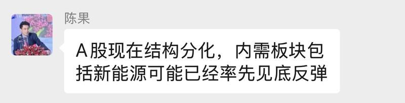
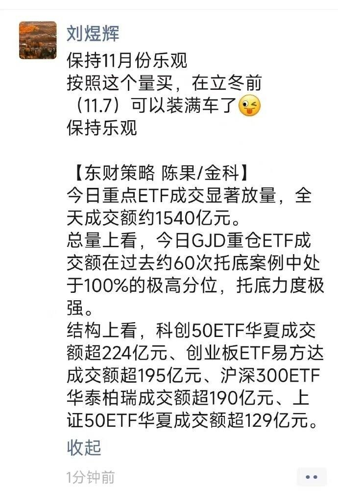
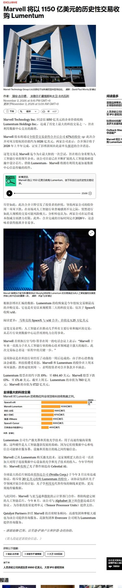
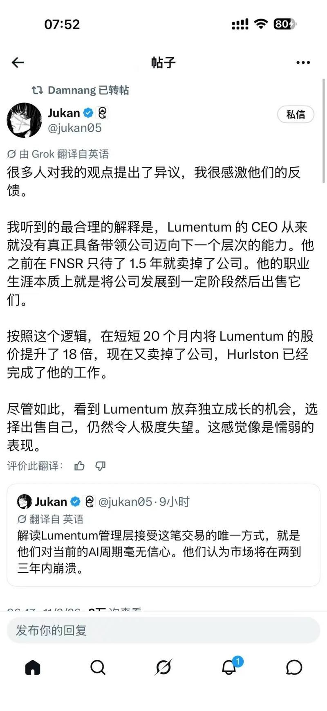
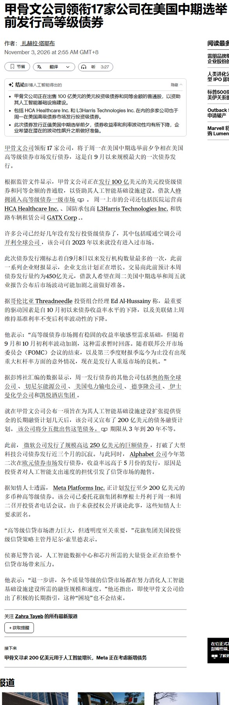
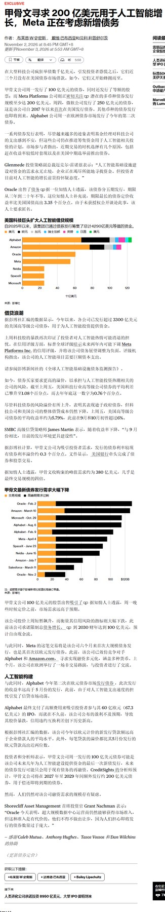

调研纪要 · 2026-11-03 新闻日报
星球 ID: 28855458518111 | 共 280 条帖子 | 精华 80 条
| 查看研究积累
强制同步到研究积累
全部 计算机 其他 机械设备 电子 电力设备 非银金融 宏观策略 基础化工 传媒 医药生物 食品饮料 通信 建筑材料 社会服务 汽车 有色金属 农林牧渔 国防军工 建筑装饰 石油石化 公用事业 家用电器 房地产 轻工制造 银行 交通运输 纺织服饰 商贸零售
书签
最近路演聊下来，市场仿佛失去了对于科技股的定价能力，很多成长龙头目前都按照比周期股还要低的估值去定价，我们认为本质反映的还是资金的惯性负反馈… 相比 4-6 月...
最近路演聊下来，市场仿佛失去了对于科技股的定价能力，很多成长龙头目前都按照比周期股还要低的估值去定价，我们认为本质反映的还是资金的惯性负反馈… 相比 4-6 月份的“狂热定价”，10 月份的杀跌又显得“过于线性”[捂脸]
产业调研下来，后续我们依然能看到光/PCB/MLCC 的业绩加速，能看到国产算力/半导体设备的景气持续，能看到 AI 需求叙事的呼之欲出…
24 年的“Capex 持续性担忧”，25 年的“模型导致算力通缩担忧”，AI 投资也遇到过很多次“至暗时刻”，但我们依然等到了训练模型裂变、推理应用起势、Coding 爆发等一次次的崭新叙事…
大部分人因为看见而相信，只有少部分人因为相信而看见。现在这个市场可能讲基本面、讲产业逻辑确实无用，但我们依然坚定看好全球 AI 硬科技投资。期待回归一个正常有效的市场环境[加油]
🌛物理AI更新（7）产业链调研再思考1103—数据
🌛物理AI更新（7）产业链调研再思考1103—数据
今日我们前往开普云无锡具身智能数采基地体验+调研
1️⃣#开普云从AI时代迈向物理AI时代，将数据资产作为重点方向，数据类型涵盖真机数据、第一视角数据、互联网数据和仿真数据，基于派0.5开发了开普云具身智能大模型；#同时公司也正在从遥操真机数采→VLA模型自主控制真机数采方向研发（本质是AI for AI的一种），大大节省人力成本。
2️⃣#数采核心壁垒在于模型对于数据的理解，1）数据业务从采集向加工、评测和模型训练延伸，避免停留在人力外包。#第一步：采集数据赚“辛苦钱”，#第二步：数据标注、清洗等二次加工，借助模型提升审核、标注效率，#第三步：模型训练相关评测服务，越做精加工，利润越高。2）智元相关负责人表示双方合作涵盖数据、软件、算法模型，#同时也指出制约放量的本质依然在高质量数据的欠缺，#尤其是垂类行业的真实数据。
其他相关标的：（龙头+ 弹性）
1️⃣O链：龙头【立讯精密、长盈精密、奥比中光】，#弹性【创维数字（端侧+物理AI共振）、华依科技】；
2️⃣T链：#峰岹科技、 福莱新材、恒立液压、浙江荣泰、福赛科技、正强股份。
3️⃣垂类应用：#江顺科技（A股唯一半导体垂类，全球唯三）、华锐精密（明年仅10x出头pe），能科科技
4️⃣数据服务：容量：【凡拓数创，海天瑞声】，#弹性：【开普云】
中际旭创交流要点总结-20261103
中际旭创交流要点总结-20261103
1、砍单传闻辟谣：公司明确表示，#绝大部分客户没有下调2027年订单，个别客户仅进行结构性调整（下调800G、上调1.6T），旭创自身订单未受影响。整体需求仍在此前预测范围内，且原有预测相对保守。
2、2028年指引：已有一家重点客户给出明确的2028年需求指引，另一家预计年底给出。#目前看2028年需求仍将保持非常强劲的增长，客户拉货节奏正常，未见放缓。
3、价格/毛利率：2027年800G、1.6T价格整体良好，部分产品小幅年降，部分维持原价。DSP、光芯片、mSAP供应逐季改善，BOM涨幅有限，#高端产品及硅光占比提升有望支撑毛利率稳定。
4、NPO/XPO：NPO预计2027H2起量、2028年加速，主要受良率及高功率CW光源等物料爬坡影响；XPO预计2027H2开始释放需求。#未来CPO与NPO、可插拔方案将长期并存。**
5、其他：外资券商下调旭创评级的传闻不实；Marvell拟收购Lumentum预计不会影响现有供应格局
【西部通信】中际旭创对于不实传言的辟谣
【西部通信】中际旭创对于不实传言的辟谣
不实传言：
1、传言海外客户的800g需求砍单，目前绝大部分客户都没有下修，个别的有一些结构性调整。比如减少800g，增加1.6t。2027年的行业需求没有任何下修。
2、传言外资券商下调评级，是虚假谣言。
#关于未来需求指引： 2028年有一家客户给了明确指引，仍然很强劲。其他客户仍然在收集。四季度和明年一季度的拉货节奏：没有放缓情况，供给还是很紧张。
#价格：2027年价格比较坚挺，小幅度降价。
#股东回报上的考虑和回购：前期有比较大规模的回购，最近也有提案进行50亿规模的注销。后续是否继续回购会再判定。分红比例会继续加大，会加大分红回报。
#物料问题： 前三季度紧张，后续逐渐改善，环比持续提升。DSP物料：公司锁定的物料是和订单需求接近的，整体的行业供给紧张，公司的大客户拥有分配的话语权，可以和市场份额匹配，价格整体还好，不会影响bom结构。
#marvell收购lumentum事件点评：判定事件对竞争格局没有影响。
#英伟达展示oio的技术方案： 对于新的应用场景，公司都有针对性的开发，协助客户定义新的领域，无论采用新的产品形态，公司都在准备中。
#NPO： 明年下半年起量，更多需求会出现在2028年，需要良率爬坡的过程。上游更高功率的光源和其他物料有良率爬坡的过程，都是全新的物料。
#xpo的产品：今年OFC大会上就已经展示了解决方案，明年就会产生需求。
#scale in： 还需要较长时间去部署，技术标准现在还不清晰。
#关于毛利率： 零部件紧张会导致盈利能力下降吗？bom成本涨幅相对有限，毛利率能不能保持稳定还要看达成的价格、出货结构、良率、生产效率、技术能力的管控水平（比如硅光产品里面对方案的优化）。
[太阳]西部通信观点：近期AI硬件赛道从前期的极度拥挤，到去拥挤度，到接近恐慌式的流动性危机，资金去杠杆、减仓、赎回、爆仓等声音频出，近期跌到这个位置更偏向情绪化的资金流动性问题。AI产业景气度仍在有序演绎，2027年需求指引尚未出现下调的信号。市场情绪化容易使得股价在过高和过低两极演绎，目前已超跌，对于悲观预期演绎较为极致，遵循产业规律，情绪化宣泄完又会回归理性。
📩【天风建筑 π点求支持】郑中设计调研纪要 20261103
📩【天风建筑 π点求支持】郑中设计调研纪要 20261103
🌟前三季度收入利润双增，软装收入占比持续提升。2026年前三季度实现营业收入13.46亿元（+36.05%），归母净利润1.60亿元（+17.97%），扣非归母净利润1.42亿元（+16.42%），经营活动现金流净额2.18亿元（+20.06%）。收入结构方面，设计收入约8.03亿元，占比约59.67%；软装收入约4.57亿元，占比约33.93%；工程收入占比约4.39%。盈利能力方面，设计毛利率通常在40%以上，软装约30%，主要由于软装业务包含家具、艺术品等采购成本。
🌟设计业务稳步发展，软装成为重要增长引擎。公司自2019年起主动收缩传统装饰工程业务，逐步向室内设计及软装服务转型。设计业务主要围绕室内硬装方案，软装则覆盖家具、灯具、艺术品等搭配设计、选品采购及现场摆场。两项业务分别报价、独立形成收入，软装并非设计收入的简单拆分。目前约30%–40%的设计客户进一步选择软装服务，独立软装客户贡献软装收入约20%–30%。随着客户对空间美学及整体搭配重视程度提升，叠加软装团队和供应链能力扩张，软装业务持续增长。
🌟在手订单充足，住宅及酒店翻新需求提供支撑。22026年前三季度设计、软装新签订单分别约13.84亿元、8.01亿元，合计约21.85亿元；截至9月底，已签约未完工订单46.12亿元，其中设计35.24亿元、软装9.72亿元、工程1.16亿元。住宅业务增长较快，主要来自上海、杭州等地豪宅项目及地产商样板间、售楼处设计，前三季度住宅TOC相关订单约2–3亿元。国内存量酒店翻新项目增加，海外酒店翻新有望贡献增量。酒店项目执行周期通常约3年，住宅项目通常约1–2年。
🌟2019年主动转型，聚焦设计主业，轻资产转型成效逐步显现。公司自2019年起主动舍弃传统装饰工程业务，将经营重心全面转向室内设计及软装服务，逐步完成由工程承包商向专业空间设计服务商的转型。目前工程业务规模已大幅收缩，收入占比仅约4.39%，设计及软装已成为绝对核心业务，轻资产转型基本完成。
🌟布局深迪半导体，探索科技领域第二增长曲线。公司于2025年底左右投资深迪半导体，投资金额约1亿元，成为其第一大股东。深迪主要涉及MEMS惯性传感器芯片，应用于电视、手机、耳机、手表、智能眼镜及平衡车等领域。2026年半年报对深迪采用权益法核算，目前尚无明确并表计划。后续重点关注产品竞争力、客户导入、量产进度及盈利能力。
#详细调研纪要请联系
☎️联系人：鲍荣富/王丹/于那/周丹丹/上官京杰/林晓龙/曾子峻18603021420
[红包]【天风轻纺】东方甄选（继续金股）：再次强调公司机会
[红包]【天风轻纺】东方甄选（继续金股）：再次强调公司机会
#我们认为公司核心预期差（认知差）不单在数据跟踪而在成长定性；其涉及估值体系及上限。
我们认为公司有望在当前成长势能下快速扩大覆盖群体，逐步沉淀转化核心购买力；背后或是更深刻的供应链共创对商品价值的再分配。
#今日公司召开股东会；俞敏洪及孙进等出席交流，进一步阐释公司运营态势；我们认为
①公司对产品的专注及理解或超出大部分固有认知；甄选从来都是产品公司，不是销售公司；其对于品控质检原料等非常执着且严格；
②国内庞大成熟供应链提供了先天土壤；诸多品类诸多大品牌超头供应链均有积极合作的意愿及能力；帮助公司快速切入多个品类；
③市场或担心渠道容量上限，其实可更乐观的看待抖音等巨大市场厚度品类广度；甄选目前体量非常小我们认为3-5年内不存在任何天花板；
④市场或担心线上效率线下拖累等，公司具备成熟完善的预算费控体系，不会盲目发展；譬如双11ROI优于此前；
⑤对用户反馈、消费趋势等信息采集，推进商品测试爆款孵化等，公司具备天然优势入口；我们认为其也是当前各类渠道自营品快速爆发的话语权起点。
#目前公司GMV持续同比环比高增净利率扩张；近两年业绩高增估值快速消化；建议积极关注。
-------------------
欢迎联系 | 天风轻纺
孙海洋/于梦鸽
【华西电子卜灿华团队】北斗伏羲：物理AI大模型发布
【华西电子卜灿华团队】北斗伏羲：物理AI大模型发布
根据桐乡新闻网，11月2日，在2026年世界互联网大会，Fseek伏羲天问大模型正式亮相。
🌟作为北斗伏羲全栈自主研发的网格时空大模型，#为我国低空经济、自动驾驶、机器人等新兴产业构建起自主可控的空间智能底座。
根据华是科技、震有科技公众号
➠北斗伏羲现场与多家企业进行垂直领域应用联合签约，其中包括#华是科技、震有科技、Gomax（友邦吊顶） 等
➠如华是科技提及，双方将重点在 AI 短剧/短视频创作、算力与大模型服务、低空文旅内容打造、低空安全应用场景拓展等方向开展协同。
💡我们认为随着大模型能力不断提升，物理AI落地性日趋增强，北斗伏羲落地物理AI大模型，意味着行业正在加速部署中，未来有望新增大量市场机遇。
📋受益标的：华是科技、友邦吊顶、震有科技等
风险提示：行业发展不及预期、技术发展存在不确定性等。
具体信息欢迎联系华西电子团队卜灿华(SAC：S1120524120006)
📰【高盛香港市场综述】
📰【高盛香港市场综述】
📌恒生指数上涨 0.5%，恒生中国企业指数上涨 0.4%，恒生科技指数上涨 0.7%，成交额 2360 亿港元。
📌领涨板块：必需消费上涨 2.9%，非必需消费上涨 1.5%，公用事业上涨 1.3%。
📌落后板块：医疗保健下跌 2.4%，能源下跌 1.3%，工业下跌 0.5%。
📌港股今日走势震荡但偏向乐观。区域内，H 股表现突出，而 ADR 和期货市场已在一定程度上为此奠定基础。
📌几个方面看起来有所改善，南向资金恢复净买入 —— 大额买入约 30 亿港元，为 5 月中旬以来最多。
📌恒生指数突破 23500 点关口，但幅度不大，不过令人鼓舞，尤其是此次上涨由消费板块引领，表明市场广度有所回归。
📌在岸政策托底是投资者最关注的话题，但 A 股在此阶段明显落后于 H 股。
📌资金流向方面，买入倾向为 1.2 倍，交易台在非必需消费、运动服饰板块双向成交，偏向买入。
📌我们还在美团等消费相关科技、平台股中接到小额买盘，以及友邦保险等保险股中有一定买入。
📌另一方面，中际旭创等光模块个股在弱势中遭遇一定抛压。
📌能源板块我们为卖方，消费板块及降息受益股（如创科实业）持续有抛压。
📌板块方面，必需消费和可选消费领涨。牧原食品上涨 6.4%，蒙牛乳业上涨 4.7%，食品饮料类个股集体冲高，在排行榜上占据主导。
📌可选消费板块中，京东上涨 5.4%，双十一临近带动股价走强。
📌电动车板块逼空行情延续，理想汽车上涨 3%，小鹏汽车上涨 3%，小米上涨 1.8%，自昨日强劲交付数据公布后引发了一波逼空。
📌另一方面，医疗保健板块回吐近期涨幅，出现技术性反转。
📌能源板块因油价回落而走低，AI 基础设施和硬件科技类个股继续拖累下行，半导体板块下跌 5.9%。
📰【高盛韩国收盘综述 —— 美国中期选举前交投清淡】
📰【高盛韩国收盘综述 —— 美国中期选举前交投清淡】
📌韩国综合指数（KOSPI）下跌 3.59%，收于 5648.8 点，成交额 105 亿美元；外资净卖出 11.30 亿美元，本地投资者净卖出 0.84 亿美元，散户净买入 12.41 亿美元。
📌韩国创业板指数（KOSDAQ）下跌 4.08%，收于 704.4 点，成交额 40 亿美元；外资净卖出 5700 万美元，本地投资者净卖出 1.75 亿美元，散户净买入 2.39 亿美元。
📌市场回顾：韩国综合指数回吐昨日涨幅，各板块普遍走弱。
📌韩国半导体板块，SK 海力士下跌 5.0%、三星电子下跌 4.1% 领跌指数，其他周期板块也回吐了昨日的大部分涨势，半导体设备 / 材料板块、KRXCST 下跌 3.4%，GSXAKHOC 下跌 2.8%，GSXAKREV 下跌 6.2%，KRXAUTO 下跌 1.4%。
📌韩国综合指数成交额持续低迷，较 20 日均低 27.6%，表明在美国中期选举前风险偏好仍然谨慎。
📌交易台活动整体也较为清淡，卖盘流向更偏向广泛的 AI 供应链。
📌其他方面，大韩航空上涨 30% 封死涨停，此前有消息称韩进集团会长赵亮镐计划买入韩进 KAL 股份，助长了市场对可能出现更广泛股权增持竞赛的预期。韩元升值 38 个基点至 1340.9 韩元。
📌主要头条：半导体板块走弱，SK 海力士下跌 5.0%、三星电子下跌 4.1%，回吐昨日全部涨幅，此前费城半导体指数下跌 3.4%，因科技股和动量股遭抛售而在隔夜扩大跌幅。
📌外资转为三星电子净卖出，净卖出 1.54 亿美元，同时延续对 SK 海力士连续三日的净卖出，合计净卖出 4.75 亿美元。
📌本地机构对两只股票均为联合净卖出，三星电子净卖出 2800 万美元，SK 海力士净卖出 2.05 亿美元。
📌而散户投资者逢低买入，三星电子净买入 2.09 亿美元，SK 海力士净买入 4.07 亿美元。
📌对于海力士，其他公司继续作为流入支撑，今日合计增持 2.71 亿美元。
📌在我们的交易台，内存股资金流清淡，市场情绪仍然谨慎。
📌韩进 KAL 上涨 30.0%：股价上涨，此前有消息称韩进集团会长赵亮镐计划增持自身股份，这加剧了市场对韩进 KAL 可能出现更广泛股权增持竞赛的预期。
📌头条消息称，韩进集团会长赵亮镐计划在 12 月 3 日至 1 月 1 日期间，以每股 11.4 万韩元的价格买入该公司 32.5 万股，占流通股的 0.5%。
📌赵亮镐在韩进 KAL 的持股比例将从 5.75% 升至 6.23%。
今日市场点评1103：算力硬件二次探底，政策工具再加码
今日市场点评1103：算力硬件二次探底，政策工具再加码
行情总览
A股全天震荡调整，科创50收跌3.81%，算力芯片与CPO持续下挫；深成指、创业板指冲高回落，沪深京三市超3300只个股飘绿，成交逾1.71万亿。白酒、食品等消费股逆势活跃，AI漫剧概念连续两日大涨，锂电、游戏、光伏跟涨。
亚太科技股共振下杀，韩国综指收跌3.59%、盘中一度跌4%，台湾加权指数跌3.6%，三星一度跌5%；日本股市因假期休市。港股相对抗跌，恒生指数收涨0.57%，恒生科技指数涨0.74%，南向资金净买入达200亿港元。
商品方面，原油主力合约跌超7%，油气链领跌；贵金属先扬后抑，现货黄金回落至3906美元。
核心事件与观点
全球AI链调整进入第二周，A股算力硬件在恐慌盘与护盘资金的对撞中二次探底。隔夜纳指100技术性回调，今日韩股盘中触发卖盘侧SIDECAR，A股易中天跌超10%，科创50再跌近4%。技术性回调区间引发的程序化抛压与趋势资金止损主导盘面。短期内基本面验证较难对冲资金面的负反馈，算力链见底信号要看龙头缩量与波动率回落，而非单日政策利好。
护盘资金创纪录进场，单日四只宽基ETF成交破百亿，为924行情以来首次。午后科创50ETF华夏成交突破200亿元、创业板ETF易方达超185亿元，上证50ETF、沪深300ETF、中证1000ETF均超百亿；叠加上周10月宽基ETF创纪录流入，托底规模正在升级。ETF托底与个股出清并存，指数下限支撑明显强于个股。
政策工具密集落地，央行今日落地第三次SFISF操作1000亿元、31家机构投标、中标费率仅10bp；证监会李超表态加快推动新一轮资本市场改革开放；金融时报披露中长期资金近两年净买入A股超1.5万亿元。政策底从被动托底转向主动造势，供给的节奏快于市场出清，短期仍是磨底行情，但政策工具长期化意味着一旦筹码出清完成，反弹的政策弹性也将高于以往。
央行上调外汇存款准备金率至6%，离岸人民币早盘急跌200点至6.6664元附近。人民币此前维持较强，央行选择在升值对出口的挤压与资本流入的博弈下，微调汇率斜率。汇率工具的使用同样为后续宽松留出了空间，对A股是中性偏积极的信号。
风险提示：美以选举窗口政策变化超预期风险；和谈进程转向风险；个别标的财报瑕疵放大沿产业链传导风险。
欢迎大家与我们讨论，请联系国联民生宏观团队陶川/林彦
【国金计算机&科技】#磷化铟：云锗拿下AOI长协大单_持续看好大尺寸&出海涨价逻辑
【国金计算机&科技】#磷化铟：云锗拿下AOI长协大单_持续看好大尺寸&出海涨价逻辑
【1】#订单-AOI五年预计采购90万片_2027年合同金额13亿元
——长协落地：据公司公告，云南鑫耀与AOI签订长协，2027~2031年预计采购90万片4英寸N型磷化铟衬底；2027年度约定采购18万片，金额1.944亿美元、约13.05亿元。
——大尺寸出海：按合同测算单价1,080美元/片（不含税），大尺寸产品获海外客户订单支撑，持续看好大尺寸&出海逻辑。
【2】#价格-近期磷化铟再涨价_采购预付款50+%
——据SMM，10月12日磷化铟再涨价，4/3/2英寸磷化铟衬底当日均价分别由7,050元/3,850元/1,250元涨至7,100元/3,900元/1,275元，产业价格信号持续景气向上。
——据头部外延片厂反馈，上游年内多次涨价，且付款条件严苛，预付款50+%。
——据通美反馈，国内4/3/2英寸磷化铟衬底报价分别为7,000元/4,500元/1,200元，海外6/4/3英寸报价分别为1~3万元人民币/800+美元/450美元。
【3】#供需-短期供需偏紧_持续关注InP战略价值
——短期视角下高频价格信号和库存水位均反映偏紧供需。“远期缺不缺”的问题短期内无解，但通美反馈当下排产已满，7/8月新增订单当年交付较困难，基本无法插单，最大外延片客户催单很急。国内头部外延片厂商反馈排产至半年之后。
——中期视角下“65%”再度强化了InP的战略价值。其一今明两年InP全球供给将由中国产能主导（卡海外光芯片脖子），其二涨价后的Inp衬底仅占光芯片约20%BOM（占光模块BOM极低个位数），因而在FCC阴影下的反制价值凸显，有望上修估值。
联系人：郑元昊/孙恺祈/刘高畅
🍁🍁🍁锂电排产更新
🍁🍁🍁锂电排产更新
🍁电池环节：11月行业整体预计293.4GWh，同比+59%，环比+1%，12月行业整体预计285.3GWh，同比+48%，环比-3%。
12月来看：
Top1预计95.9GWh，同比+21%，环比-4%
Top2预计45.8GWh，同比+83%，环比-2%
Top3预计22.9GWh，同比+105%，环比+1%
🍁碳酸锂环节：11月行业整体预计12.1万吨，同比+27%，环比+2%，12月行业整体预计12.3万吨，同比+24%，环比+1%。
🍁铁锂环节：11月行业整体预计63.1万吨，同比+53%，环比+1%，12月行业整体预计61.0万吨，同比+51%，环比-3%。
🍁三元环节：11月行业整体预计8.1万吨，同比-4%，环比+2%，12月行业整体预计7.8万吨，同比-5%，环比-3%。
🍁负极环节：11月行业整体预计39.6万吨，同比+45%，环比基本持平，12月行业整体预计38.7万吨，同比+37%，环比-2%。
🍁电解液环节：11月行业整体预计32.6万吨，同比+49%，环比+1%，12月行业整体预计31.7万吨，同比+40%，环比-3%。
🍁隔膜环节：11月行业整体预计37.5亿平米，同比+34%，环比-2%，12月行业整体预计37.1亿平米，同比+31%，环比-1%。
【国泰海通食饮】出清延续，筑底蓄力——食饮板块三季报总结
【国泰海通食饮】出清延续，筑底蓄力——食饮板块三季报总结
[玫瑰]投资建议：板块整体承压，白酒降幅最大阶段过去，配置价值凸显，大众品相对平稳，但成本压力显现。1）白酒最大调整阶段过去，地产酒率先见底，高端白酒陆续见底，推荐贵州茅台、迎驾贡酒、今世缘以及深度调整、即将出清标的，泸州老窖、古井贡酒、山西汾酒、五粮液；2）调味品、餐供具备量价回升弹性，推荐海天味业、颐海国际、安琪酵母、宝立食品、安井食品、千禾味业、巴比食品；3）产业上行周期健康食品及部分零食，推荐百龙创园、西麦食品、H&H控股、中烟香港、鲟龙科技、盐津铺子、洽洽食品、鸣鸣很忙、万辰集团、卫龙美味、劲仔食品；4）啤酒悲观预期反应较充分，推荐百润股份、华润啤酒、青岛啤酒、珠江啤酒；5）饮料成长推荐农夫山泉、东鹏饮料，高股息推荐中国食品、康师傅控股、统一企业中国；6）乳制品推荐伊利股份、蒙牛乳业、新乳业、三元股份、优然牧业、现代牧业、妙可蓝多。
[玫瑰]食品饮料：26Q3白酒跌幅收窄、大众品成本压力增大。Q3食饮板块收入2331亿元、同比-3%，净利润376亿元、同比-16%，跌幅相较26Q2小幅收窄。与此前相比，我们看到Q3食饮子版块展现出来的趋势有所不同，收入端白酒等高端品仍对食饮板块有较为明显的拖累，但利润端高端品好于大众品。此前我们看到，大众品板块出清时间更早，25Q4已开始有改善信号、时点早于白酒，然而进入26Q3成本端受地缘、气候等因素影响有所上涨，对利润的影响加剧；相比之下，白酒出清较晚，在经历多个季度的双位数下滑后，26Q3报表端跌幅开始收窄。尽管白酒报表尚未完全修复，但去库动作是持续性的，行业迈向良性经营，白酒报表压力逐步卸下后有望迎来拐点，且考虑预期先行，市场有望提前开始交易拐点。
[玫瑰]大众品需求边际走弱，成本端压力初显：1）软饮料增长放缓，新品类仍贡献增量，26Q3收入、利润分别同比+1%、-13%，收入扩张向利润兑现传导有所减弱；2）调味品与餐饮供应链表现分化，26Q3餐饮供应链调味品、速冻板块收入同比+6%、+8%，利润端同比-9%、+3%；3）乳制品收入温和修复，利润改善仍需时间，26Q3收入同比持平、利润-6%；4）啤酒边际需求偏弱，零食品类变化加速，26Q2收入分别同比-4%、持平；利润端分别-12%、-36%。
[玫瑰]白酒报表加速出清，区域龙头率先修复：行业报表出清已连续7个季度，26Q3趋势延续，行业收入、利润同比-10%、-13%，行业筑底已接近完成，部分提前出清、动销与渠道健康的公司将有率先表现机会。茅台26Q3收入、利润分别同比+3%、+4%，部分出清较早、包袱较轻、动销较优的酒企在26Q3延续报表的同比增长，如迎驾贡酒、今世缘，且利润好于收入，我们认为周期终会回摆，当下的调整或已接近尾声。
[红包]【国投证券化工&新材料】油价降温，关注化纤补库弹性
[红包]【国投证券化工&新材料】油价降温，关注化纤补库弹性
伊朗最高领袖已授予政府与美国谈判的部分权限，若诉求得到满足将重新开放霍尔木兹海峡；多方中间人从中沟通瀚旋，我国也将于11月派遣多名特使特代分赴中东等地劝和促谈缓局。市场交易美伊缓和预期，11/2日布油跌11%至104.8美元/桶。#油价降温背景下关注化纤链补库弹性：根据钢联，截至10/30日，纺织企业原料、产品库存分别为8.8、19.1天，均处于近五年最低历史分位，较21-25年平均水平分别低15.9、29.8天，存在较大补库弹性空间。
[玫瑰]相关标的：①涤纶长丝：#桐昆股份、新凤鸣、恒逸石化。②氨纶：#华峰化学、新乡化纤、泰和新材。③粘胶长丝：#新乡化纤、吉林化纤。④粘胶短纤：#三友化工、中泰化学。
📞联系人：王华炳/郝逸璇
20261103【昇腾算力切入DeepSeekV5预训练环节，国产算力从推理向训练端延伸】
20261103【昇腾算力切入DeepSeekV5预训练环节，国产算力从推理向训练端延伸】
——————————————
1.DeepSeek下一代大模型V5计划采用昇腾芯片开展预训练，昇腾此前主要承担该模型推理任务，若落地将是国产算力向训练侧突破的重要信号（科创板日报）
2.摩根士丹利CEOTedPick预计未来十年AI相关资本开支达10‑15万亿美元，超大规模云服务商未来7‑12年每年或投入8000亿‑1万亿美元，已有2‑3万亿美元资金完成承诺或落地（财联社）
3.黑石总裁JonGray表示所投企业过去一年AI模型相关支出增长20倍，当前AI算力需求大幅超过供给，AI基础设施具备较强投资价值（财联社）
4.OpenAI与CathedralSystems达成网络安全合作共同排查系统漏洞，承诺六个月内提供10亿美元补贴，支持一线网络安全防御人员使用其AI技术（财联社）
5.蔡崇信在乌镇世界互联网大会提出AI需开源开放方能普惠，通义千问已开源超470款模型，全球累计下载量突破40亿次，衍生模型超33万个（科创板日报）
6.国家发改委披露已有38个国家加入世界人工智能合作组织成为创始成员国，我国正推动该组织实体化运行，推进AI治理规则与技术标准对接（财联社）
7.国家数据局提出将探索公共数据授权运营收益分配机制，推进高质量数据集六大专项行动，培育一批创新活跃的数据企业赋能AI产业发展（财联社）
8.发改委表示我国人工智能发展速度与应用规模全球领先，工业领域已涌现5.6万余家智能工厂，AI加速向工农服多行业场景渗透落地（财联社）
9.QuestMobile报告显示，2026年9月红果免费短剧去重用户4.3亿，超越4.19亿的豆包（来源：长安街知事公众号）
10.苹果新任CEO特劳斯押注家用机器人J595，目标定价约1000美元，计划2027或2028年上市（来源：SourceMind公众号）
欢迎联系东北计算机团队
水泥近况更新：水泥价格连涨8周，水泥煤炭价差10月以来开始好转
水泥近况更新：水泥价格连涨8周，水泥煤炭价差10月以来开始好转
1.26前三季度行业亏损约70亿元，过去20年来最差。全年行业预计亏损，为有数据统计以来最差。Q3多数企业处于亏现金流边缘，行业盈利能力处于底部。
2.需求明后年仍有压力，但现房销售已落地，悲观预期充分。
3.两广、湖南已有强有力供给约束政策出台，能否以点带面，可持续观察。
4.水泥板块筹码干净，机构不拥挤。
5.重点关注#海螺、塔牌、华润建材科技、华新。塔牌（5.9%）和海螺（5.0%）还是高股息标的，海螺还是权重股，进可攻退可守。
[爆竹]风险提示：需求不及预期、竞争恶化、政策不及预期等。
建筑行业2026年三季报总结：Q3新签订单降幅环比略有扩大，央企整体抗风险能力更优
建筑行业2026年三季报总结：Q3新签订单降幅环比略有扩大，央企整体抗风险能力更优
[太阳]Q3建筑企业新签订单降幅环比扩大，民企订单增速相对更优。我们的样本建筑企业26年前三季度合计新签订单10.37万亿元，同比-11.9%，其中26Q3单季度新签订单2.69万亿元，同比-14.3%，Q3单季度降幅边际有所扩大。分所有制来看，央企、地方国企及民企26年前三季度分别新签订单93623/8964/1127亿元，同比-11.7%/-14.3%/-7.9%，民企降幅相对更小，我们判断主要因素是：民营建筑企业下游多为地产链，在经历了行业出清后，头部企业的市场份额已获得一定提升。分板块来看，房建工程（-2%），钢结构（-3%），国际工程（-5%）是2026前三季度新签订单同比降幅相对较小的板块。
[太阳]Q3板块利润降幅环比有所扩大，期间费用率同比上升。26年前九月建筑板块实现收入5.19万亿元，同比-9.8%，实现归母净利润872.4亿元，同比-29.7%；其中2026Q3单季度，建筑上市公司实现收入1.64万亿元，同比-11.4%，实现归母净利润185.8亿元，同比-43.3%。分科目来看，2026年前三季度建筑板块毛利率同比小幅上升，我们判断主要因为需求下行背景下建筑企业放弃部分低毛利项目，但由于收入规模下降，板块整体期间费用率同比上升0.51个百分点，使得净利率同比下降0.55个百分点。分所有制来看，建筑央企净利率同比降幅相对较小，体现相对更优的抗风险能力。
[太阳]付现比上升，经营现金流压力有所增加。26年前三季度上市建筑企业经营现金流净流出4133.8亿元，同比多流出40.4亿元，其中Q3单季度经营净现金流流出110.2亿元，同比多流出845.7亿元，Q3板块整体现金流压力同比、环比增加。从收现比、付现比上来看，2026年前三季度板块收现比101.76%，同比上升2.49个百分点，体现建筑企业整体回款同比略有改善，但同时前三季度板块付现比同比+2.72个百分点至108.94%，同比涨幅大于收现比，付现压力增加使得板块经营净现金流流出同比小幅增加。分所有制来看，央企收现比同比改善幅度最大，但付现比上升幅度也同样最大。
长江三峡游轮行业10月数据跟踪
长江三峡游轮行业10月数据跟踪
[太阳]核心结论：10月长江三峡省际游轮客运量增长约5%（1-10月累计增速约6%），7、8、9月同比增速分别为2%、14%、13%。10月60岁以上游客占比56%、提高2ppts。境外游客维持高增长，全年来看境外游客贡献了主要客流增量。10月延续豪华型游轮驱动特征，经济型游轮客流下降22%，而豪华型增长13%（8月以来维持双位数增长）。经营主体方面，10月宜昌交运（三峡旅游）增速最快（去年基数中仅为非过夜跨省游轮），相较去年新增“揽月号”、“极光号”省际度假游轮。
⭐一、总量
2026年10月，长江三峡游轮发船508艘次/同比-4%，客运量15.57万人/同比+5%，游轮平均载客率为85.7%/同比+0.6ppts。2026年1-10月，累计发船3980艘次/同比-8%，客运量111.77万人/同比+6%，游轮平均载客率为79.7%/同比+2.8ppts。
⭐二、运营主体
1）重庆籍省际游轮：10月重庆渝鸿/重庆黄金/重庆冠达/重庆东江/重庆大美/重庆长航客运量2.66/2.12/1.90/1.44/0.94/0.54万人，同比+6%/-3%/-15%/-17%/-4%/-16%，重庆交运客运量0.52万人。1-10月以上游轮公司客运量分别21.42/14.14/12.08/11.49/6.76/3.65万人，同比+6%/+9%/-18%/+0%/-9%/-23%，重庆交运客运量3.08万人。
2）湖北籍省际游轮：10月巴东楚天/武汉扬子江/宜昌新高湖/宜昌交运/宜昌江腾/湖北皇家客运量1.33/0.93/1.04/0.88/0.51/0.13万人，同比+39%/-13%/-10%/+120%/+6%/+0%。1-10月以上游轮公司客运量分别10.89/7.76/7.35/4.07/3.68/1.02万人，同比+47%/-5%/+7%/+69%/-27%/+48%。
注：重庆冠达、宜昌交运基数中包含省际非跨夜游轮
⭐三、客源结构
10月境内游客12.31万人/同比-4%，境外游客3.26万人/同比+53%，境外游客占比20.9%/+7.7ppts。1-10月境内游客97.95万人/同比+1%，境外游客13.75万人/同比+65%，境外游客占比12.3%/+4.4ppts。
⭐四、年龄结构
10月12岁以下/12-18岁/18-30岁/30-45岁/45-60岁/60岁以上游客占比3.7%/1.1%/3.2%/9.2%/26.5%/56.2%，60岁以上占比同比+1.9ppts。
⭐五、船型结构
10月豪华型游轮发船381艘次/同比+8%，客运量12.80万人/同比+13%；经济型游船发船127艘次/同比-27%，客运量2.77万人/同比-22%。1-10月豪华型游轮发船2922艘次/同比+9%，客运量89.72万人/同比+15%；经济型游船发船1058艘次/同比-36%，客运量22.05万人/同比-18%。
【长城机械 汪湛帆】沃尔德调研要点20261103
【长城机械 汪湛帆】沃尔德调研要点20261103
🧧#金刚石散热片开始放量
1、金刚石散热片是芯片级别散热，公司主要通过曙光数创给大客户HG进行供应，大客户已经进行了第一次招标，十几万颗的量级（单晶：多晶的比例是7:3），预计明年3月份会开始第二次招标，客户总需求量会有50万颗，ASP 500-1000，毛利率30%+
2、公司同时布局光模块的金刚石散热片，正在给光芯片客户进行送样
🧧#金刚石钻针订单超预期
公司已经拿到了一家大客户的供应商资质，11-12月份会有千支订单，预计明年会有万支以上的出货，ASP 400-600
【长城机械 汪湛帆】柯力传感——机器人传感器龙头
【长城机械 汪湛帆】柯力传感——机器人传感器龙头
🧧#机器人传感器出货爆发增长
1、去年全年出货1600支，今年预计全年力传感出货超过1万支，今年Q4已有大客户给公司下万支级别订单。明年出货15万支，400元/支（大规模量产价格），预计29年出货到百万支
2、1个手臂需要6个一维力传感器和1个六维力传感器，1只手asp 3500，1个机器人两只手，对应单台机器人asp 7000
🧧#力矩传感器规模化降本以后，渗透率会指数级别增长
1、力矩传感器的优势：1）误差精度千分之一，电流环5%；2）力矩传感器不存在反应滞后的问题，如果未来机器人需要和物品甚至于人进行互动，那么力矩传感器是必不可少的
2、目前北美龙头还在使用电流环主要是因为力传感器太贵，美国供应商都是上万的价格。预计未来1年内六维力传感器价格做到千元以内，一维力传感器下降到100-200，北美龙头将会开始大规模使用力传感器。目前公司已给临港客户小批量送样六维力传感器，后续有望进入龙头传感器供应链
🧧#公司深度参与机器人一级投资，后续有望形成产业链协同
公司参与了智身科技、普渡科技、他山科技、森云智能、深朴智能等等机器人产业公司，后续有望和公司传感器业务形成产业链协同
❗️#投资建议
公司明年业绩4e，对应估值35倍，建议关注
潍柴动力、中国重汽、中通客车交流要点 -20261103
潍柴动力、中国重汽、中通客车交流要点 -20261103
#潍柴动力
数据中心#燃气发 下游需求旺盛。公司正在稳步提升产能，2027年销量有进一步上调空间，盈利能力高于柴发；同步研发5MW级别机头。#柴发 同样需求火爆，预计26Q4出货量同环比继续大幅增长。#SOFC 公司有扎实的在手订单，已经按照最快速度推进产能落地。 #重卡动力链 配套重卡出口的发动机还有增长空间；潍柴在工程机械尤其是挖掘机的配套份额还有较大空间。 #物流设备 正在把KION公司和中国供应链深度融合，未来有望持续增长
#中国重汽A
26Q1-3销量接近15万台，同比+18%，增速好于行业。26Q3出口占比55%，进一步提升。出口车型与集团结算，目前定价稳定。#车桥子公司 新能源电驱桥、6X4车桥可以持续拉动ASP和利润 #后市场 之前为了推广有让利，26Q3毛利率已经回升，未来还要延申到海外
#中通客车
预计26Q4、2027年公司客车出口的量可以持续增长。出口的新能源客车，下游普遍支付能力较强，退税退坡影响不大。欧洲IAA政策需要继续观察。国内客车市场主要是置换，目前观察已经进入稳态。
欢迎交流详情！
[玫瑰]【申万机械】中国中车：最好的中车，最佳的时点，持续推荐！-1103
[玫瑰]【申万机械】中国中车：最好的中车，最佳的时点，持续推荐！-1103
#最好的中车：铁路装备业务进入多重景气度叠加阶段。1）动车新增：客运量增长支撑新建线路配车及存量线路车辆加密；2）高级修：2014-2016年投放的动车组高峰期有望在27-30年转化为五级修；3）更新替换：2007年开始高铁建设，和谐号20年寿命将在27年迎来首次替换需求；
#最佳的时点：基本边际变化的节点和估值水位均处在右侧起点。1）时间节点：27年是通车高峰+新一轮五级修+首轮替换周期的叠加；2）估值：26年PE约13X，当前PE（TTM）估值处在近10年10%分位数，参考上轮周期估值，若修复到20X对应估值弹性约50%；
#股息率安全垫：公司轨交业务已经过了强周期阶段，未来随着后周期需求占比提升，公司业绩的稳定性和确定性越来越强，目前公司分红率50%，对应26年A股4%股息率、港股5%股息率，未来业绩和分红率仍有增长空间，持续推荐！
[抱拳]申万机械：王珂/刘建伟
海外系列🌀【天风电新】AE先进能源工业：得益于数据中心需求增长，Q3业绩超预期-1103
海外系列🌀【天风电新】AE先进能源工业：得益于数据中心需求增长，Q3业绩超预期-1103
———————————
以下单位均为美元
⭐财务分析
26Q3公司实现营收6.96e，同+50%，环+21%，EPS为3.65美元，同+110%，环+33%，高于此前预期上限。Non-GAAP毛利率42.1%，净利率24.4%。
Q3末现金及等价物为14.2亿美元，净现金为1.59亿美元。存货周转率稳定在2.5X，经营性现金流0.66e。公司重启股票回购计划，10月以约241美元/股的价格回购约3kw美元普通股。
⭐半导体设备
26Q3实现营收3.22e，同+64%，环+16%。增长动力来自先进制程设备需求强劲、刻蚀与沉积工艺强度提升，以及系统电源业务收入扩张。
Q3公司斩获多个先进制程工艺的等离子电源设计，并新增2个半导体测试领域订单（AI芯片与模块测试功率需求显著上升）。
27年预计超过10%的半导体收入来自新产品，面向先进逻辑和存储工艺。27年营收增速将与WFE增速持平或更快增长。
⭐数据中心
26Q3实现营收2.56e，同+49%，环+34%。增长动力来自客户需求提升及新项目初步量产。
超大规模云厂商业务持续走强，多个新项目驱动未来两年增长；目前核心大客户需求强劲，因客户枢纽库存不足，部分电源产品需空运。
第二波客户（企业、云厂等）Q3新增多个订单，预计从27年起贡献收入；到29年第二波客户合计潜在收入超3e美元。
OCP大会上，公司展示800V配电板（效率98%，功率密度达350W/立方英尺，模块可定制化）以及液冷电源技术（兼容50V与800V系统）。
⭐工业及医疗设备
26Q3实现营收0.9e，同+27%，环+13%，连续第四个季度同比增长，趋势预计延续至27年。工厂执行效率在提升，满足增长需求并消化逾期积压的订单。
⭐产能布局
泰国工厂已开始产生收入，多家数据中心客户已完成工厂认证，半导体客户预计很快完成认证；菲律宾、马来、墨西哥工厂将持续提升产量。
维持28年总产值超过50e，当前产能可支撑到29年的需求，设备采购周期仅为3-6个月，产能扩张本身不存在明显障碍。
⭐业绩预期
公司预计26Q4营收中值为7.35e，预计毛利率在42%-42.5%，EPS为3.9美元，高于此前预期。
26年全年收入增速上调至约40%（此前预期30%-35%），资本开支预计1.8-1.95e，27年将继续保持高位。
预计27年营收增速约30%（此前预期20%），全年呈现逐季增长但非线性。当前供应紧张品类集中在IC、PCB、特种陶瓷等个别零部件。
———————————
欢迎交流：孙潇雅/张嘉豪
[烟花]【中泰医药】苑东生物推荐：
[烟花]【中泰医药】苑东生物推荐：
❗主力精麻特药品种高速放量期，多条 TPD 管线打开估值弹性空间。
精麻特药、高端仿制支撑现金流业务收入快速增长利润稳健撑起估值锚， 2027年精麻特药管线（二类精神类精麻药短期集采无忧，无脚踝砍价风险）将进入全面放量周期，成为制剂板块的核心引擎。心脑血管等慢病领域依托公司在集采重点在第二终端发力，且零售及网销等渠道预计将有较大幅度增长。27-28整个制剂板块（收入占比超90%）预计收入稳健快速增长。
创新平台价值低洼期、空间大值得重视、梯队兑现 公司重磅品种HP-001（口服CRBN分子胶降解剂）用于复发难治性多发性骨髓瘤及非霍奇金淋巴瘤，14 on/14 off 给药方案下，I期单药ORR达58.3%，0.6mg高剂量组ORR达100%，具备BIC潜力，预计年内读出IIa 期联合地塞米松阶段性数据。HP-002 透脑 BTK 降解剂脑组织 BTK 降解率超 60%，2026 年 8 月完成 I 期首例受试者给药；HP-003（VAV1分子胶）预计2026年Q4递交IND，DAC平台首个项目HP-004预计2027年递交IND，平台价值持续兑现。不论从已上市分子销售额还是BD交易额来看，分子胶赛道商业化价值都在持续验证中。2025 年全球累计达成重磅 BD交易14笔，已公布总额超110亿美元。
[玫瑰]估值建议：目前市值更多反应仿制药估值，建议关注创新平台，梯度兑现成长价值。
【中国石油股份】业绩股价再创新高，估值比肩全球同业仍有空间
【中国石油股份】业绩股价再创新高，估值比肩全球同业仍有空间
1、第三季度收入7936亿元（同比+10.4%，环比+0.3%），归母净利润516亿（同比21.6%，环比-6.8%），扣非后534亿（同比+24.8%，环比-4.6%），扣非业绩超预期（预期500-520亿元，最乐观预期530亿元）。
2、上游板块：前三季度经营利润1520亿元（同比+250亿元，+19.7%），第三季度516亿元（同比+122亿元，环比-79亿元），测算油价下跌影响约55亿元，人民币汇率影响约25亿元。
前三季度油气产量同比持平，其中原油-2.2%（国内持平，海外受Q2影响，Q3已恢复），天然气+2.3%，原油实现油价77.7美元/桶（同比+18.5%，但贴水扩大6美元/桶至11美元/桶）。第三季度油气产量456百万桶油当量（环比+1.3%），实现油价79.9美元/桶（环比-9.0美元，Brent环比-5.4美元/桶，贴水环比扩大3.7美元/桶至11.5美元/桶），主要由于公司实现油价滞后约20天左右，6月下旬低油价计入Q3导致贴水扩大。
3、炼化板块：前三季度经营利润231亿元（同比+69亿元，+42.4%，其中炼油180亿，化工51亿），第三季度86亿元（同比+34亿元，环比+24亿元（炼油+18亿，化工+6亿）），预计三季度环比有油价上涨带来的库存收益影响。
前三季度加工量同比-3.7%，成品油产量汽油同比-6.3%，柴油同比-7.3%，航煤同比-7.4%，第三季度加工量同比持平，环比+11.1%。
4、成品油销售：前三季度经营利润145亿元（同比+29亿元，+24.7%），第三季度31亿元（同比-9亿元，环比-18亿元）。预计出口量利环比改善，但国内需求及盈利仍较为疲软。
成品油销量同比-5.1%，其中国内同比-5.7%，国外同比-3.5%，第三季度成品油销量环比+19.0%，国内环比+14.6%，国外环比+32.4%。
5、天然气销售：前三季度经营利润333亿元（同比+20亿元，+6.4%），第三季度127亿元（同比-34亿元，环比+40亿元），预计是原油价格下行带来的进口天然气成本下降，但预计四季度进口气长协成本将有所提升。
6、全年预计归母净利润2000亿元，目前A股12X，H股7.8X，按照50%分红率，A股股息率4.1%，H股6.4%
可比全球公司美股【埃克森美孚】【雪佛龙】相似利润体量，约4-5万亿RMB市值，公司非常规油气储量及增量显著，同时天然气业务稳定性极强，考虑到全球能源价格上行及公司炼化化工转型升级，继续强烈推荐。
尽管美国发动了“有限的”打击行动，美国和伊朗仍继续寻求外交途径。
尽管美国发动了“有限的”打击行动，美国和伊朗仍继续寻求外交途径。
欧盟计划调整单一市场以减少对中国的依赖
欧盟计划调整单一市场以减少对中国的依赖
美国寻求深化与缅甸的关系，以获取“丰富的”稀土资源
美国寻求深化与缅甸的关系，以获取“丰富的”稀土资源
百度AI芯片部门香港IPO据称推迟至明年
百度AI芯片部门香港IPO据称推迟至明年
陈果 刘煜辉
陈果 刘煜辉


2 图
[红包]11/3宽基ETF放量总结
[红包]11/3宽基ETF放量总结
#今日流入金额约800亿元+，“本轮单日最高”，历史上仅次于25年4月8日
[咖啡]沪深300ETF约340亿元，上证50、中证500、中证1000ETF、科创50ETF、创业板ETF流入量级在100亿元左右。
#为何今日流入量级显著放大
[咖啡]外盘波动剧烈，叠加境内融资盘压力较大，平均维保比例已跌破250%（24年小微盘危机时最低点为220%）。
#本轮合计买入金额（10/15-11/3）
[咖啡]合计买入约3500亿元，沪深300ETF约2000亿元，其次为创业板ETF、科创50ETF、上证50ETF，中证500和中证1000ETF在本周流入量级逐步放大。
#近期买入的多个阶段总结⬇️
【1】10/14-10/22：仅在尾盘等特定时间出现大量买单，其余时间不干预。
【2】10/23-10/26：日内持续性贡献买单，小幅下跌后立马有买单支撑，此阶段带领部分场外资金也开始入场加仓。
【3】10/27-10/29：日内偶尔有大额买单，但没有明显拉升动作，主要考量因素可能是外盘企稳、且A股市场的恐慌情绪阶段缓解。
【4】10/30-11/3：买入量级逐步扩大，扩散至全品种，全天大量时段均放量。
【国海资产配置】央行逆周期购金延续，金价底部仍待确认
【国海资产配置】央行逆周期购金延续，金价底部仍待确认
📌三季度全球央行购金显著回暖，数据修复印证官方配置韧性。世界黄金协会数据显示，三季度全球央行及官方机构净增持黄金321.2吨，同比+42%。2026年前三个季度累计净购675吨，同比小幅抬升6%，全年购金中枢并未因为一季度读数走弱而下台阶。结构上看，购金前两名仍是中国与波兰，三季度中国央行增持63吨，为本季度全球最大买家；波兰增持51吨位列第二。中国央行三季度延续增持，7月、8月平稳增持，9月购金节奏进一步加快，单月增持23吨，连续增持周期拉长至23个月。
📌需求结构分化加剧，高金价压制实物消费，金融属性需求接棒。分板块来看，黄金ETF由二季度流出转为三季度净流入211.2吨，反映市场对财政、通胀与地缘尾部风险的担忧升温；金条与金币投资者态度更为审慎，全球金条金币需求同比下降19%至268吨。金饰需求同比下滑17%至313吨，创下统计序列里最弱的三季度表现；三季度科技用金同比增长3%，AI相关制造业带来的增量需求，抵消了高金价带来的约束。
📌展望：短期维持偏谨慎判断。中期而言，央行购金和储备多元化需求仍提供配置支撑，但尚不足以确认价格底部。后续重点观察ETF净增持能否延续、非商业多头减仓是否收敛，以及黄金能否在美股回调时开始相对抗跌。
对救市政策的看法：
对救市政策的看法：
1、周末出台的是已有工具的落实，没有新增。说明领导开始关注，但并没有焦虑。
2、目前看救市思路跟前两年房地产收储类似，给非银加杠杆跟地方政府收储一样，也是市场化工具，需要算账。算的过来的局部可以收，但全局目前还算不了账。
3、因为还没有便宜到算得了账的地步，所以中央收储迟迟出不来，但是市场可以一直yy。从房地产的经验看，非市场化的路径很难走通。
4、美国的风险没有充分暴露，明年经济态势仍高度不确定，所以账要等风险落地了才能算清。
5、提供市场化工具提振信心的目的是为市场提供流动性，本质是高杠杆高亏损集中度容易爆发风险，筹码交换能够风险分担，这一点已经在房地产市场证明了有效性。
白酒沟通的反馈及我们的想法：这才到哪儿？
白酒沟通的反馈及我们的想法：这才到哪儿？
感受：1）关注度和参与度明显提升；2）仍在试图找基本面反转逻辑，但未果；3）更多从资金配置逻辑出发的配置而忽略周期底部的事实
市场总体还是认为白酒是不得已的选择，而没有真考虑这是历史周期底部。如科技10月份以来的持续回调、以银行为代表的红利资产的拥挤，白酒作为顺周期符号，成为了市场不得已而做出的一个选择，不过好在没被当做谁的对立面。
我们认为，需要承认并且重视的是当下是白酒的周期底部，用历史周期大底不为过，至于是多少年的无所谓。1）价格周期来看，茅台25年做了压力测试基本面试出来的底部；2）库存来看，6年的连续下行仍健在的经销商都是人中龙凤；3）报表来看，作为地市级领导换届年，主动或被动会把报表尽量出清；4）机构持仓来看，26Q2、Q3持仓分别为0.97%、1.39%。
近期上涨虽快但根本谈不上贵更别提拥挤，大部分公司股息率仍然在4%以上。况且处在历史周期底部，具备极高胜率。对于市场纠结的空间问题，我们认为以红利资产视角来看在全市场都尚有优势又何必过分担忧，而周期反转的看涨期权极少有人信、股价也没怎么反应，当前行情才属于刚起步阶段。
关于后续的节奏，我们依然强调拐点逻辑推演出来的投资顺序，继续坚守今世缘（一贯优秀一贯超预期）茅台等公司外，近期可重点配置出现二阶导拐点的公司，如古井汾酒老窖等。
🍁很多朋友问新能源为什么涨。最大的原因是预期中期选举民主党可能占多数席位 民主党支持新能源，另外资金面筹码不多 新能源三季度仓位已经历史新低只有6%，以前我们高...
🍁很多朋友问新能源为什么涨。最大的原因是预期中期选举民主党可能占多数席位 民主党支持新能源，另外资金面筹码不多 新能源三季度仓位已经历史新低只有6%，以前我们高峰是26%，从基本面角度碳酸锂降价会为明年储能构建更好环境
第一商用车网谢总、多品牌乘用车经销商交流要点 -20261103
第一商用车网谢总、多品牌乘用车经销商交流要点 -20261103
#第一商用车网谢总
预计2027年国产重卡批发销量125-130万台，同比稳健增长。其中出口有望达到50万台，内销基本持平。电动重卡出口有起量趋势，2026全年将接近1万台，2027年预计高增长。新能源重卡出口的盈利能力明显高于国内；产品定价能力强，退税退坡影响不大。内需方面，7月EBS强装带来的透支接近尾声，2027年国内销量主要看国五置换政策及节奏
#多品牌乘用车经销商
新车上市速度有放缓趋势。从消费的角度，2027年主要看点是现有车型做三电系统升级，强化L2，从强调情绪价值到回归可靠性、安全性。2027年看好纯电渗透率继续提升，尤其是在经济型价位段。我们也交流了大部分#主流新车型具体经销情况，欢迎交流
互动影游产品梳理：AI驱动供给扩容，26年底起新品密集落地（#推荐上海电影/芒果超媒等）
互动影游产品梳理：AI驱动供给扩容，26年底起新品密集落地（#推荐上海电影/芒果超媒等）
#储备产品
1）2026/11/24 #华智数媒 《
天坑追匪 ↗ 》：天下霸唱IP首部悬疑探险互动影游，真人实拍＋AI美术辅助。
2）2026/12/2 #百纳千成、欢瑞世 《
隐藏真探 ↗ 》：民国谍战题材，联合大鱼快游、bilibili游戏出品。
3）2027《三体：审判前夜》：首部三体官方授权AI互动影游，总时长超300分钟。
4）2027年 #欢瑞世纪 《
白袍之下 ↗ 》（Q2）、《
代号三国：赤壁 ↗ 》：前者为医疗反腐现实题材，后者为《
龙起 ↗ 》续作，结合AI场景生成。
5）2027年 #华策影视 《
代号：迷失 ↗ 》：华策首个互动影游，已于8月开机。
6）2027年 #中文在线 《
藏局 ↗ 》等：自有IP AI互动剧，已进入排播阶段。
7）未定档：#阅文×猫眼 《
神秘复苏 ↗ 》；#慈文传媒 三大IP同步开发互动影游；#德才股份 另有4部待上线。
#此前爆款
1）2023年《
完蛋！我被美女包围了！ ↗ 》：累计销量超200万份，带动品类破圈；同期盛天网络推出《
完蛋！我也能追到美女了！ ↗ 》。
2）2025–2026年《
盛世天下 ↗ 》系列：累计销量超600万份，小程序用户80%以上为Steam新用户。
3）2025–2026年 欢瑞世纪多款上线：《
江山北望 ↗ 》《代号三国：龙起》《
主角 ↗ 》《
冰点之下 ↗ 》等。
4）2026年 芒果超媒AIGC互动剧系列：《
马上来财 ↗ 》单日UV峰值超33万，《
从如果开始心动 ↗ 》首周播放约60万。
5）2026/8/19 猫眼、阅文、比高《绍宋：还我河山》：真人＋AI角色，Steam在线峰值破1.2万。
6）2026/9/11《
幸存者笔记 ↗ 》：全AI制作，6人4个月完成约700分钟素材。
7）2026/9/19 德才股份《零号档案：降临》：改编自2亿播放AI剧集IP，抖音上线，免费＋付费点＋广告模式。
8）2026/9/22 上海电影《
新世界：暗影成双 ↗ 》：首款双人协同影游，Steam端约5万份，首日登顶App Store付费榜。
9）2026/9/23 字节《
不问凡尘 ↗ 》：AI原生修仙RPG，成本约200万元，销量破26万份，AI互动影游商业化首个验证。
#推荐标的
互动影游“3＋1”组合：
1）上海电影：上影元出品《
谍影成双 ↗ 》《
新世界：暗影成双 ↗ 》，与即梦、火山Seedance合作，投资智象未来。
2） 芒果超媒：平台＋内容双端布局，AIGC互动剧持续推出，自研“芒果灵创”平台。
3） 华策影视：《
代号：迷失 ↗ 》2027年上线，具备长剧工业化能力及自研垂类模型。
4） 盛天网络：已有成功产品，完成互动影游平台/产品研发，自研VRACE AI平台。
#其他关注
奥飞娱乐、华智数媒、慈文传媒、完美世界、欢瑞世纪、德才股份、百纳千成、电魂网络、富春股份、博纳影业等
【中泰电新】#液冷三季报总结：前瞻指标持续新高，逐季加速信号明确
【中泰电新】#液冷三季报总结：前瞻指标持续新高，逐季加速信号明确
[玫瑰]境外液冷大厂收入依旧高增、指引依旧乐观
#台系AVC等厂商7-9月度收入环比持续增长，单Q3收入达历史新高；同时，根据此前指引，毛利率持续上行，健策等厂商指引27年收入增速达90%，AVC液冷订单能见度延伸至2029年
#维谛26Q3收入及利润超预期，并且上修26全年收入及利润指引，且展望27年营业利润率水平提升至30-35%（26年24%作用），同时Q3新增有机订单同比超100%、在手订单覆盖未来12—18个月，2027年增长确定性增强
[玫瑰]国内Tier1厂商前瞻指标持续新高，代工加速释放业绩
#国内Tier1，英维克、申菱环境存货与合同负债均创新高，环比增幅达几十到翻倍以上，反应备货发货加速、利润兑现在即，立敏达前三季度收入同比+80%，全年指引15-20亿
#国内部件级厂商，飞龙液冷大泵Q3交付、Q4确收；金富液冷收入环增50%、净利率维持29%；江南新材液冷Q3收入加速、月度收入1亿，订单毛利率30%+#
此外，国内链鸿富瀚Q3业绩兑现；一次侧厂商冰轮环境Q3海外数据中心业务贡献核心利润，在手订单再上新台阶达80亿26Q4/27Q1交付进一步加速
#投资建议：存货等指标大幅增长反应Q4公司液冷产品发货及确收将持续增长，公司海外液冷进入放量周期。#建议关注：1）稀缺性和弹性都很大的Tier1：英维克/申菱环境等；2）部件级核心龙头：金富科技/鸿日达/同飞股份/飞龙股份/大元泵业/江南新材/鼎通科技/奕东电子/磁谷科技/鑫磊股份/ 强瑞技术/科创新源等
#风光储液冷26年三季报总结及展望261103:
进门 ↗
风险提示：需求不及预期、竞争加剧等
☎️【中泰电新 曾彪团队】曾彪/吴鹏17701800142/郭琳15962175627
【财通农业】生猪：全国均价再破9，加速去产预期升温
【财通农业】生猪：全国均价再破9，加速去产预期升温
近期全国生猪均价再度跌破9元/公斤，行业头均亏损300-400元；断奶仔猪价格成交50-80元不等，外销仔猪亏损近200元/头（涌益咨询）。
我们判断由现金流断裂导致的被动出清或全面拉开序幕，成为未来半年去产能的主要驱动。行业母猪产能向规模大场集中导致后续的产能去化速度难以线性外推，但个体间经营水平差距明显，高成本、高负债的规模企业或出现阶段性的集中出清。建议重视板块预期差。
标的：牧原、温氏、德康、天康、神农、立华、巨星。
风险提示：产能去化进度不及预期
[猪头]【申万农业】继续推荐关注生猪养殖板块！（1103）
[猪头]【申万农业】继续推荐关注生猪养殖板块！（1103）
1️⃣供给压力显著，近期猪价持续走弱，二次探底。截止11月2日，全国外三元生猪均价跌至10.7元/kg。出栏均重上行，活体库存较高；前期冻品库存累积，当前缓慢释放下行业供给压力难解，预计11月猪价大概率继续下跌。
2️⃣市场预期极度悲观。近期2709前的五个期货合约价格快速下跌至行业成本线下方；其中2611、2701、2703、2705低于行业现金成本线，昭示行业对27H1极为谨慎悲观。参考21、23年两轮旺季猪价的二次探底，最终均驱动了产能调减的非线性加速。
3️⃣非线性产能调减有诸多催化，新一轮周期的高度值得乐观。①【#当期端】仔猪、肥猪的亏损延续（当前已连续亏损超12个月）、②【#预期端】远月期货持续下跌下悲观情绪的蔓延，高成本企业套保行为难度的提升、③【#政策端】限制出栏、缩减能繁的决心与力度，这些均是产能去化的正向催化，当前来看，本轮能繁母猪存栏去化幅度已创下非瘟之后新高（-10.9%），四季度产能持续加速调减下，新一轮周期的高度与猪价弹性有望持续上抬。
4⃣继续看好2027年猪周期弹性❗️头部猪股的股价位置较为安全，赔率伴随产能去化进一步累积，建议积极布局，重点推荐❗️
[玫瑰]标的方面，建议结合历史周期的成本表现和利润兑现度，综合当前估值水平进行选择。重点推荐关注【立华股份】、【德康农牧】、【天康生物】、【牧原股份】、【温氏股份】、【神农集团】、【巨星农牧】等。
欢迎交流！
[红包]【申万家电】央行调升外汇存款准备金率抑制人民币过快升值，持续推荐#出口链标的
[红包]【申万家电】央行调升外汇存款准备金率抑制人民币过快升值，持续推荐#出口链标的
[烟花]#2026年11月3日央行将外汇存款准备金率从4%调升至6%、人民币短线贬值：
外汇存款准备金升高后，商业银行吸收的外汇存款需将更高比例的外汇存放在央行，境内美元流动性收缩，美元兑人民币需求被间接抑制即卖盘下降，传导至人民币呈现短线贬值。
[太阳]#传递明确政策信号、不希望人民币单边急涨：
5年来首次上调，是央行在人民币过快升值、结汇行为自我强化时使用的逆周期审慎工具，打破单边升值预期，截至3日14时45分人民币日内贬值0.43%汇率为6.6747。
[玫瑰]#出口链企业显著受益：
2025Q3以来，人民币连续五个季度升值幅度较大，出口企业毛利率、汇兑损益均显著承压，若人民币升值趋势有所缓和，叠加目前大部分企业海外产能爬坡已一年有余，经营利润率恢复至接近国内水平，集团整体盈利能力有望显著修复。
[礼物]#建议关注：
【石头科技】Q2-3收入利润大超预期，海外线下渠道收获期贡献利润；
【科沃斯】存储压制后周期超跌反弹，海外贡献收入利润增长；
【欧圣电气】、【莱克电气】、【民爆光电】、【华之杰】：受人民币升值、海外产能爬坡净利率腰斩，底部反转逻辑；
【极米科技】、【绿联科技】：产品力提升，海外渠道持续拓展，海外收入高增长；
【美的集团】、【海尔智家】汇兑拖累消退，高基数压力回落叠加海外高成长。
🔥【国金食饮】大众品板块26Q3业绩总结：需求持续承压，关注稳健龙头分红价值
🔥【国金食饮】大众品板块26Q3业绩总结：需求持续承压，关注稳健龙头分红价值
🌟多数子板块Q3收入增速环比放缓，#主要系餐饮需求疲软、雨水天气扰动、传统渠道承压及部分高景气赛道基数抬升，软饮料收入转负，餐饮链及休闲零食普遍降速。利润端，#成本红利逐步消退，叠加汇兑、海运费、税费等因素扰动，多数板块利润率同比下行，龙头企业亦受到一定影响。竞争格局，#乳制品供需关系率先改善，龙头份额及核心经营利润率持续提升，龙头通过渠道改革、品类拓展积极争夺份额。
🌟展望后续，#乳制品供需有望逐步实现紧平衡，成本上涨或加速中小企业出清，龙头竞争优势进一步强化。其他板块需求及成本压力短期仍存，餐饮链需求疲软叠加基数抬升，软饮料进入淡季持续去库存，休闲零食新渠道红利减弱、缺乏爆品催化。#当前优选需求稳健、竞争格局稳定、护城河较深的龙头，兼顾高分红率，#推荐伊利股份、蒙牛乳业、颐海国际，关注农夫山泉、安琪酵母。
🌟乳制品：Q3行业收入/利润同比+0.7%/-7.3%，#需求稳步修复，上游原奶供给收缩推动供需逐步平衡。尽管税率、减值等因素拖累表观利润，但利润降幅环比收窄，龙头核心经营利润率同比改善。#展望Q4，春节备货及送礼需求有望改善，原奶价格温和回升推动行业促销收窄，龙头份额持续提升。
🌟餐饮链：#餐饮需求疲软拖累收入表现，成本上涨及竞争加剧压制利润率。调味品Q3收入/利润同比+3.4%/-37.8%，基础调味品受需求及大豆、PET成本上涨影响承压；定制餐调表现相对稳健，天味并购驱动收入提速。食品加工Q3收入/利润同比+7.8%/-13.4%，#安井等龙头积极拓品类、扩渠道，份额稳步提升，但以价换量策略下利润率仍有压力。
🌟休闲食品：Q3行业收入/利润同比+26.4%/+70.2%，#零食渠道红利进入后半程，高基数叠加新品渗透放缓，企业收入普遍降速。利润端受成本上涨、渠道挤压及竞争加剧影响，#生产型企业利润率承压，万辰等渠道型企业净利率环比回落。
🌟软饮料：Q3行业收入/利润同比-6.8%/-17.5%，#雨水天气叠加终端需求疲软，收入端转向负增长。东鹏核心大单品收入下滑，但茶饮第二曲线增长亮眼。PET成本上涨叠加促销竞争加剧，板块盈利能力承压，后续进入淡季仍需关注渠道库存消化。
🎆欢迎交流 刘宸倩/陈宇君
红利价值有望显现，Q4基本面及业绩增速预计改善，重视建筑央企配置价值
红利价值有望显现，Q4基本面及业绩增速预计改善，重视建筑央企配置价值
[太阳]分红有望改善，整体估值及持仓低位，重视避险及高股息价值。近一个月八大央企整体涨幅1.27%，跑赢A股整体6.1个百分点，体现市场风格逐渐向红利倾斜。从分红情况来看，中国建筑、中国中冶等有望在未来1-2年维持分红金额，其余如交建、铁建预计将提升分红率，高股息价值有望逐渐体现（目前中国建筑股息率5.7%）；而从估值及持仓情况来看，截止到目前，八大建筑央企估值0.41xPB，位于历史0.9%百分位，截止到2026Q3，建筑板块机构持仓0.12%，相对低配1.42%，机构持仓历史低位，进一步提升其避险价值。
[太阳]Q3业绩落地，Q4基本面及业绩增速有望改善。目前三季报已利空落地，建筑央企前三季度累计收入同比-9.8%，归母净利润同比-27.7%，降幅窄于地方国企及民企，体现更优抗风险能力，而由于2025Q4央企整体计提较多利息费用及减值，基数较低，我们判断2026Q4央企业绩降幅将开始收窄。基本面来看，截止10月30日，专项债已完成全年发行进度的86%，同比25年放缓2pct，同比近三年平均进度放缓9pct，Q4专项债发行有望环比继续提速，因此我们判断六张网、铁路等细分领域Q4起有望加速，建筑央企预计重点受益，为基本面修复提供支撑。
[太阳]提级管理加速，新业务规模逐渐扩大，看好长期估值修复趋势。2024年以来习主席多次强调央企需要承担国家发展的历史责任，而我们注意到2026年中国海诚、中远海控、华电新能等多家央企公告股权等级及内部地位提升（通常由集团三级子公司变为二级子公司，相比2023-2025加速），从而实现组织扁平化，利于战略攻坚项目承接和整体转型，目前中国化学已开始拓展己二腈业务，中国铁建已拓展海水提溴业务，均为国家卡脖子相关领域，判断未来有更多并购重组和资源整合导入，央企战新业务也将加速发展，助力估值修复。
[玫瑰]推荐八大建筑央企【中国建筑】、【中国铁建】、【中国中铁】、【中国化学】、【中国交建】、【中国能建】、【中国电建】、【中国中冶】，国际工程企业【中材国际】、【中工国际】、【中钢国际】、【中工国际】及优质地方国企【四川路桥】、【山东路桥】、【安徽建工】、【隧道股份】等。欢迎联系团队或对口销售索取详细资料及观点~
近期交流更新
近期交流更新
1、三棵树：Q3业绩低点已现，10-11月收入端快速修复、尤其是今年受损较大的美丽乡村业务，马上住受益存量时代的逻辑持续演绎、维持门店数量的快速增长。
2、兔宝宝：Q3商标优惠已回归正常水平，10月板材销量依然维持增长，家居接单修复至正增长，26-28年分红政策对应的股息率高，新一轮激励政策保持开放。
3、甬金股份：国内产能维持稳定、海外产能爬坡提供增量，不锈钢加工盈利稳定且分红提升，重心转向新材料，消费电子钛材、预镀镍钢带电池外壳提供增量。
4、东方雨虹：龙头带头提价应对沥青成本上涨，国内业务目标27年大幅提升盈利、海外业务目标27年继续扩大规模，历史房地产包袱已完成大部分的处置回收。
5、北新建材：石膏板BU协同机制已形成，推动今年价格完成年初制定的目标，单位盈利处于历史较低水平，Q4预计转向量价平衡，目标追回前期受影响的销量。
[太阳]EAS 农夫山泉渠道交流要点
[太阳]EAS 农夫山泉渠道交流要点
#10月经营情况
同比增长20%，包装水承压，双位数下滑；东方树叶继续高增，增速近50%，尖叫/力量帝增速超30%。
#27年目标情况
预计目标增长12-13%，东方树叶接近20%（实际情况会更高）
#包装水
行业集体承压，价格战较为严重。农夫全年仍实现增长，主要在传统渠道抢夺了怡宝等竞品份额，娃哈哈相对稳定。公司绿水占比从20%提升至25%+。
#东方树叶
当前增量来源主要来自于：
1）业务推力：内部激励机制优渥，低线城市及县乡可以参与激励分成；
2）渠道持续下沉：当前传统渠道铺货率为80%，仍有100-200万网点没有铺货
3）规格及口味扩充：900ml大包装增长明显，当前占比30%；新品黑乌龙表现好，和乌龙/桂花乌龙合计占比20%
#其他饮料
享受东方树叶高增红利，增量来自于东方树叶的断货缺口、补充凑车、减慢活动等机会。新品表现尚可，冰茶今年近4亿，电解质6亿。
EAS消费组 万鹏程
📍【中熔电气】公司管理层交流总结-261103
📍【中熔电气】公司管理层交流总结-261103
❗❗交流的重要增量：1、明确EV/储能/数据中心是未来5年重要资源投入方向，2030年中熔电气100亿收入目标；2、中熔的第二增长极：赛诺克品牌（继电器、BDU等产品）；3、海外产能准备非常充分、4、明确了AIDC熔断器的市场空间以及布局的重要决心。
#中熔电气的第二增长极：赛诺克品牌
赛诺克的定位：1、从器件供应商到系统解决方案的升级；2、被动保护器件往主动保护控制升级；3、传统电气往电子领域升级。
主要产品：
1、器件：继电器（研发已完成，可覆盖市场80%以上应用）；多工位开关（新技术路线，解决海外客户400V充电桩向800V充电升级的需求）；激励接触器（继电器与激励熔断器功能融合，控制+保护二合一，尚未批量、正与头部客户对接，客户反馈积极）；SSCB固态断路器。
2、集成：BDU、iBDU（预计2030年占比60%以上）、HBDU/eBDU——用碳化硅实现替代继电器的控制与保护功能，短期成本高，先以HBDU混合方案过渡（半导体器件做控制保护+传统熔断器做后备，后备功能无法替代，熔断器仍需要使用）。
进展：目前70-80%客户已经完成审核，正在对接项目。截至目前获得吉利、上汽、Rivian等客户定点。现在定点项目折合继电器＞400万支。
#海外扩张
海外26年Q1-Q3的交付金额已经超过25年全年的两倍。产能准备方面，2027年海外工厂产能做到西安的30%；海外工厂均有预留空间，远期泰国产能取决于海外下游发展，不排除超过西安的产能。欧洲工厂落地斯洛伐克
#AIDC熔断器市场空间多大？
公司判断AIDC行业熔断器需求金额：总投资*67%固定资产投入*7%电力设备*0.6%熔断器（现状分析，如果是800v HVDC，电力设备占比10%），假设1万亿投资，对应就是2.8亿美金熔断器（目前中性预期2030年5.5万亿投资，对应100亿熔断器增量空间）。在储能EV系统上没有这么高密度使用熔断器，AIDC 24小时都在运算，所以熔断器密度非常高。
卡位：与全球12家主要AIDC电力系统厂商均有合作；研发三方向：800V大电流平台+北美UL美标系列+SST适应性保护。
#维持重点推荐
我们预计26/27年归母净利润分别为5.5-6/7.5-8亿元，对应当前市值约20x PE，处于公司历史估值底部区间；考虑到Q4收入再上台阶后费用率仍有摊薄空间，盈利预测存在上修可能，维持重点推荐！
【天风电子】圣邦&思瑞浦：beta短期利空出尽，坚定看好明年20x底部机会❗️
【天风电子】圣邦&思瑞浦：beta短期利空出尽，坚定看好明年20x底部机会❗️
🌟近期两公司下跌主因：1）前期相对跑赢、近期轮动补跌。2）模拟芯片交期缩短假传闻影响。3）光模块情绪逆风影响。
🌟行业景气度反馈
泛工业领域产能仍全面紧张，TI/ADI/MPS部分料号价格翻倍情况下交期仍进一步拉长。#部分代工厂近期再次涨价。
🌟泛工业敞口：显著放大
1️⃣圣邦：前三季度泛工业占比达70%，其中网络与计算占比从Q1 24%提升至Q3 26%+。
2️⃣思瑞浦：前三季度工业、汽车及泛通信合计占比82.5%，其中光模块占比从Q1 10%左右提升至全年15%以上。
🌟消费电子：韧性十足
两公司消费电子前三季度均实现正增长，产业跟踪来看，头部品牌客户在本土模拟公司的出货集中度显著提升。
🌟盈利能力：经营杠杆释放，扣非净利率新高
1️⃣思瑞浦：单三季度扣非净利率达#26%；
2️⃣圣邦股份：口径对齐后为#24%，根据三季报交流会，港股融资及港币贬值构成公司单三季度汇兑损失5600万左右，预期后期持续下降，同时还有远超行业水平的资产减值损失，对齐后扣非净利率为24%。
3️⃣后续费用增速仍远低于营收增速，#上一轮周期高点净利率35%左右。
🌟估值洼地
当前指引&行业景气度来看，#两公司对应明年PE不足或略超20x，远低于海外30x➕的次年估值区间。
短期情绪逆风带来的下跌也有限度，#半导体板块的国产替代空间仍在，相比其他细分板块，模拟尚未走出千亿级上市公司，非理性定价的底部估值区间建议重点关注❗️
联系人：李双亮/陈磊/高静怡
[太阳]【申万轻工】永艺股份：低估值绩优出口链标的，推荐买入
[太阳]【申万轻工】永艺股份：低估值绩优出口链标的，推荐买入
[强]#今年以来连续三个季度业绩表现优异： 26Q1/Q2/Q3收入同比增速分别为13.0%、18.5%、19.4%，增长提速；26Q1/Q2/Q3归母净利润同比增速分别为25.2%、-13.6%、49.1%，还原汇兑后利润分别同比增长55%、38%、90%
[玫瑰]#收入增长提速验证提份额逻辑。公司存量客户份额提升+新客户开拓+升降桌品类放量，预计收入势能延续；#目前在全球办公椅制造商份额仅个位数，中期提份额空间较大
[玫瑰]#利润率修复趋势明确。26年以来经营净利率已提升至7%+，#Q3在原材料涨价背景下毛利率同比提升主要系年中提价、内部供应链变革，同时亏损项目逐步扭亏/减亏贡献利润弹性
[拳头][拳头]#被低估的出口链标的，经营业绩亮眼，中期份额提升趋势明确，26年仅11倍PE，股息率5.5%，推荐买入
☎申万宏源轻工：屠亦婷、黄莎、庞盈盈、张海涛、魏雨辰
海博思创26Q3盈利能力保持稳健，海外订单持续突破
海博思创26Q3盈利能力保持稳健，海外订单持续突破
#2026Q3业绩维持较快增长、信用减值计提形成一定拖累
根据公司发布的2026年三季报，2026年前三季度实现营收114.3亿元，同比+44.5%，归母净利润11.6亿元，同比+85.7%。2026Q3单季度营收51.4亿元，同比+51.6%，环比+30.8%，归母净利润5.2亿元，同比+70.7%，环比+22.2%，扣非归母净利润5.2亿元，同比+74.0%，环比+22.1%。2026Q3业绩增长主要受益于国内独立储能及集采项目持续交付，以及高毛利订单逐步确认收入。利润端仍受到减值计提等因素拖累，Q3信用减值损失约0.98亿元、资产减值损失约0.09亿元、投资损失约0.21亿元
#2026Q3毛利率环比基本持平、经营现金流单季回正
2026Q3毛利率22.9%，同比+4.2pcts，环比+0.2pcts，期间费用率7.2%，同比-0.4pcts，环比-0.6pcts，归母净利率10.2%，同比+1.1pcts，环比-0.7pcts。现金流方面，Q3经营活动现金流净额约2.76亿元，实现单季度回正。Q3末存货59.7亿元，较Q2末60.0亿元小幅下降，我们认为后续随着海外项目逐步交付确认，库存规模有望进一步下降
#投资建议
我们维持公司2026-2028年归母净利润预测为19.1亿/30.5亿/40.9亿元，给予公司2027年目标PE为18x，对应目标市值542亿元，对应目标价297元，维持“买入”评级
昨天陕西发了系统运行费分时政策，政策受益，碳酸锂的成本下行完全cover消费税影响甚至还有超额降本，储能经济性会进一步提升，欢迎交流[Rose]
兔宝宝：内需建材优选标的，兼具成长性+高股息
兔宝宝：内需建材优选标的，兼具成长性+高股息
[太阳]当前内需政策和资金面边际好转，市场避险情绪升温，我们判断优质建材是二者的重要交集，兔宝宝是我们板块首推优质标的。828地产新政之后相关政策频发，拖底预期提升，同时发改委等多部门提出坚持扩大内需的主基调，当前消费建材需求处于周期底部，随着政策呵护力度增加，叠加二手房成交回暖，消费建材需求或逐步回暖，公司作为国内板材龙头，板材销售较为稳定，家具厂渠道需求有支撑，同时渠道下沉乡镇市场快速开拓，公司经营质量优异+盈利能力稳定，对应27年业绩预期，当前估值仅10倍左右，估值处于低位，向上空间十足
[太阳]高切低优选标的，公司经营稳健向上，前三季度AB板材发货同比增长超20%，10月板材发货保持稳健增长，属于地产链少有的具有α的企业，同时具备高分红，股息率约5-6%。
[太阳]板材业务稳健增长：公司2026年前三季度实现收入68.14亿元，同比增长7.84%；归母净利润4.74亿元，同比下滑24.66%；扣非归母净利润4.54亿元，同比增长36.59%，公司家具厂、零售以及家装公司三大渠道齐发力，10月份板材发货依旧保持稳健增长，根据克尔瑞数据，2026前1-10月，全国重点20城市二手房成交面积合计约1.54亿平方米，同比增长7.6%，其中10月单月同比增长20.4%，地产进入到存量房市场，二手房需求边际好转。
[太阳]卸下包袱，轻装上阵：25年公司针对裕丰汉唐应收账款等做了专项计提，26年工程端将卸下包袱轻装上阵，26前三季度公司信用减值损失同比减少约7500万元，经营质量将进一步提升，预计2026年信用减值风险将大幅降低，将进一步增厚利润。
[太阳]维持高分红，股息率超过5%：26Q1公司拟分红方案为每10股派现金红利1.8元（含税），26H1公司拟分红方案为每10股派现金红利1.2元（含税）；而根据公司未来三年（2026-2028年度）股东回报规划，公司固定分红金额分别为5、5.5和6亿元（含税），同时根据归母净利润增速情况实施特别现金分红计划，公司维持高分红回馈股东，按当前市值测算，股息率超过5-6%。
【华泰互联网传媒夏路路Jonos团队】切换防御思维，优先关注纯工具类平台#美团、贝壳
【华泰互联网传媒夏路路Jonos团队】切换防御思维，优先关注纯工具类平台#美团、贝壳
[玫瑰]事件：近期互联网传媒板块行情显著修复，我们认为核心并非基本面突袭，而是此前被压制的资金需求释放：资金从日韩、恒科平仓避险；美股科技三季报后，市场重新进入rebalance防御策略。在此背景下，低关注度、低拥挤度的优质互联网品种被重新关注。长期而言，AI短剧等新形势的流量载体发展趋势仍需关注，可能衍生出对中国互联网用户时长格局的再次重塑。
[咖啡]我们判断：平台价值重估框架顺序为：纯工具交易类平台>流量交易类（交易+部分广告时长类）>纯流量广告变现类。1) 纯工具类平台：价值最高（美团、贝壳、携程、滴滴、满帮）——不以时长为核心变现逻辑；中期维度被ai颠覆可能性相对较小。2) 交易+部分时长类广告：电商平台（以交易为核心，带一定的时长广告属性，如品牌广告、直播电商）；3) 纯流量广告变现类：偏弱，受AI短剧挤压时长风险最大。
[啤酒]当前推荐：
1）防御+进攻组合：美团 + 贝壳+京东: 有防御属性，也有政策弹性；若明年出口走弱、内需刺激出台，贝壳、美团、京东是首当其冲受益者。
2）稳健组合：BOSS直聘 + 网易+京东健康：属于“AI对立面”：AI投入有限、无资本开支；Free cash flow 为正，账上现金扎实；可用净现金估值看待。
[红包]其他投资逻辑：
3) 短期主题：如AI短剧链，重点推芒果超媒等AI短剧强相关标的，是资金避险方向。
4) 游戏：短期避险，中期警惕。游戏昨天大涨源于低关注度避险，但AI短剧中长期会挤压轻度游戏用户时长，暑期游戏平淡已现端倪，中期需保持警惕。
5) 业绩期前建议谨慎： 结合美股CSP三季报走势，AI重度投入的互联网龙头三季度 capex 与 FCF公布后市场反馈或有不确定性，建议谨慎对待。
🐮🐮🐮金冠电气再再再call：超跌反弹有锐度标的，海外光储充订单已经开始交付-20261103
🐮🐮🐮金冠电气再再再call：超跌反弹有锐度标的，海外光储充订单已经开始交付-20261103
1️⃣ 今天截至上午收盘大涨11%，伴随电网设备板块整体走强，属于前期跌幅后的修复。#基本面无虞、海外光储充电站已经开始交付。
2️⃣ 三季度降幅已收窄，Q4预计业绩拐点将至。报表反映的是去年的订单。 Q3营收1.96亿、环比+11.6%；归母0.11亿、环比+172%。
3️⃣ 订单已经先行高增，明年修复的确定性来自避雷器。 #截至9月30日、避雷器在手订单同比+90%、其中特高压订单增速更高（同比+260%）。特高压确收周期8-10个月，意味着今年拿到的订单主要在明年确认——#报表滞后于订单，是当前主业最主要的预期差。
4️⃣ 非洲光储充按计划推进，短期波动不改变中期逻辑。 金冠子公司与Spiro签署非洲50座光储充EPC框架，合同2.96亿美元；Q4完成首批5个站交付，后续另有150座站需求规划。#订单、客户、交付三条线均未发生变化。
🐮投资建议：维持此前判断，2026年是业绩低点、2027年是主业修复年+非洲光储共振。持续推荐。
【爱建证券｜木林森】盈利持续改善，光电新业务蓄力成长
【爱建证券｜木林森】盈利持续改善，光电新业务蓄力成长
🔥 业绩持续修复，盈利质量提升。26Q1-3实现营收148.66亿元（同比+22.07%），归母净利润8.94亿元（+327.41%），扣非归母净利润6.35亿元（+210.96%）。其中Q3扣非归母净利润2.31亿元（+282.16%），占归母净利润约99%，毛利率逐季改善，主业盈利修复趋势明确。
核心看点：
1️⃣ LED景气回暖，一体化协同释放利润弹性。 控股收购普瑞光电，形成“芯片—封装—照明终端—品牌渠道”全产业链布局。芯片自供、封装涨价及产品结构升级有望持续改善盈利能力。
2️⃣ 光电新业务布局，打开中长期成长空间。 依托普瑞光电技术及专利储备，布局Micro LED、光互联及功率半导体等高附加值方向，有望培育第二增长曲线。
3️⃣ 实控人半年两轮增持近3亿元，彰显发展信心。公司实控人分别于5—7月、10月完成两轮增持，累计金额近3亿元，体现对公司长期价值的信心。
📌 投资逻辑：主业盈利修复 + 产业链协同降本 + 新业务成长潜力 + 实控人持续增持。
——————
📄 完整报告：
木林森（002745.SZ）公司跟踪报告：公司盈利持续改善，光电器件新业务蓄力成长 ↗
欢迎各位领导交流！
沃尔德更新1103
沃尔德更新1103
🔹关于曙光的合作
曙光的热沉片供应，总需求上2027年3月份前总共十几万片，未来明年总需求可以去到几十万片。客户倾向于单晶方案，但是多晶也有需求，没有排斥多晶路线，目前看单晶占比高于多晶。
目前的报价还是初始阶段，后续报价可以浮动，三家供应商里单晶方案沃尔德报价是最高的。未来毛利率有可能提升至30%以上。
单晶目前三家供应商。目前预计份额分布是45%、45%、10%，沃尔德将努力拿到前两名的份额。目前是中标状态，后续交付和验证会影响最终份额。客户目前还是在很慎重地选择供应商。
🔹关于生产价格、成本和良率
金刚石热沉片，从生长、剥离、精加工、抛光，很多环节都有优化空间，电费只是一方面，包括说客户的方案变化，都会影响整体生产成本，目前看后续的加工成本占比可能要高于晶体增长。
热沉片目前可以稳定生产的面积是400平方毫米至1000平方毫米，目前均价是500-1000元之间，尚未完全定价。沃尔德将直接提供完整产品，可以直接贴合，产品会做到金属化前一个环节。目前规模化量产的最大单晶尺寸是4厘米*4厘米。
目前小尺寸的单晶成本低于多晶，因为小尺寸生长速度快，而且加工量也比较小。大尺寸多晶成本低于单晶。面积上，目前单晶做到2英寸已经比较极限，而且多晶具备很强的韧性，贴合大尺寸更方便。
🔹关于公司产能及良率
CVD产能，考虑到对后续订单的预期，设备端已经开始增加设备，10-15千瓦的设备为主，年底设备加上采购计划到1000台设备，明年到2000台，明年80%的新增设备都是给散热做准备。定增计划的65万片，对应600台左右的设备，按照单晶的规格来计算。
整个行业散热片平均的良率是50-60%。公司的生产计划是最终达到80%良率，目前还没有达到80%良率。目前倾向于直接生长成目标尺寸，而不是说长成大的再去切。
🔹其他应用：
有光模块产品在验证，还没有看到很大量的节奏。多晶单晶都在尝试。目前是光电探测器散热端方向在走验证路线。
热点问题产业链反馈情况1103
热点问题产业链反馈情况1103
事件回顾: 市场传言o，zj砍单，我们针对性的找相应供应链厂商反馈当前情况如下:
[玫瑰] zj多家供应商反馈: 当前没有收到砍单通知，目前正常交付。产业的确有可能担心卡到货和建设进度有错配。至于市场传言的其他环节的变化是否会传导，还需要进一步观察。
[玫瑰] o多家供应商反馈: 当前没有变化，需求依然旺盛，由于明年1.6t需求量较大，供给仍需要爬坡。o已经与多家供应商签订长协，最后兑现还是看各家模块厂商交付能力来确定动态份额。部分海外厂商可能有自己原因有一些波动，目前看并不影响国内厂商。
英伟达要求数据中心客户减少对华业务敞口
英伟达要求数据中心客户减少对华业务敞口
中国一边引导股市与人民币，一边高调谈论市场开放
中国一边引导股市与人民币，一边高调谈论市场开放
❗【天风汽车】把握DrMOS的业务拐点和业绩拐点-1103
❗【天风汽车】把握DrMOS的业务拐点和业绩拐点-1103
———————————
DrMOS三剑客，杰华特、晶丰明源、芯朋微，#三家的业务进展与股价的背离，正是预期差所在。杰华特量产节奏最快，DrMOS在其业绩上已有明显体现。
杰华特DrMOS产能主要从Q2开始book，Q3爬产，Q4才是第一个真正有望释放产能的季度。但Q3营收环+28%，增速高于Q1/Q2；毛利率29.5%，环+6.8pct；存货环+2.5e至15e新高。预计Q4公司有望实现单季度扭亏为盈。
晶丰和芯朋则在客户端验证接近尾声：晶丰有望通过和台达的绑定和多相产品的领先成为海外G客户下代产品DrMOS主供，芯朋则有望在27H1复刻杰华特26Q3的业绩拐点。
AI硬件虽然板块很弱，但DrMOS已临近业绩兑现期，一旦兑现相信市场也会有奖励。
另，欢迎预约11.5（周四）芯朋微上海反路演~
———————————
欢迎交流：董振，如有帮助感谢支持~
[红包][红包][红包]【开源化工】制冷剂低谷已过，短期边际改善明显，需求或将逐渐回暖，利润、估值有望双修复
[红包][红包][红包]【开源化工】制冷剂低谷已过，短期边际改善明显，需求或将逐渐回暖，利润、估值有望双修复
[玫瑰]低谷已过：三季报全部落地，制冷剂低谷已过，需求冲击下再次验证行业逻辑
制冷剂龙头三季报纷纷落地，Q3需求达多年来最低谷，出货压力较大，但行业韧性十足，价格保持坚挺运行，再次验证行业逻辑。当前底部已过，今年因销量下滑+成本抬升抑制的利润释放，或将逐渐改善。
[玫瑰]利润有望修复：短期边际改善明显，中期修复确定性高，长期预期不变
[太阳]短期：9月外贸明显改善，其中R32、R134a、R410a出口环比分别+70%、+23%、+26%，据我们了解10月情况，11月订单依然延续向好趋势，全年去库+年底刚需备货预期或在兑现，释放积极信号。
[太阳]中期：展望明年，
（1）即使海峡形势依然紧张，制冷剂行业也有确定性较高的修复行情：一方面，随渠道库存见底，正常刚需将逐渐体现在工厂订单上；另一方面，硫磺等原材料价格下行趋势或不可避免。明年“库存见底，刚需回归+成本趋势性下降，价差扩大”带来的行业利润修复确定性较高。如行业龙头巨化股份、三美股份今年就因此损失约20e、10e利润。
（2）若地缘冲突结束，需求复苏带来的全球补库行情或可期待，制冷剂价格或将继续延续上行趋势，量价齐升、成本下滑，利润释放更为可观。
[太阳]长期：短期冲击是暂时的，长期逻辑【供给天花板锁定+格局固化且集中+下游需求长期稳健增长+替代品仍处于探索阶段+下游成本占比极低=较长时期内打破周期魔咒，享超长景气周期】未发生任何改变，甚至风雨过后更加证明了自己。
[玫瑰]估值有望修复：趋势并未结束，估值历史低位，当前为悲观定价
受今年多重利空影响下，制冷剂行业龙头估值触及历史极低位，如制冷剂业务最纯粹的三美股份PE达上市以来最低。今年因“需求弱、出货差、价格稳+成本抬升，价差收窄“影响了利润释放，但销量下滑、成本抬升为短期影响，并非永久损失，若将这两个短期影响回归测算，如巨化股份、三美股份估值仅为9-12x，已几乎不包含制冷剂价格上涨和其他材料成长预期。待行情回暖，制冷剂价格重归上行趋势，估值亦有望修复。
🐷生猪：不会快，一定牛。
🐷生猪：不会快，一定牛。
板块再次强势，部分个股新高[庆祝][庆祝][庆祝]
重申：
▪️中期判断：【慢牛】——一定是牛，一定不快。
▪️短期催化：【去化】——上面急了，下面懵了，去化加速。
#关注温氏、牧原、德康、立华、天康、邦基、神农、正邦等
重视乳业链标的布局节奏，理论未来三年周期向上，#标的布局和上涨从投资者节奏来看是自上而下。
重视乳业链标的布局节奏，理论未来三年周期向上，#标的布局和上涨从投资者节奏来看是自上而下。
当前已在持续配置伊利，#后续大部队有望逐步跟上，不掉队。建议重视！
➡️伊利(防御配置首选)，蒙牛（抱团+预期催化正当时），新乳业(风格+后期催化)，妙可蓝多(风格小王子，产业趋势)，现代牧业(等贝塔和奶价)，优然牧业(等贝塔和奶价)
【东财建筑王翩翩】【高争民爆】西藏铜矿+大基建双β加速向上唯一核心受益标的，强势连板
【东财建筑王翩翩】【高争民爆】西藏铜矿+大基建双β加速向上唯一核心受益标的，强势连板
#重组预案11月1日落地释放重大利好、今日连续涨停。公司拟发行股份购买紫源铜业51%、晟源矿业100%股权，分别对应马牧普矿权，以及巨龙铜业10.12%、拉果资源27%的权益。股价今日继续涨停当前对应市值仅174亿元
#此次资产整合的核心看点在于有望从传统民爆主业向矿产资源拓展，资源价值与业绩增长的想象空间值得关注。根据公开资料并按拟取得权益折算，三项资产对应权益铜资源量约284.07万吨，权益LCE资源量约58.32万吨，大大拓展未来潜在收益。基于我们的假设和测算，三项矿业权益对应的年度权益利润合计，预计可由2026年的约23.95亿元逐步提升至2030年的约63.87亿元，2033年约78.02亿元（测算详情如图所示），数字背后反映的是这次资产整合可能带来的中长期价值弹性。综合考虑未来马牧普投产+其他优质资产注入，给予今年20x PE，#稀释后目标市值500亿。
#并购对价仍未确定。#公司拟向地矿集团发行股份，以股票作为对价购买紫源铜业51%、晟源矿业100%股权，购买资产发行价为40.35元/股，最终对价及发行数量尚未确定；#公司拟向不超过35名特定投资者另行发行股份募集现金，用于标的资产项目建设等，发行数量不超过购买资产后总股本的30%，发行价格另行询价确定。#两部分均会增加总股本，前者用于支付资产对价，后者用于项目建设。
#近期我们外发公司研报《盈利边际改善、控股股东变更打开“矿业+民爆”双轮协同成长空间》，判断公司收入与利润较二季度降幅收窄，毛利率逐季回升，收现比维持高点，控股股东变更打开资源协同新空间，预计公司26-28年实现归母1.32/2.01/3.02亿元，对应最新收盘价108/71/47xPE。维持“增持”评级。
#中长期坚定看多。公司是#西藏铜矿首推+雅下水电首推标的、重视公司作为西藏稀缺的优质上市平台+大基建和矿业大发展的利益代表、是西藏铜矿近年拐点性向上增长+大水电铁路基建爆发增长的两大β的唯一交集/稀缺核心受益标的。
🍎【招商电子】苹果26CQ3跟踪：Q3超预期，Q4展望收入同比+7-10%，把握AI端侧创新大势下的优质果链
🍎【招商电子】苹果26CQ3跟踪：Q3超预期，Q4展望收入同比+7-10%，把握AI端侧创新大势下的优质果链
#1、26Q3： 业绩超预期，iPhone及Mac是主要推动。
苹果9月季营收1144.8亿美元，同比+11.7%，超市场预期（1134.6亿美元）；净利润307.1亿美元，同比+11.8%；摊薄EPS为2.10美元，同比+14%，超市场预期（2.00美元）。
分业务：
1）iPhone：营收575.8亿美元，超市场预期（564.8亿美元），同比+17.5%，创9月季记录，在绝大多数市场实现两位数增长，iPhone duo仍供应受限，产能爬坡顺利。
2）Mac/iPad：Mac营收107.9亿美元，超市场预期（96.6亿美元），同比+23.7%，主要由MacBook neo和MacBook Pro拉动。尽管有供应限制。iPad营收62.3亿美元，低市场预期（68.3亿美元），同比-10.4%，原因是供应限制，及去年同期A16 iPad发布带来的高基数。
3）可穿戴/家居/配件：营收83.0亿美元，低市场预期（89.96亿美元），同比-7.9%，同比下降是因为去年同期Apple Watch SE 3和AirPods Pro 3发布带来的高基数。
4）服务：营收315.7亿美元，基本符合市场预期（315.8亿美元），同比+9.8%，创历史记录，视频、云服务、支付和广告等表现优秀。
分地区：美洲/欧洲/大中华/日本/亚太其他地区营收分别同比+10.2%/+11.5%/+21.0%/-1.4%/+15.0%。
盈利方面：综合毛利率47.9%，同比+0.7pcts，处指引上沿，其中关税退款带来约1pcts有利影响。净利率26.8%，与去年同期基本持平。
#2、展望： 26Q4收入同比增长7-10%，受高基数、存储涨价和供应限制影响，披露AI端商业化方向。
假设全球关税政策维持当前状态、宏观环境不恶化，苹果预计12月季收入同比增长7-10%，两方面影响：一是去年同期收入同比+16%，基数较高；二是供应限制，预计集中在Mac和iPad，主要由存储导致。服务收入预计同比增长8-9%，主要受第三方授权和外汇逆风影响。毛利率预计在45-46%之间，主要已计入存储成本上升的影响，以及Siri AI推广相关的部分成本。关于存储，苹果表示12月季存储成本预计进一步上涨，部分可被产品提价、库存收益和部分部件成本下降抵消，12月季之后存储成本预计继续上涨。为改善供应，苹果的制造采购承诺6月季至9月季增加了330亿美元。关于AI终端商业化，硬件端AI推动换机和用户转换，服务端模型功能先设限额，未来可付费扩容，如引入iCloud+套餐体系。
尽管受存储涨价影响，但端侧AI创新大趋势不变，北美大厂竞相布局AI终端，27Q1将是爆品出现的关键节点，尤其是果链将是OpenAI、苹果等抢夺的核心供应链资源，稀缺性进一步凸显，且果链受存储涨价影响相对较小、业绩相对稳健，有望迎来价值重估，建议把握优质果链标的。
鄢凡18601150178/程鑫/涂锟山18682200047
中国在强调市场开放的同时，也引导着股市和人民币汇率
中国在强调市场开放的同时，也引导着股市和人民币汇率
【中泰非银】从政策底到市场底，看好券商股布局良机——央行会同金监总局与证监会维稳市场点评
【中泰非银】从政策底到市场底，看好券商股布局良机——央行会同金监总局与证监会维稳市场点评
1.股票回购贷款升级为长期制度性安排，证监会点名要求权重与科技龙头做好股份回购和市值管理工作。
2.引导SFISF增加参与机构数量，适当降低互换费率，优化质押和操作模式。根据Wind 统计的券商重仓股显示，截止3Q26末，券商重仓持有的A股流通股主要集中在医药生物、基础化工、电子、银行和交通运输等行业，整体偏防御与红利风格。
3.稳市机制从外部输血转为内生造血，市场或迎来增量资金。昨日股票型ETF资金净流入金额为450.1亿元，前值为267.9亿元，净流入排名前三分别为沪深300ETF华泰柏瑞、中证1000ETF南方、科创50ETF华夏；行业净流入排名前三分别为银行ETF天弘、银行ETF易方达、酒ETF鹏华。9月以来大资金回流近0.4万亿元。
近期多家上市券商发布回购预案及实施情况，体现了作为资本市场核心参与者的责任担当。个股建议关注：1）金融科技：【同花顺】、【东方财富】。2）券商：【中信证券】、【国泰海通】。3）保险：【中国财险】、【中国太保】、【新华保险】、【中国人寿】、【中国平安】。
风险提示：政策落地效果不及预期；成交量未能有效配合持续向上；宏观经济复苏低于预期
收起
【国泰海通医药｜11月观点】
【国泰海通医药｜11月观点】
[玫瑰]创新药：拥抱确定性，出海进入1→100兑现期
外需：ESMO多项中国研究验证中外数据一致性，国产创新药全球竞争力进一步夯实。2027年出海资产3期持续加速，多款核心管线即将进入海外商业化兑现期。
内需：pharma和biopharma商业化放量持续，医保谈判结果预期平稳落地，龙头公司基本面稳健。
[玫瑰]CXO：外需关注确定性，内需关注景气度变化
外需CXO：新分子逐渐进入商业化阶段，看好中国公司凭借全球竞争优势快速提升渗透率。多肽/小分子GLP-1产业链带来结构性增量。同时，随着多肽拓展到更多适应症，ADC、小核酸等新模态药物逐步进入商业化，临床阶段项目陆续转为商业化项目，看好外需CDMO业绩持续兑现。
内需CXO：订单端先于收入端修复，看好国内CRO产业链景气度复苏。国内投融资逐渐修复，带动biotech研发需求回升。内需CXO订单同比回升，后续将随订单兑现周期逐步体现在业绩上。
[玫瑰]医疗器械：估值低+仓位低+业绩改善，继续推荐国产龙头
Q3板块业绩持续复苏，出海韧性尽显拉动增长，国内逐步企稳，近期IVD服务定价明显好于预期，设备招标持续回暖；板块估值和仓位历史低位，配置价值突出；27年龙头业绩加速，望迎来业绩估值双升。
[玫瑰]上游生命科学：AI for Science带动早研需求回升
国内生科试剂价格战趋稳，海外自动化解决方案持续放量。AI for Science推动早研项目数量增加，试剂、模式动物和GLP药效评价环节有望受益。
[玫瑰]十一月月度组合：
A股组合：恒瑞医药，药明康德，迈瑞医疗、惠泰医疗、泰格医药，长春高新，海思科，荣昌生物，泽璟制药-U、百利天恒、科伦药业、新产业（新增）
H股组合：石药集团、信达生物、康方生物、药明生物、药明合联、百奥赛图、百济神州、科伦博泰生物、康诺亚、时代天使
国泰海通医药团队
🌟【国金机械】26年三季报总结：燃机、船舶持续高景气，工业气体、农机、工程机械边际向好
🌟【国金机械】26年三季报总结：燃机、船舶持续高景气，工业气体、农机、工程机械边际向好
⭕️总体：收入稳健增长，利润增速高于收入。26M1-M9机械行业收入、归母净利润分别同比+13.4%、+38.2%；Q3单季分别增长8.4%、21.3%，较Q2回落。前三季度毛利率、净利率分别为23.6%、8.7%，汇兑损失仍对利润形成扰动。
⭕️分板块看，燃气轮机、船舶持续高景气，AI设备业绩加速释放，工业气体、农机、工程机械边际向好。
▪️燃气轮机：AI数据中心及电网投资支撑全球需求。26M1-M9收入同比+16.6%，归母净利润基本持平；Q3收入、利润分别增长21.3%、2.9%。GE Vernova三季度订单增长96%，在手订单达1,970亿美元，国内产业链出海机遇持续打开。
▪️船舶制造：高价订单集中交付，利润加速释放。26M1-M9收入、归母净利润分别增长30.7%、183.6%；我国1-9月新接、手持订单分别增长163.2%、64.8%，全球份额达81.8%、72.4%，行业高景气有望延续。
▪️工业气体：电子特气需求支撑增长，盈利能力改善。26M1-M9收入、归母净利润分别增长12.9%、22.5%，杭氧Q3单季净利润增长52.6%，毛利率环比提升4.0pct。
▪️农机：国内需求温和复苏，出口及大马力产品提供支撑。9月农机景气指数同比提升2.9pct，一拖股份Q3营收、归母净利润分别增长14.0%、20.1%。
▪️工程机械：内外需共振，Q3利润同比转正。26M1-M9收入增长14.9%，Q3归母净利润增长5.6%；同期挖掘机销量增长23.1%，内销、出口分别增长16.3%、30.4%。
⭕️投资建议：把握高景气与基本面改善两条主线，重点关注燃气轮机、船舶、AI设备，以及工业气体、农机、工程机械等边际改善方向。建议关注中国船舶、应流股份、杰瑞股份、恒立液压、一拖股份等。
～欢迎索要底稿～
📞国金机械满在朋/秦亚男/郑秀秀
🌊工程机械：低位+确定性，央行稳汇率边际利好
🌊工程机械：低位+确定性，央行稳汇率边际利好
今天工程机械板块涨幅明显，边际主要受央行出手稳汇率催化，但底层逻辑在于板块低估值+增长持续性推动，持续推荐！
1、Q3还原汇兑后龙头利润高增，央行开始出手稳汇率。26Q3板块营收双位数增长，龙头受汇率汇兑亏损拖累业绩分化，若还原汇兑，龙头实际净利润同比30%+，三一同比约40%。汇率趋稳有望减少业绩影响并利好出口。
2、回调后估值性价比凸显。目前，市场对加息、汇兑等悲观预期已充分反映。龙头26年估值处于历史区间下沿，26年三一16X，徐工、中联等主机龙头10-11X，明年三一13X，部分公司不到10倍。
3、龙头业绩增长持续。展望27年，国内受更新带动中性增速10%左右，海外景气持续，Q3财报，卡特拉美地区增长26%，小松拉美地区增长31%、非洲地区增长32%，新兴市场高景气持续验证，欧美周期向上趋势持续。
重点推荐#恒立、三一、徐工、中联、柳工、山推等。
《 》
《
广发海外电子通信 ↗ 》
AI资本开支2028年增速放缓
👉10月30日，标普将Meta评级展望由“稳定”下调至“负面”；除微软外，多数美国CSP近期业绩会均提及FCF压力。我们预计美国Top-5 CSP 2027/2028年Capex ~1.2/1.4万亿美元，+43%/16% YoY (vs. 此前预测+53%/+20%)，2028年增速放缓。Bloomberg一致预期Top-3 Neoclouds (SpaceX、CoreWeave、Nebius) 2026/2027年 Capex +297%/146% YoY，2028年大幅降至+6%。
☀美国CSP Capex 2026/2027年+85%/+43% YoY： Top-5 CSP近期业绩会显示，AI需求强及算力紧张背景下，高Capex预计延续至2027年。微软预计F2H27 Capex将加速；Amazon、Alphabet及Meta均指引2027年Capex进一步增长，以支持算力、数据中心及AI项目；Oracle预计FY27–28为Capex高峰，FY29 step-down。考虑FCF压力及信用评级担忧，我们将Top-5 CSP 2027年Capex增速预测由53%下调至43%，预计美国Top-5 CSP 2026/2027年Capex为$829bn/1182bn。
☀美国CSP FCF压力使2028年Capex放缓至+16% YoY：我们预计美国CSP的FCF压力延续至2028年，多数或维持负FCF (微软除外) －Amazon维持大规模Capex，短期FCF承压；Alphabet因基础设施投资及TPU扩张而面临压力；Oracle预计 FCF 于 F2H28 转正、FY29超$30bn；标普预计Meta的FCF或在2028年后仍为负。考虑FCF压力、Oracle FY29 Capex step-down、Meta评级展望调整，及中国大模型竞争，我们预计美国Top-5 CSP 2028年Capex为$1370bn，+16% YoY (vs. 此前预测+20%)。
☀Neoclouds 2026/2027年大幅扩张，融资仍是重点：Bloomberg一致预期Top-3 Neoclouds (SpaceX、CoreWeave、Nebius)2026/2027年Capex +297%/146% YoY，2028年降至+6%。未来两年融资韧性方面，我们认为SpaceX最具优势：1) Starlink业务强劲；2) 2026年底ARR最高$100bn；3) 2027年CFO最高~$200bn。近期正推进$40bn GPU债务融资 ($30bn IG + $10bn loan)。其他运营商融资或更趋选择性，我们认为具备CSP订单backlog/Nvidia支持的项目担保票据，或较高CB/固定利率债务占比的Neoclouds下行保护更强。近期Nscale、SB Energy等IPO进展值得关注。
1) 融资更偏向大型优质AI厂商： 我们预计随公司质量分化扩大，市场焦点将转向借款人质量，有利大型AI厂商。Elon Musk亦指出此分化，称SpaceX凭IG评级及多元化收入，已获~$40bn GPU相关债务融资。我们目前不认为资本可得性为主要担忧，但融资趋于选择性将更有利规模更大、资本实力更强的厂商。
2) 我们小幅下调2028年AI加速器市场预测由$1.03tn至$1.01tn。受2028年v9出货量下调及单芯片TDP快速提升影响，我们预计2026-2028年Google TPU出货量 (CoWoS产能口径) 为410万/880万/830万颗；AWS由于T4 tape-out能见度有限，出货量预计230万/260万/210万颗。
大家关心的中期选举对 AI 的影响
大家关心的中期选举对 AI 的影响
11月3日中期选举中，有10个州将投票表决数据中心相关限制议案；另有38个辖区计划审议至少41项同类提案。
反对意见并不受党派立场左右。对当地居民而言，他们更关心切身问题：电价是否上涨、水资源能否保障、环境会不会遭到破坏。大家的核心疑问是科技巨头从中赚取高额利润，本地社区却得不到相应收益。
整体政策风向已经转向。今年全美各州一共提出375项相关法案，其中四分之三都偏向约束数据中心建设。就连弗吉尼亚这类传统的数据中心聚集地，也开始收紧审批节奏。
共和党阵营的态度同样发生转变。过去该派系大力支持AI基建落地，如今迫于基层民意压力也开始调整立场。典型例子是得州州长，在农村社区强烈抗议之下，已经叫停部分新项目的审批工作。
简单来说，除算力需求、资金条件之外，地方层面的政治许可，已经变成算力建设一道硬性门槛
【摩根大通推演中期选举：民主党横扫两院概率为66%，共和党守住两院最利美股】
【摩根大通推演中期选举：民主党横扫两院概率为66%，共和党守住两院最利美股】
11月3日｜摩根大通对美国中期选举后的四种国会权力组合进行了情景分析。其中，民主党同时赢得参众两院控制权的概率最高，达到66%；共和党守住两院的概率仅为7%，但对应标普500指数在四种情景中最大的预期涨幅。
【1】民主党控制两院(概率66%)：标普500指数可能下跌0.25%，或上涨0.5%。市场对更严格AI监管、数据中心建设限制的担忧，可能引发AI概念股抛售。不过，摩根大通认为，即使限制AI产业发展的法案获国会通过，也很难获得足够票数推翻特朗普的总统否决，因此建议交易员考虑在科技股回调时买入。财政赤字支出可能减少，长期美债收益率面临下行压力，部分与特朗普政治捐款有关联的企业高管则可能面临更大的国会调查风险。
【2】民主党控制众议院、共和党控制参议院(概率26%)：标普500指数预计上涨0.5%-1%。市场可能欢迎权力分散带来的立法僵局，因为任何一方都难以单独推动重大政策或扩大政府支出。长期美债收益率可能下降，但部分企业及其领导人仍可能面临国会调查。
【3】共和党守住两院(概率7%)：标普500指数预计上涨1%-1.25%。市场不必立即面对新的国会监管风险，科技企业的额外政策压力也相对有限。不过，财政赤字支出可能进一步增加，推动长期美债收益率走高；特朗普可能继续对伊朗采取军事行动，也是这一情景下的潜在风险。
【4】共和党控制众议院、民主党控制参议院(概率1%)：标普500指数预计上涨0.25%-0.75%。两党分掌国会可能引发更激烈的预算争斗，甚至导致联邦政府停摆。民主党掌握参议院后，仍可开展国会调查，相关企业及人士的调查风险不会消失。
📊高盛中国午盘速递
📊高盛中国午盘速递
📌上证指数下跌 0.71%，上证 50 下跌 0.32%
📌深证综指下跌 0.16%，创业板下跌 0.94%
📌两市成交额 1 万亿元，较昨日同期下降 13%
📝尽管出台了托市政策工具，A 股开盘走弱，成交量同步萎缩。指数走势震荡反复，早盘 ETF 资金放量明显，起到了稳住市场的作用。创业板 ETF 与上证 50ETF 资金流入规模居前，早盘成交额各自突破 100 亿元。创业板盘中一度翻红，但临近上午收盘再度回落。板块层面，TMT 板块内部分化明显，AI 视频主线持续获得资金青睐；受全球科技股回调影响，硬件板块遭遇较强抛压，CPO、GPU 相关标的早盘收跌。其他板块里，周期板块迎来反弹，油价回落背景下农业、有色板块领涨。消费板块持续获得资金流入，旅游、白酒标的早盘收涨。与之相对，金融、煤炭板块表现偏弱。
💸资金流向：交易台买卖力量比值为 1.13，卖方力量更强。交易台买入 CPO、光伏、工业、银行板块，卖出医疗、金融、原材料板块；芯片板块多空分歧较大，双向交易活跃。
高盛——全球数据中心容量更新——上调容量预测
高盛——全球数据中心容量更新——上调容量预测
高盛研究部基于451 Research最新数据库（截至2026年二季度），全面上调全球数据中心容量预测。我们预计到2030年全球数据中心总供应容量将达273GW（此前2026年7月预测为217GW），对应2025-2030年新增容量约170GW，期间净增量为2026年25GW、2027年32GW、2028年35GW。上调主因是我们对451 Research远期预测进行了规模上修，以反映尚未公布的项目，因我们认为中期净增步伐不会放缓。以5000万美元/GW的经验法则估算，这170GW新增容量意味着未来五年将产生8.5万亿美元的资本开支，同时IT基础设施成本仍面临上行压力。
美国市场
仅美国市场，我们预计2030年容量将达152GW（此前为125GW），2025年后新增103GW。上调既源于对未公布项目的规模上修，也受云服务商/新云（neocloud）/加密/批发/零售类别净增量上调驱动（2026-2030年累计新增11.8GW），这反映出新云供应商为支持GPU需求而快速扩张。我们预计美国容量净增将主要由高性能计算（HPC）数据中心（通常与AI工作流相关）驱动，到2028年≥75MW的项目将占净增量的75%。按5000万美元/GW测算，美国五年累计新增103GW容量对应5.2万亿美元 capex。我们认为该开支可由当前美国超大规模企业（hyperscaler）的一致预期capex（年均约1.51万亿美元，且历史上被持续上修）覆盖，此预测未包含私营AI实验室及数据中心平台的capex，但也不排除国际capex。
全球趋势
全球数据中心容量将从2025年的约103GW增至2030年的273GW，2025-2030年复合年增长率达21%。451 Research对2026-2028年全球净增预测较我们一季度的更新上调了8%-14%不等。我们进一步上修远期预测以纳入未公告项目。全球新增容量将主要来自HPC数据中心（≥75MW项目到2028年将占全球净增量的约66%），且约60%-70%的净增量位于美国。
执行风险与社区阻力
我们承认，由于电力供应问题、监管不确定性及高杠杆，数据中心建设与交付的执行风险正在上升。但凭借对电力和审批具有较高可见度的项目，我们仍认为容量有望实现持续、超常的增长。投资者对我们模型的常见质疑是预测过于保守，我们认为这归因于451 Research项目纳入门槛较高。因此，执行风险上升将主要冲击那些原本未被纳入预测的项目。
关键风险领域包括：
1. 电力供应约束：近期微软因电力问题退出租约承诺，甲骨文新墨西哥项目也面临供电审批挑战。可见的锁定电力正变得至关重要。
2. 社区担忧：得州和宾州州长近期的数据中心指令实质上暂停了快速审批流程，引发投资者对项目延迟的忧虑。高盛Sustain团队指出，社区阻力主要体现在电力中断、电价上涨、水资源消耗、噪音污染和局部变暖等方面，并提出了相应缓解方案（如同意必要时断电、采用离网发电、水循环冷却、隔音屏障等），但这些方案可能无法完全消除社会层面的负面观感、对AI经济影响的质疑以及NIMBY（邻避）情绪。
3. 高杠杆：HPC数据中心建设通常杠杆率高达80%-90%贷款占成本比，回报对债务收益率利差压缩高度敏感。我们关注超大规模企业债券收益率及行业收益率因负面新闻带来的进一步压力。作为应对，市场将更聚焦租约期限和租户信用质量，投资级租户提供的15-30年合约现金流将成为优质资产背书的债务基础；项目成熟后的资本循环也为开发商提供了以更低资本成本为新开发融资的途径。
AI/云玩家资本开支
根据Visible Alpha一致预期，所选美国云/AI玩家（包括苹果、亚马逊、Meta、谷歌、微软、甲骨文、SPCX、CRWV）的总capex将从2024年的2659亿美元增至2030年的1.74万亿美元，2025-2030年复合年增长率达31%。其中2026年预计同比增长101%，2027年增65%，随后增速放缓。该预测截至2026年10月30日。
结论
尽管面临电力、社区和融资端的执行阻力，全球数据中心容量在中期内仍将维持强劲扩张态势，AI与HPC需求是核心引擎。投资者应重点关注那些电力与审批可见度高、租户信用优质的项目，以规避潜在风险。
野村——全球科技：数据中心不赚钱？错，利润极其丰厚
野村——全球科技：数据中心不赚钱？错，利润极其丰厚
核心命题：市场过度反应，数据中心AI投资具备高度盈利性，半导体需求逻辑未遭破坏
2026年10月，美股科技巨头（Big Tech）股价大幅回调，市场核心担忧聚焦于两点：其一，AI对搜索、广告等传统业务构成"蚕食"；其二，尽管盈利快速增长，但自由现金流（FCF）转负且存在进一步恶化预期。野村认为，第一点恰恰构成巨头无法削减AI投资的底层逻辑——防御传统业务的唯一路径是构建AI竞争力，这对半导体需求实为利好；第二点则属于CFO层面可通过经营租赁、合资（JV）及未来现金流证券化等融资工具化解的财务结构性问题，不改变半导体需求的本质驱动力。当前市场对半导体板块的抛售属于过度反应。
回调动因拆解：AI蚕食焦虑与FCF转负的叠加效应
10月抛售潮反映上述双重忧虑的交织。Alphabet（GOOGL US，无评级）10月29日单日暴跌12%，创上市以来最大单日跌幅，主因搜索广告增速降至12%（五季度新低），市场归咎于AI搜索模式的分流效应。Meta（META US）9月8日推出的AI智能体Muse可代用户完成购物与预订且不含广告，亚马逊（AMZN US）随即封禁Muse，凸显AI代理对既有购物及广告漏斗的颠覆风险。与此同时，FCF转负引发融资担忧：2026年前十大科技巨头及Oracle累计发债3,260亿美元，约为2025年全年的三倍；Alphabet三季度即通过债券市场融资287亿美元，并通过市价发行（ATM）计划募股124亿美元。野村强调，AI蚕食焦虑实质是投资不可停摆的反向印证，而将FCF阶段性转负误读为"AI不赚钱"则属于典型的市场过度反应。
巨头必须抢先投资的底层逻辑
1. 推理算力驱动性能跃升：推理模型与AI智能体单次回答消耗Token数量呈数量级增长，后训练强化学习亦属算力密集型。算力储备不足将直接制约模型商业化放量。
2. 营收天花板由产能而非需求决定：截至9月末，Google Cloud待履约订单（Backlog）达5,608亿美元，AWS（亚马逊旗下）截至6月末约4,960亿美元，微软商业剩余履约义务（cRPO）截至9月末达6,770亿美元（同比+73%）。微软明确三季度资本开支因第三方产能延迟而未达500亿美元计划，证实增长瓶颈在于供给端。
3. 客户数据构筑转换壁垒：企业客户将工作流、数据及智能体深度嵌入单一模型后，切换成本极高。先发优势一旦确立，市场格局将在未来三年算力建设周期中基本固化。
利润与现金流的经典J曲线分化
当前AI投资具备高度盈利性并显著拉升未来增长，FCF转负源于投资回报的时间错配——设备采购现金于当年流出，而折旧与收入在资产投入使用后5-20年逐步兑现。三季度三大云厂商营收均加速增长且利润率同步攀升：AWS营收460亿美元（同比+39%），营业利润率38.7%（去年同期34.6%）；微软Azure同比+48%；Google Cloud营收307亿美元（同比+103%），营业利润率36.2%（去年同期23.7%）。三大云厂商三季度合计营收约1,100亿美元，同比增长约56%。野村指出，部分媒体将FCF转负误读为"不赚钱"，混淆了会计利润与现金流的时间性差异。随着投资增速放缓，存量产能将释放充沛现金流，FCF将快速转正。若股价因FCF阶段性承压而下跌，恰为长期投资者提供布局窗口。
巨头的四条路径：从激进投资到现金流前置变现
选项1：加速投资，核心特征为持续加码资本开支以满足需求；短期FCF更大幅度转负；长期FCF/营收最高；市场地位巩固领先；半导体需求影响上行。
选项2：冻结资本开支，核心特征为2027年起维持2026年水平；短期FCF立即显著改善；长期FCF/营收大幅降低；市场地位面临侵蚀风险；半导体需求影响下行。
选项3：合资/经营租赁，核心特征为JV建设基建，巨头以经营租赁方式入驻；短期FCF负值收窄（略低于选项1）；长期FCF/营收租赁付款略低于选项1；市场地位与选项1等同；半导体需求影响与选项1等同。
选项4：叠加未来现金流远期出售，核心特征为将签约企业客户的保证现金流出售给长线投资者；短期FCF可转正；长期FCF/营收可转正；市场地位与选项1等同；半导体需求影响与选项1等同。
野村判断选项2（冻结资本开支）概率极低；更可能的情景是维持选项1的投资路径，同时叠加选项3或4的融资手段。在2027-2030年重投资阶段，选项2和4的短期FCF表现占优；一旦投资增速放缓，未牺牲增长的选项1和3将释放最大长期价值。
Oracle：现实版的混合融资范本
Oracle的AI投资与资金筹措计划并非依赖单一情景，而是将选项1（不冻结资本开支）与选项3（租赁/SPV）、选项4变体（客户预付款）及客户自备硬件等结构组合运用：
• 投资路径：2027-28财年（2026年6月-2028年5月）资本开支达峰，2029财年起阶梯式回落；2027财年总资本开支900-950亿美元（净现金资本开支不超过700亿美元）。
• FCF转正时点：2028财年下半年（2027年12月-2028年5月）FCF转正，2029财年FCF不低于300亿美元，呈现典型J曲线形态。
• 长期租赁：已签署未开工数据中心租赁协议规模达2,880亿美元（期限15-19年，以经营租赁为主），开发商承建、Oracle租赁入驻，对应选项3。
• 项目SPV：约180亿美元银行贷款+30亿美元Blue Owl股权，Oracle承担债务成本及电力责任，结构与Meta Hyperion类似但担保支持力度更强。
• 客户预付款：2027财年一季度已收取114亿美元，含重大融资成分（未来现金流前置，但未向投资者转售），属选项4变体。
• 客户自备硬件：部分待履约订单约定由客户提供自有GPU，效果等同于"保留20%/出售80%"的现金流分割思路。
• 杠杆目标：含经营/融资租赁及供应商融资的净债务/调整后EBITDA于2029财年前压降至3.5倍以下。
巨头财务承载力：举债空间充裕，多重融资工具待启
即便在选项1假设下FCF连续数年为负，杠杆率亦不会显著脱离历史区间，且权益端增长迅速。截至2026年9月末，四大科技巨头（Alphabet、Meta、Amazon、Microsoft）权益总额达2.0万亿美元。关键支撑点包括：（1）历史区间锚定——四大巨头"（金融债务+经营租赁）/权益"比率2025年末约31%，2022年末约42%，即便在FCF转负的选项1路径下，峰值预计仅触及2022年水平，且FCF转正后快速回落；（2）权益内生增长——利润攀升叠加股东回报削减（乃至增发股票如Alphabet三季度124亿美元ATM）持续扩充权益基数；（3）融资成本可控——巨头仍维持高评级发债通道，Meta Hyperion SPV债券获标普A+评级。
数据中心产能过剩风险？短期内概率极低
市场最大忧虑在于算力过剩导致每GW营收不及预期。野村认为，短期内出现严重过剩的可能性极低，原因包括：（1）云厂商已通过长期供应合约（LTA）锁定价格缓冲，当前数据中心客户约80%的内存采购量受LTA约束，内存制造商约50-70%的总出货量已锁定LTA且保证最低营业利润率（野村估算在60%以上）；（2）即便局部过剩，闲置算力可转向模型训练加速性能迭代，通过降低Token价格重新刺激需求（Jevons悖论的反向运用）；（3）三季度云业务增长全面加速（AWS +39%、Azure +48%、Google Cloud +103%），且微软因第三方产能延迟导致资本开支未达计划，供给瓶颈依然显著。内存制造商的供给响应机制较过往周期更为灵活，短期利润与决策层奖金激励优先于市场份额争夺，进一步平抑了无序扩产冲动。
结论
数据中心AI投资正处于利润兑现期，FCF转负是J曲线前半段的时间差现象，而非盈利能力的实质性恶化。科技巨头通过经营租赁、SPV结构化融资及未来现金流证券化等工具，具备充足财务弹性化解短期现金流压力，无需以削减资本开支为代价。半导体需求的核心驱动力——算力产能竞赛——在可预见的未来仍将延续。当前市场对存储及半导体板块的抛售反应过度，建议长期投资者把握回调带来的配置窗口。
伯恩斯坦——宁德时代（CATL）护城河是否在流失？
伯恩斯坦——宁德时代（CATL）护城河是否在流失？
核心结论：市场“去宁德化（De-CATL-fication）”叙事被高估，份额韧性优于预期，维持A/H股“跑赢大盘（Outperform）”评级，目标价A股480元人民币、H股460港元
近期理想、小米、零跑等车企密集释放“自研电池”或“引入二供”信号，市场担忧宁德时代长期市占率与定价权被侵蚀。伯恩斯坦基于SNE全球动力电池装机数据交叉验证，结论明确：个别OEM采购份额稀释≠行业层面份额流失，宁德时代全球装机量与市占率仍在扩张通道。
装机与份额：总量逻辑跑赢结构焦虑
2026年前8个月（8M26），全球EV电池装机同比+14%，宁德时代装机271GWh、同比+24%，增速跑赢行业10个百分点；全球市占率升至38.0%（国内42.1%、海外33.9%）。其中海外装机同比+43%（行业+24%），是核心增量来源——奇瑞海外装机+6GWh，完全对冲其国内份额下滑；现代起亚、戴姆勒、丰田海外份额亦净提升。
OEM层面：采购多元化是事实，但“脱钩”不是趋势
• 单一客户视角：宁德在理想、小米、特斯拉、奇瑞的供应份额确有回落；
• 客户基数视角：前五大客户（吉利、大众、特斯拉、长安、小米）对宁德总装机贡献占比下降，但宁德在每家内部的供应份额稳定在50%–60%；
• 非比亚迪TOP5车企中，宁德供应份额稳定在40%–45%。
伯恩斯坦关键判断：车企在做“多供应商冗余”，不是“替换宁德”。自研多为pack与系统集成，电芯制造壁垒、良率、安全认证与规模交付仍构成深层护城河。
盈利与估值框架
• A股（300750.CH）：现价240.19元，目标价480元，2026E/2027E EPS 20.06/20.13元，对应PE 12.0x/10.6x；
• H股（3750.HK）：现价359.40港元，目标价460港元；
• 估值方法：至2050年DCF，WACC 9.6%–10.4%，永续增长3.0%，隐含远期EV/EBITDA由15.2x逐步收敛至5.6x。
• 核心假设：2026–35年收入CAGR约15.7%，单位EBIT长期守在8.9–9.5美元/kWh，产能利用率80%，净现金状态持续。
风险框架
下行风险：车企自研电芯突破快于预期；LFP价格战压缩单位利润；海外贸易壁垒与本地化建厂抬高成本；储能出货确认节奏放缓。
上行期权：海外授权模式（福特密歇根LFP）复制；储能从“配套”升级为“电网基础设施”；单位净利触底回升快于预期。
结论
宁德时代当前交易逻辑被市场误读为“垄断终结”，但数据指向“龙头定价权重定价”：从“独家主供”转向“高粘性核心供应商+技术授权平台”。短期单位利润受退税、消费税、折旧摊薄挤压，但份额、客户嵌入深度与现金流质量未破。伯恩斯坦认为，当前估值已过度计入“零增长”悲观情景，维持跑赢大盘。
阳光电源：两大业务向好，AIDC值得期待
阳光电源：两大业务向好，AIDC值得期待
储能发货持续高增，盈利能力有望得到修复
2025全年储能系统出货43GWh，同比增长54%；2026Q1-3分别出货11、13、17GWh，合计41GWh；全年预期60GWh。
Q3储能业务毛利率环比下滑，主要系碳酸锂涨价、出口退税率下调、外币汇率下调、短期运费上涨等因素，Q4碳酸锂价格回落，毛利率预计将有所回升。
逆变器海外占比提升，毛利率优势显著
前三季度逆变器发货量103GW，同比下降，主要系国内发货有所降低。海外发货75GW，同比增长13%。随着高毛利海外市场占比提升，逆变器毛利率维持40%以上，盈利能力强进。
海外产能落地在即
波兰工厂预计27年投产，规划年产20GW光伏逆变器、20GWh储能系统，有望满足欧洲本地化政策要求，规避贸易政策波动。
欧盟通过了2030年200GW的储能装机目标，负电价时长拉长、峰谷价差扩大、辅助服务容量市场收益持续驱动储能装机，欧洲市场长期增长空间明确，有望持续拉动公司储能业务增长。
AIDC业务进展喜人
公司SST产品处于客户接触及产品验证阶段，已作为英伟达生态伙伴亮相。预计在2027年6月前发布35kvSST产品。
此外，数据中心稳定供电的要求，提高了对储能的需求，数据中心储能将成为长期储能市场的重要增量，公司作为头部储能厂商有望持续受益。
【中泰电新】锂电超跌，建议抄底
【中泰电新】锂电超跌，建议抄底
两税：预期极低，但现实较好
我们了解下来，二级基本认为C公司自担各种税，对明年利润预期悲观；但我们了解，预计国内多数客户可以实现50%以上的传导，车企传导幅度高于储能企业；海外客户普遍发了不可抗力的涨价通知，主机厂接受度较高；而储能直流侧为项目制，前期定价中已考虑税费问题，且碳酸锂的大跌可以获得较好利润。
我们认为单位盈利不至于在8分钱水平上继续向下修，反而应该8分钱向上修；目前跌幅下，我们对单位盈利乐观。亿纬锂能交流会超预期，多数客户已实现税的传导，且对量的预期较高，动力100%增长，储能50%增长；
需求增速：预期较低，27年实际看点较多
今年9月开始下修排产，不断降库存；未有明显的抢出口情况，市场未显著透支明显需求；对海外储能保持非常乐观的预期；
27年欧洲碳排放考核年，预期较好；原油价格高企的情况下，其他国家亦将有较好预期。
国内储能今年低于预期，更多来自审批原因；锂价较低情况下，预期明年需求乐观；
同时国内商用车电动化从短途向长途延申，宁德时代骐骥布局长途换电，成果显著；
我们维持明年需求增速30%+的预期，预计Q1排产有望修正。
首推电池资产：超跌，且27年估值10倍；宁德时代&亿纬锂能。
材料推荐负极&隔膜&铜箔。首推尚太科技；其次恩捷股份/嘉元科技。普遍PE低于10倍。
海外储能增速最好，盈利有望超预期，海博思创&阳光电源&德业股份。
风险提示：需求不及预期。
【国盛电新】多晶硅减产去库加速，光伏龙头盈利修复与技术分化共振
【国盛电新】多晶硅减产去库加速，光伏龙头盈利修复与技术分化共振
10月以来，多晶硅减产逐步落地，西南部分高成本产能陆续停产。据中国有色金属工业协会硅业分会，9月国内多晶硅产量约12.04万吨，10月排产下调至10.5万吨左右，环比降幅约12.9%，预计11月减产力度进一步加大。随着供给收缩及反内卷政策推进，行业有望加速去库，推动硅料价格企稳及落后产能出清。
三季报验证龙头盈利修复。2026Q3爱旭股份实现归母净利润0.45亿元，单季度扭亏；晶科能源亏损2.90亿元，环比减亏83%；隆基绿能亏损环比收窄约42%，龙头盈利改善趋势逐步显现。
技术与成本优势成为核心竞争力。BC组件凭借效率及溢价优势加速渗透，高效TOPCon持续升级，少银化技术进一步推动降本。行业竞争加速向技术与成本优势集中，看好高效技术领先、全球化布局完善的龙头率先实现盈利反转。
重点关注：爱旭股份、晶科能源、隆基绿能、天合光能、晶澳科技、TCL中环、通威股份、协鑫科技、大全能源。
风险提示：行业需求不及预期；新技术产业化进度不及预期；国际贸易壁垒加剧。
【长江电新】20261103-锂电推荐更新：如何看这两天的反弹？
【长江电新】20261103-锂电推荐更新：如何看这两天的反弹？
1、锂电板块近期积极反弹，基本面变化主要是国内各省储能系统运行费逐步落地，锂电三季报总体平稳向好。交易层面板块持仓已处于低配，板块预期和估值已足够低。对于板块贝塔，我们认为从中期估值出发已被低估，但短期仍有反复可能，主要是行业仍处于去库负反馈阶段、Q1有淡季和退坡不确定性。但从精选环节和个股的角度，我们提供可左侧布局的一些思路。
2、首先是电池环节，电池独立于材料的逻辑是供给端约束的政策预期已经明确，尽管27年存在扩产前置导致的产能利用率下行，但有理由相信28-29年电池环节会逐步向好，因此我们认为电池27年10-12X的PE对消费税/出口退税和27年供需已经充分定价，但未定价中期需求持续性和供给格局优化的利好。标的方面，宁德时代中期维度关注品质溢价的体现，以及换电/电池银行和零碳电网两大新业态的弹性；亿纬锂能关注海外动力、储能占比显著提升的结构变化；同时关注估值偏低的中创新航。
3、其次是材料环节中有阿尔法逻辑的标的，市场分歧是供需贝塔，但个股阿尔法相对清晰、独立，Q3财报也有验证。一是富临精工Q3含减值吨净利3k、加回减值达到4.5-5k，在锂价下行中有显著的超额盈利体现，后续看好公司铁锂产品升级（4代半及以上26Q3占比过半，27年基本为4代半且5代逐步起量）、一体化占比提升（15万吨草酸亚铁、10万吨磷酸二氢锂；内蒙60万吨、广西50万吨草酸亚铁；德阿工业园磷酸二氢锂项目将依次落地）。二是璞泰来Q3负极、基膜出货量均超预期，负极达到7.5-8万吨，基膜依托现有产能提效达到7亿平，后续新产能量利有望进一步体现。
4、其他材料环节龙头，我们也认为估值已明显偏低，后续等待需求验证以及观察产能投放进度，包括铝箔的鼎胜，负极的尚太，隔膜的恩捷、佛塑等。第二增长曲线方面，铜箔有电子箔弹性和产业链延伸，星源立足于隔膜拓展压电陶瓷，信德布局碳纤维等。
【长江电新】储能：如何看这两天的反弹？
【长江电新】储能：如何看这两天的反弹？
1、三季报储能板块平淡，不乏量利低预期，但股价放量反弹。我们认为一是市场判断利空落地，阳光等季度报表有望进入改善周期；二是陕西系统运行费分时政策，修复国内悲观预期。
2、对于反弹持续性，我们认为板块底部确立，结合资金因素短期修复明确。后续景气度的质变，重点跟踪全国性系统运行费政策、海外户储政策等：
1）量的层面，Q4大储确收规模预计大幅环增，户储则尚处改善的左侧，2027年龙头指引积极（阳光储能出货+100%，德业收入+60%），分时系统运行费扭转国内需求逻辑。
2）利的层面，竞争格局的分歧短期难证实证伪，阳线左右情绪。近期碳酸锂跌价可大幅对冲1月出口退税率调整，大储盈利改善希望大；户储Q4及2027企业指引毛利率平稳为主，成本下降亦不乏带动毛利率修复可能。
3、看好储能底部修复机会。大储推荐阳光、海博、正泰电源等；户储推荐德业、思格等。
【国泰海通电新徐强团队】储能：系统运行费改革陆续进行，irr 提升带动储能装机预期上修可期
【国泰海通电新徐强团队】储能：系统运行费改革陆续进行，irr 提升带动储能装机预期上修可期
#系统运行费改革陆续进行，irr提升。10月30日，陕西发布分时政策调整：将系统运行费纳入工商业用电分时电价浮动范围。系统运行费度电折价高峰时段上浮70%、尖峰时段上浮90%；低谷时段下浮70%。陕西系统运行费8月0.09元/kwh，11月0.14元/kwh，若下浮70%，约节约0.06和0.095元/wh。山东9月发文，也对系统运行费进行分时，irr抬升约2%。系统运行费除了分时电价改革能提高irr，还有望能通过现有的双边收取改为单边收取提高irr。
#碳酸锂价格下降+系统运行费改革，27 年国内储能装机或没有想象中悲观。碳酸锂价格已从15万降至10万以下，碳酸锂成本下降5万元/吨，对应电芯成本降低3分，约提升irr约0.6pct。外加系统运行费用改革带来的irr提升，将使26年在储能盈亏平衡线挣扎的省份有了经济性。
#储能三季报业绩承压，利空出尽，外加估值低，板块对应27年10倍左右。政策推动国内储能边际向好，外加海外储能27年高增，储能龙头指引27年出货翻倍，板块值得重视。相关标的#大储：阳光、海博；#电池：宁德、亿纬、欣旺达、中创；#户储：德业、思格。
[玫瑰]相关资料可联系国泰海通徐强/牟俊宇/余玫翰
【国海电新】储能大涨点评：龙头利空落地，底部反弹
【国海电新】储能大涨点评：龙头利空落地，底部反弹
1、近两日储能板块反弹强烈，我们认为首先是宁德、阳光等龙头板块三季报利空陆续落地，资金寻求低估值方向。四季度行业景气度依然持续，伴随三季度碳酸锂价格回落，以及电力电子产品顺价滞后确认，储能板块公司盈利能力有望获得系统性改善。
2、展望明年国内大储，我们认为国家政策依然在圈里支持。今年以来，全国各省容量电价政策陆续出台，浙江、湖北、宁夏等省份上半年已落地容量电价政策，9月份以来安徽、山东陆续出台固定容量电价政策征求意见，河北、四川执行“先入库、后定价”模式。政策的托举态度依然没变。考虑到2027年及之后碳酸锂价格逐步回落，储能项目收益率的回升可以期待。
3、龙头公司尽管三季度业绩有所承压，但更多体现在例如碳酸锂、PCB、功率器件、被动器件涨价造成的盈利能力承压，或减值损失。例如电力电子相关公司麦格米特、欧陆通等等三季度毛利率都出现了不同程度的回落，也纷纷在三季度发布了涨价函通知顺价。因此，四季度开始，电力电子产品顺价、碳酸锂价格回落都有利于储能板块的盈利改善。
4、综合来看，我们认为储能国内政策支持力度不减，顺价、成本端改善已经启动，四季度及明年相关公司业绩依然稳固。同时，海外石油价格若受到补库影响持续高位，全球能源体系价格依然有利于储能系统的需求释放。
重点推荐：大储方向：阳光电源、宁德时代、海博思创、鹏辉能源；户储方向德业股份、思格能源等。
---------------------
【GHDX】邱迪、王刚、谭甘露、吴亦辰、王泽麟、张潇
【西部计算机】今天上午国产算力芯片普遍回调较多，我们的看法：
【西部计算机】今天上午国产算力芯片普遍回调较多，我们的看法：
今天上午寒武纪、海光信息、盛科通信普遍回调。我们判断：
1、市场担心某大厂未来capex，实际上我们判断某大厂实际的采购支出是持续快速增长的。
2、现在这个时点，基本面的预期变化只会向上，不会再向下了。
3、长鑫量产hbm、国产大模型开始RSI，可以看作国产算力芯片的重要推动。
郑宏达 谢忱 李想 王朗
【东吴宏观】央行外汇存款准备金率由4%上调至6%
【东吴宏观】央行外汇存款准备金率由4%上调至6%
🌟2026年11月3日，中国人民银行决定，自2026年11月15日起，上调金融机构外汇存款准备金率2个百分点，即外汇存款准备金率由现行的4%提高到6%。
1️⃣背景：近两月美元指数自98关口上涨4%至102附近，但人民币兑美元汇率却不贬反升，离岸价由6.70运行至6.64，主要源于国内贸易顺差较高+强劲结汇动能推动。2026年9月国内商业银行净结汇561亿美元，较上月环比上升77亿美元。
2️⃣影响：央行外汇存款准备金率的调升，主要通过收紧境内美元流动性，间接平抑短期人民币升值斜率，同时降低对出口企业的影响。整体而言，该政策信号意义较大。从央行外汇逆周期调节的历史规律来看，人民币中期运行趋势仍然取决于其供需，年末季节性结汇或仍有支撑。
风险提示：外部货币政策不确定性等
📊港股午盘综述
📊港股午盘综述
📈沪深 300 下跌 0.08%（0.08 倍标准差），创业板下跌 0.94%（0.37 倍标准差），恒生指数上涨 0.53%（0.49 倍标准差），恒生中国企业指数上涨 0.37%（0.34 倍标准差），恒生科技指数上涨 1.11%（0.55 倍标准差），恒生香港本地指数下跌 2.22%（1.1 倍标准差）；港股成交额为 1150 亿港币。
📌领涨板块：可选消费上涨 1.6%，原材料上涨 1.5%，必需消费上涨 1.4%
📌领跌板块：能源下跌 2.4%，医疗保健下跌 1.6%，工业下跌 0.3%
✅上涨带动标的：比亚迪 1211、平安 2318、泡泡玛特 9992、携程 9961、网易 9999、港交所 388、京东 9618、伟创力 669、小鹏汽车 9868
❌拖累标的：中海油 883、建设银行 939、联想 992、金斯瑞生物 1548、Z AI 2513、中际旭创 3308、中芯国际 981、工商银行 1398、建滔积层板 1888
💴南向资金上午净买入 15.9 亿美元，结束连续 14 个交易日的净卖出；南向成交额占港股总成交比重 19.8%，该指标 52 周均值为 21.7%。
📌根据 Infocast 测算，南向资金重点交易标的：
📥买入：盈富基金 2800、中海油 883、长飞光纤 6869、中芯国际 981、工商银行 1398、MiniMax 100
📤卖出：腾讯 700、小米 1810、泡泡玛特 9992、快手 1024
📰中国表态将采取 “非常规” 举措，攻克关键技术难关
📰在央行上调外汇存款准备金率后，在岸人民币结束连续升值行情
📰美国薪资增速进一步放缓
💬市场情绪（来自香港会议）
📌黑石总裁 Jon Gray 指出，算力需求十分旺盛，并且对公司在人工智能基础设施领域的战略投资抱有极大信心。
📌道富银行首席执行官表示，目前尚难判定 AI 板块已经形成泡沫。
📌品浩（Pimco）首席执行官警示，AI 领域融资规模或将走向过度扩张。
🍎苹果在中国市场创下新的销售纪录，尽管成本上行带来压力，该消息可联动供应链板块。苹果 2026 财年第四季度复盘：iPhone 与 Mac 业务超预期，体现产品定价能力以及更新换代机会；内存与推理成本压力持续。
🚗汽车板块：泰国将于周二批准上调电动车进口关税。
📑富卫集团 1828：2026 年第三季度更新要点解读
📰券商持续看好国内券商板块。
💸资金流向：对冲基金卖出国内银行股（农业银行 601288、交通银行 601328、工商银行 601398、中国银行 601988）；长线资金卖出伟创力 669、香港电讯信托 6823、维高集团 1066、海天国际 1882。
📌盘中观察到建设银行 939、百度 9888、招商证券 3968、邮储银行 1658、中保集团 2601、和记医药 13、工商银行 1398 出现大宗成交。
11月强烈推荐【东方电缆】、【许继电气】[礼物][礼物][礼物]
11月强烈推荐【东方电缆】、【许继电气】[礼物][礼物][礼物]
🔥【东方电缆】国内外订单将迎来景气共振，有业绩、有催化的低位成长股
Q3业绩超预期，Q4-Q1业绩预计不错（三山岛等大项目还在陆续交付）。在手订单支持27年海缆板块收入增长，且高规格占比进一步提升，盈利能力持续提升。26年国内外海缆招标惨淡，27年迎来重大反转。国内7月以来海风重大催化不大，年底前预计三年计划落地，国网海风送出工程支持力度持续强化，27年国内招标量有望超15GW（同比翻倍以上，其中浙江5GW+）。海外方面，今年海缆三巨头无大项目中标，未来半年东南亚多个500kv互联项目开标，英国多个海风项目开标，中国企业拿单概率极高。国际油气资本开支上行，公司中海油脐带缆/动态缆份额接近100%，今年新签国内外订单10亿元，毛利率50%+。
预计公司26-28年公司业绩分别为14.3/16.4/22.6亿元，对应当前PE分别为21/18/13x。公司明年业绩有支撑，订单大概率国内外同步爆发，叠加国内外行业催化，持续强烈推荐！
🔥【许继电气】经营拐点明确，直流输电业务即将迎来星辰大海
Q3业绩利空出尽，配用电低价单交付进入尾声。26Q3末公司合同负债33.4亿元，同比+54%；存货54.3亿元，同比+58%；我们预计Q4公司有望完成甘肃-浙江柔直换流阀交付，合同金额10.9亿元；Q4业绩迎来重大反转。我们预计，公司全年直流输电新签订单有望达到50亿元，同比+200%以上。“十五五”期间我国计划投产15条特高压直流，较“十四五”的8条接近翻倍，且高价值量的柔直占比持续提升。27年国管海风进入招标开发元年，预计大部分采用柔直送出，带动换流阀纯增量需求，价值量4-5亿元/GW。此外，背靠背互联、出海均打开换流阀增量需求空间。
预计公司26-28年实现归母净利润分别9.8/14.6/17.7亿元，同比-16%/+48%/+21%，当前对应PE分别23x/15x/13x。公司业绩已利空出尽，配用电业务进入修复通道，换流阀将迎来特高压、海风、背靠背三重景气共振，强烈推荐！
☎️欢迎私信索取详细model和资料
【开源化工】厄尔尼诺专题报告（一）化肥：厄尔尼诺叠加地缘扰动，行业供需向好、盈利弹性可期20261103
【开源化工】厄尔尼诺专题报告（一）化肥：厄尔尼诺叠加地缘扰动，行业供需向好、盈利弹性可期20261103
1️⃣据国家气候中心监测显示，2026年9月已正式形成一次超强厄尔尼诺事件。历史规律显示，厄尔尼诺事件推升全球农产品价格均值的概率较高，#化工板块中农资、饲料添加剂、生物燃料行业有望受益。
2️⃣农资方面，2022年以来地缘政治冲突持续扰动全球化肥、能源供应链，厄尔尼诺等异常天气事件频发则在低收入和气候脆弱国家引发粮食安全与经济稳定性问题，#逻辑链是“厄尔尼诺/地缘冲突→农产品减产→粮价上涨→种植收益提升→补种扩种及单位面积投入提升，拉动农药、化肥等农资需求增加→农资涨价”。
3️⃣我们认为，近年来地缘政治频繁扰动全球能源、化肥供应链，2026/2027年强厄尔尼诺事件或将从能源价格、化肥成本、海运成本等多渠道间接影响农业生产成本，全球化肥供需高度集中，国内氮肥、钾肥、磷肥三大主肥产能增量受限，复合肥供需向好，化肥行业盈利弹性可期。
#相关标的： 氮肥（中国心连心化肥、华鲁恒升）、磷复合肥（云天化、新洋丰、湖北宜化、云图控股、史丹利、兴发集团等）、钾肥（盐湖股份、亚钾国际、东方铁塔、藏格矿业）等。
[玫瑰]报告链接《厄尔尼诺专题报告（一）化肥：厄尔尼诺叠加地缘扰动，行业供需向好、盈利弹性可期20261101》
【开源化工】厄尔尼诺专题报告（一）化肥：厄尔尼诺叠加地缘扰动，行业供需向好、盈利弹性可期 ↗
风险提示：气候异常、产品价格大幅波动、安全生产和环保风险、其他风险等。
【长江化工】涤纶长丝专题：实现“超额顺价”的油头化工品
【长江化工】涤纶长丝专题：实现“超额顺价”的油头化工品
[礼物]涤纶长丝作为典型的油头化工品，在2026年成本上涨、表观消费下行双重压力下实现“超额顺价”，企业效益出现提升明显。背后是供给格局向好，行业集中度持续提升，龙头协同新模式的成功。
[礼物]当前下游盈利不佳，出现旺季降负荷现象，但考虑织造库存已很低，判断这或是长丝面临的最后一轮“负反馈”压力，因此长丝企业延续“反内卷”控制库存至关重要。
[礼物]看好涤纶长丝盈利中枢上行，推荐相关标的桐昆股份&新凤鸣投资机会。
氟化工行业更新：三季度业绩落地，出口节奏短期受阻，9-10月已有稳步恢复
氟化工行业更新：三季度业绩落地，出口节奏短期受阻，9-10月已有稳步恢复
三季度制冷剂业绩受到量下滑的影响，但是价格维持坚挺。巨化股份Q3外销量6.0万吨（同比-21.0%，环比-29.7%）；三美股份Q3外销量3.02万吨（同比-9.8%，环比-14.9%）；永和股份Q3外销量1.9万吨（同比-24.4%，环比-18.7%）。外需压力下，龙头引领行业维护价格秩序，价格调控能力得到验证。
单9月看,R32/R134a/R125（＞40%）出口同比-34.3%/-5.3%/-17.1%，环比+70.1%/+23.4%/+25.8%。或伴随行业去库接近尾声，制冷剂出口端环比已有改善，9-10月出口已有所恢复，待海峡物流扰动进一步缓解，出口以及基本面具备强劲修复弹性。
出口扰动属阶段性，龙头主动控量维护价格体系；制冷剂供给受配额刚性约束、周期波动主要源于需求侧，Q3已是本轮需求低点，后续需求修复有望带来量价双重弹性。
染料行业持续推荐：前三季度经营性业绩逐季提升，硝化新规落地行业格局长期确定性优化
染料行业持续推荐：前三季度经营性业绩逐季提升，硝化新规落地行业格局长期确定性优化
[玫瑰]闰土股份Q1-3经营性业绩分别约为1.8e/3.5e/4.5e，浙江龙盛环比亦逐季提升，即使顶着今年原料高企的压力，染料涨价业绩持续兑现，且Q4及明年逐季仍是上行预期。
[玫瑰]当前市场主要是对油价扰动下涨价持续性和需求端的过分担忧，需要重视此轮染料涨价底层逻辑来自供给端格局优化（1月还未打仗就开始涨价，Q2需求极差中间体价格仍未下跌），且涨价并不影响终端需求，硝化新规落地后供给进一步优化，价格中枢持续上涨确定性很强！
[玫瑰]分散染料：3-5月压力测试下，还原物价格仍然维持在10w，彰显此轮大周期置信度；26H1头部企业市占率持续提升。近期分散黑报价上调至3.5w，还原物价格上调至20w。Q3-4看，染料头部企业或量价齐升；长期而言，格局确定性优化，坚定看好染料价格破历史新高6w。
[玫瑰]活性染料：H酸-活性染料复刻还原物-分散染料涨价逻辑。H酸行业格局优异，国内玩家仅5家，目前有效供给不足5wt，国内缺口10%以上（26H1国内H酸进口量同比+750%）。近日H酸报价由6w涨至25w，旺季到来缺口显著，后续仍具备上行空间。中期看，行业持续推动老旧铁粉还原工艺淘汰，据我们统计，目前行业仍存4wt左右的铁粉还原装置，后续供需缺口有望放大。此外，活性染料下游主要是棉、麻，需求端不受油价影响，相对稳定。
[玫瑰]推荐标的：
#浙江龙盛： 唯一还原物+H酸 双Buff企业，分散+活性双弹性标的。当前年化利润70e，PE估值仅5X，远期6w价格下，年化利润110e，市值看3倍空间。母公司未分配利润大幅提升，后续股息率有望维持高位。
#闰土股份： 分散弹性标的，当前年化利润23e，PE仅5X，远期6w价格下，年化利润45e，市值看3倍以上空间。
#锦鸡股份： 活性弹性标的，当前H酸对应利润弹性8e，对位酯对应弹性2e，合计10e利润弹性，且仍具备上修预期。
#亚邦股份： 高端分散蒽醌染料系列领军者，涨价周期中溢价显著。
桐昆股份：聚酯行业有望进入长周期景气行情，同时炼化价值不断重估
桐昆股份：聚酯行业有望进入长周期景气行情，同时炼化价值不断重估
[玫瑰]炼化相关产业链需求逐步回暖，景气回暖。终端面料+成衣需求稳定，成本传导顺畅，中间纱线+坯布开工率修复至6-7成，中游环节传统逐步通畅。
[玫瑰]商业底层逻辑变化，后续长丝底部盈利将实现长周期提升。由于双碳背景趋势加强，长丝及PTA行业新增产能难度直线加大，特别是针对小厂。因此，头部企业CR3达70%以上的背景下，没有后续格局扰动担忧后，行业协同不断强化。并且桐昆新出股权激励，指引后续长丝+PTA单吨盈利接近400元/吨，长丝+PTA行业有望进入长周期景气行情。
[玫瑰]浙石化炼化景气提升，叠加分红预期，股权价值重估带来高弹性。公司拥有20%浙石化股权，前期由于盈利较差叠加分红较少，基本不反映在公司市值。但26年随海外炼厂产能受损及退出，浙石化有望实现高达220-240亿利润，同时荣盛石化（浙石化控股股东，51%股权）CAPEX从浙石化转向上市公司，浙石化分红有望提高。按照荣盛时点市值1316亿测算，最高实现超500亿市值重估，弹性巨大。
中国船舶调研速递
中国船舶调研速递
1、接单和交付：今年交付的多为2023年的订单，明年交付主体为2024年的订单，船价更高，意味着盈利能力更好。今年1-9月份订单饱满，多数船厂排产到2030年，公司会持续通过技改提高效率，北海造船厂事故让公司更重视平衡安全和生产。存货中基本都是在产品，没有产成品
2、重组所得税：公司表示是应尽的义务，已经依法依规一次性交清，后续不会再有
3、豪华游轮：在持续争取这块市场，中国船舶是全球上市企业中唯一同时摘取了造船三颗明珠的公司，豪华游轮是重要的战略布局
4、马士基已选定沪东中华作为至多 24 艘 LNG 双燃料 2.4 万 TEU 级集装箱船的建造方，单船造价约 2.4 亿美元，项目总价值约 58 亿美元，这是马士基船队首度进入 2.4 万 TEU 级
#我们的观点：船舶行业处于订单上行中期，利润开始加速释放，中国造船业占全球新签订单80%，地位持续提升。中国船舶目前对应明年估值仅10X，我们继续推荐！
英伟达的黄仁勋对 Marvell-Lumentum 的超级交易表示支持
英伟达的黄仁勋对 Marvell-Lumentum 的超级交易表示支持
苹果的增长引擎正在放缓。高价格或许救不了它。
苹果的增长引擎正在放缓。高价格或许救不了它。
走私者如何将昂贵的内存芯片从韩国运往中国
走私者如何将昂贵的内存芯片从韩国运往中国
中国承诺提升离岸人民币流动性，力挺香港市场
中国承诺提升离岸人民币流动性，力挺香港市场
中国官员表示，人工智能投资正变得过度集中
中国官员表示，人工智能投资正变得过度集中
近期板块观点，华新建材、悍高集团、兔宝宝、科达制造、中材科技、科顺股份近期跟踪，供参考；详情请联系我们[抱拳]
近期板块观点，华新建材、悍高集团、兔宝宝、科达制造、中材科技、科顺股份近期跟踪，供参考；详情请联系我们[抱拳]
[太阳]建材新材料板块观点：推荐优质高股息、出海建材建筑、玻纤洁净室等标的。
自上而下标的推荐排序：【兔宝宝/安徽建工/四川路桥/山东路桥】（高股息业绩稳健）、【博迈科/华新建材/科达制造】（海外建材建筑需求高景气）、【悍高集团/东方雨虹】（左侧布局地产链）、【亚翔集成/圣晖集成/中国巨石/圣泉集团】（国内外洁净室、电子布、电子树脂需求高增长）。
自下而上标的推荐排序：【鸿路钢构】（主业业绩拐点，机器人应用标的）、【利柏特】（核电模块化进展顺利）。
[太阳]2611华新建材：海外经营向好，业绩维持高增
1、国内水泥业务EBITDA占比不到5%。三季度国内煤炭价格大幅上涨，但公司通过原材料、动力、矿山外包费用、人工等费用控制，成本进一步下滑，三季度国内水泥毛利不降反升。
2、Q3尼日利亚成本环比略有上升、同比下降，主要因三季度是尼日利亚雨季需求下滑及并购后第一次大修。目前检修已基本完成。Q3单季价格环比Q2还有80多元的上升。明年正常情况不会比2026年差。
3、巴西并购资金安排方面有三方面来源：一是公司自有资金，二是ODI审批借款，三是股权融资。若不考虑股权融资完全依赖自有资金和借款，资产负债率可能升至60%左右。
[太阳]2610悍高集团：预收款增加，叠加涨价，Q4有望环比改善
1、三季度订单环比有所改善，包括在手订单也有指标可以看出有一点点向好。三季度改善核心原因是产能比上半年要顺畅。
2、家居五金市场四五百亿体量，能跑出来的国产品牌仅两三家。东泰算一家30亿以上规模的，往下是十亿级和四五亿级的区域性白牌。百隆国内这几年一直在收缩，现在可能也就10到12亿。
3、公司因为规模优势做得很好，出厂之后零售价基本上跟同行持平甚至可以说比东泰稍微再低一点。
4、8月大部分厨卫包括少量收纳五金上调售价。十月份再迎来更大幅度涨价，主要在基础五金和收纳主要品类，预期四季度毛利率比三季度提升。
5、9月末，订单越来越多导致合同负债和预收款明显增加。
[太阳]2610兔宝宝：高股息标的，经营稳健
1、营收Q3三季度略微下降原因是A类业务占比相对较少。A加B折算后Q3有20%以上的增幅。
2、剔除商誉及公允价值两块影响后，Q3合并报表层面净利润5.3%增幅；本部1%增幅。
3、需求和终端价格已到达底部，但底部至少需要1到2年甚至更长时间做长期筑底过程。短期不太会有大变化，四季度销售压力可能更大。
4、Q4减值金额大概在大几千万区间。年末会结合实际情况判断裕丰汉唐8000万商誉是否存在减值。
[太阳]2610科达制造：海外建材量增空间大
1、海外建材板块环比Q2略有下降，收入和毛利、净利率都有所下降。且西非价格下调幅度大于东非涨价幅度，整体毛利有所下降。中长期预期35%-40%的毛利水平比较偏向稳妥。
2、蓝科锂业第三季度产量1.14万吨，销量7500吨。三季度单位售价税后大概在129000水平。
3、今年建材机械前三季度接单较去年同比有所增长。
4、原有负极产能15万吨，技改后可达18万吨。新项目总投资45亿元，规划建设50万吨一体化负极产能。
5、收购海外建材剩余股权，公司主观上有推动意愿，但该事项存在不确定性，目前无明确时间表。
[太阳]2610中材科技：特种布后续高增
1、T布方面，目前月销量在四十万米左右，到明年一季度还有规划产能释放，明年年中100万米/月。
2、二代布目前每月产量都在增加十几万米，年底目标实现单月百万米，明年年中二代布月产300万米。
3、国产织布机目前泰山这边各家都在加紧试用调试。短时间使用没有问题，现在要解决的是各厂家长期稳定性问题。
4、普通布11月、12月仍会维持涨价态势。
5、目前PTFE尚未有大规模应用。虽然PTFE在性能上有优势，但加工性等方面仍有不足，良率也存在问题，短期内对电子布需求不会构成实质性替代威胁。
[太阳]2610科顺股份：减值接近尾声，布局第二曲线
1、当前减值以央国企账龄类计提为主。目前工抵房评估价较前期已下降约40%，后续进一步下行的空间较小。
2、四季度业绩整体展望：收入有望持平，毛利率环比改善，信用减值环比持平。
3、第二曲线转型进度偏慢原因：近两三个月资本市场波动较大，各方就项目条款的预期存在差异，叠加监管窗口指导。公司明确要尽早推进转型升级，标的选择优先考虑规模体量较大、业绩表现较好的项目。
【中邮医药】药明生物与费森尤斯签订大单，生物类似药合作徐徐展开
【中邮医药】药明生物与费森尤斯签订大单，生物类似药合作徐徐展开
[玫瑰]我们认为生物类似药CDMO战略可以充分利用公司领先的D端能力，以及围绕WuXia Truesite4.0细胞株平台的生产能力，在压缩生产成本的同时填补产能，迎接即将到来的诸多大品种专利断崖带来的市场机遇，配合公司在双多抗、ADC、单抗和制剂领域的商业化加速，为实现未来3年M段收入CAGR 30%增速增强确定性，持续推荐药明生物。
[太阳] 11月2日，德国费森尤斯宣布和药明生物达成独家开发协议。根据协议，费森尤斯获得以后十年内针对最多37个潜在首发生物类似药候选药物的独家选择权，涵盖13个治疗领域，包括单抗、双抗、ADC。这是生物类似药行业迄今为止宣布的最大规模开发协议。费森尤斯拥有各候选药物的全球独家商业化权利（包括上市许可）还有全部商业收益，药明生物将按服务收费获取开发补偿。费森尤斯将决定每个候选药物的长期生产策略，并可选择利用其于2026年10月完成全资收购的mAbxience全球生产网络。
[太阳] 初期开发重点将集中于两种重点药：用于治疗弥漫性大B细胞淋巴瘤（DLBCL）的抗体偶联药物维泊妥珠单抗（原研药为基因泰克的Polivy®，2025年销售额14.70 亿瑞郎，专利预计在2030-2031年到期），以及用于治疗甲状腺眼病（TED）的单抗teprotumumab（原研药为安进的Tepezza®，2025年销售额19.03 亿美元，最早的美国IGF-1R 抗体组合物核心专利2029年到期）。
[太阳] 关于费森尤斯的生物类似药业务：2017年收购Akorn及默克集团的生物类似药业务后，不断拓宽管线，目前聚焦于自免疾病和肿瘤学两大方向。阿达木单抗、托珠单抗、贝伐珠单抗等经典管线均有布局，部分产品有较高市场份额，2023年，费森尤斯卡比的生物类似药和制药业务收入合计达45.87亿美元，是当年仿制药公司top5。
欢迎随时交流~联系人：盛丽华/辛家齐
【苹果】FY26Q4业绩略超预期，AI有望成为换机新引擎
【苹果】FY26Q4业绩略超预期，AI有望成为换机新引擎
#盘后股价分析：
FY26Q4收入/利润整体表现略超预期，结构上iPad、可穿戴、大中华营收不及预期；还原关税退还影响后单季度毛利率环比下滑1pct，预计FY27Q1毛利率环比继续下滑1.4pct，主要系存储涨价；盘中股价收跌1.8%，盘后股价一度跌超4%。
#FY26Q4业绩：
FY26Q4营收/净利1144.8/307.1亿美元，yoy+11.7%/+11.8%，创九月季度历史新高
➠分产品：iPhone/Mac/iPad/可穿戴及其他/服务分别实现收入575.8/107.9/62.3/83.0/315.7亿美元，yoy+17.5%/+23.7%/-10.4%/-7.9%/+9.8%，iPhone 18 Pro系列与iPhone Duo、MacBook Neo/Pro热销超预期。
➠分区域：美洲/欧洲/大中华区/日本/其他亚太分别实现收入486.8/320.1/175.4/65.4/97.1亿美元，yoy+10.2%/+11.5%/+21.0%/-1.4%/+15.0%，大中华区创三季度营收纪录，但仍低于市场预期。
➠毛利率47.9%，还原1pct关税退还利好后环比下滑约1pct。
#FY27Q1指引：
➠营收同比增长7%-10%（预期+6.1%），其中服务同比增长8%-9%，主因第三方许可与外汇拖累。
➠毛利率45%-46%（预期46.7%），还原关税退还影响后中值环比下滑约1.4pct，主要由存储涨价导致，另含Siri AI云推理成本与相关硬件收入递延的影响。
➠opex 204-208亿美元，yoy+11%-13%；每股派息0.27美元。
#存储涨价持续压制毛利率，AI有望成为换机新引擎
➠存储：涨价幅度前所未有，九月季度还原关税后毛利率环比下滑1pct全部由存储导致，已通过对iPad/Mac/iPhone提价、存货成本优势与非存储料号降本部分对冲；FY27Q1毛利率下滑仍主要由存储导致，公司预计后续存储采购价仍将继续上涨，制造采购承诺环比增加330亿美元。
➠AI：Siri AI于9月开启美式英语Beta、10月扩展至法/日/韩/葡/西语，模型功能将设使用上限、后续可付费扩容（与iCloud+协同），云推理成本计入服务成本。
风险提示：汇率波动风险、上游元器件价格涨幅超预期
【财通海外】苹果FY4Q26业绩速递：收入及EPS超预期，12月季收入指引偏强，但毛利率与服务增速继续承压
【财通海外】苹果FY4Q26业绩速递：收入及EPS超预期，12月季收入指引偏强，但毛利率与服务增速继续承压
🔥财务数据：收入小幅超预期，毛利率与较低税率支撑盈利表现
FY4Q26营收1,144.8亿美元，yoy+11.7%，高于市场预期的1,134.6亿美元约0.9%；净利润307.1亿美元，yoy+11.8%，高于预期的292.1亿美元约5.1%；稀释EPS为2.10美元，yoy+13.5%，高于预期的1.99美元约5.5%。收入、净利润和EPS均创9月季度纪录。
综合毛利率47.9%，高于市场预期47.6%约0.3pct，处于原指引47%—48%的上沿附近。其中包含约1pct关税退款收益，EPS包含0.05美元退款贡献，扣除后分别约为46.9%和2.05美元。实际税率约15.0%，低于原指引16.5%，也对EPS形成支撑。
OPEX为191.9亿美元，yoy+20.6%，其中研发费用117.3亿美元，yoy+32.3%。本季经营现金流约281亿美元，股票回购约240亿美元，股东回报继续保持较高规模。
📖分业务：iPhone小幅超预期、Mac明显超预期，服务符合预期，iPad及可穿戴低于预期
1）iPhone：营收575.8亿美元，yoy+17.5%，高于预期的564.8亿美元约1.95%。全球换机用户创9月季度纪录，美国及大中华区均实现较强双位数增长，9月提价已经落地。
2）Mac：营收107.9亿美元，yoy+23.7%，高于预期的97.0亿美元约11.3%，是本季表现较突出的业务。增长主要由MacBook Neo和MacBook Pro带动，新兴市场表现较好。公司表示当季及全年份额均有提升，但供给限制仍影响交付。
3）iPad：营收62.3亿美元，yoy-10.4%，低于预期的68.9亿美元约9.6%。管理层归因于供给约束及上年同期A16版iPad上市形成的较高基数。
4）可穿戴、家居及配件：营收83.0亿美元，yoy-7.9%，低于预期的90.0亿美元约7.7%，主要面对上年Apple Watch SE 3及AirPods Pro 3上市的较高基数。当季Apple Watch购买者中仍有超过一半为首次购买用户。
5）服务：营收315.7亿美元，yoy+9.8%，与预期的315.8亿美元基本一致；服务毛利率约76.0%，高于预期75.1%约0.9pct。收入增速较上季12.1%进一步放缓，管理层称主要受汇率影响；App Store表现与上年同期相近，移动游戏仍有压力。视频、云服务、支付及广告收入创新高，付费订阅超过15亿份。
📖分地区：大中华区延续较快增长，日本小幅下滑
美洲486.8亿美元（yoy+10.2%）、欧洲320.1亿美元（yoy+11.5%）、大中华区175.4亿美元（yoy+21.0%）、日本65.4亿美元（yoy-1.4%）、亚太其他地区97.1亿美元（yoy+15.0%）。大中华区创9月季度收入纪录，主要由iPhone及Mac带动；中国大陆iPhone换机用户创年度纪录。
🔥业绩指引：12月季收入好于预期，毛利率及服务增长偏弱
1）营收：FY1Q27预计yoy+7%—10%。按上年同期收入换算，对应约1,538亿—1,581亿美元，中值约1,560亿美元，高于10月29日Visible Alpha预期1,530亿美元约1.9%。这一展望也好于财报前部分外资机构预判的“低至中个位数增长”。
2）服务：预计yoy+8%—9%，对应约324亿—327亿美元，低于大摩10月21日预测的332.6亿美元、摩根大通10月12日预测的338亿美元。压力主要来自第三方授权收入及汇率，汇率逆风预计较前季再增加约0.5pct。
3）毛利率：预计45%—46%，中值45.5%，低于上述机构预测的46.5%—46.7%。相较本季剔除退款后的约46.9%，中值仍下降约1.4pct，大部分压力来自存储成本上涨，另外包含Siri AI推广的相关影响。
4）费用及税率：OPEX为204亿—208亿美元，yoy+11%—13%，增量主要投向研发、尤其是AI；税率约17%，其他收入及费用净额约3亿美元。费用增速较本季放缓，但不能理解为削减AI投入。
5）供给：先进制程瓶颈随着更多产品转向2nm有所缓解，但Mac、iPad在12月季度仍受存储供给约束；Duo仍供不应求，公司未给出供需平衡时间。此次没有单独披露iPhone收入增速或EPS指引。
财通观点
1）收入韧性得到验证，利润预测上修仍受成本约束。相较FY3Q时的谨慎展望，本次业绩及下一季收入指引均好于财报前基准。不过，FY1Q27的盈利表现仍面临存储成本上升、服务增速放缓及税率回升的约束。
2）上季关注的利润率压力继续兑现，提价仍不足以完全对冲存储涨价。剔除已披露退款后，综合毛利率从FY3Q约48%降至FY4Q约46.9%，FY1Q27指引中值进一步降至45.5%。Mac、iPad及iPhone提价、低成本库存结转和其他零部件降本提供了缓冲，但管理层预计12月季之后存储采购价格继续上涨，库存缓冲则逐步减弱。短期盈利弹性取决于提价后的需求表现，以及新增采购成本进入损益表的速度。
3）本季服务利润率好于预期，Siri AI推广后的收入与成本仍需跟踪。公司明确，Siri AI云端推理成本将计入服务销售成本，12月季度起硬件收入递延安排也将纳入Siri AI，两项都会影响毛利率。公司提出未来可对服务器端功能的扩展使用额度收费，但尚未披露价格、付费率或收入贡献。25亿台以上活跃设备提供了分发基础；AI能否带来EPS增量，要看新增换机和付费收入能否覆盖推理成本及研发投入。服务增速能否重回双位数，是后续估值能否获得支撑的重要验证点。
【未来关注焦点】
1）存储成本与库存缓冲：期末存货145.4亿美元，较上季110.9亿美元增长约31%；制造采购承诺较6月末增加330亿美元。关注后续毛利率、库存周转和现金占用。
2）服务业务的增长来源：分开跟踪汇率、第三方授权、App Store及iCloud，验证移动游戏压力是否缓解，新的订阅与广告业务能否补充增长。
3）Siri AI商业化：关注端侧与云端的使用结构、单次推理成本、扩展额度定价及付费转化。
4）新品交付与需求：跟踪Duo产能爬坡、Mac/iPad供给改善及提价后的终端需求。收入增长能否持续，需要销量、ASP与渠道库存共同验证
风险：存储涨价持续超预期、服务变现承压、新品交付不及预期，AI投入未能带来相应收入增量。
【东吴电新】宁德时代：Q3出货延续高增，税费与产品结构影响盈利，继续强推！
【东吴电新】宁德时代：Q3出货延续高增，税费与产品结构影响盈利，继续强推！
#26Q3收入高增、税费及产品结构影响盈利。公司26Q1-3营收4421亿，同比+56%，归母净利645.3亿，同比+32%，扣非净利578.8亿，同比+33%，毛利率22.7%，同比-2.6pct，归母净利率14.6%，同比-2.7pct，扣非净利率13.1%，同比-2.3pct；其中26Q3营收1652亿，同环比+59%/+12%，归母净利212.5亿，同环比+15%/-6%，扣非净利188.6亿，同环比+15%/-10%，毛利率20.7%，同环比-5/-2pct，归母净利率12.9%。
#动储产销两旺、需求持续增长。26Q1-3公司电池产量约800GWh，同比+53%，销量约700GWh，同比+60%，其中Q3销量260GWh，同环比+57%/+13%。拆分来看，我们预计26Q1-3动力电池销量约520GWh，同比+51%，其中Q3销量195GWh，同环比+51%/+14%；26Q1-3储能电池销量约176GWh，同比+93%，其中Q3销量67GWh，同环比+81%/+13%。全年看，公司排产1100GWh，对应全年销量1000GWh，同比增长50%左右。展望27年，公司出货量有望同比增长20-30%，需求韧性强。
#价格环比稳定、税费及产品结构变化影响单位盈利、后续有望部分传导。我们预计26Q3动力电池收入1170亿，同比+54%，均价0.68元/Wh，环比基本持平，毛利率18%，同环比-5/-2pct，单Wh毛利0.11元，同环比-20%/-10%，单Wh利润0.057元，同环比-35%/-20%；储能26Q3收入324亿，同比+78%，均价0.55元/Wh，环比持平，毛利率20%，同环比-6/-3pct，单Wh毛利0.10元，同环比-25%/-10%，单Wh利润0.056元，同环比-38%/-18%。整体看，消费税及出口退税影响、国内储能占比提升等，电池口径单Wh利润0.057元，全公司口径单Wh利润0.081元。公司积极与下游客户顺价，预计后续盈利有望企稳。
#税金及减值损失增加、现金流阶段性减少。#26Q3营业税金及附加22.1亿，环比大幅增加15.3亿，主要系消费税影响10亿左右，资产减值损失17.1亿，环比增加11.9亿，二者合计明显影响Q3利润。26Q3期间费用率6.5%，同比-1pct，环比基本持平，其中研发费用率4.3%，环比+0.2pct，明显增加；Q3汇兑损失约6亿，环比收窄4亿。26Q3其他收益18亿，环比+38%，投资净收益29亿，环比-16%。26Q3末预计负债1041亿，环比增加55亿，大部分为质保金增加；合同负债407亿，环比增加42亿，订单充足；存货1448亿元，较年初增长53%，环比新增140亿，#对应新增近30GWh库存。#26Q3经营性净现金流14.1亿，同环比-94%/-95%，主要由于应付票据及账款减少221亿影响，已与供应商达成良好供货模式，后续将明显改善；Q3资本开支171亿，同环比+73%/+35%，扩产稳步推进。
#投资建议：预计公司26-28年归母净利868/998/1195亿，同比+20%/+15%/+20%，对应PE为14/12/10x，给以27年20x，对应目标价431元，维持"买入"评级。
风险提示：电动车销量不及预期。
🍬维宏股份更新
🍬维宏股份更新
做的是灵巧手的手指电机模组，国内一只200多块、北美一只几百到一千多美金，客户名单几乎集齐了头部玩家，#格局好+海外客户接触的早
•#无刷方案+尺寸小+扭矩输出大，温升控制好（连续运转5分钟才到60°）；
#核心壁垒在自研控制软件（手部控制器、多通道多自由度，18/22自由度都能覆盖）；
•#国内大部分灵巧手都是客户：无刷+20自由度，基本只能用vh。
🍬客户方面：
• 1X（OpenAI系）：接触过两轮，下半年再去美国，• Figure和t：送样，北美有渠道去做
• #李飞飞 World Labs：已下单（手部电机）十多台，国内ASP两百多人民币，北美升级款几百到一千多美金；
• NV：做机器人开发平台（硬件开源、卖芯片生态），#现在已经有nv的code；
• YS：年底或发布新品，手部电机独供。
领导早上好，再次提示低位业绩标的【甘化科工】异动更新，市场高低切换时机请务必着重关注！
领导早上好，再次提示低位业绩标的【甘化科工】异动更新，市场高低切换时机请务必着重关注！
看点1. 公司收购甘鑫科技65%股权，甘鑫科技主营业务为光电成像系统和微电路模块的研发、生产和销售，已经成为多个国家重点型号武器装备光电成像系统的核心供应商，光电（对标光电股份、高德红外等）、微电路产品（对标思林杰等）为无人装备、智能弹药等重点景气方向核心配套，或将伴随十五五兵器新质装备需求、外贸需求全面放量，远期看10~15e收入，2e利润；
看点2. 沈阳非晶主要承担高性能特种合金材料制品，对弹药装备设计、打击能力具有颠覆性作用，已在多个研制任务中获得应用，股权转让后公司在弹药毁伤部件全面替换逻辑中受益更为显著，25年某项目获得明确突破后，近期订单落地预期显著提升，全年收入有望翻倍，Q2起逐步兑现；
看点3. 公司后续核心主业形成航空电源+弹药毁伤+智能探测+伺服系统全面配套格局，从军工配套参股型公司转型为装备核心配套平台型公司，公司商业模式发生较大变化，26年有望实现1.5~2e目标，远期利润冲击3~4e，看120~150e，翻倍空间以上！
如需汇报欢迎私信~
【天风机械】高测股份
【天风机械】高测股份
26新签订单海外订单占比较高，需27Q4及以后验收，预计27年设备收入几倍增长。
[玫瑰]建材公司10月发货更新
[玫瑰]建材公司10月发货更新
【兔宝宝，板材】：兔宝宝装饰材料销售公司10月AB类折算同比增长小个位数；10月全屋定制收入同比下滑中个位数；10月定制工厂接单金额同比增长中个位数。
【三棵树，涂料】：10月收入增长20%。
【东方雨虹，防水】：受9月涨价预期客户提前备货影响，10月卷材发货量同比下降10%，防水涂料发货量同比下降小个位数，砂粉发货量同比增长小个位数。
【科顺股份，防水】：10月发货增长中个位数。
【国际复材，玻纤】：10月二代布发货量过100万米，产能规划不变（年底前产能到200万米/月，量看客户节奏）
【华创交运】美伊缓和预期，油价大幅回落，关注航空左侧机会
【华创交运】美伊缓和预期，油价大幅回落，关注航空左侧机会
11月2日，受美伊可能达成和平协议推动，国际油价大幅下挫，昨日ICE布油大幅下跌8%。航油作为航司第一大成本项，油价下移有望明显缓解公司燃油成本压力。前期市场对航油成本压力，以及高成本对需求带来的负反馈，已在估值中充分反应。当前从各航司历史单机市值指标观察，基本已落在个位数分位数。油价的大幅回落或为板块提供边际向上催化。同时，经营端三季度业绩展现韧性。在高油价和相对低票价的双重压力下，6家航司实现Q3单季度盈利。近期市场转入淡季，航司通过调整运力，维持高客座率水平，近7日国内客座率85%，含油票价回归增长，近一周国内含油价格同比增长7%。关注航空股左侧机会，油价催化➕左侧位置➕需求韧性，
重点 春秋 华夏，关注三大航，吉祥。
黄金关键点位再验证，投资价值凸显261102
黄金关键点位再验证，投资价值凸显261102
📮事件：伊通设报道，伊朗最高领袖已授予政府在谈判方面的部分权限。受此消息影响，国际油价跳水，金价拉升至3950美元/盎司。
1）短期，#黄金最大压制得到缓解： 近期盘面压力主要来自期货非商业多头减仓，而期货资金动向与油价完全同步——伴随油价回落，黄金压制有望缓解。
2）中期，#利率拐点有望到来： 海峡松动有望缓解通胀担忧，而今年油价高基数意味着#27Q1起通胀增速或放缓，“油价跌-利率降-黄金机会成本降”的逻辑有望兑现。
3）#资金面有望共振、推动金价上行： 今年中长期资金表现出强韧性，全球央行在26Q2-3金价下行期仍坚定购金，ETF资金在近两个月实际利率上行期亦在逆周期流入。油价转向后期货空头回补，黄金资金面望迎共振。
4）#关键点位再得到验证，投资黄金胜率大幅提升：3900-4000的支撑区间于25年11月、26年7月、26年11月三次得到验证——在中长期逻辑不改的情况下，#向下有底的确定性赋予了黄金极大的投资价值。
▪建议关注：1、锐度弹性：中国黄金国际、灵宝黄金、赤峰黄金、招金黄金。2、稳健增长：紫金黄金、万国黄金、中金黄金、山金国际。3、困境反转：山东黄金、招金矿业。
如何看待传媒行情持续性？
如何看待传媒行情持续性？
1.过去5年历史胜率较高，三季度后业绩真空期，灵活资金偏好高
2.字节世界模型+pico大会定档12/12，第一落地场景是游戏+视频，长期为机器人+智驾
3.年底-春节档将涌现大量优质供给
4.节奏上短期可能太快，但11月重点看好
为什么选择华是科技？(10/27以来独家推荐)
1.已兑现：Q3收入同环比高增长
2.老板为行业多年老人，广告精准营销及投流经验丰富
3.国内外短剧漫剧环比快速放量，已超过多家上市公司
4.新业务孵化中，音频社交+游戏等
5.新票没有筹码 没机构，近期机构陆续开始调研覆盖，预期差极大，#延续此前200亿目标市值
11/2汇报行业及公司观点，私信链接观看腾讯会议回放
11月12月迪士尼分别有动漫巨作《 》和《 》两部大片，近期迪士尼股价持续新高，国内影视院线板块11月开始也逐步进入到贺岁档和春节档，我们再次强推影视板块，不仅...
11月12月迪士尼分别有动漫巨作《
魔法秘境 ↗ 》和《
复仇者联盟5 ↗ 》两部大片，近期迪士尼股价持续新高，国内影视院线板块11月开始也逐步进入到贺岁档和春节档，我们再次强推影视板块，不仅AI影视改革和颠覆行业，同时主业电影，综艺（芒果的后会友期节目爆火出圈），电视剧等都有大作，同时，后期随着世界模型等发布，影游互动领域务必要重视，对影视游戏行业可能都影响巨大，传媒影视最好的时候已经到来！另外，再次强烈推荐大家看下AI爆款剧《持械入宋》，随着粉丝越来越多，未来拍成中长剧和AI电影，变现空间巨大，AI影视就是2013年的手游，我们坚定看好！
今天机器人的大票还可以。
今天机器人的大票还可以。
#大票起来意味着什么？ 大票起来意味着大机构在逐渐进场了。
#这一轮的本质是什么？是大脑的进化、是Openai的入局、是那帮全世界最聪明的人都在做机器人大脑。为什么前面炒T放量却总炒不起来？核心原因也是大脑二字。
#结论：这次真的真的不一样、大脑的进化会让机器人全面开花、走向全面盛世❗
今天是低吸的好机会，具体标的可以参考上面的王牌票池。[爱心]
中坚科技在这一轮物理AI浪潮中的独特性：
中坚科技在这一轮物理AI浪潮中的独特性：
1.与H大厂双排他独家合作
2.真正面向C端商业化场景落地的具身智能本体公司
3.与H联合开发机器人大脑的模型、算法以及软硬结合的工程一体化本体，借住H放量形成的数据飞轮将快速积累海量物理AI真实有效数据集，推动大脑持续迭代及本体持续优化
4.当前已进入产品上市周期，产业上是领先而非跟随，资本亦应如是，静候
【东财军工】11月金股~广东宏大：平台型军贸龙头扬帆起航
【东财军工】11月金股~广东宏大：平台型军贸龙头扬帆起航
1、极度稀缺的平台型军贸龙头。公司以导弹武器系统总体为核心，自研HD-1、JK-1、JK-2三款军贸导弹，HD-1是超音速巡航导弹武器系统，JK系列适配无人机、直升机、地面车辆等多平台，同时向上游关键配套延伸布局，先后收购、投资江苏红光（黑索金）、国科宏惯（激光陀螺）、长之琳（航空零部件），已构建“总体+ 核心配套”一体化能力，全球军贸需求扩张背景下平台价值有望持续兑现。
2、民爆+矿服双主业提供强劲基本盘。
1）民爆：牌照管制、区域垄断特征带来极高护城河，公司拥有工业炸药产能70.15万吨已是国内龙头，海外落地赞比亚、秘鲁建设炸药厂并同步开拓中亚、非洲、南美市场。2020-2025年营收CAGR达18.19%，未来依托并购及全球化布局打造全新增长点。
2）矿服：大客户、大项目发展战略，深度绑定国内头部矿主，聚焦新疆、内蒙、西藏等富矿带重点区域，海外市场以塞尔维亚为海外矿服基地拓展至南美、非洲等区域。2020-2025年营收CAGR达到26.18%，2026H1在手订单超400亿元，长期增长确定性强。
3、长期成长路径
1）0-1阶段：研发投入超10亿元、组建高规格制导武器研发团队，产品定型与销售资质核心卡点已打通，我们预计实现正式销售仅是时间问题。
2）1-100阶段：2021年公司已成立广东省军工集团，依托省级军工平台的资源优势未来有望承接更多高端军工人才，集团式全方位发展新域新质武器装备，打开成长空间。
4、投资建议：民爆+矿服主业为公司提供市值支撑，HD/JK系列订单落地带来业绩弹性，长期依托广东省军工集团平台优势有望从单一装备供应商成长为综合性军贸防务集团。
5、风险提示：军贸订单落地不及预期；海外市场开拓不及预期。
⭕我们发布行业动态：《AI需求高景气驱动功率半导体迈向新周期》
⭕我们发布行业动态：《AI需求高景气驱动功率半导体迈向新周期》
⭐本篇报告聚焦【AIDC高景气对以SiC为代表的第三代功率半导体的增量机会】
#【1】AIDC爆发+新能源车增量驱动下，功率半导体掀起涨价潮，表明需求高景气。受800V供电架构升级推动，AIDC是目前增长最快的边际市场。
#【2】AIDC爆发有望带动百亿级需求增量。以SiC为代表的第三代功率半导体器件非常适配AIDC高压直流化迭代的技术趋势，在SST、HVDC、PSU、固态断路器等环节均有渗透率提升趋势。
🚀方向：SiC功率器件上下游有望增量共振。部分上游头部公司全球份额较高、以及器件/模块端需求增长+订单外溢。
券商观点：短期看，券商板块是市场情绪重要观测先导，提升资本市场韧性和信心，券商当仁不让。中长期角度看，头部机构拓收增效空间大。在居民权益资产增配、人民币国际化、...
券商观点：短期看，券商板块是市场情绪重要观测先导，提升资本市场韧性和信心，券商当仁不让。中长期角度看，头部机构拓收增效空间大。在居民权益资产增配、人民币国际化、经济动能向新&结构向优等长周期、大趋势背景下，行业头部机构在财富、国际、科创三大业务领域前瞻布局充分、拓收空间广袤，推动ROE中枢上行已蓄势待发。我们推荐盈利稳定较好且当前明显被低估的中信证券、广发证券、国泰海通、华泰证券、招商证券、中信建投。
🔥【长江建筑|张弛团队】青鸟智控重点推荐：重视【连续回购】积极信号，关注海外开拓与机器人进展
🔥【长江建筑|张弛团队】青鸟智控重点推荐：重视【连续回购】积极信号，关注海外开拓与机器人进展
[烟花]#连续2次大额回购彰显信心、信号意义凸显。今年以来公司连发2次回购方案： 11月2日（今天）晚公告，回购总股本2.5%-5%，不超过12元/股（收盘价8.31元），用于员工持股计划或股权激励。此前公司于3月15日发布公告，同样是回购总股本2.5%-5%用于员工持股计划或股权激励，并最终于10月底#完成5%的满额回购、回购总金额近5亿元。此次为公司#完成回购后立刻连续推出第二次回购方案，彰显公司发展信心，信号意义凸显！
[烟花]#消防报警主业逐步筑底、拐点可期。1）国内市场：民商用报警行业持续出清、头部集中效果显著，公司新国标产品逐步推出、产品结构优化，叠加工业消防持续增长，#毛利率已经进入修复通道。2）海外市场：#收入占比提升至20%以上、毛利率进一步提升至52%以上，欧洲北美基本盘之外，中东市场取得实质性进展。
[烟花]#机器人业务持续推进、发展前景广阔。公司今年完成对五八机器人的收购（持股80%），并#发布智能导盲犬产品、今年出货量预计约300台。五八机器人自主研发四足机器人，主要产品类型包括应用于消防领域的巡检、灭火以及公安领域的各类巡检，#年底可实现四足机器人本体自主小批量量产。
[烟花]#安全边际充分、在手现金充裕、后续跨越发展值得期待。公司今年以来加强回款考核，应收款显著改善，#前三季度现金流大幅回流（同比多流入近6亿）。且公司#在手现金充裕（20亿+），叠加低融资成本加持，未来发展潜力大，如在国内资源整合与海外客户开拓等方面的跨越式发展。当前公司整体市值底部，#国内业务筑底、海外业务高速发展、机器人贡献第二曲线、连续回购彰显强烈信心，当前时点重点推荐！
Sigma锂业（SGML-US）3Q26业绩预告：锂精矿产量因停产下滑，发行1亿美元五年期可转债
Sigma锂业（SGML-US）3Q26业绩预告：锂精矿产量因停产下滑，发行1亿美元五年期可转债
📍运营表现：3Q26初步业绩显示，锂精矿产量7,293吨，收入0.23亿美元，同比-23%，毛利率32%；中国到岸现金成本518美元/吨。FY26 AISC指引下调6%至668美元/吨，FY27维持620美元/吨
📍复产及库存：公司维持未来12个月产量24万吨（12个月的起始时点待明确）、FY27产量33万吨指引。停产期间积累约2.1万吨中间品及低品位产品，预计4Q26继续加工销售，支持复产初期现金流
📍可转债发行：公司首次发行1亿美元、2031年到期的五年期高级无抵押可转债，票面利率7%，转股价较参考股价溢价25%。募集资金主要用于偿还Synergy Capital原有高级有抵押债务，剩余用于扩产及一般用途
📍债务优化：新债将原定2027年6月到期、利率11.45%的浮动利率债务置换为固定7%融资，并延长至2031年到期；预计短期债务规模下降约80%至0.28亿美元，同时解除原有债务抵押安排
📍流动性及融资：3Q26末现金约0.1亿美元，另有最高0.62亿美元潜在短期流动性来源，包括应收款、库存销售及包销协议分期款。公司称过去两年累计偿债超过0.9亿美元，2021年以来未发行股权
📍股价表现：受消息刺激，公司今日股价盘中一度跌超23%
泡泡玛特产品跟踪202610
泡泡玛特产品跟踪202610
[太阳]Google Trends全球热度
泡泡玛特整体与核心IP“labubu”搜索热度环比变化不大，且二者热度水平已基本接近。
[太阳]新品国内热度
公司10月新品数为76个，明显高于6-9月平均水平，后续是否进入快速上新状态值得关注；10月在产品类型方面有较大突破，一是The Monsters饮料摇摇趣拍机，这是公司首次推出趣拍机产品，目前断货；二是MOLLY琉光蕴月·澜采用古法琉璃工艺，定价15999元，目前断货；三是MOLLY琉光系列，布局高端家居用品，全部通过线下门店发售，反映出公司向生活方式领域的持续探索；此外，星星人依然保持大部分新品首发即售罄的高热度，The Monsters新系列则相对低迷，第一梯队IP表现有所分化。
[太阳]国内二级市场价格跟踪
大部分隐藏款二手价格较上月环比下滑，THE MONSTERS多数系列二手价格环比下滑，热度持续承压；星星人、DIMOO等IP部分老款环比涨价。
数据来源：泡泡玛特全球官网，泡泡玛特小程序，干岛APP
风险提示：数据跟踪滞后风险，汇率波动风险等
恺英网络（002517.SZ）：26Q3收入延续高增，现金流与产品周期同步推进
恺英网络（002517.SZ）：26Q3收入延续高增，现金流与产品周期同步推进
1、游戏运营带动收入高增，现金流与递延收入同步增长。前三季度营业收入同比增长78.11%，第三季度同比增长64.42%，主要系公司运营的游戏表现良好，带来收入增加。扣非后归母净利润前三季度同比增长17.79%，第三季度同比增长7.27%，经营韧性显现。前三季度对外分成费、市场推广费随收入规模增加。经营活动现金流净额20.02亿元，同比增长51.97%，主要系销售商品、提供劳务收到的现金增加。合同负债6.14亿元，较上年末增长64.24%，主要系递延游戏收入增加。
2、核心产品延续运营，新品与AI继续推进。《
烈焰觉醒 ↗ 》《
三国：天下归心 ↗ 》《
仙剑奇侠传：新的开始 ↗ 》等持续运营。《
古龙群侠录 ↗ 》于9月23日开启全平台公测。《
龙之谷：觉醒 ↗ 》《热血江湖：重启》于9月取得版号。AI游戏创作平台SOON、陪伴应用EVE继续推进；10月20日，AI轻游戏平台SoonPlay上线。
3、传奇IP和解收益计入前三季度，现金分红延续回报股东。前三季度非经常性损益2.79亿元，主要来自与株式会社传奇IP和解相关的债务重组收益和仲裁胜诉收益。第三季度非经常性损益0.17亿元。前三季度利润分配预案为每10股派发现金红利1.00元，合计2.12亿元。
风险提示：游戏流水波动风险、新品上线不及预期风险、市场推广及分成投入风险、IP合作进展不及预期风险。
思摩尔国际：积极变化持续兑现，底部重点推荐
思摩尔国际：积极变化持续兑现，底部重点推荐
[玫瑰]美国调味雾化渠道加码。2026年9月英美烟草旗下Vuse Pro四款调味雾化电子烟美国上市，首批覆盖约2.5万家零售网点&11月新增2.5万网点，下游备货带动公司Q3美国雾化同增20%+。
[玫瑰]HNB产品保持迭代，韩国新品重磅退出。Glo Hilo 2.0预计26Q4起上市，重点新增自动感应加热功能；韩烟旗舰新品Lil Tonino首尔9月上市，抽吸口感全面对标IQOS。
[玫瑰]Q4营收环比向上。美国雾化动销打开、韩烟HNB产品加码推广对Q4营收均有正向边际贡献，营收环比增长趋势明确，26全年营收增速保持高单位数区间。
[太阳]融资按节奏推进，分红+回购同步推进。Transpire股权按计划融资，正向提振估值及现金流。26H1宣布每股分红0.2港元，假设年末分红维持（全年0.4港元），对应股息率4.9%。10月15-11月2日以自有资金1.29亿港元合计回购1561万股（均价8.26港元）。
苹果（AAPL）FY26Q4季报速评：内存涨价影响FY27Q1毛利率指引
苹果（AAPL）FY26Q4季报速评：内存涨价影响FY27Q1毛利率指引
---------------------------
【财务数据】
1）当季营收1145亿美元（同比+12%，环比+5%），高于公司此前1117–1137亿美元的指引区间，高于彭博一致预期的1135亿美元。
2）当季毛利率47.9%（同比+0.7ppts，环比-2.2ppts），高于公司此前47%–48%的指引中值，高于彭博一致预期的47.6%。关税退税带来约1个百分点的有利影响。分业务看，产品毛利率37.2%（同比+1.0ppts，环比-2.9ppts），服务毛利率76.0%（同比+0.7ppts，环比+0.3ppts）。
3）当季净利润307亿美元（同比+12%，环比+3%），高于彭博一致预期的292亿美元。当季摊薄EPS为2.10美元（同比+14%，环比+4%），关税退税带来约0.05美元的有利影响。
4）当季大中华区营收175亿美元（同比+21%，环比-7%），低于彭博一致预期的187亿美元。
5）业绩指引：公司指引FY27Q1营收同比增长7%–10%。公司指引FY27Q1毛利率45%–46%，中值环比下降2.4ppts。
【iPhone业务】
1）当季营收576亿美元（同比+17%，环比+6%），高于彭博一致预期的565亿美元。
2）根据IDC数据，CY26Q3 iPhone出货量为5730万台（同比-4.0%），市占率22.4%（同比+4.2ppts）。
【Mac&iPad&可穿戴设备业务】
1）当季Mac营收108亿美元（同比+24%，环比+4%），高于彭博一致预期的97亿美元。
2）当季iPad营收62亿美元（同比-10%，环比+1%），低于彭博一致预期的69亿美元。
3）当季可穿戴设备、家居和配件营收83亿美元（同比-8%，环比+5%），低于彭博一致预期的90亿美元。
【软件服务业务】
1）当季软件服务营收316亿美元（同比+10%，环比+3%），符合彭博一致预期。
【市场关注点】
1）内存涨价的影响：公司称，目前内存价格涨幅史无前例。公司已于6月底上调Mac和iPad售价，并于9月上调iPhone售价。管理层预计FY27Q1内存成本进一步上涨，之后仍存在涨价趋势，而前期低价库存的缓冲作用将逐渐减弱。
2）毛利率环比下降：公司指引FY27Q1毛利率45%–46%，中值45.5%。考虑到FY26Q4关税退税约1ppts的有利影响，剔除该因素后，FY27Q1毛利率指引中值环比下降约1.4ppts，其中绝大部分由内存涨价导致。此外，Siri AI部署带来的云端推理成本，以及相关硬件收入递延确认，也将对毛利率产生影响。
3）供应限制：公司称，FY26Q4 iPhone、Mac、iPad均受到供应限制，主要瓶颈在于SoC所需的先进制程产能。随着更多产品转向最新2nm制程，先进制程供应限制正在缓解。但公司预计FY27Q1 Mac和iPad仍将受到供应限制，瓶颈主要是内存供应。
4）Siri AI：公司于9月面向美式英语用户推出Siri AI测试版，并于10月扩展至法语、日语、韩语、葡萄牙语和西班牙语。商业化方面，Siri AI及智能照片编辑等需要云端模型的功能将设置使用额度限制，未来用户可付费购买额外使用额度。公司预计Siri AI云端推理成本将计入服务业务营业成本，但目前尚处于早期阶段，无法确定端侧与云端推理的成本占比。
----------------------------
Palantir（PLTR.O）26Q3业绩速评：美国商业AI需求持续爆发，全年指引再度大幅上修
Palantir（PLTR.O）26Q3业绩速评：美国商业AI需求持续爆发，全年指引再度大幅上修
【业绩概览】
1）收入方面： 当季收入23.13亿美元（同比+96%，环比+20%，高于市场预期约21.8亿美元），收入增速连续多个季度加速；其中美国收入约19.37亿美元（同比+119%）。分业务看，美国商业收入9.84亿美元（同比+148%，环比+29%），美国政府收入9.53亿美元（同比+96%，环比+18%）。美国商业收入首次超过美国政府收入，美国业务占总收入比重进一步提升至约84%，商业AI成为核心增长引擎。
2）利润方面： 调整后EPS为0.44美元（高于市场预期约0.41美元）；GAAP净利润达到11.3亿美元，GAAP经营利润率47%；调整后经营利润14.27亿美元，经营利润率62%，维持上季度高位。Rule of 40进一步提升至158%（环比+3pct），盈利能力继续保持高水平；调整后自由现金流12.16亿美元，利润率53%，持续体现较强经营杠杆及现金创造能力。
3）指引方面： 公司预计FY26Q4收入26.49–26.53亿美元，调整后经营利润16.40–16.44亿美元；全年收入指引由81.50–81.58亿美元大幅上调至85.30–85.34亿美元，对应全年收入同比增长约91%；美国商业收入指引由超过34.24亿美元提升至超过35.59亿美元（同比至少+143%）；全年调整后经营利润上调至52.45–52.49亿美元，自由现金流上调至48–50亿美元，均显著高于此前预期。
【业务情况】
订单与大单： 公司当季TCV约29.2亿美元，低于上季度33.7亿美元；其中美国商业TCV约15亿美元（同比+11%），增速较上季度明显回落。大单方面，当季签署212笔百万美元以上合同，其中107笔超过500万美元、64笔超过1,000万美元，大型企业AI部署需求保持强劲，但新签订单增速放缓值得后续关注。
商业业务动能： 美国商业收入同比增长148%至9.84亿美元，首次超越美国政府业务；美国商业客户数达到686家（同比+29%），公司整体客户数达到1,090家（同比+20%）。净收入留存率（NDR）进一步提升至165%（环比+8pct），反映现有客户持续扩大AIP部署规模。随着AI应用从试点向生产环境迁移，公司在企业级AI落地领域的商业化能力持续得到验证。
美国政府与AI进展： 美国政府收入同比增长96%至9.53亿美元，继续受益于国防AI、情报分析及数字化作战需求。公司TITAN项目进入生产交付阶段，进一步深化国防领域布局。商业AI方面，公司持续推进Sovereign AI战略，通过Ontology与AIP整合企业数据、模型及业务流程，并与NVIDIA等生态伙伴合作，加速AI Agent在制造、供应链、医疗等行业的规模化部署。
Anthropic三季度利润率速评：利润率回落符合预期，关注收入加速节奏
Anthropic三季度利润率速评：利润率回落符合预期，关注收入加速节奏
【事件概览】
Anthropic更新招股书（S-1/A），披露三季度调整后经营利润率为15%，较二季度的19%下降4pct，连续第二个季度实现调整后盈利。
【投资观点】
Q3利润率符合我们外发报告中调整后经营利润率预期（中信预测为15.5%），主要原因系算力交付不足背景下签订成本更高的短期算力合同；同时新模型降价叠加合同折扣，使收入减少约6亿美元，部分抵消了用量增长。展望未来，我们预计2026年~2027年利润率仍将阶段性承压，主要来自收入与刚性算力开支成本的阶段性错配，但仍看好Anthropic长期盈利前景。后续利润率走势取决于收入增速能否及时超预期加速，我们测算2027年公司收入每超我们预期10%，算力费用占比将下降6ppts，短期重点关注10月ARR数据。
Tower半导体（TSEM.O）FY26Q3业绩速评：2026年硅光业务指引进一步上调
Tower半导体（TSEM.O）FY26Q3业绩速评：2026年硅光业务指引进一步上调
-----------------------
【业绩概览】
1）当季营收5.26亿美元（同比+33%，环比+14%），高于公司此前5.2亿美元的指引中值，高于彭博一致预期的5.24亿美元。
2）当季毛利率34.0%（同比+10.5ppts，环比+4.0ppts），高于彭博一致预期的33.6%。
3）当季GAAP归母净利润1.20亿美元（同比+124%，环比+32%）。当季Non-GAAP归母净利润1.31亿美元（同比+109%，环比+30%），高于彭博一致预期的1.26亿美元。
4）公司指引FY26Q4营收6.0亿美元（上下浮动5%，中值同比+36%，环比+14%），高于彭博一致预期的5.86亿美元。公司目标在2027年初避开行业的季节性波动，实现环比营收增长和相应的利润率提升。
【硅光业务】
1）收入：公司上调2026Q4硅光收入目标至2.75亿美元（对应年化Run Rate 11亿美元），上季度指引2026Q4硅光收入为2.5亿美元（对应年化Run Rate 10亿美元）。
2）产能：公司当前的产能扩张进度快于计划，包括此前宣布的在日本的Track1 300mm产能扩建项目。
3）订单：客户合同正在拓展至2029年，从而为2028年的营收和利润目标提供了有力的保障。
【速评】
公司高毛利的硅光业务快速增长，带动整体收入和盈利能力提升。考虑到旺盛的下游需求、不断拓展的客户订单、超预期的产能扩张，我们看好公司硅光业务的发展。需要注意其他成熟制程Fab向硅光赛道的切入，建议密切关注竞争对手的扩产情况。
【Tower半导体】CY26Q3财报初步点评：盈利超预期，Q4硅光年化收入目标进一步明确至11亿美元
【Tower半导体】CY26Q3财报初步点评：盈利超预期，Q4硅光年化收入目标进一步明确至11亿美元
🔥【Q3收入小幅超预期，盈利弹性持续释放】公司Q3收入5.262亿美元，同比+33.0%、环比+14.4%，较原指引中值高1.2%，较Bloomberg预期5.236亿美元高0.5%；Non-GAAP归母净利润1.313亿美元，同比+109.2%，超预期4.0%；调整后稀释EPS为1.15美元，高于预期1.09美元约5.5%。毛利率33.97%，环比提升4.03个百分点、高于预期0.40个百分点；营业利润率升至24.16%，环比提升4.54个百分点，经营杠杆继续释放。
🔥【Q4收入指引继续超预期，全年收入有望达到20亿美元】公司指引Q4收入6亿美元±5%，中值同比+36%、环比+14%，高于Bloomberg预期5.845亿美元约2.7%；按指引中值计算，2026全年收入约20亿美元。公司此次仅给出收入指引，尚未提供Q4 EPS及利润率量化指引。
🔥【光互联推动收入结构升级，硅光增长延续】Q3 RF Infrastructure收入占比升至56%，较去年同期27%显著提升，该业务包含SiPho、SiGe等基础设施相关收入。同日公告进一步明确，Q4硅光收入目标达到11亿美元年化运行水平，此前目标为跨越10亿美元，反映高速光互联需求继续向硅光晶圆代工传导。
🔥【扩产进度领先计划，客户合同延长至2029年】公司表示，包括日本300mm Track 1在内的扩产进度领先计划，客户合同正在延长至2029年，为现有2028年收入及利润率模型提供进一步支持。管理层同时预计，2027Q1有望克服传统季节性，实现收入继续环比增长，并伴随利润率改善。
我们认为，本次财报体现了光互联收入占比提升、产能释放与经营杠杆改善的共同作用。Q3盈利超预期、Q4收入指引高于市场预期，加上扩产和客户合同的积极进展，有望增强2027年增长的可见度。后续重点关注新增合同金额、扩产提前的具体幅度，以及硅光与SiGe收入向利润和现金流的转化。
正式点评将于电话会议结束后发布
长缆科技深度：绝缘材料能力筑基，浸没式液冷打开成长空间
长缆科技深度：绝缘材料能力筑基，浸没式液冷打开成长空间
1、公司是国内电缆附件行业历史较长的企业，前已建成覆盖750kV及以下全电压等级的交直流电缆附件产品体系，2024年6月控股江苏双江能源切入变压器绝缘油，2026年4月参股云酷智能布局单相浸没式液冷，未来发展将由电缆附件扩展至设备+材料的多赛道成长模式。
2、电缆附件：需求锚定电网投资，增速稳健，提供了可预期的需求基数。公司累计参与起草国家与行业标准42个，中标规模和市场地位均为国内第一。未来，出海与直流海缆附件有望提供可观发展弹性。
3、变压器绝缘油：需求锚定全球变压器景气，目前海外头部电力设备企业订单饱满，我国液体变压器出口规模已经由2015年的69.43亿元增至2025年的445.21亿元。公司2024年6月控股双江能源切入该赛道，具备4万吨植物油年产能，未来植物油变压器需求兴起将带来可观增长空间。
4、浸没式液冷：是绝缘材料能力在新兴场景的延伸。政策要求到2025年底新建及改扩建大型和超大型数据中心PUE降至1.25以内，高密度机房的散热方案只能向液冷收敛。公司沿材料端自研、系统端参股、资本端协同布局：双江能源推进碳氢类冷却液、集团液冷产品事业部推进低黏度单相浸没硅油，均处于试验验证阶段；参股云酷智能获得系统集成能力。未来随着行业需求陡增，公司有望充分受益于浸没式液冷业务。
5、投资建议：公司以绝缘材料为核心能力底座，电缆附件、变压器绝缘油、浸没式液冷三条成长曲线渐次展开，布局前瞻，发展思路清晰，有望获得较大的成长空间。首次覆盖，给予“买入”评级。
ai短剧强势，关注天娱数科
ai短剧强势，关注天娱数科
在内容生产领域，公司打造影视级AI 长视频创编平台CineART，面向Token经济发展带来的智能内容生产需求，积极拓展AI长视频、短剧和信息流广告等应用场景。平台内置角色、场景、道具、微表情、情绪五大标准化资源中心，持多人协同创作，贯通创意生成、素材管理、内容制作和成品输出等环节，有效降低不同生产环节之间的协同成本，提升内容生产效率和规模化交付能力。报告期内，公司AI生成视频2.8万支。
# 军工β已至，务必关注“军工核心β相关”和“新质作战力量方向”！
# 军工β已至，务必关注“军工核心β相关”和“新质作战力量方向”！
10月13日，“央视军事”发文，第十六届中国航展将于今年12月7日至13日在广东珠海举行，专门提及空军新质作战力量成果将亮相航展，伴随着工业部门十五五规划的逐步落地，订单预期也进一步增强，推荐关注“军工核心β相关”和“新质作战力量方向”！
第一梯队——军工β相关主机：【洪都航空】、“中航三飞”、【中兵红箭】【北方导航】等；
第二梯队——新质新域：【盟升电子】【北方导航】【国科天成】【六九一二】等；
第三梯队——外贸方向：【中无人机】【航天南湖】【航天彩虹】等；
伯恩斯坦——美股半导体与半导体设备：AI交易信心危机？
伯恩斯坦——美股半导体与半导体设备：AI交易信心危机？
核心结论：SOX指数（费城半导体指数）年初至今（YTD）仍涨约50%，但较6月高点回撤近30%，单日周五再跌7%；杀跌完全由估值收缩（multiple compression）驱动，而NTM（未来十二个月）盈利预期YTD上调近140%、6月峰值以来再上调40%，呈现“盈利上修+估值腰斩”的背离。
情绪面：市场进入AI需求可持续性质疑阶段——担忧资本开支回报（ROI）、算力建设融资来源、超大规模云厂支出节奏延迟。任何边际数据都被负面解读（微软、谷歌小幅节奏扰动，英特尔财报当日暴跌近30%）。
基本面反驳：
• 超大规模厂商（Hyperscalers）资本开支持续上调：Meta 2026年Capex指引1350-1450亿美元；谷歌1950-2050亿美元且2027年显著抬升；亚马逊约2200亿美元、2027年进一步上行；微软因第三方产能延迟阶段性节奏后移，但下半年加速。
• 英特尔拆分看：数据中心（服务器CPU+ASIC/网络）指引强于预期，PC端走弱主因HBM/内存被AI数据中心挤占，反证AI需求真实强劲。
• Agentic AI与CPU/GPU双轮：AMD（MI450与CPU放量）、AVGO（2026-2028 AI连接与定制芯片加速）、NVDA（数据中心TAM扩张）仍为产业定价锚。
设备链（Semicap）逻辑：数据中心多年代次WFE（晶圆厂设备支出）上行周期未破，AMAT、LRCX、KLAC具备结构溢价；模拟端ADI受益工业周期+数据中心渗透。
评级分布（Outperform为主）：NVDA/AVGO/AMD/ADI/AMAT/LRCX/KLAC/PDFS看超配，INTC/NXPI/QCOM/TXN中性。
推演：当前属“信心去杠杆”而非“周期见顶”，若2027年Capex与WFE兑现，估值压缩处左侧布局区；风险在美联储利率路径、光通信/算力出口限制扰动及云厂现金流压力。
关于 Anthropic IPO，你需要了解哪些信息？
关于 Anthropic IPO，你需要了解哪些信息？
DeepSeek 推出全新创建者模式，增强 AI 代理功能
DeepSeek 推出全新创建者模式，增强 AI 代理功能
Marvell 将以 1150 亿美元的历史性交易收购 Lumentum
Marvell 将以 1150 亿美元的历史性交易收购 Lumentum


2 图
【锂电设备】26Q3总结：基本面继续加速向好，非锂电贡献边际增量订单，看好后续业绩超预期兑现+非锂电订单高增+固态电池的无人问津时1102
【锂电设备】26Q3总结：基本面继续加速向好，非锂电贡献边际增量订单，看好后续业绩超预期兑现+非锂电订单高增+固态电池的无人问津时1102
# 收入利润： 锂电设备企业26Q1-3收入合计464亿元/同比+33%，归母合计27亿元/+348%；26Q3收入合计161亿元/同比+27%/环比-8%，扣非归母合计8亿元/+422%/-10%。收入环比下滑为部分季节性因素（如赢合Q1/3为淡季），以及C链部分企业业绩不及预期。
👉Q3表现亮眼有先导（收入+22/归母+42%）、联赢激光（+67%/+202%）、海目星（收入+76%）、逸飞激光（+137%/+170%）、信宇人（收入环比翻倍、同比大增）。
# 存货&订单： 我们认为订单情况远好于前期市场认为的今年高点/明年下滑，主要是因为锂电订单兑现符合预期+AI驱动的非锂电领域订单非常亮眼，# 合同负债+存货本季度非但没有二阶导向下、反而增速仍上行。Q3末合同负债合计546亿，# 26Q1/2/3同比分别增长38%/50%/60%、Q3环比增速甚至高于Q2； 存货合计738亿，同比+44%/环比+14%。
👉Q3订单/存货表现较好的标的有先导、赢合（合同负债&存货环比+40%）、海目星（合同负债同环比好）、骄成超声（合同负债同比好）、逸飞激光（订单及存货同环比均亮眼）、灵鸽科技（合同负债环比+70%）。
# 盈利能力： Q3合计毛利率25%，同环比略升；扣非净利率5%，环比基本持平。毛利率端，二线设备厂新一轮扩产订单开始兑现到业绩，头部企业受原材料、运费等上涨略有抵消；净利率端，头部企业经营杠杆效应进一步强化、尾部企业净利率大幅提升。
【先导智能】Q1-3新签订单280亿元，同比增长50%，超预期；预计明年钠电、固态、SOFC、MLCC均会有较高增速。据此计算Q1/2/3分别新签90/90/100亿元，我们预计全年可达380e。
【海目星】Q1/2/3新签订单50/50/70e（Q3含在途）。部分锂电客户扩产持续性较强，AI、3C、医疗订单有望快速上量。
【联赢激光】收入利润释放超预期；前三季度新签65亿。# 大圆柱/液冷焊接/半导体等领域放量较快。我们预计全年85-90e订单。
【逸飞激光】收入快速增长&实现扭亏，合同负债同环比+167%/+21%、存货同环比+63%/41%，发出商品大增有望支撑收入端快速增长，预计Q4进一步改善。叠加BBU/超容/兴启航新增量，当前位置重点看好，具备中期成长性+估值低。
板块整体估值消化较为充分，非锂电订单表现均亮眼，除了能够拉高拉长周期订单峰值之外，盈利能力也有较好表现。固态电池明年正式上车，行业或将有积极催化。
总结先惠、华自以及这次联赢的经验，行业上行周期中业绩超预期的概率其实很大，# 估值低 仍是王道，机械票业绩超预期市场反馈也很好（两个超预期20%）。
建议关注龙头【先导智能】，# 订单/存货双增、高度受益大圆柱且仍存在利润兑现预期差的【逸飞激光】，以及订单增速快、进入业绩释放期的【联赢激光】。
电子布涨价 10%-20%不等
电子布涨价 10%-20%不等
关注核心标的 宏和科技、中材科技、中国巨石、国际复材
[红包]具身模型产业专家交流要点1102
[红包]具身模型产业专家交流要点1102
[玫瑰]模型分三层：S0小脑管全身协调平衡；S1、S2合称大脑，S2慢（语言模型，做理解与任务规划拆分）、S1快（VLA，按指令出动作）；本体为双臂时动作还需经小脑协调。数据需求集中在S1。
[玫瑰]S2直接出动作已出现（GPT-6 Astra），但短期替代不了S1：只能做简单任务、精细操作仍靠VLA，速度慢（VLA十几二十秒它要几分钟），单次成本几十元。专家判断现阶段分层更划算。
[玫瑰]世界模型未来仍是大模型、速度难压，一种解法是用小模型蒸馏出S1功能，但"蒸馏出来的就是又一个S1模型"，绕一圈回到分层。
[玫瑰]泛化瓶颈在S1不在S2：现有泛化成功率20%-30%到70%-80%，要泛化到新场景还做到99%做不到，微调后可到99%以上，"预训练+少量微调"是必要的工程解。
[玫瑰]数据全投S1：预训练用无本体数据、头部几十万到百万小时，行业讨论未来千万到上亿小时；后训练针对具体场景只需几百到几千条。专家明确100万小时不是定数，自动驾驶近期有800-1000小时即够的说法，质量压倒数量。
[玫瑰]高质量数据四条：场景任务多样不重复、视频与动作文本对齐、视觉力觉触觉多模态干净、含失败与恢复数据（否则机器人学不会从失败里回来）。
[玫瑰]无本体数据（EGO+UMI，升级到力触觉手套）是主流，国内靠众包采集（设备寄到家、上传视频给报酬）。有效率仅30%-40%，8小时采最终2-3小时有效；平摊成本几百元/小时，售价几百至一两千元/小时。数据质量买方其实看不出来，2025年有企业花3亿元采购，买回后50%以上被清洗掉。
[太阳]近期机器人&具身观点和jy,可私信~
【西部证券晨会精要1103】
【西部证券晨会精要1103】
☀精选报告
🌹【非银 孙寅/陈静】三季报业绩靴子落地，券商板块估值降至底部
1）保险：推荐中国平安、中国太保、新华保险、中国太平、中国人寿，建议关注中国财险。2）券商：推荐广发证券、中金公司、东方财富、华泰证券、中信证券、国泰海通，建议关注财通证券；3）多元金融：推荐南华期货A+H、香港交易所、渤海租赁、中银航空租赁、瑞达期货，建议关注中国船舶租赁。
🌹【通信 陈彤】核心关注AI算力供给瓶颈变化和新技术演进
展望2026年下半年，AI下游应用端的商业闭环变现路径仍在持续探索和培育中，从目前AI带来的商业变现回报来看，还是在产业发展早期。大模型能力持续快速迭代，Agent推理应用也催生了旺盛的token消耗需求，但当前的核心瓶颈并非算力需求不足，而在于AI算力的使用成本依然高企，制约了需求的进一步释放。AI算力的投入短期仍处于高速成长期，整体供应链供不应求仍是核心矛盾，部分环节的供给下半年有望得到大幅缓解。
🌹【计算机 郑宏达】Anthropic正式披露招股书，收入增长曲线陡峭
Anthropic作为全球前沿AI模型公司，展现出陡峭的收入增长曲线，再次验证AI需求旺盛，持续看好大模型及AI产业的发展。
🌹【军工 张恒晅/王玉茜】新雷能：AI算力驱动成长，二次电源出海有望提速
以ADI为合作支点“借船出海”，AI数据中心电源业务有望成为公司重要增长曲线。
🌹【传媒 冯海星】芒果超媒：业绩短期承压，持续推进AI与内容生产融合
会员业务承压，广告及运营商业务保持增长。内容成本刚性，毛利率有所下滑。内容储备丰富，持续推进AI与内容生产融合。我们预计公司26-28年归母净利润分别为6.45/10.63/13.62亿元，YoY-47%/+65%/+28%，维持“买入”评级。
🌹供领导们参考，可约路演。
【JPM摩根大通–11月3日晨报】
【JPM摩根大通–11月3日晨报】
[太阳]今日重点研究：
1.（科技）中国人工智能行业：AI模型是新型劳动力 - 编码之后的等待时间延长，下调目标价；仍看涨，我们的首选股是智谱
2.（科技）领益智造：得益于利润率更强劲，盈利超预期；高端智能手机项目将提振增长；“增持”评级
3.（银行）上海银行：2026年3季度业绩大幅低于预期；由于资产质量进一步承压且盈利能见度不高，下调至“减持”评级
4.（银行）招商银行三季度业绩会要点：整体反馈偏正面
5.（医药）金斯瑞投资者日午后要点：AIDD产能加速扩张，有望推动FY26业绩超越指引
[太阳]今日活动推荐：
9:00am 鸿劲精密（英文）
9:00am Magna International Inc（英文）
9:00am 专家会：厄尔尼诺：全球气候冲击及其对中国大宗商品与A股的传导路径（英文）
10:00am EMC（英文）
4:00pm 专家会：AI模型对网络安全的影响（英文）
4:30pm 专家会：印度房地产：这个节庆季该在哪里买房？（古尔冈和诺伊达）（英文）
9:30pm 台湾载板、PCB、CCL更新（英文）
11:30pm 苹果AAPL深度讨论（英文）
请各位领导关注我们每日邮件获取更多信息!
【财通研究·固收】信用早早报（11月3日）
【财通研究·固收】信用早早报（11月3日）
#评级关注
1、中证鹏元：关注西安航天城投资发展集团有限公司被执行及票据逾期事项
#评级调整
2、联合国际：上调绵阳科技国际长期发行人评级至 “A-”，展望稳定
3、惠誉:上调多家中国国有银行海外银行子公司的不含政府支持评级
#企业经营
4、2026 年 11 月 2 日披露贵阳云岩贵中土地开发基本建设投资管理集团有限公司债务逾期情况
5、晟晏实业：新增被执行 2.307 亿元及复工时间待定
6、腾越建筑科技集团：9 月 21 日至 10 月 23 日新增被执行金额 3.87 亿元及 8 条失信情形
7、黔西南州城建投资：潘维维被免职及开除党籍公职
8、蚌投集团：外部董事冉凡荣涉嫌严重违纪违法接受调查
9、西安市安居建设管理集团有限公司党委委员、副总经理李文弟接受纪律审查和监察调查
数据来源：企业预警通，财通证券研究所
免责声明：数据来自公开信息整理，不构成任何投资建议
【XB机械】浙江荣泰调研要点更新261102
【XB机械】浙江荣泰调研要点更新261102
[太阳]当前微型滚珠+关节滚珠产品架构下单人价值量1-1.5w元，关节滚珠结构用量提升下价值量将持续提升：当前以手部微型滚珠+关节滚珠为主，单手22根，关节滚珠单人用量从即期6根-26年底8根-27年10根。
[太阳]T排产爬坡节奏提速，公司周产节奏加码：近期周产600-700台，26年底升至2k台，27M3升至3-4k台，27年底8k台。
[太阳]泰国产能构建加力：国内新租2w平厂房27年投产对应月产18w套丝杠；泰国工厂已有一条产能周产1k台（满产2k台），27年还将新设2-3条产线，已获3500w美元ODI额度并持续申请以加码海外产能构建。
[太阳]H股事宜：预期26M11获得批文、聆讯，或于27M3推进IPO。
☎️王昊哲/张恒晅/乐智华
🫡英科再生更新＆推荐
🫡英科再生更新＆推荐
🌟公司今日公告，实控人刘方毅及其控制企业，以及公司部分董监高人员共同承诺：自26年11月2日起6个月内（即26.11.2-27.5.1）不通过集中竞价、大宗交易、协议转让等方式减持所持公司股份。#上述承诺主体合计持股占公司总股本约43%
🌟公司四季度在手订单饱满，各工厂满产满销，全年业绩确定性强，我们预计全年经营利润有望看5.5亿甚至以上。
展望后续，公司27年规划产能提升约20%，叠加美国建材渠道加速导入、成品框需求向东南亚转移，仍处供需共振向上周期，建议积极关注。
【财通海外】苹果FY4Q26业绩速递：收入及EPS超预期，12月季收入指引偏强，但毛利率与服务增速继续承压
【财通海外】苹果FY4Q26业绩速递：收入及EPS超预期，12月季收入指引偏强，但毛利率与服务增速继续承压
🔥财务数据：收入小幅超预期，毛利率与较低税率支撑盈利表现
FY4Q26营收1,144.8亿美元，yoy+11.7%，高于市场预期的1,134.6亿美元约0.9%；净利润307.1亿美元，yoy+11.8%，高于预期的292.1亿美元约5.1%；稀释EPS为2.10美元，yoy+13.5%，高于预期的1.99美元约5.5%。收入、净利润和EPS均创9月季度纪录。
综合毛利率47.9%，高于市场预期47.6%约0.3pct，处于原指引47%—48%的上沿附近。其中包含约1pct关税退款收益，EPS包含0.05美元退款贡献，扣除后分别约为46.9%和2.05美元。实际税率约15.0%，低于原指引16.5%，也对EPS形成支撑。
OPEX为191.9亿美元，yoy+20.6%，其中研发费用117.3亿美元，yoy+32.3%。本季经营现金流约281亿美元，股票回购约240亿美元，股东回报继续保持较高规模。
📖分业务：iPhone小幅超预期、Mac明显超预期，服务符合预期，iPad及可穿戴低于预期
1）iPhone：营收575.8亿美元，yoy+17.5%，高于预期的564.8亿美元约1.95%。全球换机用户创9月季度纪录，美国及大中华区均实现较强双位数增长，9月提价已经落地。
2）Mac：营收107.9亿美元，yoy+23.7%，高于预期的97.0亿美元约11.3%，是本季表现较突出的业务。增长主要由MacBook Neo和MacBook Pro带动，新兴市场表现较好。公司表示当季及全年份额均有提升，但供给限制仍影响交付。
3）iPad：营收62.3亿美元，yoy-10.4%，低于预期的68.9亿美元约9.6%。管理层归因于供给约束及上年同期A16版iPad上市形成的较高基数。
4）可穿戴、家居及配件：营收83.0亿美元，yoy-7.9%，低于预期的90.0亿美元约7.7%，主要面对上年Apple Watch SE 3及AirPods Pro 3上市的较高基数。当季Apple Watch购买者中仍有超过一半为首次购买用户。
5）服务：营收315.7亿美元，yoy+9.8%，与预期的315.8亿美元基本一致；服务毛利率约76.0%，高于预期75.1%约0.9pct。收入增速较上季12.1%进一步放缓，管理层称主要受汇率影响；App Store表现与上年同期相近，移动游戏仍有压力。视频、云服务、支付及广告收入创新高，付费订阅超过15亿份。
📖分地区：大中华区延续较快增长，日本小幅下滑
美洲486.8亿美元（yoy+10.2%）、欧洲320.1亿美元（yoy+11.5%）、大中华区175.4亿美元（yoy+21.0%）、日本65.4亿美元（yoy-1.4%）、亚太其他地区97.1亿美元（yoy+15.0%）。大中华区创9月季度收入纪录，主要由iPhone及Mac带动；中国大陆iPhone换机用户创年度纪录。
🔥业绩指引：12月季收入好于预期，毛利率及服务增长偏弱
1）营收：FY1Q27预计yoy+7%—10%。按上年同期收入换算，对应约1,538亿—1,581亿美元，中值约1,560亿美元，高于10月29日Visible Alpha预期1,530亿美元约1.9%。这一展望也好于财报前部分外资机构预判的“低至中个位数增长”。
2）服务：预计yoy+8%—9%，对应约324亿—327亿美元，低于大摩10月21日预测的332.6亿美元、摩根大通10月12日预测的338亿美元。压力主要来自第三方授权收入及汇率，汇率逆风预计较前季再增加约0.5pct。
3）毛利率：预计45%—46%，中值45.5%，低于上述机构预测的46.5%—46.7%。相较本季剔除退款后的约46.9%，中值仍下降约1.4pct，大部分压力来自存储成本上涨，另外包含Siri AI推广的相关影响。
4）费用及税率：OPEX为204亿—208亿美元，yoy+11%—13%，增量主要投向研发、尤其是AI；税率约17%，其他收入及费用净额约3亿美元。费用增速较本季放缓，但不能理解为削减AI投入。
5）供给：先进制程瓶颈随着更多产品转向2nm有所缓解，但Mac、iPad在12月季度仍受存储供给约束；Duo仍供不应求，公司未给出供需平衡时间。此次没有单独披露iPhone收入增速或EPS指引。
财通观点
1）收入韧性得到验证，利润预测上修仍受成本约束。相较FY3Q时的谨慎展望，本次业绩及下一季收入指引均好于财报前基准。不过，FY1Q27的盈利表现仍面临存储成本上升、服务增速放缓及税率回升的约束。
2）上季关注的利润率压力继续兑现，提价仍不足以完全对冲存储涨价。剔除已披露退款后，综合毛利率从FY3Q约48%降至FY4Q约46.9%，FY1Q27指引中值进一步降至45.5%。Mac、iPad及iPhone提价、低成本库存结转和其他零部件降本提供了缓冲，但管理层预计12月季之后存储采购价格继续上涨，库存缓冲则逐步减弱。短期盈利弹性取决于提价后的需求表现，以及新增采购成本进入损益表的速度。
3）本季服务利润率好于预期，Siri AI推广后的收入与成本仍需跟踪。公司明确，Siri AI云端推理成本将计入服务销售成本，12月季度起硬件收入递延安排也将纳入Siri AI，两项都会影响毛利率。公司提出未来可对服务器端功能的扩展使用额度收费，但尚未披露价格、付费率或收入贡献。25亿台以上活跃设备提供了分发基础；AI能否带来EPS增量，要看新增换机和付费收入能否覆盖推理成本及研发投入。服务增速能否重回双位数，是后续估值能否获得支撑的重要验证点。
【未来关注焦点】
1）存储成本与库存缓冲：期末存货145.4亿美元，较上季110.9亿美元增长约31%；制造采购承诺较6月末增加330亿美元。关注后续毛利率、库存周转和现金占用。
2）服务业务的增长来源：分开跟踪汇率、第三方授权、App Store及iCloud，验证移动游戏压力是否缓解，新的订阅与广告业务能否补充增长。
3）Siri AI商业化：关注端侧与云端的使用结构、单次推理成本、扩展额度定价及付费转化。
4）新品交付与需求：跟踪Duo产能爬坡、Mac/iPad供给改善及提价后的终端需求。收入增长能否持续，需要销量、ASP与渠道库存共同验证
风险：存储涨价持续超预期、服务变现承压、新品交付不及预期，AI投入未能带来相应收入增量。
【国海海外】苹果（AAPL.O）FY26Q4财报核心要点：预计FY27Q1毛利率继续环比下滑
【国海海外】苹果（AAPL.O）FY26Q4财报核心要点：预计FY27Q1毛利率继续环比下滑
#整体
●FY26Q4，公司实现整体收入1145e美元，环比增长5%，同比增长12%（略超公司指引）；实现毛利率47.9%（符合公司指引），其中包含约1pct的关税退款带来的利好；实现净利润307亿美元
#分拆业务（按产品）
①iPhone：FY26Q4收入576e美元，同比增长17%，环比增长6%
②Mac：FY26Q4收入108e美元，同比增长24%，环比增长4%
③iPad：FY26Q4收入62e美元，同比下滑1%，环比增长1%
④可穿戴、家居及配件业务：FY26Q4收入83e美元，同比下滑8%，环比增长5%
⑤服务：FY26Q4收入316亿美元，同比增长10%，环比增长3%
#分拆业务（按地区）
①大中华区：FY26Q4收入175亿美元，同比增长21%，环比下滑7%
②美洲：FY26Q4收入487亿美元，同比增长10%，环比增长6%
③欧洲：FY26Q4收入320亿美元，同比增长12%，环比增长9%
④日本：FY26Q4收入65亿美元，同比下滑1%，环比下滑0.2%
⑤亚太其他地区：FY26Q4收入97亿元，同比增长15%，环比增长9%
#FY27Q1指引
公司预计FY27Q1收入同比增7~10%（考虑到供给限制），其中服务业务同比增长8~9%；预计毛利率45~46%（来自于存储成本+新版Siri AI推广初期的相关成本支出）
资料来源：苹果投资者关系网
【重要提示】以上信息为公开资料整理，不涉及投资建议及研究观点，仅供参考，本公司不保证其准确性、完整性与时效性；市场有风险，投资需谨慎！
联系人：陈梦竹/陈重伊
【中信证券前瞻】 LITE与MRVL合并速评，及LITE FY27Q1业绩速评： LITE获MRVL溢价收购，建议关注监管审批进度
【中信证券前瞻】 LITE与MRVL合并速评，及LITE FY27Q1业绩速评： LITE获MRVL溢价收购，建议关注监管审批进度
【LITE与MRVL合并】
1）协同效应：MRVL是电芯片龙头，主要产品包括高速DSP、SerDes、交换芯片、定制XPU等，LITE是光芯片龙头，主要产品包括InP外延、激光器、光模块、OCS等。MRVL和LITE合并，能够完整覆盖整个光电信号链、覆盖Scale-Across/Out/Up/In等各尺度场景，并可联合设计CPO/NPO，整合各自拥有的技术和制造能力。公司称，合并后公司将产生超10亿美元的协同效应，主要来自于COGS降低。公司预计交割后第一年将增厚MRVL的Non-GAAP EPS。长期来看，MRVL 2030年TAM为4000亿美元，LITE 2030年TAM为900亿美元，合并后覆盖增量市场，2030年TAM有望达到5500亿美元。我们看好合并后公司长期发展实力的提升。
2）财务安排：MRVL将以全股票交易方式收购LITE，每股LITE股票可兑换4.5股MRVL股票，对应LITE每股约1132美元、企业价值约1150亿美元，较10月28日收盘价溢价约23.9%。合并后，MRVL和LITE原股东分别持有合并后公司约67%和33%的股权。交易预计于CY28H1完成，仍需获得双方股东及监管机构批准。整体而言，以当前股价计算，LITE股东获得溢价，但仍需关注交割前双方的股价变化。
3）内部整合和对外供货：我们认为，双方一体化整合可能减少对外供货量，特别是目前市场紧缺的DSP和激光器芯片，进而影响产业链其他公司的拉货进度。
4）反垄断风险：若双方减少对外供货量，可能会导致反垄断调查。参考此前Cisco收购Acacia遭遇中国市场监督总局的附条件获批（要求继续履行现有客户合同），以及Intel 2023年收购Tower半导体失败（未获监管审批），遭遇反垄断调查可能拉长收购时间，或导致收购失败，建议密切关注监管审批进程。
5）违约风险：根据8K文件，若MRVL取消交易，将赔偿LITE至高58亿美元（某些情况下为32亿美元）。若LITE取消交易，将赔偿MRVL 29亿美元。
【LITE FY27Q1业绩概览】
1）当季营业收入12.626亿美元（同比+136.5%，环比+25.5%），高于公司此前12.25-12.75亿美元指引的中值，高于彭博一致预期的12.56亿美元。
2）当季GAAP毛利率51.0%（同比+17.0ppts，环比+3.6ppts）。当季Non-GAAP毛利率53.2%（同比+13.8ppts，环比+2.8ppts），高于彭博一致预期的51.3%。
3）当季GAAP净利润3.603亿美元（去年同期为0.042亿美元，上季度为-71.617亿美元），主要受益于营业利润增长，以及上季度一次性非现金债务清偿损失不再发生。当季Non-GAAP净利润4.611亿美元（同比+433.7%，环比+41.3%），对应Non-GAAP EPS 4.57美元，高于公司此前4.05-4.35美元的指引区间上限，高于彭博一致预期的4.2美元。
4）业绩指引：公司指引FY27Q2营收15.75-16.25亿美元。公司指引FY27Q2 Non-GAAP营业利润率45.0%-46.0%，对应中值环比+3.2ppts。公司指引FY27Q2 Non-GAAP EPS 5.90-6.20美元。
【LITE FY27Q1 业务情况】
1）组件业务：当季营收7.542亿美元（同比+98.9%，环比+16.1%），占公司总营收的59.7%。
2）系统业务：当季营收5.084亿美元（同比+228.8%，环比+42.4%），占公司总营收的40.3%。
3）业绩驱动：公司称，FY27Q1所有业务均实现增长，其中泵浦激光器和OCS的贡献尤为突出。近几个月来，公司OCS需求显著增长，有望实现每年数十亿美元的收入（“become a multi-billion-dollar annual revenue stream”）。
4）CPO/NPO：公司称当季拿下第二个大型NPO/CPO项目，采购承诺金额超过50亿美元。
-------------------------
欢迎联系中信证券前瞻研究团队！
🥇【天风海外科技】MRVL收购LITE点评 - 20261102
🥇【天风海外科技】MRVL收购LITE点评 - 20261102
🔥MRVL宣布全股票收购LITE，每股LITE换4.5股MRVL，交割后双方原股东持股约67%和33%，预计28H1完成。
📊 1150亿美元怎么算：历史股价、潜在股份与现金调整
官方公告1150美元，但没披露细节，据我们测算，以10月28日MRVL股价251.65美元及4.5倍换股比例计算，LITE每股参考对价约1132.4美元。按10月29日协议披露的资本结构，普通股、优先股及股权激励价值分别约1026.9亿、32.6亿和27.9亿美元，合计1087.4亿；可转债按总转换等值估约82.3亿，加其他银行借款约0.9亿，扣截至9月26日现金及短期投资约19.8亿，测算交易EV约1151亿美元。
🚀 同步业绩：MRVL基本符合，LITE指引超预期
MRVL FY27Q3收入初步预告中值31.5亿美元（Street约31.5亿），维持原指引中值，仅将区间由±5%收窄至±2%。
LITE FY27Q1收入12.6亿美元（Street约12.5亿），non-GAAP EPS 4.57美元（Street 4.21）；Q2收入指引中值16.0亿（Street 14.8亿，高8.1%），non-GAAP EPS中值6.05美元（Street 5.08，高19.1%）。本季小幅beat，下季指引更强。
🌹 对MRVL：战略补强明确，每股回报仍需协同兑现
激光器、InP制造及OCS能力，有助于MRVL把芯片、光源和模块联合设计，强化可插拔及CPO/NPO布局。公司预计交割后首年non-GAAP EPS增厚，并看到超过10亿美元的年化成本协同空间，主要来自COGS。
交易PPT以MRVL FY27Q3指引和LITE FY27Q1实际数据作示意合并，不含协同的non-GAAP GM约57%，低于MRVL指引中值58%，后续提升仍需协同兑现。我们认为，股本扩张能否换来足够利润，以及制造投入、客户留存和业务整合能否管好，是现有股东更在意的问题。
🎁 对LITE：经营上修有支撑，换股没有锁定溢价
LITE本季获得第二个重大NPO/CPO项目，获超50亿美元采购承诺支持，OCS需求能见度也扩大，经营改善有客户项目支撑。
但LITE股东最终换入的是合并公司约33%的权益，回报将同时取决于MRVL原有业务和光学业务增长。公告23.9%的溢价采用10月28日基准，不是锁定收益；即使LITE业绩继续上修，MRVL股价变化仍会影响换股价值。
📌 审批的不确定性仍强
高通/NXP（2018年）、AMAT/Kokusai（2021年）、Intel/Tower（2023年）的收购均有约定期限前未获中国审批、最终终止的先例。
协议允许在特定监管条件下将截止日分阶段延至28年8月1日；符合约定条件的监管终止情形下，MRVL需向LITE支付32亿美元。我们认为，审批耗时及潜在的开放供货、禁止搭售等补救要求，可能影响协同兑现。
☎ 天风海外科技🥇刘欣/李奇/金昊田
Inovio昨晚（美东时间11月2日周一）大涨，直接原因是：FDA于10月30日盘后加速批准了Inovio的Voceryq，用于减少成人复发性呼吸道乳头状瘤病患...
Inovio昨晚（美东时间11月2日周一）大涨，直接原因是：FDA于10月30日盘后加速批准了Inovio的Voceryq，用于减少成人复发性呼吸道乳头状瘤病患者手术频率。
Voceryq原名为INO-3107，被Inovio称为全球首个获FDA批准的质粒DNA免疫疗法。这也是Inovio首个获批上市产品，公司股价周一收盘涨约213.75%，报1.89美元。
几个关键点：
批准性质：属于FDA加速批准，依据是减少手术频率这一中间终点；后续仍需开展确认性研究。
临床数据：在26名治疗前一年至少做过3次手术的患者中，7人治疗后12个月内未再手术，比例约27%。
商业化节奏：预计约60天内开始发货，2027年一季度全面上市；四剂疗程定价约46万美元。
竞争影响：它直接对标Precigen已上市的Papzimeos，后者周五盘后一度大跌约26%—27%。
这次获批的是Voceryq/INO-3107，用于RRP；并不是VGX-3100。VGX-3100是Inovio原研、东方略在大中华区推进的HPV相关宫颈病变DNA疫苗，仍处临床阶段，尚未获批上市。
所以，Inovio昨晚大涨的核心逻辑是：从“临床阶段公司”变成“有首款获批产品的公司”，市场对其商业化预期被重估。但它目前市值仍小、尚未盈利，后续还要看销售放量、确认性研究和融资情况。
Inovio是原研合作方，东方略是大中华区权益持有和临床推进方，德展健康是东方略的参股股东。
【中泰医药谢木青、刘照芊】阶梯医疗启动IPO辅导，脑机接口资本化进程持续提速
【中泰医药谢木青、刘照芊】阶梯医疗启动IPO辅导，脑机接口资本化进程持续提速
❗阶梯医疗正式提交IPO辅导备案，脑机接口产业资本化进程再迎重要进展。 今日凌晨，证监会官网IPO辅导公示系统显示，阶梯医疗已向上海证监局提交IPO辅导备案，辅导机构为华泰联合证券。
👉🏻 #脑机接口长期市场空间有望超千亿元，产业催化持续密集。 脑机接口应用场景覆盖运动功能康复、精神疾病治疗、感觉功能重建等高价值医疗领域，并有望逐步向消费级非医疗场景拓展。#近期产业进展不断： Neuralink公布最新进展，马斯克表示Blindsight已做好工程准备；阶梯医疗累计植入患者超过40例；博睿康发布产品植入患者三周年随访结果；超声脑机接口用于慢性意识障碍患者神经调控的研究中，13名患者出现明显意识改善，行业临床验证与商业化进程持续推进。
🎆 #阶梯医疗启动IPO辅导、产业有望迎来资本化与商业化双重催化。 2026年下半年以来，阶梯医疗完成约14亿元融资，截至9月累计融资额达26亿元，为国内累计融资额最高的侵入式脑机接口企业。此次启动IPO辅导，标志着国内脑机接口头部企业加速迈向资本市场，有望进一步拓宽产业融资渠道、强化研发及临床转化能力，并带动板块关注度与产业链估值体系重塑。 随着临床验证、产品注册及商业化落地持续推进，脑机接口产业有望逐步进入发展新阶段。
[玫瑰]投资建议：建议关注美好医疗、三博脑科、博拓生物、创新医疗、翔宇医疗、迈普医学、麦澜德、爱朋医疗、可孚医疗、伟思医疗、岩山科技、心玮医疗、微创脑科学、乐普医疗等，以及后续有望上市的脑机公司强脑科技、博睿康等。具体标的情况可详细沟通。
☁ 脑机接口专题报告：
s.c1ns.cn ↗
💡 风险提示： 政策变化风险；产品或服务商业化不及预期风险等。
☎ 联系人： 谢木青/刘照芊
持续推荐【杰普特】，业绩亮眼的光无源核心标的
持续推荐【杰普特】，业绩亮眼的光无源核心标的
Q3业绩亮眼，光通信收入和盈利能力均超预期。此前公司公告三季报，2026Q3单季度营业收入为11.43亿元，同比+81.9%，环比+38.3%；归母净利润为2.33亿元，同比+114.2%，环比+137.9%，净利率为20.35%。Q3单季度光通信营收超过上半年（25Q3光通信营收仅约0.3亿，26H1光通信营收约3.99亿）。
【核心业务】
#1）光通信：今年全年订单提前交付完成，不排除继续加单，预计今年光通信12-15亿营收；明年光通信V客户及C客户订单更值得期待，预计明年收入倍增至45亿+，且Shuffle/FAU占比提升，盈利能力更强。
[庆祝][庆祝]建议关注：1）Shuffle box产品起量带来的增量业绩和对利润率的拉动；2）公司管理能力和设备能力等独特优势，带来的高人效和高兑现
#2）PCD钻针：测试验证顺利，最小直径可达0.1mm；针对0.2mm规格的常用钻针，长径比可稳定达到30-35倍，目前公司正在向40倍长径比的技术方向突破；预计27年产能或达月产十万支级
【盈利预测及估值】
#预计26-27年利润7e+、15e+（未扣激励费用，费用约今年1.6、明年1.4亿），不排除继续上修的可能
🔥 #特一药业（002728）+ 一品红（300723）：流感季提前爆发，甲流 H3N2 为主流毒株，抗流感对症核心标的！
🔥 #特一药业（002728）+ 一品红（300723）：流感季提前爆发，甲流 H3N2 为主流毒株，抗流感对症核心标的！
📰 中国疾控中心最新第 43 周流感周报确认：秋冬流感流行季提前开启，多毒株共同活跃，甲流为主乙流为辅，甲流里面 H3N2 占比接近七成、H1N1 占三成，全国流感阳性率持续抬升，呼吸道用药需求进入上行周期！
✅ 特一药业（002728）
流感对症全产品线布局，互动易明确回复：产品覆盖止咳、退热、抗病毒、平喘等流感全套症状；核心大单品止咳宝片宣肺祛痰、止咳平喘，针对流感高发的剧烈咳嗽症状；同时拥有感冒灵颗粒、小儿止咳糖浆、利巴韦林颗粒等多款 OTC，流感居家常备药，渠道放量弹性大。
✅ 一品红（300723）
儿童流感龙头，手握流感特效药磷酸奥司他韦胶囊（过评、医保乙类）；王牌产品芩香清解口服液，国内首个和奥司他韦头对头临床对照的儿童专用流感中成药，退热效果对标奥司他韦，咽痛改善更优，适配本轮甲流、乙流儿童感染场景，儿科渠道优势突出。
✅ 本轮流感特点是 H3N2 毒株症状偏重，咳嗽、高热、咽痛高发，成人 + 儿童双向需求共振，抗流感板块迎来催化窗口！
🔥Palantir 2026Q3业绩梳理：业绩及指引双双超预期，美国商业业务增长强劲【东吴传媒互联网&海外 张良卫团队】
🔥Palantir 2026Q3业绩梳理：业绩及指引双双超预期，美国商业业务增长强劲【东吴传媒互联网&海外 张良卫团队】
💡整体业绩：收入及调整后EPS超预期，盈利能力显著改善。26Q3实现收入23.13亿美元，YoY+96%，高于一致预期的21.8亿美元，同比增速环比提升3pct；GAAP营业利润10.85亿美元，YoY+176%，营业利润率47%，同比+14pct；GAAP归母净利润11.28亿美元，YoY+137%；Non-GAAP营业利润14.27亿美元，YoY+138%，营业利润率62%，同比+11pct；Non-GAAP归母净利润11.42亿美元，调整后EPS为0.44美元，高于一致预期的0.41美元。Rule of 40达到158%，环比提升3pct。
💡美国业务：商业收入首次超过政府业务。26Q3美国总收入19.37亿美元，YoY+119%。其中，美国商业收入9.84亿美元，YoY+148%，首次超过美国政府收入；美国政府收入9.53亿美元，YoY+96%，同比增速环比提升6pct。公司获得美国陆军8套TITAN系统生产协议，推动AI军事系统由原型验证进入生产阶段。
💡客户及订单：存量客户支出扩张，大额合同签约活跃。26Q3净收入留存率达到165%，环比提升8pct。全球客户数达到1,090家，YoY+20%，其中美国商业客户686家，YoY+29%。本季度签署212笔金额至少100万美元的合同，其中107笔至少500万美元、64笔至少1,000万美元。期末RPO为48.8亿美元，环比基本持平。
💡AIP商业化：主权AI与多模型部署成为重点，企业AI向核心业务流程渗透。管理层强调，企业需要在自主控制数据、模型及业务流程的前提下部署AI。公司通过Ontology与AIP将模型接入企业实际业务，并推出AIP Evolve，根据准确率、成本及延迟选择适合不同任务的模型。与NVIDIA合作，将Nemotron模型与Ontology结合，应用于复杂供应链管理。
💡业绩指引：26Q4收入指引显著超预期，全年收入及利润预期再次上调。公司预计26Q4收入26.49-26.53亿美元，中值高于一致预期的24.6亿美元；Non-GAAP营业利润指引16.40-16.44亿美元。全年收入指引由81.50-81.58亿美元上调至85.30-85.34亿美元，中值上调约3.78亿美元；美国商业收入指引由超过34.24亿美元上调至超过35.59亿美元，YoY至少+143%；Non-GAAP营业利润指引由48.89-48.97亿美元上调至52.45-52.49亿美元；调整后自由现金流指引由45-47亿美元上调至48-50亿美元。
⚠️以上信息均来自于Palantir公司财报及业绩会披露材料，不代表我司观点。
老师好，汇报下，交运板块今日两家涨停公司#密尔克卫&中原高速
老师好，汇报下，交运板块今日两家涨停公司#密尔克卫&中原高速
#密尔克卫:三季报披露后第二次涨停
密尔克卫是我们重点推荐线索低估值/新需求中的核心标的
#1、新需求来自半导体物流市场，我们在5月发布公司深度，7月发布半导体物流行业深度报告，明确提出从“高价值货运”迈向“全链路保障”，掘金景气“芯”产业，我们预计中期来看有望再造一个密尔克卫体量。
#2、低估值系公司27年PEG仍小于1，
26Q3归母净利2.12亿元，同比+22.30%，较上半年显著提速，且收入、利润均创单季度新高，当前对应27pe13倍左右，我们预计增速20%+。
此外，近期公司与比亚迪在深圳正式签署战略合作协议，开启“长期稳定、深度协同”的战略伙伴关系；首艘13,800载重吨外贸不锈钢化学品船正式交付，标志着集团正式开启外贸化学品船运输业务。
#中原高速:涨停红利，此前市场关注低
昨晚我们发送的红利资产梳理图表中，中原高速按照wind预期对应股息率位列传统公港铁第三名（第一名是我们强推标的四川成渝，今日涨5%左右）
但中原实际业绩与股息应该明显超过市场预期，系前三季度利润已经达到11亿（wind预期9亿，当前市值不到百亿），明显低估。
#本周四下午我们组织公司调研
公司:中原高速
时间：11.5本周四下午3点
地址：河南郑州市金水区
[玫瑰]欢迎报名！请联系华创交运梁婉怡吴一凡或对口销售
【光伏设备】26Q3总结：基本面或接近见底，合同负债/存货持续环比向上1102
【光伏设备】26Q3总结：基本面或接近见底，合同负债/存货持续环比向上1102
# 收入利润： 光伏设备企业26Q1-3合计收入349亿元/同比-36%；合计归母净利润7亿元/同比-87%；合计扣非净利润-1/同比-103%。平均毛利率27%，较25年同期略升；扣非净利率0%，较上年下降8%。
👉Q3扣非同比增长仅奥特维，环比来看捷佳伟创、晶盛机电没有进一步下滑。虽然现阶段光伏设备盈利改善持续性不好判断，但龙头企业开始出现见底迹象。
# 存货&订单： # 光伏设备企业合同负债和存货自26Q1以来已有三个季度持续上行，合同负债25Q4/26Q1/2/3环比增速分别为-15%/+10%/ 14%/8%。Q1/2合同负债增速大幅高于存货增速，而#Q3存货增速大幅高于合同负债增速、表明已进入生产交付阶段，若考虑约1年左右的交付周期，预计27Q1开始将会反映在收入端。
👉Q3合同负债端仅捷佳、晶盛、双良有双位数增长；存货端增速较快的为拉普拉斯、晶盛、宇晶。
【奥特维】收入利润表现较好，2026年1-9月新签订单75亿元，同比+78%；Q3新签22亿元，预计每季度20e+签单成为常态。改造需求中，TOPCon 3.0 25/26Q1-3约为30/45-50GW，TOPCon改BC需求从50GW下修至30GW，但预计27年50-60GW以上。
【帝尔激光】加回诉讼主动计提减值符合预期；BC订单符合预期，组件订单目前8GW。部分玻璃基板客户将28年量产提前约半年；陶瓷材料加工设备已送样机，ABF样机近期交付客户。
【高测股份】切片总产能70GW，Q3切片出货15GW、开工率85%+，10月已达90%+。26新签海外订单需27Q3后验收，27年设备收入预计几倍增长。
【晶科能源】Q3公司TOPCon 3.0产线改造及产能爬坡工作有序推进，年底达到40GW。
【隆基绿能】Q1-3组件出货49GW，其中BC 32GW/同增119%。
【爱旭股份】ABC供不应求，排至明年上半年，全年将超过20GW。27年ABC产能有望达50GW。
板块合同负债26Q1开始上行，预计27Q1可能会开始体现在收入端。此前我们组整理了相关出口情况，如浙江企业单晶炉出口34亿元等，我们推测为本次财报存货部分较大的增量，但交付节奏来看海外订单需要较长确收时间。
参照锂电设备25Q1合同负债增速转正、25Q4固态电池行情发酵/龙头企业开始释放业绩，板块当前估值和筹码消化较为充分，在当前光伏反内卷+高油价背景下，建议关注半导体、海外链、订单变化较大的标的。
🤖️🤖️重磅机器人深度报告：人形机器人大模型：范式跃迁 通用智能加速涌现【国联民生汽车 崔琰团队】
🤖️🤖️重磅机器人深度报告：人形机器人大模型：范式跃迁 通用智能加速涌现【国联民生汽车 崔琰团队】
#我们重磅推出人形机器人系列深度报告，本篇为系列六，立足“大脑”视角，从产业范式、技术路线、算力数据、商业化四个维度，系统解析具身智能大模型驱动的产业变革。
#产业范式：VLA确立新范式、Scaling Law启动验证
传统“感知-规划-控制”分层架构依赖显式规则、误差累积，难以覆盖长尾场景；VLA实现零样本泛化，展露跨本体、跨场景、跨任务迁移能力。数据端，具身数据规模较头部大语言模型相差1万倍以上，“ChatGPT时刻”或需1亿小时级数据积累；数据-算力-模型飞轮加速转动，未来3-5年有望实现跨越式发展。
#技术路线：双架构并行收敛、世界模型成为共识
端到端落地案例持续涌现，但物理幻觉制约动态场景任务执行——动态控制需20-30Hz高频响应，现有推理速度仅3-5FPS，延迟与实时控制构成矛盾；分层架构“快慢脑”双系统兼顾高层推理与实时控制，数据量要求较低，是数据稀缺阶段的量产优势路线。世界模型正从“预测下一个Token”跃迁至“预测下一个物理状态”，2026年成为AGI共识。
#算力数据：数据为王算力筑底、合成数据与端侧芯片加速突破、数据决定模型能力天花板，训练通用泛化模型至少需千万小时级数据，而截至2026年初全球高质量真实物理交互数据仅约50万小时，遥操作采集1万小时即需500万-1,000万元投入；合成数据占比快速提升，预计2030年有望反超真实数据。算力端，端侧需求随规模化落地放量，千TOPS时代加速到来。
商业化：工业场景率先兑现 千亿级市场渐次打开
美国AI与软件生态领先；中国供应链与制造体系占优。高价值、确定性工业场景率先突破，服务场景向“数据+服务+订阅”混合变现迁移，家用场景尚处培育阶段。
#建议关注
1）具身智能芯片【地平线机器人、黑芝麻智能】；2）国产主机厂【宇树科技、小鹏集团、优必选、锋龙股份】；3）T链零部件【拓普集团、新泉股份、浙江荣泰、福赛科技、恒帅股份、岱美股份、恒勃股份、斯菱智驱、模塑科技、双环传动】。
风险提示：AI技术发展不及预期；硬件降本不及预期；市场需求不及预期。
具体观点请见：《人形机器人系列报告六：人形机器人大模型：范式跃迁 通用智能加速涌现》
——————————
国联民生汽车团队：崔琰15800865715/完颜尚文13115000953/白如/杜丰帆/姜煦洲/杨睿
【西部计算机】AI Agent支付是AI应用发展的必然——数字人民币的Agent原生机会
【西部计算机】AI Agent支付是AI应用发展的必然——数字人民币的Agent原生机会
#核心判断：Agent支付的结算层，不会沿用人手支付的旧轨道
AI Agent的支付行为与人类有本质差异：单笔金额以“分”计、频次以“千次/日”计、决策无人工介入。传统卡组织按笔收取固定费用，叠加按比例费率的结构，在几分钱一次的API调用面前经济上直接失效。Agent支付的规模化，必然要求一条可编程、微成本、机器可读的结算轨道。这不是支付体验的优化，而是支付基础设施的范式切换。
Circle、Stripe、Coinbase正在围绕AI Agent构建“虚拟币结算层”。Circle推出Agent Stack，让AI Agent自主持有USDC、支付x402协议下的API调用费用。x402协议基于HTTP 402状态码，使Agent无需账户体系或API Key即可用虚拟币完成支付。
#数据上已有初步验证：2025年5月至2026年4月，AI Agent完成1.76亿笔链上交易，结算7300万美元，平均单笔31美分；注册Agent超过10.4万个。
#数字人民币的Agent支付便利性：可编程性写在货币层，而非应用层
数字人民币2.0的“账户+币串+智能合约”架构，使智能合约成为货币的内置功能，而非外部附加的协议层。这对Agent支付是极其有利的。
#核心标的：
宇信科技、长亮科技、新国都、飞天诚信等。
郑宏达 谢忱 李想 王朗
🍍重申看好 AI 影视方向，新增推荐#游戏板块
🍍重申看好 AI 影视方向，新增推荐#游戏板块
🔺核心逻辑：
①#产业有变化，互动影游商业模式开始跑通，有望接档 AI 短剧成为下一个高斜率增长的方向，目前看稀缺的能力在游戏端。AI生成影视内容让互动影游的制作周期、制作成本下降了接近一个数量级，让一个本身用人去拍很差的商业模式，用AI去做有机会跑通，也可能成为 AI 短剧之后下一个高斜率增长的内容形态。但传统的游戏设计、交互的know-how 以及游戏基建等传统游戏公司的禀赋，仍然是目前看#最稀缺的能力。
②#估值处于低位，目前核心公司普遍 27 年估值在 10 x出头，低于中枢 15 x；
③#后续有催化，包括11月的字节世界模型、双十二字节VR设备 Pico 更新，以及互动内容定档、上线等；
🔺推荐标的：三七（SLG Q3流水拐点，储备自研SLG，可见季度维度流水上行趋势）、华通（Merge产品起量，低估值）、恺英、巨人等。锐度方向关注：盛天网络、掌趣科技、富春股份、宝通科技等。
短期政策积极、基本面修复和流动性维持宽松，情绪极度悲观后A股已进入底部区域，当前位置不悲观，短期可能震荡筑底，均衡配置部分科技成长和消费等低估值蓝筹等。[抱拳]...
短期政策积极、基本面修复和流动性维持宽松，情绪极度悲观后A股已进入底部区域，当前位置不悲观，短期可能震荡筑底，均衡配置部分科技成长和消费等低估值蓝筹等。[抱拳]供参考！欢迎交流！请多多支持华金策略！[抱拳][抱拳]
[咖啡]央行上调外汇存款准备金率简评
[咖啡]央行上调外汇存款准备金率简评
1、工具机制是什么？
商业银行吸收的企业和居民外汇存款，需按一定比例向央行缴存准备金，该比例即外汇存款准备金率。上调后银行可用于投放的美元资金减少，境内美元流动性收紧、持有美元的成本上升，从而抑制人民币升值。按约1.2万亿美元的外币存款规模测算，上调2个百分点约冻结240亿美元。
2、为什么此时使用？
直接背景是人民币升值偏快：离岸已连涨四个月至6.6附近，创2022年6月以来新高，且本轮升值发生在美元指数未走弱、中美利差仍倒挂约330BP的环境下，主要由贸易顺差和结汇意愿回升驱动（前三季度结售汇顺差3941亿美元，9月结汇率升至65.3%）。此前中间价调升节奏已明显放缓，本次上调是平滑升值斜率、防范顺周期单边预期的加码动作。
3、历史上几次使用之后汇率怎么走？
该工具2021年5月、12月两次上调（5%→7%→9%）应对升值，2022年4月、9月和2023年9月三次下调（回到4%）应对贬值。复盘看，五次操作均在短期内缓和了汇率单边运行的节奏，但都未扭转中期趋势，汇率最终仍回归基本面定价，信号意义大于实际冻结或释放的资金规模。
【盘前1103】
【盘前1103】
1、昨晚美股反弹失败，本来盘前利好挺多，白天韩国率先反弹，伊朗那边也释放和谈信号，油价快速回落，美债收益率也同步下跌，指数高开走得挺好，但盘中Anthropic公布三季度营收后纳指就开始回落，一些硬科技龙头大跌，费城半导体技术上破位，就看下面年线支撑，继续加重全球AI科技的短期分歧，日韩今天开盘也承压了，一些资金分流避险，道琼斯ETF坚强收红。今天美国中期选举开始，虽然目前一致预期都是民主党横扫，不过市场对于特朗普中选后攻击伊朗的预期减弱，也留给市场一个提振情绪的希望，硬科技行情的展开需要一个全球共振的局面才行。
2、A股昨天开盘前美韩修复也给了一点情绪信心，中东缓和信息也有助于企稳，叠加了周末救市政策托底，早上开盘后虽有分歧，但全天稳市场力量都有发力，买入范围也扩大到中小盘，保住了沿着均线下行的趋势，没有加速就算好事，至少对融资盘来说给了救命的时间。目前筹码结构问题没有解决，市场自发企稳的代价很大，容易出现流动性危机，所以政策都是应对流动性的，类似昨天力度的外力支持能够持续三四天，就可以真的筑底了，目前不能指望来一场迷你版的924，更像24年年初的格局。
3、盘后关于稳市场政策的讨论不热烈，大多数信息盘中已经有预期，不过利率降25BP，还有回购增持再贷款政策转为长期政策是超预期的，这两点客观上面降低了回购的借贷成本，是有积极意义的。昨天大盘只放量到1.8万亿左右，主要也是太多资金前面几个月抄底失败后，不等右侧信号绝不下手的影响，后面看这周温和放量情况。昨天也还有明显抛压，5日线就精准回落，结构上跌最惨的硬科技也没能回血，资金挑反弹方向首选也是筹码轻的。11月应该是有反弹诉求的，加上后面岁末年初机构考核压力释放，开门红资金入场，应该再出现回踩的时候，做一些低吸再等待流畅的修复行情。
4、反弹前会不会还有最后一跌不好说，昨天一些活跃资金也跟随做一些，主力还是筹码轻的应用方向，传媒ETF 还有个互动游戏概念，金融科技ETF和昨天说的证券ETF都是肌肉记忆，机器人ETF 补跌后被暴力拉起来。消费板块继续爆发没想到，酒ETF 连续上涨，也是一种对冲。宽基里面，创业板50ETF，科创100ETF，科创综指ETF低吸等反弹也挺容易。
（仅供内部参考，不做投资建议，基金投资需谨慎）
❗️【天风电新】机器人·触觉、灵巧手更新：市场开启爆发，技术路线收敛-1103
❗️【天风电新】机器人·触觉、灵巧手更新：市场开启爆发，技术路线收敛-1103
———————————
今晚组织了两场头脑风暴，聚焦触觉和灵巧手，投资思路上跟26H1硬件类似，寻找机器人里bottleneck环节。
一、触觉
1、 触觉是实现灵巧操作必须项+预训练需加入触觉数据目前已成为共识，分歧是如何采集触觉数据。
2、 技术路线：视触觉是学界较多的方案，但成本高不适合产业化，产业低成本路线薄膜的问题是无法解决【切向力】。电容路线易于测出切向力，电阻路线单点无法做出，需通过阵列结构、后期算法解决。
3、 市场：行业对触觉手套需求迫切，未来1-2年会进入爆发阶段。
4、当触觉数据对模型产生正向影响，所需小时数至少在百万小时到千万小时，且是经过标注和清洗后的有效数据。
我们猜测的有效小时组合：#视觉：触觉 at least 10:1。
5、投资机会：当前A股触觉标的非常稀缺。
1）、看好触觉传感器+触觉手套【福莱】（客户主要系字节等）；
2）、力传感器+触觉【安培龙】（看300亿，前高220，本轮新增OAI-天机+触觉传感器产品）。
二、灵巧手
1、市场：刚爆发，且从低自由度往高自由度发展（20个+），因低自由度灵巧手实用性不如直接夹爪。
2、技术路线：灵巧手路线（绳驱、直驱等）尚未收敛，但电机收敛到#【有齿槽微型无刷伺服电机】，因空心杯功耗大，发热易损导致寿命问题很大。
3、 汉姆电机微型无刷伺服电机合作覆盖国内 70%、国际 30% 灵巧手厂，是高自由度灵巧手电机第一。
先看客户，sharpa（供电机）、灵心巧手（供模组）、因时（供电机）等，且微型电机壁垒较高，目前毛利率超50%。预计今年收入4kw，明年2亿+（特别是26Q4需求开始爆发，这里都是纯手的收入）。
4、 建议关注持股汉姆47.27%股权的【维宏股份】，按照100W台灵巧手，平均20自由度，电机、模组均价300元，20%净利率 40%份额=5亿，给30X 再考虑47.27%股权=75亿。
以上，核心不是推个股，而是为了讲明两个趋势：
一、下一个#瓶颈环节【触觉&灵巧手】；
二、供应链端，继续看好#海外链〉国内，关注一级市场最贵的双臂天机、最贵的手sharpa在二级的核心供应商。
———————————
欢迎交流：孙潇雅/张童童
【长城电新黄雄】人形机器人大时代来临，为当前持续性最强板块
【长城电新黄雄】人形机器人大时代来临，为当前持续性最强板块
#算法取得阶段性突破：10月内部真机展示完成泛化一阶段，实现无编程、无预设，在工业场景完成自由运动。
#T产能持续加速爬坡：T持续加单，当前周产1800台，目标11月周产2500台、12月周产3000台、27Q2达周产万台；11月2日首条全自动化生产线正式下线。
#供应链可兑现收入：T链具备有量、可体现收入的特点，核心标的如下：
• 丝杠：浙江荣泰、五洲新春（新剑）、恒立液压、北特科技、天创股份
• 微型滚珠丝杠：浙江荣泰、北特科技
｜备选产能：震裕科技
• 减速器：宁波东力（NDK）、斯菱智控、科达利
• 结构件：福赛科技、旭升集团、模塑科技
• 轴承：光洋股份
• 电机及配件：恒帅股份
• 模组：新泉股份、三花、拓普
🔥🔥🔥【XN智能制造团队】物理AI：Meta 布局C端人形机器人，傅利叶承担本体供应
🔥🔥🔥【XN智能制造团队】物理AI：Meta 布局C端人形机器人，傅利叶承担本体供应
🔥#大厂携手硬件龙头、C端人形机器人落地提速
1）Meta 拟推出人形机器人 Max，定位 C 端家庭场景，选择全球康复机器人龙头企业傅利叶作为本体供应商；Meta 全权负责大模型、UI 交互等软件环节，傅利叶提供机器人本体、小脑运动控制及硬件改进。2026 年春节前规划供货 30‑50 台分批交付，目前正推进 Max 二代迭代升级。
2）傅利叶是国内最早布局人形 / 康复机器人的企业，长期与 MIT 等海外高校合作，在 B 端医院场景沉淀十余年人机交互与人体参数数据；国内头部同行坚持自有品牌路线，傅利叶具备承接外包业务的灵活空间，成为 Meta 选择合作的关键契合点。
🔥#触觉小模型闭环成为核心、技术路线双轨并行
1）Meta 技术路线以大模型为主、VLA 为辅；视觉仅能解决约 90% 操作问题，剩余 10% 依靠压力触觉传感器补齐。路径为触觉传感器采集压力数据形成触觉小模型，判断抓取状态后配合 VLA 精准校准，信号回传大模型形成完整闭环。
2）二代迭代优先解决传感器漂移与稳定性问题，单轮迭代周期 3‑5 个月；带触觉闭环的第二代灵巧手国内尚无成熟商用产品，将形成傅利叶做硬件、Meta 做软件升级的分工格局。
🔥#核心部件自研叠加认证壁垒、ToB转ToC降维落地
1）傅利叶 FSA 系列一体化执行器采用扁平化一体化集成方案，源自康复机器人医疗级工程体系，相关康复整机已通过 FDA 医疗器械合规验证；其力控、安全保护的设计基线可迁移至人形机器人，在面向美国家庭场景的人机安全合规上具备先发积累。
2）核心压力传感器由控股的中科大背景企业自研自产，覆盖一维、二维、三维及六维压力传感器，核心供应链自主可控；康复机器人二类医疗器械认证标准高于民用，To B 转 To C 属降维落地，硬件能力可覆盖 C 端需求。
欢迎交流~WHB
20261102复盘
20261102复盘
宏观：
1. 中方多位特使、特别代表将同期分赴中东海湾、红海及非洲之角地区开展穿梭外交，核心是“劝和促谈、缓局降温”。
2. 卡塔尔调解方持续与伊朗进行谈判会谈，想促成美伊达成协议。而伊朗也推出了一项“两天计划”：第一天美国采取履约措施，第二天霍尔木兹海峡开放、交通恢复，较之前7天有明显缩短。
3. 伊朗最高领袖已授予政府进行谈判的权力。
传媒：
1. 海外AI漫剧活跃用户已经超过1.5亿，海外短剧付费应用前十里，中国厂商占了9席。
2. 卖方：看好ai下一场景-互动影游，世界模型将在游戏、视频率先落地，关注字节的扶持政策以及优质供给上线。
3. 李佳琦开卖仅半小时，就售出10万份千问办公个人会员月卡，累计约2万亿Token。
4. 国产3A游戏《
影之刃零 ↗ 》销售收入破10亿，三天回本。
机器人：
1. 数据局座谈会要求摸清“用数需求” 物理AI爆发前数采环节或先行。
2. 卖方：T链买的是工程突破到量产兑现的过程，今年2万台本体下线数采明年有望产生超千万小时的真机数据，模型能力也会全面领先。O链后续模型迭代会持续催化。
人工智能：
1. Anthropic截止9月30日三个月营收同比增长1127%，旗下Claude业务营收达到170亿美元。第三季度净亏损为233亿美元，而去年同期为121亿美元。
2. 迈威尔将通过全股票交易收购Lumentum。
3. Rubin GPU 规格调整：正式出货版本的内存和纵向扩展网络带宽低于此前宣传的上限值，但横向扩展带宽有所提高。量产爬坡排期较原定计划推迟1至2个月，预计顺延至2026年第四季度启动。
4. 36名民主党领跑候选人中19人反数据中心、7人限制，支持者为零。外资卖方认为选举结果不会决定数据中心建不建，只会决定谁买单，反对声浪的终点，是把电网和基建成本转嫁给开发商，而非停建。政治风险已经被市场消化了大半年，不是新变量。
5. 11月电子布价格陆续上涨，7628厚布顺序提价1.5元。
半导体：
三星电子已正式向无晶圆厂客户下发通知，决定逐步淘汰所有8英寸晶圆代工业务。
航天：
1. 马斯克预测：2029年轨道算力将碾压地面。
2. 明日：力箭二号遥二或将执行千帆一箭18星发射。
医药：
德国医疗巨头费森尤斯宣布与药明生物签署独家开发协议，获得未来十年内多达37个潜在“首批上市”生物类似药候选产品的独家开发选择权。
市场相关：
1. 中国人民银行将于11月3日开展证券、基金、保险公司互换便利操作，互换期限1年，可视情展期。目前有31家证券、基金公司申报需求，申请额度超过1000亿元。
2. 股票回购增持再贷款利率由1.25%降至1%。
3. 卖方：险资增配OCI主升浪或将进入尾声，如果保险公司锁仓筹码，随着保费的流入，还会有温和的上涨。
策略观察：
1. 今日成交17956亿，增量1076亿。美韩白天反弹，原油下跌，因为中东一些缓和消息，这也助力我们走了个企稳，那就算保持住了沿着均线下行的趋势，没有加速，流动性危机的应对措施也在路上，后面中东如果冲突烈度的高度得到确认，就有希望成为利空出尽的反弹契机，不过今晚截止发稿都是暖意，黄金也反弹了，明早且看有无变化吧，如果美股不强势抢跑，那等落地更稳妥，反弹前是不是还有最后一跌不确定。
2. 板块方面，传媒、计算机（应用+金融科技）和社服（酒店大涨，消费板块加速）领涨。想做反弹，又怕指数没跌完，就只有搞应用了。非银大涨就当护盘，银行目前还没跌破5日线，但大家发现很多对子顶，就又有了期望。
3. 题材方面，暂时没有了流动性危机的担忧，所以很多题材也有不错的表现，主力方向仍然在AI应用方向，传媒今天多了个互动游戏概念，和机器人（补跌后被暴力拉起），aidd以及网安一起构成了应用四分支。消费板块继续爆发，但作为逆势板块，不清楚大盘反弹后的预期在哪，而大盘就算中期趋势不好，短暂反弹的条件也沉淀了很多，就差一口气，这口气可以是利空出尽该跌不跌，也可以是边际利好。
[玫瑰]【GLMS机械】本体机器人空间感测算，我们给个自己的估算方式参考，市场比较缺这块
[玫瑰]【GLMS机械】本体机器人空间感测算，我们给个自己的估算方式参考，市场比较缺这块
1.上纬：10亿消费者，参考工业场景初期渗透率，初期1%的消费场景可能可以固化成机器人可以完成的任务（包括简单家务/娱乐教育陪伴），这就是1000万，也是分10年逐步做完，初期锚定就是年化100万台，200亿收入，C端产品10× ps。
所以按逐年完成率上修，就是1000/1300/1700亿这样的未来3年节奏去拍
2.杰克：1亿纺织工人，10%的平缝环节比较简单替代，1000万。这其中目前流程固化下来的布料动作，100万人，分10年逐步替代，那就是年化10万台，250亿收入，50亿利润的一个市场，B端场景按20× pe。公司核心锚定这块，机器人期权市值按逐渐完成率提升，就按150/300/500亿这个区间去逐年拍，加上主业150亿。就是300/450/650这个未来3年长期目标市值规划计算
【DW电子】领导好，本轮调整至今，电子行业很多标的已经非常具有性价比，我们给大家精选几家公司，无论后续市场β如何，这些公司都已经体现出非常强的配置价值，建议领导...
【DW电子】领导好，本轮调整至今，电子行业很多标的已经非常具有性价比，我们给大家精选几家公司，无论后续市场β如何，这些公司都已经体现出非常强的配置价值，建议领导优先重视！欢迎随时交流
[玫瑰]芯碁微装：现在对应明年仅20倍出头，极具性价比！9月/10月强劲发货支撑Q4业绩高增。先进封装国内大客户设备投产进度超年初预期，二梯队客户明年需求高增态势显著，海外客户进展明确。#PCB业绩确定性强，27年出海设备订单驱动市值增长大年，依然看到2000亿市值。
[玫瑰]杰华特：公司Q3开始看到Drmos对业绩的提振，收入结构和涨价带来毛利率环比提升，Q4预期进一步提升！明年大客户Drmos放大量，#重申千亿市值目标！当前不到300e市值，弹性巨大！
[玫瑰]沪电股份：业绩最确定AI PCB龙头，三季度数据已体现出1.6T交换机/Rubin/TPU V8等新一代产品PCB极强的盈利弹性，Q4产品结构优化，Q1青松三厂贡献产能，业绩环增趋势强劲。27年150亿业绩确定性强，当前市值对应明年仅11倍！#初步修复至20倍PE看3000亿市值。
[玫瑰]江丰电子：靶材Q4提价预期明确且涨幅超市场预期，#Q3扣非归母超市场预期已是先行指标，Q4预计可看到明确业绩拐点。靶材涨价+扩产后产值有望接近百亿；零部件业务持续高速放量，静电吸盘自研成功，#靶材+零部件+静电吸盘单列分部估值目标市值看1000亿！
[玫瑰]精智达：今年35亿订单预期有望超额完成，27年存储、算力客户有望全线突破，订单持续高增。假设订单翻倍增长至70亿，给予10倍PS，对应700亿市值。
[玫瑰]兴森科技：从0-1的ABF高弹性！短期mSAP光模块/BT载板高景气，中期ABF载板随国产算力芯片放量打开成长天花板，国内大客户卡位逐步夯实。短期景气有安全垫，中期ABF放量斜率决定弹性。传统PCB及mSAP/BT业务已锁定400亿安全边际，远期国内ABF载板200亿空间下，按45%份额与25%稳态净利率对应750亿市值弹性，合计看1150亿翻倍空间！
[玫瑰]三环集团：短期受益于高容MLCC涨价，盈利弹性已受财报充分验证；中长期MLCC国产替代+SOFC产业趋势强化公司成长韧性。短有景气、长有逻辑，成长确定性和盈利持续性都值得持续看好。27年MLCC主业100亿利润给予30倍PE，对应3000亿市值基本盘；SOFC 10亿净利给予35倍PE，对应350亿市值增量；其他业务20亿利润给予20倍PE，对应400亿市值增量，合计看4000亿翻倍市值空间！
[玫瑰]飞荣达：算力液冷+高速光模块散热双轮驱动，深度绑定H客户，液冷业务26/27年收入4/18亿，叠加思科等海外客户持续放量，服务器业务迎来爆发式增长。光模块散热受益800G/1.6T升级，26年已实现量产，27年收入有望放量至4亿，打开第二成长曲线。#预计26/27年净利润7/11亿，当前市值约180亿，对应27年仅17倍PE，液冷业绩爆发+光模块新业务放量，重点重视！
[玫瑰]鸿富瀚： 服务器液冷整柜+物理AI双轮驱动，液冷已获国内头部CSP冷板量产订单，27/28年按客户需求1万/4万柜、公司40-45%份额测算，贡献净利润6-7/20亿。物理AI切入北美大客户供应链，单台价值量约2万美元，27/28年按出货1万/5万台测算，贡献净利润5/20亿。#预计27/28年整体净利润约13/40亿，当前市值170亿，对应27年13倍、28年不到5倍PE，液冷提供近期业绩爆发力，物理AI打开远期成长空间。
[玫瑰]通富微电：CoWoS产能稳定放量带动量价齐升，绑定国内国外龙头算力芯片客户需求，公司价值有望重估！公司26Q2-Q3中高端产品收入明显增加带动主业盈利提升，按28年3w片（2w国内+1w海外）算216e收入/43e利润，传统业务28年收收入按每年10%增长280e元对应利润15e，60e利润20x，看1200e。
[玫瑰]盛科通信：国产算力高弹性标的，第三方以太网交换芯片独一家，超节点放量周期有望加速国产替代。12.8T/25.6T 27年落地放量、51.2T 持续验证27年有望进入关键CSP大厂。主业300亿+Scale-out 900亿+Scale-up 1800亿，#分部估值看3000亿，需持续重视#交换机芯片在互联趋势里的关键卡位！
宁德时代股东大会要点20261102
宁德时代股东大会要点20261102
#价格及盈利
1. 价格：坚持不卷价格卷价值的路线，长期将通过性能、可靠性、安全性兑现溢价，低价走量市场推标准化电池，并说服客户推动换电方案
2. 税费传导及单位盈利：消费税和出口退税和客户之间有分担，他们也有盈利困难，和车企长期合作情况下也是互相体谅，对利润总额有信心，但是对单位盈利短期波动是很正常的，长期回归到相对稳定的状态
#竞争优势
1. 技术优势：依然和竞争对手保持绝对技术领先，很多竞争对手都无法保证8年质保期，后期会有很多问题，且针对国内其他竞争者侵权，有考虑使用技术授权费，只要生产电池就需要缴纳专利费
2. 品牌溢价：后续国家会推出政策，标出车上的电池和电池包的供应商，宁德的电池就可以提供质保；类似丰田，搭载宁德时代的电动车二手市场上电池会贵5000元+
3. 换电模式：
1）超充功率越高，热量损耗越大，100度电超充实际只有86-87度电，换电可以低谷期1C充放电，减少损耗
2）乘用车电池寿命15年，储能及商用车20年以上，且公司开发新技术可以无损修复性能衰减，电池资产非常优质，明年尝试小批量发一些reits，做资本化的工作，后续会考虑引入外部资金
3）换电和智驾天然适配，可结合用户生活、工作习惯规划自动换电，可以和robotaxi合作
4）明后年将有更多车型加入换电生态，覆盖20万+车型，和华为、北汽合作，北汽极狐alpha3已获得成功
#储能：
1. 公司思路转型由电芯转向交流侧系统产品，当前储能系统出货市占率全球前二，且聘请了全球各国当地在并网侧、交流侧最优秀的人才，从电网侧视角理解储能业务
3. 储能最重要的支点仍是真正做好电芯、做好系统整合，并掌握电网适配能力，也要做好电力交易，公司在东营生产基地和电网断开用全绿电来供应，未来储能业务会呈现非常强的场景化特征，不再是以前随便卖电芯的模式，行业玩家会越来越少
#新技术
1. 28年年初推出比铁锂更便宜的新体系，能量密度和铁锂差不多，还会做略贵于铁锂但性能在铁锂和三元之间的体系
2. 28Q4预计可以看到新技术在利润上有一定体现，看到一些有意思的新东西
3. 钠电免征消费税，27年出货20-40GWh，钠电的长寿命、原料不卡脖子，大家关注度很高
4. 技术进步不仅是局限超充，还有能量密度等，例如可能会推出政策受重量税，公司依托海量电芯数据训练AI模型，推动技术研发
#新生态
1. 长时储能不是大家传统意义上的电化学储能，未来实现100%风光替代，做行业的game changer
2. 零碳解决方案可以在海岛或者沙漠，可结合风电、光伏构建微网，同步实现空气取水、海水淡化，打造完全自主的能源系统，零碳电网和低碳城市未来空间很大
【广发纺服】地素时尚2026年三季报业绩会核心要点
【广发纺服】地素时尚2026年三季报业绩会核心要点
地素时尚2026年三季报业绩会核心要点，切勿外传，以免引起法律风险——广发纺服
2026年前三季度，公司收入16.91亿元，同比增长9.46%，归母净利润2.83亿元，同比增长19.78%，扣非归母净利润2.77亿元，同比增长44.80%。其中第三季度单季，公司收入5.86亿元，同比增长22.43%，归母净利润0.73亿元，同比增长10.91%，扣非归母净利润0.99亿元，同比增长72.22%，归母增速低于扣非主要系非经常性损益-2643万元（含补缴所得税1899万元）。
1、门店数量转入扩张的原因：过去几年，公司经历了时间较长、幅度较大的终端数量调整。从2025年起，重点对经销渠道政策进行深化改革及落地，2025年第三、四季度集中体现和释放。调整后，经销渠道库存压力、订货意愿均有较大改善。
2、经销收入高增长的原因及未来展望：三季度经销收入2.46亿元，同比增长约38%，占当季收入42%，来自提货增加与终端净开店双驱动。管总于2025年加入公司后，一项重大调整是推动加盟商政策与市场对齐。历史问题主要包括退换货率及库存，公司据此调整退换货政策、新开店政策等经营举措，帮助经销商消化历史库存、解决包袱。另一部分是全面升级对经销商订货及零售的支持。后续随同店与开店推进，增长持续性有保障。
3、电商收入快速增长的原因及未来展望：前三季度线上收入3.97亿元，增长19.50%，占收入23.4%，毛利率79.67%，提升3.01个百分点。电商分货架与内容两条线独立运营，抖音直播为主的内容电商GMV与增速亮眼，货架正价出货好。中高端服饰成交偏私域，投放与收入匹配，费用可控。电商占收入目标25%至30%（目前为23%）。
4、三季度开店情况及未来规划：三季度末零售终端838家，直营250家、经销588家，1至9月新开141家、净增45家，直营净增21家中含MACKAGE约10家，经销净增24家。2026年计划经销新开100家，9月已落实80余家。2027年经销新开不低于今年，直营每年新开20至30家。
5、全年及未来展望：全年收入及扣非利润增速预计保持前三季度节奏。2027年经营规划仍在进行财务测算及预算编制，具体情况后续交流。
6、MACKAGE品牌未来规划：2026年9月交割并表，目前约10家门店，营收规模较小，盈利处于高个位数至双位数。秋冬生意占比高，今年为收购首年，先看今年的业绩表现，明年春夏再定三至五年开店模型与渠道策略。
7、分红政策：分红以60%为底数，正常年份六七十是有的，另有回购，未来延续高股息导向。
8、核心看点：2025年为筑底年、2026年为修复年，未来两三年经营与管理向好。经销改革释放弹性、电商较快增长，产品端以素系列做减法扩基本款，严控折扣支撑毛利率，叠加充裕现金与高分红。
切勿外传，以免引起法律风险，详细内容欢迎私信交流。
【国金计算机&机械】#创世纪：董事长提议大额回购彰显信心_Q3环比加速验证景气
【国金计算机&机械】#创世纪：董事长提议大额回购彰显信心_Q3环比加速验证景气
【1】#回购提议：董事长提议回购1~2亿元_用于员工持股或股权激励
——事件：据公司公告，实控人、董事长兼总经理夏军提议公司回购部分A股股份。
——方案：拟以自有及自筹资金，通过集中竞价方式回购，金额不低于1亿元、不超过2亿元。
——用途：回购股份拟用于员工持股计划或股权激励。
【2】#业绩加速：Q3利润环比加速_订单储备充足
——业绩：26Q3收入22.43亿元，同比+61.98%；归母净利润2.75亿元，同比+139.76%；扣非净利润2.73亿元，同比+122.43%。
——盈利：26Q1、Q2、Q3归母净利率分别约6.1%、11.3%、12.3%，逐季改善；Q3收入、归母净利润环比分别约+10.5%、+20.1%，经营现金流净额转正至1.55亿元。
——订单：Q1-3新签订单78.21亿元，同比+77.22%，其中AI硬件订单19.97亿元、占比25.54%，成为第一大订单来源；Q3末合同负债10.45亿元，较年初+135.19%、环比+29.2%；存货41.52亿元，较年初+38.99%、环比+14.7%。
【3】#需求驱动：AI多场景驱动_传统业务提供利润垫
——液冷：设备覆盖冷板、散热器、冷头及大型分水器加工，相关机型均价较传统钻攻机、立加提升，业务由25年打样、小批量交付向26年放量推进。
——光模块及机器人：光模块领域已获批量设备订单，加工精度与稳定性要求较高；机器人客户覆盖整机及零部件厂商，设备服务人形机器人、机器狗等场景。
——3C及新能源：3C覆盖手机、手表、平板及VR/AR结构件加工，需求有望随大客户新工艺/新机型/新材料周期触底回升；新能源覆盖三电、制动及转向系统零部件加工，国产替代逻辑为主。
联系人：郑元昊/孙恺祈/满在朋/刘高畅
【国联民生能源 周泰团队】广汇能源：拟派发前三季度分红，分红比例48%、股息率3.02%
【国联民生能源 周泰团队】广汇能源：拟派发前三季度分红，分红比例48%、股息率3.02%
🌟前三季度分红比例48%，股息率3.02%。公司拟以63.92亿股为基数，向全体股东每10股派发现金红利2.1元，即每股分红0.21元、现金红利总额为13.42亿元，占2026年前三季度归母净利润的48.41%；以11月2日收盘价计算，股息率为3.02%。以我们对公司26年的利润预期和48.41%的分红率测算，公司股息率为6.34%。
🌟承诺三年累计分红不少于年均利润的90%。据公司2025-2027年的股东回报规划，公司三年以现金方式累计分配的利润不少于三年实现的年均可分配利润的90%。
🌟煤价、气价同环比大增，关注公司业绩弹性。截至10月30日的26Q4，秦港Q5500动力煤均价为1018元，同比25Q4增长33.1%、环比26Q3增长15.9%；东北亚LNG到岸均价为29.3美元/百万英热，同比25Q4增长175.7%、环比26Q3增长28.6%。
⚠风险提示：国际天然气价格下跌，煤炭需求不及预期，煤化工产品价格下跌的风险。
☎联系人：国联民生能源开采团队 周泰/李航/王姗姗
索辰科技更新 261102
索辰科技更新 261102
核心逻辑：物理AI国产链核心标的，中国IsaacSim卡位稀缺，现阶段绑定宇树、接触智元。
1、#物理AI：前三季度1500w+_绍兴低空项目尚待确收
收入：公司前三季度物理AI收入约1,500多万元，去年同期约600多万元。
节奏：此前预计明显放量可能在2H27，目前对1H27更乐观，前提是POC跑通。真机验证通常需2~3个月，通过后正式项目有望达千万元级，部分本体集成方案尚未签约。
低空：绍兴项目累计确收约50%，争取年底增至80%，对应新增收入近1,000万元；若年底全部验收，剩余约1,500万元有望确认。
2、#&机器人：宇树10月底签署战略合作_智元接洽物理合成数据
宇树：合作涉及环卫及钱塘具身智能基地，当前仍处百万级POC阶段。
智元：接触较多，潜在合作方式是直接销售物理合成数据，尚未确认签约。
交付：工业客户可指定本体，由索辰完成场景搭建、后训练、端侧模型部署及运控对接；所投上海半醒具身可承接本体ODM，按场景定制。
3、#工业场景：海光一体机拓展信创需求_力控提供客户与数据入口
一体机：上半年已与海光推出物理AI一体机，伙伴提供硬件、索辰取得软件收入，通常按机型或台数分配。预计年底可能释放相关收入。
HPC：应用覆盖风冷液冷计算、机房布局、风扇设计、巡检及预测性维护；与超聚变接洽较好，未披露签约金额。
力控：工业实时数据库及高端制造、能源客户基础，有助于进入保密要求较高的工业现场，今年新拓展元气森林等客户。主动减少低毛利、重人员项目。
❗️【天风汽车】继峰股份推荐（2）：为什么当前进入布局时间-1102
❗️【天风汽车】继峰股份推荐（2）：为什么当前进入布局时间-1102
———————————
当前三季报落地利空出尽，核心看向下有底、向上2大期权——康代、灵巧手。
1、为什么向下有底——主业盈利修复路径清晰
格拉默Q3亏损系伊朗冲突、工厂重组支出等因素。主业预计明年9e利润，对应16xPE，修复来自两方面：
1）座椅利润率上行：驱动力包括规模效应释放、降本措施逐步落地；27年净利率预计+1pct。
2）格拉默主动降本增效：美洲靠宝马等27年量产＋管理层考核等，目标27年盈亏平衡。
2、向上引擎1: 载板高端检测，先进封装 0–1 突破
PCB+先进封装高景气检测赛道：25年全球PCB+载板AOI约50e市场、先进封装AOI约100e 市场，26年分别80%、翻倍+增速；先进封装外资垄断，国产缺口大。
【康代】卡位高端：以色列技术血统＋4μm领先精度
1）PCB：载板公司评价产品优于头部外资，前身以色列Camtek pcb事业部，可检4μm（国产最高30—50μm）。
2）先进封装：切入2D+3D量测，0-1国产突破更值得重视。
3、灵巧手GPT时刻：28年或拐点
灵巧手算法拐点预计 1.5–2 年（2028 年），届时客户由 "买设备采数据" 转向执行层落地。
继峰灵巧手海外工厂落地三步走：继峰与灵心巧手合作开发灵巧手自用降本。27年有望先替代 5–10% 刚性工序；1.5 年灵巧手能力迎来小拐点，覆盖约 30%工序，如包覆、卡扣等；2-3年大规模替代缝纫工序。
从自用降本到外售：捷克工人年成本20万，2台机器人（每台成本7万元）可替代。30年若实现50-60%工序替代，每年可节约人工成本10e+。若外售，测算欧美汽车座椅缝纫机器人市场空间138亿元，考虑其他缝纫/汽车工业场景，市场空间扩容几十倍。
🌼投资建议
三季报利空出尽，预计明年9e利润、对应明年16xPE，当前主业有底。康代新期权卡位高端载板+先进封装 2D＋3D 量测赛道，灵巧手机器人28年有望迎来gpt时刻，自用降本 10 亿以上＋外售 138 亿空间。重点推荐。
———————————
欢迎交流：孙潇雅/庄恬心
Anthropic三季度收入170亿，利润率承压
Anthropic三季度收入170亿，利润率承压
【中金互联网】Anthropic更新招股书：3Q收入170亿美元，调整后经营利润率15%
11月2日，Anthropic递交S-1第一次修订稿，主要补充披露三季度财务数据和9月末算力承诺。10月末run-rate、发行价区间、发行股数仍未披露。
三季度业绩
收入169.6亿美元，环比+47%，同比+1,127%。
1）按量计费132.4亿美元，订阅37.1亿美元，订阅占比21.9%（上半年19.8%）。
2）经云市场销售的收入占比，前三季度为44%，上半年为48%，对应三季度约40%。
3）新模型降价和合同折扣使收入环比减少约6亿美元。
调整后经营利润24.6亿美元，调整后经营利润率15%（二季度19%）。GAAP经营亏损5.7亿美元（二季度盈利9.7亿美元）。
1）公司称经营亏损主要来自两项：50亿美元短期算力，以及20亿美元员工捐赠匹配的非现金费用。
2）公司预计，近期短期算力的使用会继续增加，并因此压缩经营利润率和调整后经营利润率。
算力及基础设施费用98.6亿美元，环比+77%，同比+382%；每1美元算力对应收入由二季度的2.08倍降至1.72倍。其中短期算力50亿美元（上半年15亿美元），公司称其单价显著高于多年期合同。
按职能列报，营业成本24.3亿美元，毛利率85.7%（上半年85.4%）；研发95.0亿美元，销售及营销28.1亿美元，管理27.8亿美元。
按性质列报的其他费用：
1）人员费用17.1亿美元，其中SBC 10.7亿美元，公司称环比下降是因为部分期权已全部归属。
2）销售、营销及合作伙伴费用23.6亿美元，占收入由一季度的22%降至14%，公司称主要因为经渠道伙伴销售的收入占比下降，以及渠道协议条款调整。
3）其他运营及管理费用35.9亿美元，含20亿美元员工捐赠匹配。
净亏损232.9亿美元，其中可转债等公允价值变动219.4亿美元。
算力承诺
9月末及期后签订的算力承诺合计约8,954亿美元（上一版留空）。
1）4,475亿美元预计在2030年前发生，未来12个月到期约698亿美元。
2）约2,138亿美元附带终止权，或附带对方取得融资、场地、审批等前置条件。
3）构成为不可撤销合同义务3,200亿美元、已签未起租租赁4,512亿美元、期后新签1,002亿美元、短期承诺最低付款240亿美元（9月末174亿美元，期后另签66亿美元）。
谷歌合同由至少1,145亿美元上调至约1,213亿美元。
另有约1,500–1,750亿美元不定额安排未计入上述总额。（不定额合同包含上次披露的谷歌2028–2031年交付，约1,250–1,500亿美元TPU订单和2027年起，超过200亿美元的AMD整机柜）
资产负债表及其他
9月末现金及短期投资1,318亿美元，前三季度经营现金流66亿美元；剩余履约义务138亿美元（6月末108亿美元）。
若9月30日完成上市，需一次性确认RSU股权激励82亿美元（6月末测算为29亿美元），另有241亿美元未确认费用在约2年内摊销。
公司称，内部估计显示未来模型可能即将达到其负责任扩展政策中"AI带来显著加速进展"的定义，目前尚无模型被认定超过该门槛。
Anthropic 完整梳理请私信联系白洋/吴维佳/林天衡（Wechat：ericlinnnnnn）
转：AI交易还能继续吗？
转：AI交易还能继续吗？
1. Oracle向股东承诺29年现金流转正后，反手就来了个融资
2. Anthropic把资金搜刮干净，临上市又向日本投资者发股票
3. Lumentum在行业最景气时把自己贱卖
4. Anthropic Q3招股书说明，这根本不是一个有规模效应的生意，营收有多少，亏损就有多少（和当年的云完全相反），而且未来还有8000多亿的承诺支付，都会变成表上的负债和折旧，算力扩张后，一旦营收增速跟不上，就会面临比现在更大的亏损。这是一个容错率超级低的生意。很像当年的AOL。。。
5. 这个行业的某些信用其实是这些承诺支付派生出来的，比如A家承诺未来付租金给B，B把未来的租金抵押出去融资，C拿着这部分融资再融劣后资金，把数据中心建起来。如果A的营收跟不上，受不了亏损毁约，那么未来的租金就一文不值，C的劣后资金就要先爆掉，数据中心就变成了空壳子
越来越感觉，这是一个畸形的行业，它的下场不会好的。。。现在更像是末日到来前，一群人在超市里零元购
Anthropic 投资者寻求更谨慎的估值，倾向于接近 1.5 万亿美元
Anthropic 投资者寻求更谨慎的估值，倾向于接近 1.5 万亿美元
📌【美股盘面速评：开局疲软】
📌【美股盘面速评：开局疲软】
📊标普 500 下跌 51 个基点，收盘 7541 点，收盘委托买单规模 20 亿美元。纳斯达克 100 下跌 139 个基点，收于 27989 点；罗素 2000 下跌 7 个基点，收于 2809 点；道琼斯上涨 41 个基点，收于 51983 点。
📈全市场美股交易所合计成交 187.73 亿股，今年以来日均成交均值为 184.99 亿股。VIX 恐慌指数上行 922 个基点，报 21.22；WTI 原油下跌 785 个基点，报 95.94 美元；美国 10 年期国债收益率下行 1 个基点，报 4.91%；黄金上行 184 个基点，报 3945；美元指数下行 13 个基点，报 101.74；比特币下跌 132 个基点，报 76769 美元。
😔又是一个走势疲软的交易日。动量板块今日继续走弱（跌幅 6.7%），而前期滞涨板块上涨 1%，美债 10 年期收益率（4.91%）以及原油（WTI 跌 8%）带来的压力有所缓和。标普等权指数跑赢标普加权指数约 125 个基点。半导体板块（SOX）延续下行趋势，上周五收盘跌破 200 日均线，这是 2025 年 6 月以来首次出现该情况。
📌从整体交易活跃度来看，我们将今日活跃度在 1–10 分区间内给到 3 分；资产管理人整体为适度净卖出，抛售主要集中在科技板块；对冲基金则为适度净买入，在工业、科技、医疗板块存在分散的回补需求，名义成交规模清淡。
💬巴特利特的点评：今日资金流向方向和上周五保持一致，上周五交易台大量半导体卖单延续至本周（不过整体卖出的倾斜程度没有上周那么极端），但几乎没有承接买盘、护盘资金。
💰市场持续关注为 AI 扩产而持续发行的债务与权益融资，过去一周属于融资发行的高峰期，市场开始质疑盘面能否消化如此大规模的供给。
🔄另外，在油价下行背景下，资金明显向消费杠杆相关板块轮动（TMT 板块里亚马逊、互联网板块受益），可选消费板块上涨 2%。
🔔盘后消息：苹果（AAPL）股价横盘震荡。第一观感：基本面扎实，当前市场的分歧集中在估值倍数层面。产品端收入表现好于服务收入，中国相关业务收入偏弱。本季度向股东返还 2800 亿美元资金，这项表现对比大型科技同行依旧突出。
📞重点关注美东时间下午 5 点的电话会议，三大看点：1、围绕 Duo 以及新产品的沟通；2、第四季度毛利率指引；3、第四季度收入指引，市场一致预期同比 + 6%。
🗳️中期选举：民主党拿下众议院的概率已经超过 90%，但 GIR 团队认为短期对市场影响有限。分裂的政府格局下，重大政策调整落地难度高；更大的风险在于关税上调（有效关税税率或上行约 2 个百分点）以及 12 月 11 日资金截止日附近的财政谈判。GIR 观点如上。
纳斯达克下跌令亚洲开盘承压，油价维持跌势：市场综述
纳斯达克下跌令亚洲开盘承压，油价维持跌势：市场综述
甲骨文公司领衔17家公司在美国中期选举前发行高等级债券
甲骨文公司领衔17家公司在美国中期选举前发行高等级债券
甲骨文寻求200亿美元用于人工智能增长，Meta 正在考虑新增债务


2 图
哈梅内伊赋予谈判权力，特朗普称伊朗核协议可能达成
哈梅内伊赋予谈判权力，特朗普称伊朗核协议可能达成
苹果打造首款机器人的艰难历程内幕
苹果打造首款机器人的艰难历程内幕
2026年11月券商金股汇总
2026年11月券商金股汇总
科技红利短期收益差值已为近一年极值
科技红利短期收益差值已为近一年极值
【国联民生能源 周泰团队】10月中旬，总日均发电量267.2亿千瓦时，同比增速+5.7%。其中，火电日均发电量163.6亿千瓦时，同比增速-0.18%；水电日均...
【国联民生能源 周泰团队】10月中旬，总日均发电量267.2亿千瓦时，同比增速+5.7%。其中，火电日均发电量163.6亿千瓦时，同比增速-0.18%；水电日均发电量41.3亿千瓦时，同比增速-4.4%；其他日均发电量62.3亿千瓦时，同比增速+36.32%。
数据来源：CCTD，国联民生证券研究所
风险提示：基于公开资料信息整理，可能存在信息滞后或更新不及时、不全面的风险；任何情况下，不构成投资建议。
联系人：国联民生能源开采团队 周泰/李航/王姗姗
“国家队发声入场”日历效应
“国家队发声入场”日历效应
#近期一家国有某大行计划向中国国新和中国诚通各新增千亿级股票回购增持专项贷款额度。复盘自2024年“924”以来，国家队集中明确发声增持或增持回购共计两轮，分别于25年4月7-8日和26年7月19日的盘后阶段。
#全A表现：止跌企稳节点与发声事件T0基本重叠。但两阶段底部形态存在差异，前者为V型反弹，后者为W型震荡且持续11个交易日。后续反弹涨幅均未能直接回到前高位置，但收复比例均超50%。
#市值表现：底部震荡&反弹阶段，小微盘弹性更优，大盘反弹相对落后。
#行业表现：26年7月底部震荡阶段，前半段成长&周期反弹领先，但后半段成长掉队转向亏损，整体领涨行业分布板块相对均衡，社服、有色、环保、传媒领先。反弹阶段，成长&周期反弹幅度大幅领先，领涨行业集中于成长板块，但下跌收复比例相对偏低，两阶段的电子通信平均收复比例分别为53%和29%。
央行证监会座谈会改革点评
央行证监会座谈会改革点评
[福]政策情况：11月2日中国人民银行、证监会与多家证券公司、基金公司召开座谈会，推动互换便利工具使用；人民银行、国家金融监督管理总局和证监会召集银行召开会议，研究优化股票回购增持再贷款政策；一家国有超大型银行计划向中国诚通、中国国新新增股票回购增持贷款额度，单家新增额度或达1000亿元，合计潜在新增约2000亿元。
央行宣布将于11月3日开展第三次互换便利操作，目前已有31家证券、基金公司申报需求，申请额度超过1000亿元。此次政策推进体现了监管部门在市场走弱时稳定预期、维护资本市场平稳运行的态度，短期有助于缓解悲观情绪、修复风险偏好，中期则有望通过机构配置与回购增持改善资金供求、增强市场承接能力。两项工具协同发力，一方面通过互换便利增强证券、基金等机构的融资与股票配置能力，另一方面通过回购增持再贷款支持上市公司及主要股东增加回购、增持，为市场引入增量资金。其中，诚通、国新等国有资本运营平台若获得新增贷款额度并落实增持，有望发挥示范和引导作用，带动更多中长期资金参与市场。
[礼物]政策回顾：2024年9月24日，人民银行行长潘功胜在国新办发布会上宣布创设证券、基金、保险公司互换便利（SFISF）与股票回购增持再贷款两项资本市场货币政策工具，10月18日两项工具正式落地。2026年11月2日，人民银行、金融监管总局、证监会将分别召集证券基金机构与商业银行召开会议，研究推动工具使用及优化再贷款政策。
[玫瑰]互换便利：仍有近4000亿潜在落地规模，信号功能大于资金投放。互换便利首期规模5000亿元，实际投放采用分批招标方式推进，2024年10月21日首次操作500亿元、中标费率20bp，2025年1月2日第二次操作550亿元、中标费率降至10bp。据中证协披露，截至2025年末累计操作金额1050亿元，占首期额度约两成，使用率偏低。参与机构自首批20家（17家券商、3家头部公募）扩容至40家备选机构池，新增方正证券、国联证券、东吴证券、红塔证券等券商及5家头部保险机构。
从参与机构收益看，按获批时点计，首批机构（2024年10月18日落地）持有至2024年11月，上证指数累计约+1.9%、沪深300约+0.6%；持有一年至2025年10月，上证指数累计约+17.7%、沪深300约+15.0%；持有至2026年10月30日，上证指数约+10.3%、沪深300约+1.5%。第二批机构（2025年1月2日进场）持有至2025年2月，上证指数约-1.0%、沪深300约-0.7%，建仓于阶段性回调中；持有一年至2026年初，上证指数约+23.3%、沪深300约+23.5%，为全周期回报最优区间；持有至2026年10月30日，上证指数约+10.3%、沪深300约+4.3%。核心结论在于，参与机构的一年期回报显著，至今仍保持较好回报。
[玫瑰]股票回购增持再贷款：落地成效显著，实际投放超2800亿元。股票回购增持再贷款首期额度3000亿元，再贷款利率1.75%、银行贷款利率原则上不超过2.25%，由21家全国性金融机构负责投放。2025年5月政策优化后，与互换便利合并形成8000亿元总盘子，再贷款利率下调至1.5%，自有资金比例自30%降至10%，贷款期限自1年延长至3年。投放进度上，截至2026年6月末，金融机构签订回购增持贷款合同超过4400亿元、实际发放超过2800亿元。参与主体方面，截至2025年10月已有754家上市公司或主要股东获得贷款；国有资本运营平台构成另一重要投放方向，中国国新、中国诚通已动用超过500亿元再贷款增持央企，合计增持规模超600亿元。根据财新报道，近期亦有国有大型银行就向上述两家主体新增2000亿元额度进行接洽。
再贷款参与公司的收益测算与首批互换便利同日落地（2024年10月18日），收益曲线基本一致。需要强调的是，再贷款参与主体系分批、滚动进场，2025年5月优化后进场的公司，持有一年至2026年5月上证指数累计约+25.1%、沪深300约+27.9%，回报水平为各批中最高。若持有至2026年10月上证指数约+7.7%、沪深300约+4.0%。
[蛋糕]投资观点：整体来看，随着市场预期逐步修复、资金生态持续改善，A股行情均衡化趋势和市场宽度拓展值得期待。稳市场政策协同发力，有望推动券商板块估值与盈利修复，建议关注资本实力雄厚、机构业务领先的头部券商。互换便利进一步推进，有助于参与券商盘活存量资产、拓宽融资渠道，增强权益配置能力；回购增持再贷款持续落地，则有望改善市场资金供求、稳定投资者预期。随着市场信心修复，成交活跃度与客户风险偏好有望回升，带动券商经纪、两融及财富管理业务改善，权益市场企稳亦有利于投资交易业务表现。资本实力雄厚、资产定价与风险管理能力突出的头部券商，有望更好把握政策工具使用及机构客户服务需求增长的机会。推荐广发证券、中金公司、方正证券。
【招商非银】稳市场稳预期相关政策点评
【招商非银】稳市场稳预期相关政策点评
1、第3批SFISF 机构范围扩展至31家券商&基金，申请额度超过1000亿（第1&2批合计1050亿），规模相对可观。成本看，目前DR007 ~1.35%，互换费率优化调降（第1/2批分别为20bp/10bp），#初步预计资金成本~1.55%，目前多数高股息板块（银行/公用环保/交运等）股息率均可覆盖该资金成本。
2、调降股票回购增持再贷款由1.25%降至1%，督促已披露回购增持贷款计划的上市公司加快实施进度，已经申请贷款的公司加大回购实施力度。#主要以权重指数公司&龙头科技股为主、关注上证50&双创龙头表现。
3、优化护盘式回购政策，#新增股价“破发”情形，#允许上市未满6月内开展护盘、不要求注销减资，要求落实上市36个月内公司履行上市承诺中的稳定股价措施，触及护盘情形用超募资金及时回购，明确年度分红&超募资金（按一定比例）和集中竞价卖出护盘式回购所得收益纳入回购专项基金。#强调增强新上市公司投资者回报、边际上对冲融资需求对市场流动性的负面影响。
4、融资方面后续或对券商融资保证金比例、可充抵保证金证券折算率、维持担保比例等风险控制指标进行统筹研究；考虑适度释放融资空间，盘活存量资金。#但需要注意融资资金为典型右侧资金、为行情加速器；需叠加行情催化才能释放优化政策红利。
【东吴非银】证监会多措并举，夯实市场内生稳定基础
【东吴非银】证监会多措并举，夯实市场内生稳定基础
事件：2026年11月2日，证监会就近期稳市场稳预期相关工作答记者问，主要内容包括：①将互换便利、股票增持回购再贷款两大流动性工具转为长期制度；②全面优化护盘式回购规则；③加快主动ETF建仓；④研究两融逆周期调节。
1）资本市场流动性工具转为长期制度，资金成本进一步下调。
①证监会明确落地第三批互换便利操作，扩大券商、基金参与范围。目前有31家证券、基金公司申报需求，申请额度超过1000亿元，规模进一步扩容（此前两批规模分别为500亿元和550亿元，两次均有20家机构参与投标）。②股票回购增持再贷款正式长期化，利率下调至 1%，显著降低上市公司与国资增持回购的资金成本，撬动更多产业资金入场。
2）护盘式回购规则优化，压实上市公司稳股价主体责任。
①放宽回购门槛：新增股价破发作为护盘回购触发条件；取消上市满6个月限制，取消开盘、收盘集合竞价时段申报限制，大幅提升操作灵活性。②强化硬性义务：上市未满36个月的公司触及股价条件，必须严格兑现上市稳价承诺；拥有超募资金的企业在触及护盘式回购时应当及时启动回购。③建立回购专项基金：年度分红资金、超募资金、回购卖出收益统一划入专项账户，资金仅用于股份回购注销。
3）持续加大权益增量供给，丰富市场投资工具。
首批18只主动ETF合计募集超350亿元，多数产品达到20亿元募集上限，监管将督促产品加快建仓；后续将持续丰富ETF、多资产投资工具，打通居民资金入市渠道。
4）启动两融逆周期调节研究，适度释放交易端流动性空间。
证监会将统筹优化融资保证金比例、担保品折算率、维持担保比例等风控指标，在守住风险底线前提下适度放宽融资约束，提升市场交易活跃度。
我们认为，此次监管稳预期思路强调构建内生稳定机制，而非短期应急托底，从长期资金供给、交易流动性、上市公司主体责任多维度共振修复市场风险偏好。整套内生稳定机制的落地，有助于筑牢市场信心底盘，为市场估值修复打开空间。
[红包]26年11月电子布上涨斜率不变，薄布用纱涨幅减小
[红包]26年11月电子布上涨斜率不变，薄布用纱涨幅减小
7628布单米售价14.8元，环比上涨1.5元；2116布单米售价20.2元，环比上涨2.5元；1080布单米售价20.8元，环比上涨1.5元。
G75纱单吨售价28.85万元，环比上涨0.3万元；E225单吨售价7.15万元，环比上涨0.78万元；D450单吨售价14.75万元，环比上涨1.5万元
[礼物]今日电子布价格如期上涨，延续年初以来月度提价趋势，以华东地区电子纱/布为例，其中7628电子布提价1.5元/米（9月份提价1.5元/米），符合预期，提价...
[礼物]今日电子布价格如期上涨，延续年初以来月度提价趋势，以华东地区电子纱/布为例，其中7628电子布提价1.5元/米（9月份提价1.5元/米），符合预期，提价后价格约14.4-14.8元/米，价格再创历史新高；2116和1080电子布均提价2.5元/米，与9月提价幅度一致，提价后价格分别为19.9-20.5元/米和20.5-21元/米。
[太阳]电子布企业三季报业绩亮眼，当前延续供不应求的趋势，低库存、电子纱短缺、织布机短缺依旧是电子布最现实的情况，且电子布到CCL涨价链传导顺畅，经过前期调整后，当前位置电子布龙头估值回到低位，随着电子布涨价落地，电子布龙头业绩增长的确定性较强，重视回调后的反弹行情。
20261102盘后消息汇总
20261102盘后消息汇总
宏观
1.央行：将于11月3日开展证券、基金、保险公司互换便利操作 申请额度超1000亿元
2.三部门召开支持资本市场两项工具座谈会
3.央行：股票回购增持再贷款政策由阶段性安排转为长期制度性安排 再贷款利率由1.25%降至1%
涨价
1.车芯：大厂恩智浦再发调价函 2027年1月起涨价
2.农药：农化冬储开启，草铵膦等农药报价上涨
3.电子纱/布:11月涨价落地，涨幅绝对值环比稳中有增
字节专家：
字节专家：
1.Agent 任务放量，算力消耗强度远超普通对话，单任务 GPU 资源消耗为普通对话的 25-50 倍，主要源于多轮工具调用、上下文反复读取和更长思考链。
2.文本与 Agent 任务的架构演进方向明确，即 Prefill/Decode 分离 KV Cache 中心化，中心化后显存利用率理论上可从 96% 提升到接近 100%，且同一套 KV Cache 可供五到六台机器复用。
3.不同任务优化路径不同，在线文本对话受限于 HBM 带宽与低延迟，靠 PagedAttention、服务架构等吞吐优化；Agent 应用受限于 KV Cache 与长上下文，靠工具复用、前缀复用、历史摘要剪裁与会话压缩等软件手段。
4.KV Cache 的调度效率与存储命中率是文本模型推理成本优化的关键，分层存储（HBM/DDR/SSD）落地困难，可行路径是细粒度分块迁移加预取，成效取决于预取窗口与热度预测模型的准确性。
5.中短期内成本优化主要靠软件，硬件侧同步扩充算力供给，包括非传统渠道获取 GPU、租赁 B300/B200 等最新型号，以及国产卡替代。
6.国产芯片处于"可用但仍有cha距"阶段，昇腾 910C 在 DeepSeek V4 Pro (FP8)下 Decode TPM 为 1.2 兆，约为 H卡的一半；昇腾 950 PR 与寒王690 定位介于 H800 与 H200 之间；国产训练卡主要用于视频与 3D 模型推理。
7.大参数模型训练放缓，存储需求结构转移。参数增大的边际收益降低、下游管线绑定特定模型，加上高质量文本数据基本耗尽；Agent 增长显著拉动 DRAM 需求，但 SSD 在纯文本推理中只是配角，训练侧存储需求正逐步下降。
🌞后续行情演绎观点更新：继续看好物理AI&技术升级线1102东北计算机
🌞后续行情演绎观点更新：继续看好物理AI&技术升级线1102东北计算机
🐟1⃣关于物理AI：近日产业链调研下来，认为最具备壁垒的方向还是在机器人的大小脑，而无一例外的核心在于数据服务，此前市场认为数据服务是堆人头赛道，而我们调研下来看，目前产业链已经有相当公司借助AI for AI手段去生产高壁垒数据以及借助虚拟仿真提升数据可行性。因此后续，机器人大小脑、垂类、传感器仍是重要方向，同时此前我们提到的端侧也是布局机会。
🐟2⃣关于AI硬件：慢即是快，考虑筹码出清速度，我们依然看好AI硬件端的技术升级趋势，很多标的已经下行至今年3月或者年初位置，对应明年估值已很便宜，目前看PCB一些新方向、散热新材料、玻璃基板、VPD垂直供电仍是第二阶段交易的弹性机会。
【物理AI】：
1⃣O链：龙头【立讯精密、长盈精密、奥比中光】，弹性【创维数字、华依科技】；
2⃣T链：峰岹科技、 福莱新材、恒立液压、浙江荣泰、福赛科技、正强股份。
3⃣垂类应用：江顺科技、华锐精密（明年仅10x出头pe），能科科技
4⃣数据服务：容量：【凡拓数创，海天瑞声】，弹性：开普云
5⃣端侧：宇树科技、上纬新材、乐鑫科技、领益智造、瑞芯微、恒玄科技、歌尔股份
【技术升级线】
1⃣PCB：德福科技、华正新材、弹性凌玮科技、瑞晨环保、瑞丰高材，菲利华。
2⃣散热新材料：国机精工、远东股份、黄河旋风、鸿富诚、中石科技、旭光电子。
3⃣玻璃基板：蓝思科技、奥来德。
4⃣VPD：晶丰明源、铂科新材、英集芯。
继午间补充
🚩【长城邓宇亮】机器人王牌票池
🚩【长城邓宇亮】机器人王牌票池
🧧#视觉：力鼎光电 做光学镜头，又是O链，还是新晋T链，还都是A股#唯一，是两条最强链主的交集。可能走成视觉领域的中军王牌。
🧧#触觉：泛亚微透 O链#唯一 直供触觉，可能走成下一个福莱新材。
🧧#Openai灵巧手： 手很重要、O也很重要，那么O的手就是焦点中的焦点。舞肌给O做手+手套，舞肌链：#达瑞电子、永兴材料、宏明电子
🧧#本体： 利润最大+市值最小的本体：#胜通能源 机器人最先也最应该用的就是在危险场景替代人。容量白马本体：#上纬、宇树。
🧧ZJ链： 本体代工+数采设备：均普智能。电机：恒帅股份。
🧧#物理ai： 垂类应用中军王牌#奥普特 真有量、真有业绩
🧧#T链： 丝杠：北特、恒立、荣泰；谐波：科达利、斯菱；轻量化：恒勃、福赛、旭升；电机：恒帅
物理AI（8）：政策强化用数需求，继续看好数采先行【东北计算机】
物理AI（8）：政策强化用数需求，继续看好数采先行【东北计算机】
📌事件：10月28日，国家数据局召开行业高质量数据集建设链主工作座谈会，强调摸清人工智能用数需求，按照“以需定供、以用促建、以评提质”原则推进数据集建设。
🔍#政策进一步强调需求牵引与商业回报。会议提出，链主单位要拓展上下游用数需求，探索利益分配和商业回报机制，并建立数据回流与迭代优化机制。我们认为，这有望推动高质量数据集建设与实际采购、持续更新需求衔接，具备客户和场景资源的数据服务商有望受益。
🚀#继续看好物理AI，数采环节有望先行。延续此前“数据+垂类”的判断，机器人训练需求释放叠加政策推动，有望加快真实场景数据的开发利用。后续重点关注数采订单落地、付费需求与持续供数能力。
📍相关公司：*为未覆盖，不作为投资推荐。
数采：凡拓数创、海天瑞声*、开普云*、峰岹科技*、福莱新材、华依科技*、创维数字*、慈星股份*、敏芯股份*。
大小脑：江顺科技*、华锐精密*、能科科技*、金马游乐*、奥比中光、中控技术*、宝通科技、博雷顿*、索辰科技*。
端侧：宇树科技、上纬新材*、领益制造*、瑞芯微、歌尔股份*、全志科技*、恒玄科技*、大普微、德明利*、佰维存储。
风险提示：政策落地、机器人数据采集及训练需求、下游商业化进展不及预期。
自9月以来市场持续建议重点关注T链新晋玩家#宁波东力，我们目前仍坚定强call，上周五调研超预期！
自9月以来市场持续建议重点关注T链新晋玩家#宁波东力，我们目前仍坚定强call，上周五调研超预期！
随着科技板块连续回调，物理AI在本轮产业变化&筹码结构优势层面，已在逐步承接成长型资金，有望在Q4跑出超额收益。本轮行情与过往单一对具身机器人硬件的关注不同，硬件就位（Optimus V3机器人周产爬坡至1500台）+软件迭代提速（硅谷大厂的算力资源、融资倾斜向世界模型）→构成了AI主升浪的前奏。在数据采集、国产整机厂、OA链、T链四个投资方向中，T链的Q4催化最多，包括T链加单、审厂、月产爬坡、12月股东大会等。
#宁波东力满足T链炒新、单机价值量高的条件。#宁波东力是本轮机器人行情里新被挖掘的T链标的。其次，#价值量高： 特斯拉Optimus V3共计有16个精密减速器，尼得科主导设计了11个减速器图纸，宁波东力在量产6个，机器人整机的价值量约0.7w元。
#上周五调研超预期。#近期获得T加单。 #十倍扩产对应十倍设备投入，精密减速器业务累计设备投入超8亿元，对应355台谐波设备+247台行星设备，为当前设备数量的十倍。设备：产值投入约1:1.5。
＃四大超预期点请联系获取调研纪要。
#估值空间看400e。
底部估值60e: 主业值30e(27年1.5亿净利润)+A股的壳值30e。
减速器空间330e:0.7w【单机器人价值量】*100万台机器人*15%净利率=11亿元*30倍pe=330e
#公司持续增持、增资彰显发展信心。#增持：东力控股公告自9/24起6个月内增持1-2亿元，近一周公司在股价高点仍在继续增持，截至10/30累计990.8万股、占总股本1.86%；同期推进定增。#增资：子公司东力传动传动科技注册资本2亿→4亿。
游戏板块重点关注&pipeline更新 261102
游戏板块重点关注&pipeline更新 261102
🌟Highlights
年底供给释放，《
影之刃 ↗ 》上线（发售72小时销量突破400万）、国内厂商产品密集定档11/12月、27年产品陆续亮相
板块估值低位，基本面相对扎实，关注产品周期催化，建议重点关注
#2026年11/12月
恺英网络研发、贪玩发行的MMO《
斗罗大陆：诛邪传说 ↗ 》 11/19
盛趣游戏（世纪华通）沙盒生存手游《
饥困荒野 ↗ 》 11/24
蛮啾网络 捉宠RPG《蓝色星原：旅谣》 11/26
米哈游 生活模拟《
星布谷地 ↗ 》 12/4
乐元素 侦探题材RPG《
白银之城 ↗ 》 12/14
我们认为，进入年末头部游戏供给释放节奏有一定加速，或有望支撑行业景气度延续；建议关注各游戏上线后用户反馈，及多新游上线下游戏内容社区的投放需求提升
🌟个股关注
#网易
【公测】《
无限大 ↗ 》（2027/1/15）
#心动公司
【在研】《
仙境传说守爱2 ↗ 》2026年12月下旬测试、2027年上线
#世纪华通
【测试】Lordrush、Hotel Legacy放量测试中
#三七互娱
【海外】Last Asylum、Z Route放量上行
【国内】多款中轻量级产品上线
#吉比特
【海外】《
杖剑传说 ↗ 》韩国&东南亚服4Q26、《
甄嬛传 ↗ 》《
大圣牌 ↗ 》1Q27之前
#巨人网络
【在研】《
征途 ↗ 》赛道新旗舰产品
#哔哩哔哩
【在研】《
三国志：王道天下 ↗ 》 （iOS预计2026/12/24上线）
2027年pipeline：《
仙境传说3 ↗ 》《
三国：火凤燎原 ↗ 》 《激战：大牌英雄》
乳制品观点更新：继续看多做多板块
乳制品观点更新：继续看多做多板块
乳制品板块是今年以来食品饮料中少有的有逻辑有基本面、市场较为认可的板块。短期龙头乳企上涨较多，但总体依然还是较低的估值水平。我们继续重申一下乳制品的观点：
1）今年以来原奶供需改善明显，奶价历经5年下跌触底温和上涨，更为重要的是短期进入行业淡季，但合同奶价并未出现季节性下跌，散奶价格短期回升，价格坚定超预期，行业右侧信号显著。市场短期因为牧业去化不及预期跌了一大波，却无视牧业已经进入上行周期（试问哪个养殖行业价格已经上涨、行业盈利改善但是还在持续去化？），我们觉得牧业又一次较好的做多窗口期已经开启。
2）原奶周期上行中乳制品板块过去都是相对大盘有明显超额收益率的。原奶周期上行背景下，明年我们判断乳制品企业将进入收入量价齐升、份额修复、收缩促销的阶段，不赘述了。
3）今年超我预期的是乳品结构升级趋势显著，伊利和蒙牛的高端白都表现强于基础白，伊利的金典鲜活、蒙牛的有机特仑苏都是保持景气增长。产品结构升级超预期，减少行业同质化低价竞争，利好盈利改善。
4）bushui、shebao效应明年褪去，将构成明年乳企利润加速增长的重要因素之一。
投资建议：表观利润看，伊利、蒙牛、新乳业明年都或有超20%利润增长，对应目前PE为14x/11x/14x，目前大众品有基本面、有逻辑、低估值的板块，继续强推。优然牧业、现代牧业继续看好，Pb仅1x左右，明年PE仅4~5x。
酒店周度跟踪（10.26-11.1）：行业RevPAR延续温和增长，价格端保持韧性
酒店周度跟踪（10.26-11.1）：行业RevPAR延续温和增长，价格端保持韧性
【行业数据】
⭐26年第44周（26/10/26~26/11/01 vs 25/10/27~25/11/02）全国酒店RevPAR同比+2.8%（前值+3.0%），拆分量价，ADR同比+3.2%（前值+2.3%），OCC同比-0.2pct（前值+0.4pct）。
本周结构：
⭐分城市线看，酒店RevPAR一线+9.3%/新一线+3.8%/二线+4.9%/三线+0.0%/四线及以下+0.5%。
⭐分档次看，酒店RevPAR豪华+8.4%/高档+3.8%/中档-1.5%/经济+1.8%。
⭐供给看，26W44行业15间客房以上酒店数同比+4.0%、客房数+4.4%。
【公司数据】
⭐华住酒店：ADR 303元，同比-2.9%；OCC 75.7%，同比-0.7%；RP 229.3元，同比-3.5%（前值+9.0%）。
⭐锦江酒店中国区：ADR 247元，同比-3.5%；OCC 64%，同比+0.3%；RP 159元，同比-3.3%（前值+8.0%）。
🔥我们的观点： 本周酒店行业RevPAR同比+2.8%，增速整体延续温和增长。ADR同比+3.2%，涨幅环比前值扩大，价格端仍是RevPAR增长的主要支撑；OCC同比-0.2pct、由正转负，入住率小幅承压。展望后续，重点关注商旅及会展需求对经营的支撑，以及入住率修复与价格韧性的持续性。A股买贝塔回暖，推荐锦江、首旅；美股关注亚朵、华住。
数据来源：酒店之家，RevPAR为行业OCC*ADR计算得到，对比基准按周度计算。
🌹最新数据库及观点欢迎交流~
11月2日 ＃算电协同
11月2日 ＃算电协同
-----------------------------
＃行业层面
1、11月2日，远景科技集团宣布，其一体化800V高压直流供电系统在远景乌兰察布星河基地成功实现端到端贯通。作为全球首套在大型AI数据中心投入商业化运行的一体化800V高压直流供电系统，该系统由远景天枢控制器、固态变压器（SST）、直流储能（BESS）及DC/DC构成，开创了AI数据中心供配电新模式。此次全球首套一体化800V SST高压直流供电系统实现商业化运行，不仅为该架构提供了大型AI数据中心的工程应用案例，也为算电协同规模化落地提供了可复制的工程验证。
＃公司层面
🎁深南电A涨停，南网科技上涨11.62%，联美控股上涨6.05%，百通能源上涨4.13%。
⏯️【浙商宏观||李超|林成炜】10月经济前瞻：生产需求边际降温,经济修复仍待政策接力
⏯️【浙商宏观||李超|林成炜】10月经济前瞻：生产需求边际降温,经济修复仍待政策接力
⭕️预计10月经济延续结构性分化，增长动能边际放缓，但尚未失速。
🌟生产：供需再度回落，经济尚未失速
1️⃣预计10月工业增加值增速5.1%，工业生产动能较上月减弱，服务业总体平稳、内部有分化，增长压力主要来自建筑业偏弱。
🌟消费：预计10月社零增速同比0.8%
1️⃣10月消费预计延续结构性分化，商品消费仍有一定韧性，但汽车销售低迷、家电及地产后周期消费修复有限，餐饮和线下消费受到节假日错位影响；
2️⃣ 双十一促销活动提前启动，对线上商品零售形成一定支撑，但考虑部分消费存在跨月前置，预计对10月社零整体拉动相对有限。
🌟投资：8000亿政策性金融工具投放完毕，投资端有望止跌
1️⃣预计2026年1-10月全国固定资产投资（不含农户）同比-6.6%；
2️⃣预计1-10月制造业投资同比约-1.3%，基建投资同比约-3.9%，房地产开发投资同比约-21%左右。
🌟出口：预计10月出口23.2%，进口24.7%，10月起同比增速可能放缓，顺差抬升
🌟物价：10月物价结构预计继续分化
1️⃣预计10月CPI同比增速0.8%（前值0.9%），对应环比持平（前值0.2%）
2️⃣预计10月PPI同比增速为5.2%（前值5.0%），对应环比0.4%（前值1.2%）
🌟就业：失业率保持平稳，季节性压力尚在
预计10月全国城镇调查失业率5.2%，毕业季求职压力逐渐消化、假日相关服务岗位需求，可能推动失业率小幅下降。
🌟货币：预计8月金融数据仍然承压
1️⃣预计10月人民币贷款新增-2000亿元，同比少增4200亿元，对应贷款余额同比增速回落至4.7%左右；
2️⃣预计10月社融新增约1.60万亿元，同比多增约7843亿元，社融存量增速回升约0.2个百分点至7.3%左右；
3️⃣预计10月M2同比增长7.0%，较9月的7.2%回落0.2个百分点。预计10月M1同比增长3.0%，较9月的3.2%回落0.2个百分点。
风险提示：1）国际大宗商品价格超预期波动；2）大国博弈强度超预期；3）国内需求修复不及预期；4）政策性金融工具落地及向实物工作量传导不及预期；5）AI资本开支增速及全球外需回落超预期。
🌸如需报告或数据底稿，欢迎联系李超/林成炜/费瑾（13678153773）
📑 📌高盛-中国展望
📑 📌高盛-中国展望
💹 增长
✅ 我们预计 2026 年实际 GDP 增速 4.6%，略高于政府 4.5%-5.0% 目标区间的下限。
✅ 地产市场尚未见底，但对 GDP 增长的拖累有望减弱。
✅ 我们预计未来几年中国出口量将维持强劲增长；预测 2026 年经常账户盈余占 GDP 比重为 4.4%，并预计该占比在 2027、2028 年继续上行。
💸 通胀
✅ 中国的再通胀进程将由成本推动型通胀（能源价格上行）驱动，PPI 同比将从 2025 年的 - 2.6% 回升至 2026 年的 + 2.8%。
✅ 整体 CPI 同比预计从 2025 年的 0% 抬升至 2026 年的 0.8%。
✅ 我们预测 2027 年 CPI、PPI 同比分别为 0.6%、0.3%，两项预测均低于市场一致预期。
📜 政策
✅ 预计今年剩余时间政策利率维持不变；广义财政赤字占 GDP 比重由 2025 年 11.4% 收窄至 2026 年 10.0%；12 个月内美元兑人民币汇率看向 6.40。
✅ “十五五” 规划将继续优先发展制造业、科技与安全领域。
【国金医药-和黄医药】MET专题——赛沃替尼迎价值拐点，27年开启全球商业化（联系人：甘坛焕/刘创13671921329）
【国金医药-和黄医药】MET专题——赛沃替尼迎价值拐点，27年开启全球商业化（联系人：甘坛焕/刘创13671921329）
核心观点：MET基因异常中MET基因扩增以及MET蛋白过表达患者基数较为庞大，赛沃27年在这两个适应症上均有较大商业化进展！
【1】2L EGFRmt/METamp NSCLC治疗迎突破，赛沃替尼以LBA在ESMO上公布全球临床结果。SAFFRON——全球Ⅲ期（mPFS=7.6mo vs.5.4mo，HR=0.55；mOS=17.8mo vs.12.9mo，HR=0.68），赛沃替尼在该类患者人群中疗效凸显。
【2】1L EGFRmt/MET过表达NSCLC未满足临床需求大，赛沃替尼将在较长时间维持独占。目前相关指南中均无对EGFRmt/MET过表达NSCLC的明确且独立的诊疗路径，因此该市场存在巨大未满足市场。赛沃替尼有望成为该市场的第一款上市药物，SANOVO（mPFS=24.8mo vs.11.1mo，HR=0.45；mOS=44.5mo vs.34.9mo，HR=0.48）。
突破单一适应症天花板，第二曲线驱动赛沃替尼国内外迎爆发式增长。赛沃替尼不仅在ESMO有数据催化——两项数据均以LBA的高规格形式发布，更为重要的是，赛沃替尼同样将迎优异数据转化为商业化销售增长的重要里程碑拐点：①境内，2L EGFRmt/METamp NSCLC 26年由将AZ推动医保谈判、1L EGFRmt/MET过表达 NSCLC和黄及AZ有望尽快推动该适应症递交NDA。②境外，AZ已在2026年9月29日将2L EGFRmt/METamp NSCLC适应症向FDA递交NDA。③新适应症均采用联用奥希替尼方案，将完善AZ大单品奥希替尼的销售生态圈、延长奥希替尼的生命周期，因此将极大调动AZ积极性推动赛沃替尼的商业化销售。
投资建议：看好和黄27E基本面拐点，看好赛沃国内2L国谈/放量、看好赛沃国内1L上市、看好赛沃海外2L上市/放量。
【尽管利润有所增长，但中国太阳能市场的复苏仍任重道远】
【尽管利润有所增长，但中国太阳能市场的复苏仍任重道远】
1. 这次复苏叙事的本质：“去产能 + 产品升级”双轮，而非需求拉动
本轮利润率改善并非需求好转，而是供给端两种力量叠加：
• 政策性反内卷：政府推动的行业协调限产、价格自律，类似 2016 年供给侧改革逻辑。这种改善是“人为的”，一旦需求继续下滑或有人抢跑扩产，价格联盟极易瓦解——光伏历史上多次自律均以破裂告终；
• 技术代际切换：龙头依靠 BC、TOPCon 升级等高效产品获取溢价，本质是用技术分化淘汰尾部产能。这意味着复苏红利将高度集中在头部（隆基等），二三线企业可能加速出清，行业集中度进一步提升。
2. 最大的隐患：60 万吨硅料库存 = 价格反弹的“天花板”
库存够全球用 6 个月以上，意味着即使限产执行到位，任何涨价都会被库存抛售压制。去库存先于去利润率——在库存出清前，限产只能止住价格继续下探，难以推动价格回升。这决定了复苏节奏是 L 型筑底而非 V 型反转。
3. 需求端的结构性变化：中国从“引擎”变成“拖累”
• 前三季度装机 -54%，表面是抢装透支，深层是电力市场化改革（136 号文取消强制收购、入市交易）改变了光伏投资的经济模型，收益率不确定性导致项目观望；
• BNEF 下调全球预测说明连海外增量也填不上中国留下的坑；
• 这与市场此前“装机持续高增长”的预期形成重大落差——需求逻辑已从政策驱动切换为经济性驱动，行业需重新适应。
一句话结论：光伏行业最坏时刻大概率已过，但 60 万吨库存和崩塌式的国内装机决定了这是一场“以年计”的 L 型复苏；具备技术溢价能力的龙头值得跟踪，行业整体反转仍需等待 2027 年后的供需再平衡。
【NVIDIA 在首批量产硬件到来之际更新 Rubin GPU 规格】
【NVIDIA 在首批量产硬件到来之际更新 Rubin GPU 规格】
1. 为什么降？——HBM4 良率/速度不达标的概率最大
• NVIDIA 原定 10.75Gbps/pin 远超 JEDEC HBM4 基准（8Gbps/pin），是激进目标。对比之下 AMD MI455X 仅 7.6Gbps/pin；
• 文中最合理的推测：内存控制器速度、堆栈速度或堆栈良率（多少堆栈能在目标频率下运行）未达预期；
• NVL8 直接砍掉每个 GPU 一颗 HBM4 堆栈（8→7），说明部分堆栈无法在目标速率下稳定工作，只能降容降频使用——这是典型的良率驱动取舍。
2. “缩水”的方向性很有讲究：纵向缩、横向补
• 纵向扩展（NVLink、机架内互联）带宽下调 11–17%，横向扩展（机架间网络）反而上调约 12%；
• 这透露 NVIDIA 对未来 AI 数据中心的架构判断：超大规模集群更依赖机架间横向组网（配合 Spectrum-X / 800G 网络），单机架内 NVLink 的“超级计算机”叙事相对弱化；
• 对用户而言，大规模部署（数千机架）可能反而受益，中小规模（单机架 NVL72）性能预期受损。
3. 受影响最大的是谁
• 买 NVL8/HGX 平台的企业和云厂商：内存容量 -13%、带宽 -26%，训练性能同步小降，而定价未必同比下调——单位算力/内存性价比明显变差；
• NVL72 超大规模客户（云巨头）：受影响相对温和，且拿到的是“以现货规格交付的确定产能”，在供不应求的市场里大概率照单全收；
• AMD 及其他对手：窗口机会有限。Rubin 绝对带宽（19.2TB/s）仍显著高于 MI455X（7.6Gbps/pin 对应带宽），且客户被 NVIDIA 生态锁定（CUDA、NVLink、整机柜交付），切换成本高。
4. 供应链与产业信号
• HBM 压力向上传导：HBM4 的良率和速度是当前全行业瓶颈，SK 海力士/三星/美光的 HBM4 爬坡进度直接决定未来几个季度 GPU 的实际出货规格；这与上一条新闻（三星砍成熟制程、All-in 先进制程）形成呼应——产能与良率博弈正在整个存储链上演；
• 规格“先画饼后回调”成为新常态：NVIDIA 预发布规格注明“上限值、可能随时变更”，业内（AnandTech/IT之家）提前发现修订。投资者和采购方评估 AI 基础设施时应以出货规格而非发布规格为准；
• 对国产算力的含义：成熟制程 + HBM 受限背景下，对手的“降配版”Rubin 仍是最强产品，说明追赶的差距不在单点规格而在整个系统能力（互联、封装、内存、网络协同）。
5. 一句话结论
Rubin 的算力承诺兑现了，但内存与互联的“物理极限税”开始显现：NVIDIA 用 11–26% 的带宽/容量让步换取按时量产，横向网络补位暗示其押注超大规模集群路线；短期利好供应链确定性，长期则提醒市场——AI 算力竞赛的下一瓶颈已经从晶体管转向 HBM 良率与互联带宽。
【Marvell 宣布全股票收购光通信龙头 Lumentum，纯组装环节的光模块厂议价地位或开始被系统性削弱】
【Marvell 宣布全股票收购光通信龙头 Lumentum，纯组装环节的光模块厂议价地位或开始被系统性削弱】
1. AI 大模型训练的算力瓶颈正从单卡算力转向集群内部高速光互联；
2. Lumentum 手中的高端磷化铟（InP）激光器订单已排到 2029 年初，部分品类严重供不应求；
3. 交易本质：买产能、买未来光互联的供给确定性；
4. 利益冲突担忧：Marvell 既向光模块厂卖 DSP 芯片，又自己做模块整体方案——“既当裁判又当运动员”，原有光模块客户可能把 DSP 订单分流给博通或 Credo，光源采购转投独立的 Coherent；
5. 产业影响：上游 DSP + 激光器光源一旦高度集中，下游光模块厂商议价空间大幅压缩，倒逼行业重新评估底层硬件价值。
这笔交易是 AI 瓶颈从算力转向互联的标志性定价事件：短期看 Marvell 赢得稀缺产能与光模块入场券，但“裁判运动员”冲突可能把 DSP 客户推向博通/Credo；中期真正确定性最高的是 InP 激光器等底层物理资产的价值重估——光互联产业链的“卖铲人”（光源、DSP、高端无源器件）将持续享受稀缺性溢价，而纯组装环节的光模块厂议价地位开始被系统性削弱。
20261102 【美股光通信】Marvell收购Lumentum点评：光电融合加速，AI互联迈向全栈协同
20261102 【美股光通信】Marvell收购Lumentum点评：光电融合加速，AI互联迈向全栈协同
🔥 Marvell今日宣布拟以全股票方式收购Lumentum，每股Lumentum换取4.5股Marvell，按10月28日股价计算对应每股约1,132美元，溢价约23.9%，隐含企业价值约1,150亿美元。交易预计于2028年上半年完成，尚需股东及监管批准。
① 我们认为，交易的核心价值在于将Marvell的DSP及定制芯片能力与Lumentum的激光器、光模块及光交换能力结合，提升从电信号处理、光电转换到光网络连接的一体化设计能力。双方此前已开展1.6T DSP与OCS联合演示，具备技术合作基础；后续有望通过联合优化功耗、性能与量产方案，提高在客户互联方案中的价值量及客户黏性。
② Lumentum的200G EML与高功率CW激光器已分别应用于不同架构的1.6T模块，并布局面向CPO/NPO的外置光源。我们认为，此次整合有助于Marvell扩大在多种光互联架构中的价值覆盖，并强化光源与光引擎的协同。随着光连接向Scale-up及更短距离延伸，高功率CW激光器、硅光及先进封装的系统重要性有望持续提升。
③ 公司预计交割后首年即可增厚Marvell的Non-GAAP EPS，并预计实现超过10亿美元的年化成本协同。我们认为，产业整合方向积极，后续重点关注审批、客户关系与盈利协同的兑现。1,132美元是公告参考价值；由于换股比例固定，Lumentum股东最终取得股票的价值将随Marvell股价变化。
👉 我们认为这次收购代表光电最终朝着一体化的思路发展，对产业链而言，具备一体化实力的大型公司有望在长期在业内整合，或促进其他激光器/PIC/EIC公司有望在未来持续被溢价并购。
美股期货上涨，油价下跌缓解 AI 引发的抛售
美股期货上涨，油价下跌缓解 AI 引发的抛售
近一周公募基金大幅加仓的行业有：食品饮料 电新 银行 汽车 通信 有色金属
近一周公募基金大幅加仓的行业有：食品饮料 电新 银行 汽车 通信 有色金属
其中食品饮料 汽车已经连续出现加仓
近一周公募基金大幅减仓的行业有：纺织服装 计算机 国防军工 公用事业 电子 机械
其中国防军工 公用事业 电子 机械已经连续出现减仓
👆【天风轻纺】东方甄选抖音月度（三方数据仅参考，不含视频号等） ：10月提速显著，多账号直播放量+自营品上新加速+双十一旺季表现出色；上周新东方FY27Q1财报...
👆【天风轻纺】东方甄选抖音月度（三方数据仅参考，不含视频号等） ：10月提速显著，多账号直播放量+自营品上新加速+双十一旺季表现出色；上周新东方FY27Q1财报，我们预计东方甄选上季在GMV高增同时净利率扩张，进入FY27Q2同比加速环比增长
[咖啡]各位领导好，近期我们向市场推荐【迈瑞医疗】【新产业】【桂林三金】，今天向各位领导汇报一下【三力制药】推荐逻辑：
[咖啡]各位领导好，近期我们向市场推荐【迈瑞医疗】【新产业】【桂林三金】，今天向各位领导汇报一下【三力制药】推荐逻辑：
[太阳]业绩拐点：公司26Q3单季度实现收入4.13亿元，同比增长22.73%；归母净利润5019万元利润，创下近两年新高。Q3收入重新恢复双位数增长，意味着传统业务最差阶段或已逐步过去，经营拐点开始得到验证。横向对标国内药企来看，公司当前估值存在显著低估。
[太阳]转型化药：公司今年受让顺铂氯化钠注射液等16个药品上市许可，其中顺铂为核心品种，6月已完成MAH变更。产品覆盖顺铂、托泊替康、依托泊苷、羟喜树碱等经典肿瘤化药。我们认为其意义并不在短期贡献多少收入，而在于公司未来估值体系有望从单一中药公司向化药、肿瘤药领域延伸。
[太阳]潜在大单品HXW2324：礼来Kisunla Q3销售额4.84亿美元，同比大增175%，峰值20亿美元/年级别大药。HXW2324走的是目前全球相对稀缺的PDE2小分子抑制剂路线，通过抑制PDE2、激活CREB信号通路，增强突触功能、减少Aβ沉积并促进神经元存活。市场空间对标礼来Kisunla，靶点竞争格局却远没有Aβ抗体拥挤。
[玫瑰]26年买业绩拐点，买化药转型；往后看买HXW2324从传统中药公司向创新药公司估值体系切换。开喉剑等成熟中药基本盘、顺铂等16个化药批文提供第二增长曲线，而PDE2阿尔茨海默创新药提供远期期权。我们认为市场对公司的定价仍主要停留在传统中药框架，而对公司向化药、创新药延伸的价值尚未充分定价，底部区域可重点关注。
更多细节欢迎联系
【长江机械】从科翔股份，看英诺激光的卡位价值
【长江机械】从科翔股份，看英诺激光的卡位价值
英诺激光是科翔陶瓷基板超快激光核心供应商，公司依托自研超快激光器的核心能力，围绕PCB领域密集推出成型设备、超快激光钻孔设备等产品线，超快激光钻孔设备已取得订单，目前正全面推进载板及算力PCB领域的客户拓展。其超快激光钻孔设备可灵活适配ABF/BT载板、陶瓷、mSAPPCB等先进材料加工，卡位高端PCB工艺路线。
英诺激光独特的成长曲线和卡位优势，我们认为在于“陶瓷mSAP/载板玻璃基板”，叠加自制超快激光器，具备较强的产业链配置价值。
近期我们重点汇报了27年加速方向，超快激光是其中重点之一，受益于先进封装、高端PCB等领域的工艺升级，超快激光已从过去小众高端需求逐步转变为刚需，目前正逐步迎来超快激光1到10的时刻。
反路演更新❗【天风电新】联域股份：薄膜铌酸锂调制器核心标的-1102
反路演更新❗【天风电新】联域股份：薄膜铌酸锂调制器核心标的-1102
————————————
公司近期完成对合肥芯智华的股权投资，当前持股33.59%。合肥芯智华主营业务为薄膜铌酸锂调制器：薄膜铌酸锂自产+外购，自主完成核心切割与键合工艺。
⭐行业：单波400G当前方案最大瓶颈点是❗️#功耗，其次才是成本
以1.6T为例，硅光方案的DSP功耗达到30-40W、需要TEC散热。从1.6T升级至3.2T，单波400G采用硅光方案功耗将进一步提升，系统复杂度、成本将进一步上升，成为当前工程难点。
薄膜铌酸锂方案有效解决光折射率问题，低损耗可减少激光器数量（硅光1拖2、薄膜铌酸锂可实现1拖4甚至1拖8），DSP驱动电路也可以简化，模块级功耗降低并实现降本。
⭐公司：异质集成路线，预计27-28年量产
当前薄膜铌酸锂调制器路线包括异质集成（公司采取路线）、异构集成（HyperLight路线）。异质集成可实现合波，节省光纤，且光传输效率高，架构一致性高，预计为后续主流路线。
公司当前已有样品试产，直接对接NV及上游光模块厂商，预计26年内与北美完成技术参数对接、27年实现小批量量产。
我们预计27年有望出货约10万只，以单价1000-2000元测算，营收有望达1-2亿元。从客户对接进展看，28年有望达到百万级以上出货。
⭐当前怎么看？
公司主业为照明、99%业务为出口，工业户外领域排名北美市场第一。前期由于充电桩业务北美政策不及预期而拖累主业，预计逐步剥离。整体看，预计充电桩业务剥离后、照明业务稳定，年均净利润约1亿元。
假设28-29年随3.2T需求上量，薄膜铌酸锂渗透率达到40%、市场需求将达4000万只+，假设稳定量产后单价500元，对应市场空间200亿元，市场空间广阔。考虑芯智华的产业进度和技术优势，看好后续获得高市占率可能性。
———————————
欢迎交流：孙潇雅/吴佩琳
【天风医药杨松团队】药明生物时间点评：拿下费森尤斯十年生物类似药订单，看好后续D及M端持续放量
【天风医药杨松团队】药明生物时间点评：拿下费森尤斯十年生物类似药订单，看好后续D及M端持续放量
🔥11月2日，药明生物与德国费森尤斯签署独家开发协议，费森尤斯获最多37款生物类似药候选产品的独家选择权，称系生物类似药行业迄今规模最大的开发协议；费森尤斯生物类似药管线将由目前29款扩至十年内66款，覆盖13个治疗领域，对应原研药全球销售额超3700亿欧元。
🔥模式为Fee-for-Service：无首付款、无里程碑总额，按实际选定的项目支付开发服务费；费森尤斯保留各分子全球独家商业化权利与全部商业收益，并可将生产逐步转移至其全资西班牙平台 mAbxience。首批预计推进 polatuzumab vedotin（罗氏 DLBCL ADC）与 teprotumumab（甲状腺眼病单抗）。
🔥本次合作，体现了药明生物在类似药开发领域的综合性领先优势。考虑到类似药开发成功率较高，我们看好药明生物相关收入从D端逐步拓展至M端。
#我们看好类似药后续产品及产业链的商业化潜力，并于近期发布相关深度报告，欢迎交流：
链接：
【天风医药杨松团队|行业投资策略】类似药市场蓬勃发展，制药&产业链共腾飞 ↗
更多信息可联系：天风医药 杨松/刘一伯
【山证有色-李治】珍惜30亿左右的黄金资源股-南矿集团
【山证有色-李治】珍惜30亿左右的黄金资源股-南矿集团
#BDLP矿北部区域近40吨黄金资源量，股价几乎未定价，环太平洋成矿带过去2年已经充分证明了资源潜力，从所罗门的万国，斐济的招金，巴新的灵宝，再到同在大K岛相距100km的自由黄金
#公司矿业转型的能力和决心非常大，选矿赛道稀缺龙头转型成功胜率极大,公司近1年来先后参股津巴2个金矿项目，未来仍有多个矿山项目推进。
未来5年业绩增量从当前1亿左右到5亿及10亿更多，轨迹清晰，当前家底资产足够支撑
【长江电新】20261102-宁德时代推荐更新：品质溢价和业态创新将是公司中期主线
【长江电新】20261102-宁德时代推荐更新：品质溢价和业态创新将是公司中期主线
宁德时代今日召开临时股东会，总体感受是盈利、格局等扰动因素偏短期、等待时间消化，但公司中长期在新技术、品质溢价呈现、商业模式创新的布局更值得关注，具体来看：
1、三季度单位盈利的波动，有出货结构的短期因素，也有税收等政策变化的持续影响。对于税收退坡，是全行业共同面对的问题，需要逐步协商共担成本，但有两个逻辑是相对确定的，一是税收成本增加，对“只关注首购成本”主体的影响要大于“关注生命周期盈利”主体，从格局上有利于公司。二是中期成本的传导和分摊，还是由电池环节的盈利曲线决定，相较于公司，二三梯队企业的传导压力更大。对于结构变化，有些亮点需要关注，一是公司储能业务从电芯向系统推进进展积极，#预计今年出货口径储能系统全球份额将挤升前二 ；二是公司海外产能也在持续落地，包括匈牙利、印尼、技术授权以及其他新基地。
2、产品技术优势和迭代还是持续的，公司在三元、凝聚态、钠电等新体系的优势明显，相对成熟的磷酸铁锂也有迭代空间，除了快充方向外，提升能量密度减重并维持性价比，能量密度接近但进一步降本的体系也值得关注。同时，公司电池品质的优势值得溢价体现，储能和重卡为To B场景，公司在衰减、充放电深度/损耗、能耗等优势更为明显；在To C端，10月9日长安启源Q06新增宁德时代电芯选装方案，溢价3k；二手车残值5-8k的案例也在陆续出现；后续还可关注消费者电芯知情权的变化。
3、公司商业模式创新和产业链整合后弹性可能是被低估的：1）换电战略公司坚定推动，也会加速推进，模式最终能走通的逻辑是换电降低首购成本、减轻车企压力、减小电网冲击/电池快充副反应、与智驾/V2G等新业态结合，盈利弹性空间的本质在于换电电池经过定制化设计，考虑修复技术，有望实现乘用车15年、商用车20年的寿命，生命周期的价值变现能力远高于直接销售。2）公司在储能系统-AIDC-零碳电网的投入力度和积淀是深厚的，包括公司在电力电子、电力交易方向的人才团队培育，在系统实证上的投入，有望落地真正的高压构网、长时储能、AIDC系统解决方案，打开增量市场空间。
4、我们维持对公司2027年950-1000亿元的判断，对应PE为11-12X，对于短期分歧我们认为已定价充分，应当向合理估值修复，同时未来几年公司围绕品质溢价和业态创新的叙事将是打开赔率空间的关键，继续推荐。
许继电气：困境反转的特高压直流弹性标的，兼具赔率与确定性的选择-20261102
许继电气：困境反转的特高压直流弹性标的，兼具赔率与确定性的选择-20261102
#最困难的时点已过、行业催化有望接踵而至。Q1-3公司业绩承压主要因消化第一批降价的配电订单以及持续降价的电表订单所致，特高压产品交付较慢，我们认为Q3过去后，26Q4业绩有望大幅改善，27年重回增长轨道：
1）Q4甘浙线换流阀确收，目前在手特高压订单约70亿，今年预计确收20亿，明年增长确定性极强
2）负面影响逐渐消除，配电集采价格回升接近降价前水平，毛利率边际改善；明年开始交付新版电表、毛利率有提升潜力；
3）主网侧，新任董事长来自南瑞，带队拿单，二次份额显著提升，2Q1-3新签订单同比+30%，网内订单同比超40%，有α逻辑。
4）行业层面，26年是特高压交流大年，27年在核准前阶段的直流项目有6条，Q4末预计能招标2直，27年潜在订单空间超60亿（换流阀按照25%份额预测），叠加海风柔直有望放量，27年许继订单增量空间巨大。
#复盘23-24年6月行情、许继具有极强的进攻属性。相较于平高业绩驱动，许继的估值更具弹性，前段时间板块整体回撤+基本面利空使得市场对其预期已到低位。结合公司基本面的变化、行业端的催化，我们认为许继目前这个位置是兼具赔率和胜率的最优选择，无论从绝对收益还是相对收益的角度都是可以重点去配置的标的，建议领导重视！如需上一轮的复盘报告可与我联系交流。
#盈利预测： 我们预计公司26-28年归母净利润分别为10.7/15.1/18.8亿元，同比-8%/+41%/+25%，现价对应PE分别为23/16/13倍，重点推荐！
达梦数据：Q3营收与利润双增，AI数据库成为内核之争【天风计算机团队】
达梦数据：Q3营收与利润双增，AI数据库成为内核之争【天风计算机团队】
1、#营收稳健增长，扣股份支付后利润增速远超表观。 前三季度营业收入11.14亿元（同比+34.22%）；Q3单季营收4.02亿元（同比+30.73%）。前三季度归母净利润3.44亿元（同比+4.22%）、扣非归母3.28亿元（+8.20%），表观利润增速低于营收，主要因股份支付费用增加；剔除股份支付影响后归母净利润为4.47亿元（同比+35.61%），与营收增速匹配。经营活动现金流净额 2.03亿元（同比+85.32%），增速远超利润，现金质量显著提升。本次业绩上涨主要由于项目加速落地，下游客户需求持续释放。
2、#一体机定位“第二增长曲线”，新代产品性能全面跃升。 4月22日发布四款新品，含新一代数据库一体机 DAMENG PAI V2.0 。该产品“IOPS起步达1200万，单次I/O时延从400微秒降至80微秒”。核心突破含极速存储1200万IOPS起步、分层存储端到端延迟降50%（内置GPU与向量检索引擎，向量检索提升10倍以上）、专有卸载技术使20亿行表扫描加速50倍以上。公司9月17日提出：“已将该业务纳入公司核心战略布局之中，#明确将其视为公司第二增长曲线的重要方向”，主要面向“党政、金融、能源”关键行业客户，公司三季度在党政、金融、信息技术、运营商等多领域也实现了营业收入增长。
3、#AI从“外挂”走向库内原生，向量检索与MCP工具链内嵌。 公司推进“AI for DB”与“DB for AI”两项技术，后者让数据库原生支持向量检索与多模数据处理。方案以一套存储支撑七类数据模型 （关系、文档、图、向量、全文、时序、地理信息），一份数据只存一个副本，HNSW、IVF、DiskANN索引与列存同文件。AI算子层提供10余个AI算子，模型经ONNX Runtime与llama.cpp在数据库进程内推理；内置MCP服务与知识、数据、运维三类智能体 ，RAG双链路与NL2SQL并行；推出启智AI数据平台DMQZAIDP，将大模型能力与数据库内核深度耦合，覆盖智能运维、NL2SQL、慢查询优化、自动巡检排障等场景，是公司AI布局落地的重要载体。
欢迎交流！
天风计算机 缪欣君/丁子惠
博源化工：海天135万吨永久关停，纯碱供给侧发生积极变化
博源化工：海天135万吨永久关停，纯碱供给侧发生积极变化
#行业出清进行时。10月底金晶科技公告控股子公司海天生物135万吨/年氨碱纯碱及配套小苏打生产线永久性关停，后续设备拆除、资产处置。海天为氨碱法路线，2025年净亏0.6亿、26H1亏1.01亿，亏损驱动退出。10月末行业联碱双吨、氨碱毛利分别亏174/180元/吨。目前停产产能约550万吨、占行业12%。亏现金流的行业不会长久，海天或只是开始。
#检修集中兑现库存去化。10月下旬行业开工率65%、周产量62.4万吨，近四年同期低位；月内厂家库存下降22%（176→137万吨），已低于去年同期水平。
#成本曲线陡峭、底部利润厚。 天然碱单吨生产成本600元以下、完全成本700-850元，对比氨碱完全成本1400元、联碱1200元，优势悬殊。10月华东重碱现货价约1100元，同行普遍亏现金，预计博源仍有200元/吨左右净利，阿拉善二期满产后成本或继续下行。
#低成本产能还在往上走。 公司塔木素碱矿埋深浅、品位高，二期280万吨5月全面达产，在产产能达960万吨；26H1纯碱产量473万吨、同比+39.4%，销量创历史新高。
公司前三季度业绩11.3亿，周期底年化利润约14亿，对应PE仅15x，股息率4.5%。
[爆竹]风险提示：纯碱价格继续下行、产能出清不及预期、需求复苏不及预期
继续推荐九华旅游
继续推荐九华旅游
[太阳]低估值，低基数，新增项目多，利润贡献大，早春主题标的
1、接下来两个季度均是低基数：26Q4受索道维修影响低基数，27Q1春节较早，而26年同期晚春，考虑九华祈愿属性，27Q1有望实现明显高增。
2、27年狮子峰项目落地，预计稳定期利润3000万以上，28年百岁宫项目落地，也有望大幅增加公司业绩。
3、预计26年业绩2.26亿/+6%，27年客流增速10%，考虑狮子峰项目后备考利润2.78亿，未来考虑百岁宫项目后备考利润有望达3亿以上。目前市值对应27年备考利润13xpe。
东方电气：3Q26订单稳健，自主燃机出海进展积极
东方电气：3Q26订单稳健，自主燃机出海进展积极
[太阳]公司公布3Q26业绩：1-3Q26营业总收入561.98亿元，同比+1.22%，归母净利润38.39亿元，同比+29.40%。3Q营业总收入175.74亿元，同比+1.17%，归母净利润11.25亿元，同比+6.51%，扣非归母净利润11.29亿元，同比+22.68%，3Q26毛利率16.7%，同比/环比分别+1.5/+2.1ppt。业绩基本符合市场预期。
[玫瑰]#新签订单稳增、主业稳步向前。 前3季度公司新签生效订单934.75亿元，同比+6%，其中能源装备制造占69%，制造服务占21%，新兴产业占10%。分各电源业务看，我们认为公司煤电逐步进入交付高峰，毛利率受益于交付订单质量改善；水电业务收入迎来增长（前3季度水轮发电机组产量同比+29%）且订单受益于抽水蓄能招标集中释放；风电今年略有承压（1-9月全国风电新增装机同比-1%，单3Q已实现同比增长），随着风电市场回暖，我们认为公司经营质量有望改善。
[玫瑰]#自主燃机出海进展积极、看好国际化长期发展。 根据Adag Group官网，旗下公司Eco DC Solutions公布与东方电气达成合作，协议范围包括30台G50燃气轮机（在此前协议10台基础上扩大合作），采用联合循环配置，为加拿大的数据中心和人工智能基础设施提供超过2.1GW的专用发电容量，并配套长期服务协议。面对海外燃气轮机供需缺口，我们认为该合作彰显了公司自主燃机的出海潜力，以及未来持续提供后市场服务的长期价值，看好突破高端海外市场为公司带来盈利弹性。
[玫瑰]维持2026/2027年盈利预测不变。当前A、H股股价分别对应2026/2027年16.4x/14.3x、10.5x/9.0x P/E。维持A/H股跑赢行业评级。考虑板块估值中枢下移，下调A/H股目标价16%/23%至31元/23港元，对应2026/2027年23.0x/20.1x、14.7x/12.5x P/E，隐含40%/39%的上行空间。
风险提示：电源投资增速不及预期，原材料成本上涨超预期。
青鸟智控拟再回购2.5-5%公司股份
青鸟智控拟再回购2.5-5%公司股份
[礼物]公司在2026年3月19日-2026年10月29日，以集中竞价交易方式累计回购公司股份52,683,146股，占公司总股本的4.9997%，支付总金额为人民币4.83亿元，
[礼物]今日公司公告，计划再回购2.5%～5%公司股份，对应金额约2～4个亿，拟回购价格不超过人民币12.00元/股，用于员工持股或股权激励计划。公司上一轮回购完成后立刻再抛回购方案，体现了公司对未来发展的信心。
[太阳]随着新国标落地，国内民商用业务盈利能力触底回升，2026年前三季度公司整体毛利率为37.79%，同比提升2.6个pct，其中Q3销售毛利率为38.2%，同比提升3.73个pct。
[太阳]工业消防+海外业务稳健增长：2026年前三季度国内工业与行业消防业务收入同比增长9.21%，其中Q3收入同比增长17.69%，在轨道交通、能源电力、核电、数据中心等核心场景均有重要项目落地。公司海外业务前三季度收入同比增长15.95%，业务毛利率52.33%，同比提升2.07个百分点，公司持续深化本土品牌、渠道与集团研发制造协同。
[太阳]公司联合控股子公司五八机器人持续推进本体自主研发和生产基地建设，自研应急四足机器人本体具备较强承载能力，目前已启动具备规模化生产能力的柔性自动化生产基地建设，旨在进一步提升本体制造能力，为自研应急四足机器人在消防、巡检等领域的应用拓展提供产能支撑。
【中信家电】TCL电子：公司基本面稳健，当前位置坚定推荐
【中信家电】TCL电子：公司基本面稳健，当前位置坚定推荐
今日TCL电子再次出现较大调整，我们重申推荐观点。公司近期基本面没有发生负面变化，反而随着股价连续回调，当前位置已具备性价比。
#估值已经足够便宜 | 当前公司市值已回落至约360亿港元附近，对应26/27年PE仅10.5x/7x。公司全球份额仍在提升，利润保持较快增长，同时还有索尼整合和空调资产注入，当前估值已经明显偏低。
#Q3利润仍在兑现 | 公司26M1-9预计经调整归母净利润21.1-22.5亿港元，同比+45%-55%；按中值测算，Q3经调归母约5.4亿港元，同比+38%。即使完全剔除潜在关税退税贡献，Q3核心利润依然保持双位数增长，全球化、中高端化带来的盈利改善趋势没有变化。
#四条成长主线明确 | 一是全球电视份额持续提升，高端化、大屏化、Mini LED继续带动ASP和利润率上行；二是海外业务由“抢份额”逐步进入“量价利齐升”阶段；三是索尼家庭娱乐整合打开全球高端市场和利润率提升空间；四是空调资产注入后，公司进一步升级为“电视+音响+空调”的全球智能家电平台。
#短期压力充分交易向上空间值得重视 | 市场此前担忧的国内需求、存储涨价、Q3收入增速放缓等因素已经经历连续消化，而Q4国内低基数、海外黑五旺季、面板成本改善等因素均有望带来边际改善。现在市场在交易短期扰动，但我们更看重未来2-3年的利润体量和平台价值。
[红包]当前位置我们坚定推荐，公司经营逻辑未发生变化！
昆仑万维（300418）：世界模型双线布局，推荐关注物理AI机会！
昆仑万维（300418）：世界模型双线布局，推荐关注物理AI机会！
#双线布局：Matrix-Game面向数字世界、Riemann面向物理AI
▶昆仑万维世界模型沿两条路线并行演进：世界游戏模型Matrix-Game已迭代至4.0，面向AI游戏、数字仿真等数字场景；子公司黎曼动力推出世界动作模型Riemann，面向具身智能及机器人仿真训练等物理AI场景。
#黎曼动力：面向物理世界、布局具身模型与数据生态
▶子公司黎曼动力推出世界动作模型Riemann-1.0，融合第一视角人类视频、UMI示教及异构机器人轨迹等多源具身交互数据，围绕长时序操作、跨场景泛化、仿真评测和真实机器人任务开展技术验证。
▶与光轮智能、诺亦腾机器人协同建设100万小时具身数据集，构建“数据生产-模型训练-真实部署-馈优化”闭环。
▶具备大规模视频模型训练经验，在多源具身数据的采集与利用上更具灵活性，有助于缓解具身数据瓶颈，为世界动作模型训练与迭代提供优势。
#Matrix-Game：面向数字世界、消费级单卡实现实时交互
▶ 游戏世界模型方面，公司推出Matrix-Game 3.5，并于2026年10月迭代发布并开源Matrix-Game 4.0。4.0作为全球首款运行在单张消费级显卡上的视频大模型游戏，首次跑通“代码生成游戏逻辑‑结构画面约束‑视频模型实时渲染”完整技术闭环。为游戏原型开发及UGC创作提供新路径。
[庆祝]【长江金属】力勤资源：“力”致卓越“勤”无止境，镍龙头的崛起之路
[庆祝]【长江金属】力勤资源：“力”致卓越“勤”无止境，镍龙头的崛起之路
[太阳]力致卓越，勤无止境，力勤资源已成为镍行业兼具产能及成本优势的龙头企业。我们认为公司具备优秀矿业企业的三大优秀基因：（1）对周期的深刻认知及逆周期布局能力；（2）致力于打造成本曲线左侧的经营护城河；（3）优秀的朋友圈及战略伙伴相伴长行。力勤资源是具备阿尔法逻辑的龙头标的。一方面，公司通过技术、与合作伙伴的深度合作，在矿端具备一定的成本优势，打造湿法、火法产能的成本护城河；另一方面，公司是印尼最早一批投产湿法的龙头企业，当前受制于硫磺价格处于历史高位压制盈利明显，看好未来两年硫磺价格极值回落带来的湿法盈利修复弹性。目前公司处于周期价格的底部，经营成本的高位，未来两年有望实现盈利的持续修复。长期来看，公司成长空间可期。
#新奥股份【深圳】反路演【东吴环保】高分红 ＃长协量五倍空间
#新奥股份【深圳】反路演【东吴环保】高分红 ＃长协量五倍空间
🌹出席：董秘/IR团队＋财务创值与运营总监
🌹时间：11/11（下周三）上午9:30
#天然气一体化运营商。全国最大民营燃气龙头。26Q1-3核心利润36.99亿元，同比-2.1%；剔除甲醇业务影响后同比+5%。单Q3核心利润10.34亿元，同比+0.25%。国际平台气贡献业绩弹性+国内城燃贡献扎实业绩基本盘。
#高分红红利价值突出。资本开支下降，自由现金流提升，26Q1-3自由现金流24亿元。26股权激励锁定7%业绩增速+分红率不低于50%对应股息率4.3%，27股权激励锁定14%业绩增速+分红率不低于50%对应股息率4.9%。
#海外优质长协进入释放期。25年的90万吨（约12亿方）增长至29年的480万吨（约64亿方）。单方净利0.3元，业绩弹性15亿元+，弹性30%，公司优质美气长协成本优势大，气价波动过程中弹性有望进一步提升。
[红包]【申万军工&机械】锐科激光：主业改善+反无放量+特种光纤引领价值重估
[红包]【申万军工&机械】锐科激光：主业改善+反无放量+特种光纤引领价值重估
[太阳]#主业景气度拐点向上，#26Q3业绩持续改善。激光器供需格局有序改善，主业价格趋稳，盈利能力或逐季提升，有望带动业绩持续高增。
[太阳]#激光反无1→N放量弹性可观，#航天科工将在本届航展重点推出升级版的反无人机体系。激光反无装备已成为特种建设重要领域，十五五期间有望加速放量。锐科激光技术储备深厚且产品功率谱系齐全，内外双驱空间弹性可观。
[太阳]#重视技术迭代下睿芯光纤放量弹性。保偏/掺杂光纤分别为cw硅光光源/激光器核心配套材料，子公司睿芯芯棒及拉丝产能充足且有望持续扩充，量利齐升利润弹性可观。
[太阳]#管理层回购股份彰显公司长期发展信心。根据公司公告，公司部分董事、高管拟合计不低于160万元增持股份，高层领导统领公司核心业务，看好基本面改善叠加新兴产品的远期增长空间。
[咖啡]详细信息欢迎联系申万军工/机械团队
[红包]【申万宏源家电】推荐极米科技：今日大涨9%，#Q3业绩超预期，海外增速进一步提升
[红包]【申万宏源家电】推荐极米科技：今日大涨9%，#Q3业绩超预期，海外增速进一步提升
[庆祝]Q3业绩超预期。Q3公司收入 8.41亿元，#YoY+20%；#归母净利润 0.40亿元，实现扭亏。
[烟花]外销增速环比H1进一步提升，内销仍承压。#Q3海外收入5亿元，#同比+125%，其中众筹产品收入1.1亿，剔除后仍有75%增长。分地区看，#北美+140%，#欧洲+100%，#日本自有品牌+150%，日本阿拉丁+24%。#海外收入整体占比已达60%。内销受需求疲软影响，同比-30%。
[太阳]#Q3毛利率38.82%，#同比+8.23pcts，环比-3.27pct，海外占比提升大幅提升公司盈利水平，环比下降主要受存储涨价影响逐步体现所致。
[發]增量业务持续减亏。Q3车载+商用投影合计收入约5500万元，亏损约1000万元，#环比H1亏损幅度显著收窄。AI眼镜子公司亏损约3000+万元。
☎欢迎联系【申万家电团队】刘正17316395519/刘嘉玲15221561909/沈呈熹15026575335/程恺雯18502163860
[太阳]新洋丰新项目年化增加利润6个亿加磷矿石注入预期加存量业绩改善，积极关注，
[太阳]新洋丰新项目年化增加利润6个亿加磷矿石注入预期加存量业绩改善，积极关注，
史丹利底部改善，也可以关注
惠泉啤酒投资者日交流要点：
惠泉啤酒投资者日交流要点：
[玫瑰] 经营目标：争取销量每年增长约3%，结构升级推动收入增速高于销量，利润保持两位数增长。 “十五五”期间聚焦福建、江西及粤东市场，希望营收、净利润复合增速达到行业领先水平。当前销量基数二十多万吨，后续争取销量每年约3%增长，通过中高端升级推动收入增速高于销量，结合精细化运营、成本管控及质效提升，争取利润保持两位数增长。
[玫瑰] 产品结构：提高中高端划分标准，新口径占比约40%，目标每年提升3—5ppt。 中高端标准由吨价3,000元提高至3,500元以上，当前新口径占比约40%。产品矩阵以一麦为基座，1983与燕京U8组合布局8—10元价格带，老惠泉等产品布局12元以上市场；同时逐步淘汰低效、低毛利长尾产品，集中资源推动结构升级。1983采用500毫升包装，以更大容量突出质价比，重点突破聚餐、烧烤、夜宵等场景。
[玫瑰] 新品培育：白茶精酿作为第二战略产品探索，计划用1—2年形成推广样板。 新品原麦汁浓度12度、酒精度4.8%，通过茶香与啤酒风味结合强化福建地域特色。推广先从线上、即时零售和便利渠道切入，再拓展传统渠道、连锁商超及酒吧、Livehouse等场景，后续探索小罐、小瓶等包装。
[玫瑰] 区域与渠道：福建由6个大区整合为2个作战大区，城市餐饮成为突破重点。 闽南围绕泉州、厦门，闽北围绕福州配置组织和资源；江西专设以南昌为核心的大区，以U8与8度惠泉1983组合切入，同时重点拓展赣州。市场选择聚焦高容量、高结构及对惠泉具有高成长性的区域。渠道端加大具备中高端餐饮经验的人才及经销商引入，聚焦连片夜市、烧烤、大排档，通过消费者体验带动终端动销。
[玫瑰] 效率提升：112名营销管理人员获选拔或补充，106人降级或淘汰。 今年同步调整营销组织、薪酬及市场化人才引进机制，福建、江西销售组织布局基本完成。数字化方面，BIP系统计划11月1日在3家工厂上线，物流、营销系统持续建设；制造端近2,000个关键控制点已实现生产过程自动化，后续通过标准化管理及单耗改善提升效率。
[玫瑰] 成本费用：结构升级支持品牌和终端投入，2027年进口大麦、麦芽价格预计上涨约10%。 营销费用由通路促销转向终端及消费者建设，新品坚持顺价销售，保障渠道获利空间；品牌代言人争取2027年1月官宣，并加强线上、高铁站、机场等传播。展望2027年成本，当前原材料招投标阶段预计进口大麦、麦芽价格上涨约10%，中高端产品使用的进口酒花及纸箱价格亦有上行压力，玻璃瓶、易拉罐采购单价预计相对平稳，后续通过制造提效和供应链优化挖掘内部成本空间。
【国海传媒】芒果超媒（300413）：新综《后会友期》市占率破70%领跑，基本盘稳固，AI内容商业化加速验证！
【国海传媒】芒果超媒（300413）：新综《后会友期》市占率破70%领跑，基本盘稳固，AI内容商业化加速验证！
#新综《后会友期》爆款出圈、验证公司综艺创新与爆款制造能力。节目于10月22日在芒果TV上线，通过观察张萌与马天宇、厉娜与许飞、文吉儿与王子璇、青稚与白小纯四对旧友，探讨友谊的价值与意义。上线首日正片有效播放市占率34.9%，空降新综霸屏榜TOP1，刷新芒果TV 2026年新综开播纪录。此后热度持续走高，连续登顶，10月30日市占率升至77.1%，是2026年首部市占率破70%的新综。
#剧综基本盘稳固、储备丰富。综艺方面，《披荆斩棘2026》《伦敦合伙人》分别于10月31日和11月1日收官，储备《声鸣远扬2026》《声生不息·宝岛季2》等综N代及《我的中男时代》《人生大小事》等创新节目。剧集方面，今年首部独播S+剧集《
玉簟秋 ↗ 》于11月1日收官，储备《
美顺与长生 ↗ 》《
何不同舟渡 ↗ 》《
人间有味 ↗ 》《
欢聚 ↗ 》等。
#AI内容商业化得到验证、矩阵持续扩容。公司推出''灵创剧场''，推动AIGC从单点试水走向厂牌化供给。已上线AI剧《
后西游记 ↗ 》（花果山篇、战天宫篇）《台湾岛纪》《永恒：辛追的一生》、首部AI仿真人剧《了不起啊朋友》等，AI院线电影已完成内部立项，储备AI内容20部以上。
资料来源：公司公告、芒果TV公众号、湖南卫视公众号、猫眼专业版等
风险提示：播出表现不及预期，新业务拓展不及预期等
☎方博云13127695927
☎吴倩15520922210
☎国海证券-传播与文化-杨仁文|方博云（首席）|谭瑞峤（首席）[玫瑰]
重点推荐心动公司：游戏攻守兼备，看好TapTap受益AI创作平权
重点推荐心动公司：游戏攻守兼备，看好TapTap受益AI创作平权
#TapTap受益游戏两端趋势：重度精品拉动广告、轻度爆发促进生态。
近期爆火桌宠小游戏《柚松屋》为taptap独占。
AI创作平权激发游戏供给，“创作者-玩家”生态增强，平台价值提升有望持续趋势，26年已有例证：9月Tap创意工坊AI游戏《
设身处地 ↗ 》爆火，下载63万/评分8.5，TapTap APP当日iOS免费榜Top12创年内新高，验证Tap生态与AI游戏的天然适配，长期期待AI平台Maker以及Agent Cindy商业化。
#版号高增、行业新品有望促使Tap收入回暖，利润H2预计修复。H1 Tap收入增长承压系重磅新游供给偏少，低竞争拖累ECPM下行，同时Maker部分分流广告展示位。但26年版号高增，27年可能迎来密集新品投放带动Tap广告收入回暖，近期重点：米哈游《
星布谷地 ↗ 》26冬季、网易《
无限大 ↗ 》27年1月。
H1利润端受AI投入和一次性补税影响。未来税率虽可能继续上升，但H2 AI投入有望大幅下降，Tap预计盈利改善。
#游戏：重视存量产品长青属性，看好26-27年新品弹性。《
小镇 ↗ 》+《
火炬 ↗ 》贡献核心游戏利润。目前《
小镇 ↗ 》稳健；《
火炬 ↗ 》Q4较Q3三方流水趋势环比继续增长。看好后续产品：《
RO2 ↗ 》预计27Q1（看好RO IP+开放世界充足游戏内容）、《
麦芬2 ↗ 》预计27Q4。
股东回报：今年已回购8亿港元，股东回报率约4%。
预计公司26-28年调整后归母净利润15.92/20.11/22.41亿人民，当前市值对应26年整体利润仅11x PE。
看好TapTap有望受益版号高增+AI增强生态，游戏存量稳中有升、新品贡献弹性。采用SOTP估值，分别给予TapTap、游戏业务15/13倍PE，对应合理市值275亿人民币，合理股价66.24港元/股。
【中信建投化工｜丽臣实业】表活龙头前三季度净利翻倍，出海拓展支撑成长
【中信建投化工｜丽臣实业】表活龙头前三季度净利翻倍，出海拓展支撑成长
丽臣实业前三季度实现营收47.52亿元，同比+36.56%；归母净利润2.16亿元，同比+114.57%；扣非归母净利润2.08亿元，同比+122.22%。其中Q3单季营收17.60亿元（同比+38.59%、环比+11.23%），归母净利润6078万元（同比+33.78%、环比-21.77%）。
🚀Q3减值拖累不改Q3业绩强劲，量价齐升推动前三季度业绩高增。2026年前三季度公司综合毛利率11.71%，同比提升1.68pct；其中Q3综合毛利率10.51%，同比下降0.60pct、环比下降1.35pct。Q3资产减值损失872.86万元、信用减值损失581.29万元，合计1454.16万元，同比增加899.82万元、环比增加740.01万元。毛利率回落叠加减值增加，使Q3盈利环比承压，利润仍保持同比增长。
🚀海外拓展高速增长，行业集中度提升利好龙头。H1外销收入7.59亿元，同比+81.51%，占比25.38%（同比+6.45pct），上海、东莞基地靠近港口叠加国际认证优势，海外客户拓展顺利。不过外销毛利率10.07%，仍低于内销13.21%，出海利润贡献仍取决于规模效应与成本控制。行业格局方面，国内阴离子表活CR5已超75%，落后产能逐步出清，公司依托集中采购与客户积累有望持续巩固龙头地位。
🚩现金储备充裕，洗涤剂品牌化与工业清洗培育增量。公司当前市值仅27e,2026预期3e利润，且截至2026年9月末，9月末货币资金+交易性金融资产7.48亿元，无有息负债。Q3经营现金流净额1.14亿元，较Q2净流出0.91亿元大幅转正。公司推进“马头”等自有品牌线上拓展，并依托表活原料与技术优势，向消费电子触摸屏等工业清洗领域延伸，工业清洗业务仍处市场开拓初期，长期看有望向高附加值清洗解决方案延伸。
🧺 当家庭预算趋紧，收入效应会促使消费者推迟服装更新，通过清洁养护延长旧衣的使用寿命，有望为平价洗护需求提供一定支撑。丽臣作为洗衣液、洗衣粉的表面活性剂龙头企业，国内外需求旺盛，并通过规模优势、份额提升和海外拓展加速增长。
联系人：杨晖/申起昊
风险分析：主要原材料及产品价差波动风险；存货跌价及应收账款减值风险；下游家清及个护需求不及预期风险；行业竞争加剧风险；海外拓展及汇率波动风险；新产品和新应用拓展不及预期风险。
📈#东方材料 【首次且为年内最后一次】
📈#东方材料 【首次且为年内最后一次】
合资公司IP业务团队交流：1️⃣番剧、精品漫剧、海外local化内容团队；2️⃣耳根宇宙目前不同角色与内容制作全过程；3️⃣超精品AI漫剧样片提前看
📍地址：北京市朝阳区酒仙桥北路
看点：1️⃣明年东方极梦收入预估超6亿，头部人物IP剧《
红蝶 ↗ 》12月上线腾讯，AI漫剧与番剧业务稳定贡献利润与现金流，估值贡献30亿；2️⃣正在储备5大IP院线大电影，首部27年制作完毕，预估28年上，5部到手收入7-10亿，对应市值增量60亿；3️⃣储备大IP游戏上steam，参考现有休闲互动游戏预估单部收入展望1.5亿，利润弹性高，对应市值增量约20-30亿；
📈IP业务远期看百亿增量，性价比极高；
【东吴电新】继续强推！阳光电源：Q3承压低点已过，明年储能高增可期
【东吴电新】继续强推！阳光电源：Q3承压低点已过，明年储能高增可期
[太阳]公司26Q1-3营收488.6亿元，同比-26%，归母净利润66亿元，同比-45%，扣非净利润59.7亿元，同比-48%，毛利率33.5%，同比-1.3pct。其中26Q3营收179.5亿元，同环比-22％/+17％，归母净利润13.4亿元，同环比-68%/-55％，扣非净利润16.9亿元，同环比-58%/-25％，毛利率29.4%，同环比-6.4/-9.2pct。
#光伏逆变器维持高毛利、新能源开发短期拖累。 预计Q1-3收入175亿元；Q3收入66亿元，环比+14%；国内装机下滑、公司海外出货占比提升至60%+，毛利率同增4-5pct至40%+。预计26年出货120GW+，同降15%，但市场结构改善 利润持平，预计27年出货增长10%左右。新能源投资开发Q1-3收入27亿元，同降300%+，因国内电价政策变化及确收低影响，此业务亏损约7亿元，Q4预计确收规模起量，全年有望扭亏为盈。
#储能确收延迟有影响、27年有望翻倍增长。预计Q1-3储能系统收入232亿元，同降19%；其中Q3收入77亿元，同环比-30%/ +15%，出货量达17GWh，但确收仅9~10GWh；Q3储能毛利率21%，环比下滑13pct，主要系碳酸锂价格波动、出口退税退坡、汇率及运费等影响。预计Q4储能出货可达20GWh+ 季度新高，26年出货可实现60GWh+，欧洲拉美等地区需求旺盛，公司订单已实现同比翻倍，因此预计27年出货有望达120GWh，远超行业。盈利上，碳酸锂Q3起已进入降价周期，预计公司Q4毛利率会有所修复，27年碳酸锂继续降价、大电芯降本，预计毛利率提升会更明显，实现27年量价双升！
#构建AI电源生态、AI储能及SST潜力可期。 公司AI储能在手订单2GWh，跟进项目约十几GWh，27年进入订单交付期，后续要继续跟进政策变化。AIDC方面，公司成为英伟达生态伙伴，SST产品与谷歌、AWS等紧密对接，国内已有中标和项目交付，预计27年小批量交付，28年规模化交付阶段；新产品上，今年底到27年陆续推出机架及板载电源、35kv SST等，建立整体备电产品解决方案，未来潜力可期！
#费用率同比有所提升、存货及合同负债环比等比例提升 公司26Q1-3期间费用83.5亿元，同比+6.6%，费用率17%，同比+5.3pct，其中Q3期间费用30亿元，费用率16.7%。26Q1-3经营性净现金流36.5亿元，其中Q3为-0.9亿元，同比减少65.7亿元，主要系收入规模下降以及原材料采购备货需求。26Q3末存货409.7亿元，较26Q2末+27.4%，主要系在途库存及在开发电站的增加。26Q3末合同负债146.7亿元，较26Q2末+25.8%，未来订单饱满。
[爱心]盈利预测：预计26-28年归母净利润100/ 140/ 171亿元，同比-26%/ +40%/+22%，对应PE为13.5/9.7/7.9x，给予27年18x，目标价122，继续强推！
风险提示：需求不及预期，格局加剧，政策风险等。
🚀再call【华中数控】：物理AI落地数控系统，#是工端最佳场景之一！工业人形本体预期差大！
🚀再call【华中数控】：物理AI落地数控系统，#是工端最佳场景之一！工业人形本体预期差大！
#为什么工业机加领域落地的是数控系统？为什么是华中？
[太阳]工业领域机加是最常见的加工方式，数控系统控制机加轨迹，#是机加工的大脑，#是最适配物理AI落地的场景。华中是国内数控系统一哥， 华中10系统底层嵌套大模型，实现物理世界（切削、振动、温度）感知到控制指令输出闭环，已形成十几台级别批量销售。
#华中数控人形机器人布局如何？
[玫瑰]9月华数新一代工业人形机器人亮相广交会，控制器、伺服、减速器四大件里面三项自研，具备上下料、点胶、螺丝锁付、视觉检测等完整工艺包，完整呈现 “通用人形新品 + 成熟产线技术底座” 的具身智能产品矩阵。
#华中数控经营情况如何？现在位置怎么看？
[红包]据我们了解，公司订单今年取得显著增长，产能爬坡和物料问题已解决，业绩有望逐季度环比改善。我们认为，公司物理AI布局逻辑闭环，已形成完善的具身智能产品布局，#市值在低位几乎没有反应物理AI，兼具高胜率和赔率，强call！
[闪电]风险提示：新品拓展不及预期。
自由铜金（MDKA-IJ）3Q26运营数据速览：Pani金矿爬产持续推进，镍矿销量显著增长
自由铜金（MDKA-IJ）3Q26运营数据速览：Pani金矿爬产持续推进，镍矿销量显著增长
📍季度收入：收入环比+5%至8.17亿美元，主要受镍矿业务增长及Pani金矿持续爬产支撑
📍TB金矿：黄金销量环比-71%至0.87万盎司，销售均价环比-8%至4,192美元/盎司，AISC环比-49%至1,274美元/盎司
📍Pani金矿（6228-HK/EMAS-IJ）：黄金产销量分别环比+69%和+35%至2.63万盎司和0.87万盎司，销售均价环比-4%至4,201美元/盎司，AISC环比-12%至1,281美元/盎司。因2026年部分产量递延至2027年，2026年产量指引下调至8.5-10万盎司，2026-2027年总产量有望超25万盎司，而2027年产量或显著高于此前15万盎司的目标。首座炭浸厂维持2028年投产计划，主要长周期设备均已订购。第二座同等规模炭浸厂已进入可研阶段，投产后黄金总年产能可达50-70万盎司
📍Wetar铜矿：铜销量环比-33%至0.13万吨，销售均价环比+7%至6.22美元/磅。2026年铜产量指引微幅上调至0.5-0.6万吨
📍TB铜矿：可研优化工作已大体完成，选厂基础工程设计于本季度启动，计划按600万吨、1,200万吨和2,400万吨/年的分阶段开发方案推进，并于1Q27形成资本开支估算及长周期设备招标文件
📍镍板块（MBMA-IJ）：
-火法镍矿销量环比+26%至290万湿吨，销售均价环比+13%至66.8美元/湿吨；2026年产量指引维持800-1,000万湿吨
-湿法镍矿销量环比+126%至760万湿吨，销售均价环比-7%至24.2美元/湿吨；2026年产量指引维持2,000-2,500万湿吨
-镍生铁销量环比+5%至2.05万吨镍，销售均价环比持平于14,728美元/吨；2026年产量指引维持7-8万吨镍
-高冰镍销量环比+2%至1.07万吨镍，销售均价环比-1%至15,686美元/吨镍；2026年产量指引维持4.4-4.8万吨镍
-ESG高压酸浸厂（与格林美合资）产量环比+102%至0.97万吨镍，2026年产量指引维持2.7-3.0万吨镍。SLNC高压酸浸厂（与华友合资）于季度内完成调试，目标2026年内投产
-AIM项目硫酸产销量分别环比+13%和-24%至29.12万和29.00万吨，销售均价为339美元/吨
#恒帅股份 字节链目前唯一A股电机公司，身体电机和手部电机都有，后面也会有灵巧手的电机，也在报价了。同时也可以关注关注t这边的进展。
#恒帅股份 字节链目前唯一A股电机公司，身体电机和手部电机都有，后面也会有灵巧手的电机，也在报价了。同时也可以关注关注t这边的进展。
公司这周四出来武汉策略会，下周在我们这反路演。欢迎和公司他们聊聊。
反路演请联系 长城机械 陈雨君🔥
[烟花]具身智能-T链核心：宁波东力（002164）强call，谐波中军，兼顾赔率和确定性，细节欢迎详聊～
[烟花]具身智能-T链核心：宁波东力（002164）强call，谐波中军，兼顾赔率和确定性，细节欢迎详聊～
力鼎光电真是好机会❗这一轮的变化是谁带来的？是Openai。
力鼎光电真是好机会❗这一轮的变化是谁带来的？是Openai。
力鼎是Openai的视觉镜头，同时还是新晋T链，还都是A股唯一，非常稀缺。
位置低，也是新票，主业还有业绩，不用怕。
大家来问成都方向的变化的很多，是准确的，我们一直在推的方向，不要纠结于20怎么样，要看成飞中长期和军贸怎么样，绝对还是军贸或者主机逻辑里面的最优秀的资产！！继续...
大家来问成都方向的变化的很多，是准确的，我们一直在推的方向，不要纠结于20怎么样，要看成飞中长期和军贸怎么样，绝对还是军贸或者主机逻辑里面的最优秀的资产！！继续首推【中航成飞】
2026年10月第5周酒店数据跟踪：行业景气延续，关注增长逻辑确定性高及低估值&改善预期标的
2026年10月第5周酒店数据跟踪：行业景气延续，关注增长逻辑确定性高及低估值&改善预期标的
🔺 行业经营数据：本周（10月26日~11月1日）全国平均Occ为55.7%，同比-0.4%，平均ADR为197.4元，同比+3.2%，平均RevPAR为109.9元，同比+2.8%，节后景气延续。四季度（QTD）RevPAR同比+2.7%（三季度为+1.1%）。测算日均间夜量为1352.7万间，同比+6.0%；周度交易额为187.5亿元，同比+8.4%。
🔺 供给：截至10月第4周OTA平台上15间以上酒店数量42.1万家/同比+4.4%，客房2065万间/同比+4.4%。连锁酒店数量6.7万家，比年初+3.2%，连锁门店占比10.7%。
🔺 头部酒店集团：截至10月第4周，华住/锦江/首旅/亚朵/君亭/金陵酒店境内门店数量分别为13,700/10,626/7,716/2,287/118/111家，分别较上季度末+54/-24/-4/+25/+1/0家，分别较年初净开1,142/92/533/285/10/15家店，门店数量较年初净变化+9.1%/+0.9%/+7.4%/+14.2%/+9.3%/+15.6%。
🔺 核心结论：上周龙头公司披露业绩，利润表现较超预期，推动板块资金配置热度和公司估值回升。展望后续，基于秋假成为更具全国性的制度安排、会展活动在高基数上再创温和增长、商旅需求出现边际改善信号三重因素，我们仍看好行业景气延续（具体可参见我们于2026年10月21日外发的点评《关注秋假、会展、商旅三重预期差》）。
推荐华住（综合能力和经营效率凸显、加盟业务拓展确定性高，供应链增量业务打开空间、股东回报较可观，中长期空间仍广阔）、关注首旅（直营业务优化对费用改善和效率提升的成效凸显且后续有望延续、低估值+股东回报，可逢低布局）、亚朵（酒店及零售双轮驱动，关注后续拓店节奏）。
【东财消费】跨境电商板块大涨，三季报经营改善，看好Q4旺季表现
【东财消费】跨境电商板块大涨，三季报经营改善，看好Q4旺季表现
[太阳]今日跨境电商板块集体上涨，焦点科技+7.68%、吉宏股份+4.42%、赛维时代+4.00%、华凯易佰+3.68%、致欧科技+3.06%。三季报验证经营改善，叠加黑五及圣诞旺季催化，看好Q4收入放量与利润弹性释放。#本周四宁波【乐歌股份&跨境专家】线下调研欢迎报名~
[玫瑰]从板块10家上市公司看，#Q3多数公司毛销差同比扩大，26Q3毛销差均值同比+1.2pct。多家扣非利润率环比提升、整体经营好于归母净利润表现。板块（除小商）Q3收入yoy+16%，归母净利润yoy-1%，扣非归母净利润yoy+37%。产品结构优化、投放提效和规模效应推动经营改善，汇兑、利息收入减少及投资公允价值变动造成报表利润分化。人民币升值仍对部分企业形成压力，但各公司积极采用套保策略后续利润波动有望相对稳定。
[礼物]#致欧、焦点及极兔延续收入利润稳增、乐歌边际向好、赛维有望迎来拐点。乐歌海外仓&跨境电商带动收入提速，旺季库容利用率提升有望改善经营效率；赛维服饰主业稳健，非服有望Q4实现微亏或扭亏；致欧新品放量、VC模式推进带动提效；焦点投放优化、盈利能力提升；极兔Q3其他市场件量持续高增。
[庆祝]#上周深圳跨境电商产业链调研反馈：
#千岸科技 等品牌卖家优势在于多年积累的用户洞察、产品开发和供应链经验可以复用到新品及新品类，提高开发效率和成功率，这与致欧持续推新的逻辑一致。后进入者数据、供应链和品牌积累难以在短期内复制。此外Ohuhu等品牌已建立消费者认知，形成品牌先发优势，在外部环境波动下具备价格传导能力。
#SHEIN 3P业务推进稳健、平台化高质量发展。SHEIN 3P招商主动控制商家质量。SHEIN与供应商合作账期较短、低价管控合理，因此口碑较好，有利于稳定优质供给、控制平台治理风险。SHEIN发展路径接近亚马逊的“1P＋3P”平台模式，目前3P GMV已略超一半，但收入占比仅约10%-12%，广告变现基本尚未起步。SHEIN目前一级品类不足TEMU一半，后续#品类扩张及广告变现构成3P业务中长期增长空间。
[玫瑰]考虑到Q4旺季来临，建议关注：1）经营、利润有望改善的#赛维时代；2）增长稳健、利润率提升的#致欧科技、焦点科技、极兔速递。
#上周深圳跨境产业链调研详细纪要欢迎联系东财新消费团队或对口销售~
🚀 乌镇6G原型机集中亮相，AI端侧与6G迎来产业共振
🚀 乌镇6G原型机集中亮相，AI端侧与6G迎来产业共振
📡 核心事件： 2026年11月2日，世界互联网大会乌镇峰会开幕，6G成为本届展会的重要亮点。
GSMA联合高通、是德科技展示端到端6G原型系统，中兴通讯展示6G原型机及星载基站，中国移动展示6G通感算智融合、空天地一体化组网等成果。
这意味着6G正在从实验室技术研发，逐步迈向系统验证和终端应用阶段。
🔥 6G带来的核心产业机会
射频前端： 新频谱、更高频率、更多收发通道，推动射频开关、滤波器、PA、LNA及天线升级。
特色工艺： RF-SOI、SiGe、GaAs等工艺有望受益于新一代射频芯片需求。
卫星通信： 手机直连卫星、空天地一体化组网，带来卫星射频和终端天线增量。
AI端侧： AI手机、AI眼镜与6G通信融合，推动NPU、LPDDR、NAND及低功耗芯片升级。
🎯 A股重点关注
卓胜微： RF-SOI、SiGe及射频前端。
信维通信： 6G天线、射频模组及卫星通信。
灿勤科技： 高频滤波器。
江波龙： AI端侧存储。
歌尔股份、水晶光电： AI眼镜及光学显示。
⏰ 产业时间窗口
2026—2027年： AI手机、AI眼镜加速落地。
2027—2028年： 6G原型系统、射频芯片及终端进入深入验证。
2029—2030年： 6G标准完善，逐步迈向商业化。
💡 投资逻辑：AI端侧是近期消费电子升级机会，6G是中长期通信硬件升级周期。两大产业有望形成共振，重点关注RF-SOI、SiGe、射频前端、滤波器、天线及端侧存储等底层硬件环节。
储能：系统运行费政策陆续落地，国内储能装机有望上修，海外继续景气高增
储能：系统运行费政策陆续落地，国内储能装机有望上修，海外继续景气高增
#事件 10月30人，陕西省发改委发布《关于优化分时电价政策有关事项的通知（征求意见稿）》，强调把系统运行费纳入工商业用电分时电价的浮动范围，其中高峰上浮70%、尖峰上浮90%、低谷下浮70%，自27年1月1日起执行，执行期限暂定1年。
#山东/陕西打造系统运行费分时浮动标杆、IRR回升约2pct 此次陕西是全国第二个将系统运行费调整成分时波动，9月山东省用同样的系统运行分分时浮动的方式做了电价调整。我们测算：当前陕西省系统运行费约0.09元/kWh，且按照充电量全额缴纳；若未来系统运行费均值不变，低谷（即储能电站充电时段）下浮70%，整体储能系统运行费可节省约0.06元/kWh，带动储能电站IRR回升约1~2pct。
#地方系统运行费政策陆续落地、行业装机有望上修 此前国内储能装机预期持续下修，主要系部分省份容量电价政策退坡或出台节奏推迟、现货电价峰谷差缩小以及系统运行费快速提升。此次山东/陕西推行的系统运行费分时政策也将以标杆形式逐步推广到全国，对于全国储能收益率及投资积极性有显著提振作用，行业装机有望上修。
[爱心]投资建议：国内大储预期已至低点，系统运行费改革边际向好，行业装机有望上修；头部阳光海外订单翻倍，头部企业27年海外出口远超行业增速；碳酸锂价格下行，储能系统未来盈利有望逐步改善；估值处于历史低位。#首推：阳光电源、宁德时代、德业股份、亿纬锂能、海博思创、思格新能，重点推荐：上能电气、锦浪科技、固德威、禾迈股份、艾罗能源、昱能科技等。
[爆竹]风险提示：竞争加剧、需求不及预期。
储能：陕西系统运行费峰谷浮动，看好更多省份跟进调整！
储能：陕西系统运行费峰谷浮动，看好更多省份跟进调整！
事件：10月30日，陕西发改委发布关于征求《关于优化分时电价政策有关事项的通知（征求意见稿）》，系统运行费纳入工商业用电分时电价浮动范围，度电折价高峰时段上浮70%、尖峰时段上浮90%，低谷时段下浮70%。新政策将于2027年1月1日起正式执行。
1、#系统运行费参与峰谷浮动将显著放大峰谷价差，26年11月陕西系统运行费达到0.1361元/kWh，若午间下浮70%、晚间上浮70%，则平均峰谷价差提升约0.18元/kWh，对应储能IRR显著提升（陕西11月系统运行费极高、较为特殊，此前测算山东可提升2-3%IRR）；陕西是继山东后，第二个推广系统运行费分时浮动的省份，若全国推广尤其是内蒙、甘肃、河北、山西等装机占比较高的省份，国内独立储能收益率有望明显改善。
2、#看好27年国内政策理顺、需求增速恢复，26年并网节奏受到多方面影响：1）十五五及六张网具体规划出台之前，部分地区接入审批相对较慢；2）各地对长期持而不建的存量电站指标进行重新梳理、分配；3）上半年电芯价格处于高位叠加系统运行费上涨导致部分投资项目存在观望。26H2以来地方项目清单已逐步理顺、招投标仍保持高景气；展望27年，随着Lc等成本波动缓解、系统运行费等政策方向清晰，我们看好国内需求增速恢复30-40%，市场具备显著悲观预期修复空间。
[玫瑰]详细情况欢迎联系~
维谛上调业绩指引，液冷企业前瞻指标强劲，重视业绩兑现和新技术方向
维谛上调业绩指引，液冷企业前瞻指标强劲，重视业绩兑现和新技术方向
🐯 海外龙头信号强劲。维谛技术Q3净销售额43.13亿美元，同比+61%；EPS同比+91%至1.95美元；调整后营业利润率扩大290bp至25.2%；自由现金流+50%至6.52亿美元。全年营收指引中值上调6.5亿美元至146.5亿美元，有机订单同比翻倍，产能持续扩张。
🐯 国内液冷前瞻指标亮眼。Q3英维克营收19.33亿（同比+33%），存货环比+61.5%，合同负债环比+135.8%；申菱环境营收16.77亿（同比+103%，环比+47%），净利润环比+241.8%，存货环比+42.4%，合同负债环比+104.5%；飞龙股份合同负债环比+98%。存货与合同负债双增，订单兑现信号明确。
🐯 2027年重视业绩兑现和新技术两条线。随着英伟达Rubin与谷歌TPU规模出货，液冷全链条订单加速兑现。价值分布正由主设备向零部件下沉——芯片功耗进入千瓦级后，界面热阻成为散热效率的边际变量。泵、均热板(VC)、导热界面材料(TIM)、金刚石等环节认证周期长、切换成本高，客户对可靠性敏感度高于价格，市场按小零件给估值，定价与壁垒出现错配。
🌹相关标的：
（1）【全球液冷全产业链全自研龙头】推荐标的：英维克；
（2）【液冷优质企业】受益标的：申菱环境、领益智造、银轮股份、远东股份、博杰股份、依米康、同飞股份、高澜股份、科创新源、网宿科技等；
（3）【电子泵二小龙】受益标的：飞龙股份、大元泵业；其他受益标的：南方泵业、利欧股份等；
（4）【VC、TIM、金刚石等新技术】受益标的：中石科技、鸿富诚、飞荣达、鸿富瀚、德邦科技、思泉新材、惠丰钻石、四方达、力量钻石、沃尔德、黄河旋风等。
【本周利率卖方观点小结：换锚落地，震荡待变】
【本周利率卖方观点小结：换锚落地，震荡待变】
整体观点中性偏多，3家看多：中金、国盛、国海；3家中性偏多：国联民生、兴业、中银；5家中性：西部、天风、国金、光大、华创；无人看空。财通本期聚焦美联储议息，未给出国内债市方向判断。
🎁 方向变化：较上周看多6家的格局，本周看多收窄至3家、中性扩至5家，节奏整体回撤。国海由中性转为偏多，是本周唯一上调的机构；财通转做海外点评、浙商本期未收录，看多阵营收缩部分来自样本变化。分歧焦点由跨年抢跑与利差压缩，转向利率换锚是否等同于降息、DR001 中枢能否下移，以及信用事件冲击与交易拥挤度。
☀️ 看多逻辑：
政策利率换锚为短端打开空间：兴业认为隔夜逆回购接棒后银行间拆借成本或下降，政策利率降至1.25%后长端定价的约束区间边际放松，短端延续则利好长端；国联民生预计换锚后DR001中枢落在1.2%附近，10年国债估值中枢随之调整。
配置盘欠配与避险需求仍在：中金认为银行存贷差增速高于债券投资增速、保险有再配置需求、境外机构存在回补空间；国盛指出隔夜逆回购已成为投放主力，跨月资金平稳，短端底部支撑稳固。
信用事件属短期扰动：国盛指出华发股份风险发酵引发长债小幅反弹，但机构杠杆未出现系统性去化；国海认为政府债供给高峰已过、资产荒延续的主线未变，税收调整仅改变品种间比价，回调即为增配窗口。
🌙 中性逻辑：
利率换锚不等于降息，资金中枢下移已被较充分定价：光大指出隔夜与7天的利差符合正常期限结构，公告的意义主要是把既有运行安排制度化，存单与国债收益率已提前反映这一变化，新增利好有限。
监管及时降温，单边行情暂告段落：西部指出金融街论坛后官方媒体提示避免把换锚当作降息来炒作，做多情绪回落，利率顺畅下行的节奏被打断；天风认为单边走强或走弱的依据都不在，10Y破1.64%后反弹、期限利差走阔。
拥挤度回升，配置盘承接偏弱：国金交易温度计读数升至70%、过半指标过热，基金久期与多空比处于历史高位，配置盘力度偏冷，追涨性价比下降；西部提到银行超季节性卖长债、保险对超长端意愿偏弱。
基本面与宽信用边际改善：光大指出9月社融、信贷好于预期，企业中长期贷款保持较强投放；西部关注三季度GDP与PMI回升的持续性；中银认为完成全年目标压力不大，政策暂无进一步发力必要。
☕ 偏空逻辑：
无
💰 本周观点聚焦于换锚细则落地与定价锚切换、DR001 实际中枢走向、非银赎回互换便利的适用边界、华发股份信用事件引发的赎回压力、地方债供给与税制调整预期、以及拥挤度与配置盘接棒。与上周相比，市场对"换锚即降息"的预期因监管表态而修正，关注点由抢跑转向观望，快速上涨后的赔率问题取代方向判断成为主要矛盾。策略上逢调整配置仍是主流，存单+超长债哑铃型组合延续（国海：中短债+30年国债+存单），兴业、光大更看短端与3—5年补涨，中银、国联民生以中长久期底仓应对尾部风险，普遍不追短期急涨。
为反弹做准备
为反弹做准备
本轮调整幅度已超预期，然而，调整已经至此，当前可以为一轮反弹做准备。
参考调整级别，我们选取了2015年的互联网和2022年的新能源作为对比。
1、下跌幅度
按照收盘价口径，统计期间最大跌幅。
2015年6月至9月附近，创业板指(2015.6.3-2015.9.15)跌幅约55%；行业层面，统计期间附近收盘价最大跌幅，计算机、传媒、通信、电子分别下跌约59%、52%、52%、52%。
2022年初至4月附近，创业板指(2021.8.4-2022.4.26)跌幅约40%；行业层面，统计2021年底至2022年4月底附近的收盘价最大跌幅，电力设备、有色金属、汽车跌幅分别约44%、42%、38%。
本轮自6月底以来的回调中，创业板指最大跌幅已约45%，科创50约47%。行业层面，通信、电子跌幅分别约53%、50%。
2、反弹力度
快速下跌之后，往往伴随着快速脉冲反弹。
在2015年9月至11月附近的反弹波段里，上证指数涨幅约21%，创业板指约61%，中证1000 约52%。行业层面，计算机、电子、通信、传媒涨幅分别约65%、54%、49%、48%。
在2022年4月至7月附近的反弹波段里，上证指数涨幅约17%，创业板指约33%。行业层面，电力设备涨幅第一约60%，汽车约51%，有色金属约40%。
本轮自6月以来的调整，下跌幅度深，下跌斜率陡峭，当前比较有意义的事情在于为潜在的脉冲式反弹机会积极准备。
风险提示：A I产业景气不及预期。
底部右侧构建或近尾声
底部右侧构建或近尾声
在快速下跌中，投资者普遍关注精准的底部在哪里？
借助底部细节规律发现，本轮调整的底部右侧构建大概率接近尾声。
为什么这么看？
首先，从跌幅上看，无论是指数层面还是产业主线层面，本轮调整的幅度，已经接近2015年6月至9月，并超过2022年1月至4月。
其次，反弹初期都是修复指数为主，并同时伴随强势股补跌。映射到指数层面，反弹初期，上证指数见底后不再新低，但是创业板、科创板、中证1000等还有二次探底并有较大概率见到新低。这个细节在近年来的波段启动初期经常出现。
本轮调整至今，10月23日上证指数见底后已经不再新低，但是，创业板、科创板、中证1000等指数，伴随着强势股加速补跌，上周五都出现新低。这些指数新低或许也宣告着这轮调整的收尾。
本周密切关注市场的积极变化，为反弹做准备。
风险提示：AI产业景气不及预期
今天农业板块整体走强，养殖领涨：
今天农业板块整体走强，养殖领涨：
🐷生猪：猪价二次探底，去化加速
10月猪价从月初10.2元/公斤一路跌至月底的9.1元/公斤，月内跌幅超过10%。跌的原因在短期供给的“挤压”：集团场出栏计划环比增加，出栏均重回升至129.9公斤；需求端又恰好卡在双节后淡季与腌腊季启动之间的空档，屠宰开工率只有30%出头，冻品库容率仍在32%以上。
但价格越弱，去化越确定。7公斤仔猪跌至100元/头附近，较9月底再降近23%。猪价在探底，产能出清在加速——慢牛的地基进一步夯实。
#关注：温氏、牧原、德康、立华、天康、邦基、正邦等
🐂肉牛：涨到30.7元，供需缺口在兑现
10月下旬肉牛出栏价已升至31元/公斤，周环比涨1.32%。海外进口配额逐步耗尽，国内育肥牛存栏见顶回落，犊牛和活牛价格已现上涨，肉牛周期主升浪启动的信号在强化。
同时主产区生鲜乳收购价已升至3.10元/公斤，同比上涨近2%，结束了长达53个月的同比下跌。奶牛存栏去化叠加消费温和修复，原奶和肉牛正在形成“双轮共振”。
#关注：优然、现代、圣牧、华统等。
🌾 种植：厄尔尼诺未结束
截止10.31日nino3.4 Daily 异常值为3.6，上一轮超强峰值3.3，而本轮还未达峰。棕榈油、白糖、橡胶的供给冲击逻辑没有消失，只是节奏被市场情绪暂时打乱。近期板块调整，反而给出了更合适的上车位置——主题还在，逆向布局正当时。
#关注：海南橡胶、中粮糖业、康农种业、北大荒等
【建材建筑板块三季报业绩总结：玻纤Q3业绩同比高增；自下而上中，出海、洁净室等领域增速较快】
【建材建筑板块三季报业绩总结：玻纤Q3业绩同比高增；自下而上中，出海、洁净室等领域增速较快】
[太阳]建材新材料板块观点：推荐优质高股息、出海建材建筑、玻纤洁净室等标的。
自上而下标的推荐排序：【兔宝宝/安徽建工/四川路桥/山东路桥】（高股息业绩稳健）、【博迈科/华新建材/科达制造】（海外建材建筑需求高景气）、【悍高集团/东方雨虹/三棵树】（左侧布局地产链）、【亚翔集成/圣晖集成/中国巨石/圣泉集团】（国内外洁净室、电子布、电子树脂需求高增长）。
自下而上标的推荐排序：【鸿路钢构】（主业业绩拐点，机器人应用标的）、【利柏特】（核电模块化进展顺利）。
[太阳]传统建材业绩总结：玻纤Q3业绩同比高增；消费建材兔宝宝、悍高业绩稳健增长
玻纤板块25Q3~26Q3收入同比增速分别为27.7%、16.9%、20.9%、24.0%、26.0%，归母净利润同比增速分别为108.8%、4.7%、76.1%、59.3%、175.8%。头部企业【中国巨石、中材科技、宏和科技、国际复材】Q3业绩分别同比增长173.8%、45.9%、607.7%、1,452.6%，Q3业绩环比增速分别为44.8%、0.3%、52.1%、74.9%，中材科技环比增速较低，受到风电叶片盈利拖累。电子纱、电子布持续涨价，低介电需求向好，推动板块业绩高增。
消费建材板块25Q3~26Q3收入同比增速分别为-2.5%、-4.9%、5.3%、-5.8%、-2.0%，归母净利润同比增速分别为-5.8%、-469.2%、15.5%、-28.5%、-48.3%。Q3基建、地产投资数据较差，煤炭、石化原材料、金属原材料价格高位拖累业绩。主要公司业绩表现如下：【悍高集团】（Q3收入、归母净利润同比增长8.2%、-4.3%，金属原材料涨价拖累业绩）；【兔宝宝】（Q3收入、归母净利润同比增长-5.1%、-37.3%，公允价值变动同比大幅下滑；本部经营稳健，剔除商誉及公允价值两块影响后，Q3合并报表层面净利润5.3%增幅；本部1%增幅）；【东方雨虹、科顺股份】（Q3业绩同比增长-82%、38%，主要原材料涨价拖累，东方雨虹海外业务高增，Q3毛利同比增长3%）；【三棵树】（Q3业绩同比下滑76%，主要原材料涨价拖累，面临竞品降价压力）。
水泥板块25Q3~26Q3收入同比增速分别为-9.9%、-14.3%、-10.1%、-11.0%、4.0%，归母净利润同比增速分别为13.1%、-165.8%、-255.0%、-65.1%、-83.0%。年初至今，水泥需求和价格同比均较弱，煤炭涨价拖累业绩。近期水泥价格反弹，后续盈利有望改善。主要水泥企业中，仅出海逻辑的【华新建材】业绩增速较快，Q3业绩同比增长24%。【海螺水泥】前三季业绩27亿元，创下2010年以来同期业绩低点。
浮法玻璃板块25Q3~26Q3收入同比增速分别为4.9%、-6.4%、-3.3%、-8.3%、-14.8%，归母净利润同比增速分别为-1,099.0%、40.7%、-140.5%、-255.6%、-2,693.7%。年初至今，玻璃库存高位运行，需求偏弱，价格、业绩承压。
[太阳]传统建筑业绩总结：基建、房建板块业绩增速较差
基建工程板块25Q3~26Q3收入同比增速分别为-0.9%、-5.1%、-4.3%、-7.9%、-7.9%，归母净利润同比增速分别为-8.5%、-42.0%、-21.6%、-24.1%、-44.3%。全国基建增速承压，央企基建公司Q3业绩降幅在30%以上。
房建板块25Q3~26Q3收入同比增速分别为-8.5%、-12.2%、-6.1%、-18.1%、-20.1%，归母净利润同比增速分别为-36.5%、-141.4%、-8.5%、-47.4%、-48.8%。权重股【中国建筑】Q3业绩下滑26%，但股息率在6%附近，股价仍有支撑。
[太阳]新材料及其他业绩总结：出海、洁净室、鸿路钢构等领域增速较快
新材料及其他板块中，业绩增速较快的公司包括【鸿路钢构】（Q3业绩增速24%，产销量、吨净利持续改善）；【致欧科技】（Q3业绩增速59%，新品类导入、非亚马逊渠道拓展及美国份额提升带来增量）；【圣晖集成】（Q3业绩增速146%，前三季接单高增，海外盈利能力恢复）；【科达制造】（Q3盈利增长55%，海外建材业务高增长）；【东华科技】（Q3业绩增长34%，工程毛利率改善）；【江河集团】（Q3业绩增长169%，海外业务高增长】
重点覆盖公司&行业三季报总结：
重点覆盖公司&行业三季报总结：
#煤化工：煤炭价格上涨普遍拖累业绩、下游旺季需求不足、环比Q2均下行。
2026Q3煤化工企业收入整体保持一定韧性，但原料煤、纯苯、丙烯等价格上涨与下游产品价格下行出现分化，Q3需求传统旺季不旺，使企业盈利更多取决于产品结构和价差变化。
①华鲁恒升：产品价格环比Q2多数下滑，原料煤价格环比上行，但在此压力下仍保持利润同比增长，底部盈利再次夯实，甲醇-醋酸产业链Q3末价差拉大使盈利Q3逐月向好。煤气化装置转固未来进一步降本。
②鲁西化工：Q3盈利环比大幅回落，原料与产品价格走势分化、部分产品价差收窄，是Q3毛利率环比回落的重要影响因素。
③华谊集团：广西能化完成并表，相较上半年，广西7-8月盈利明显回落，甲醇-醋酸产业9月中下旬价差逐步拉大，轮胎、丙烯等板块压力较大拖累明显。广西后续项目完成集中转固，未来有望贡献增量。
#显示材料：终端需求偏弱、OLED结构性升级、Q3业绩明显分化。
2026Q3智能手机及TV面板出货数量承压，存储成本上涨进一步抑制终端需求，但TV大尺寸化、OLED向平板和笔电渗透、8.6代线量产，为上游发光材料及设备带来结构性增量。企业盈利更多取决于材料与设备业务结构、客户放量、收入确认节奏及汇率成本变化。
①莱特光电：三款材料已进入京东方8.6代线量产供货，与消费电子景气下行此消彼长，收入环比稳定；研发投入增加、Q布项目投入期亏损及汇兑损失使利润率阶段性承压。中尺寸OLED渗透与Q布项目推进是后续主要看点。
②奥来德：消费电子景气下行、设备验收及收入确认节奏、投资收益减少使单季利润环比明显回落。玻璃基封装、电子皮肤等布局持续推进，OLED高世代线建设有望为设备和材料业务提供增量。
③万润股份：Q3归母净利润环比改善、毛利率修复，液晶需求仍偏弱，OLED材料此消彼长仍保持增长，沸石环比持续修复，医药不再拖累，整体稳中向好。控股子公司九目化学北交所过会，PEI、光刻胶、TPI等新材料产能年底前完成投放。
④瑞联新材：医药客户库存周期与消费电子需求偏弱影响交货，叠加人民币升值、原料及人工成本上升、产品结构变化，Q3收入与利润同环比明显下滑。印刷OLED技术许可合作落地，后续看新型显示材料客户验证及放量。
#催化材料：下游景气分化、贵金属价格与折旧压力凸显、收入增长未能同步转化为利润。
①凯立新材：医药领域催化剂放量带动收入增长，但贵金属催化剂售价下降幅度大于成本下降幅度，叠加PVC等基础化工产品未处于替换周期，Q3单季由盈转亏。
②中触媒：柴油重卡景气下滑，移动源脱硝需求承压，Q3业绩同环比下降；汇兑损失、产品及原料能源价格波动、新建资产折旧增加共同拖累利润。高纯氧化铝载体及HPPO等新催化剂业务仍在稳步推进。
#轮胎：原料涨价与人民币升值共同挤压利润、销量增长难抵盈利下行。
2026Q3天然橡胶、合成橡胶、炭黑等原料价格上涨，人民币升值带来汇兑损失，欧盟反倾销、国内竞争加剧及海运费上升限制成本传导，行业普遍呈现增收不增利。
①赛轮轮胎：销量逐季增长，但Q3原料上涨、汇兑损失共同挤压毛利率，原料与汇率压力集中显现。越南、柬埔寨基地稳定高产，印尼、墨西哥产能提升，埃及项目开启推进，全球化布局继续兑现。
②森麒麟：Q3收入与利润同环比下降，欧盟反倾销后国内竞争加剧、原料价格上涨及汇兑损失共同拖累业绩。后续看摩洛哥基地爬坡、国内外提价传导及土耳其项目推进，海外产能释放后利润增长是中长期主要增量。
③中策橡胶：Q3轮胎销量和收入创新高，但原料综合采购成本上涨、产品提价滞后及汇兑损失使利润同环比明显下滑。泰国、印尼等基地继续放量，后续盈利修复主要看Q4涨价传导和海外产能贡献增量。
④玲珑轮胎：Q3销量和收入增长但单季转亏，汇兑损失、原料及海运费上涨、海外价格竞争与国内配套需求走弱共同拖累。塞尔维亚基地和泰国二期提供中长期支撑，短期仍取决于成本传导与塞尔维亚产能利用率提升。
#代糖：下游需求持续提升、安赛蜜完成价格抬升、三氯以量补价。
2026Q3代糖品种表现分化，安赛蜜价格及行业出口量上行，三氯蔗糖价格仍处底部、行业出口增长以量补价；氯化亚砜等原料涨价抬升行业生产成本，具备原料自配能力的一体化企业相对受益。
①金禾实业：Q3归母净利润在低基数下同比高增、环比回落，安赛蜜量价齐升，三氯蔗糖价格仍然承压。公司自配氯化亚砜，一体化优势有望对冲行业成本上涨；马来西亚基地、电子化学品及新能源材料布局继续推进，为后续转型提供增量。基础化工Q2盈利高点，Q3回调叠加原料煤价格上升带来环比压力。
#AI下一场景、关注新变化、看好互动影游：
#AI下一场景、关注新变化、看好互动影游：
1⃣️悦己经济 低成本经济的娱乐需求，短视频挤压长视频，IP创作形式更发多样化
2⃣️世界模型陆续推出，谷歌发布Genie 4，关注字节、腾讯模型进展，视频/游戏是率先变现场景
3⃣️渠道创新：绿泡泡pk红果，重视平台流量红利及补贴刺激
4⃣️内容形式创新：从短剧/漫剧→中长剧→互动影游，字节的《
不问凡尘 ↗ 》上线Steam后三周流水800万
5⃣️大量优质供给将在11月上线，重点关注互动影游催化
🔥投资建议：三季度结束后进入业绩真空期，关注边际变化，#看好AI视频、仓位>>>个股‼️#toppick华是科技、看好个股alpha(10/28全市场首推、逻辑将逐步兑现)‼️
🌸平台与IP：芒果超媒、阅文集团
🌸影视：华是科技、昆仑万维、中文在线、德才股份、华策影视、百纳千成、华智数媒
🌞反弹优先看好物理AI&技术升级1102
🌞反弹优先看好物理AI&技术升级1102
🐟领导好，昨晚今早周观点我们重点提到：物理AI买在分歧时，继续看好物理AI的行情演绎持续性。
🐟重申物理AI本轮能够持续的本质在于模型的自我进化以及各硬件端产业链逐步成熟，商业化加速。#O链核心看卡位、T核心看量，#看好放量的T和壁垒较高的数采产业链。
相关标的：（龙头+ 弹性）
1️⃣O链：龙头【立讯精密、长盈精密、奥比中光、福莱新材】，#弹性【创维数字、华依科技】；
2️⃣T链：#峰岹科技（基本面好）、 恒立液压、浙江荣泰、福赛科技、正强股份。
3️⃣垂类应用：#江顺科技、华锐精密（明年仅10x出头pe），能科科技
4️⃣数据服务：容量：【凡拓数创，海天瑞声】，#弹性：【开普云】
其中创维、华依、峰岹、恒立，荣泰、福赛、正强、江顺、华锐、海天、开普云近期我们组织了密集电话会&调研，相关资料私信团队wzy
【智造旗手|东吴计算机王紫敬】智能制造：本轮驱动是政策预期
【智造旗手|东吴计算机王紫敬】智能制造：本轮驱动是政策预期
本轮行情涨的是政策预期。9月全国先进制造业大会明确以新一代智能制造为主攻方向；10月20日工信部表示新一代智能制造政策措施正在研究起草；10月22日八部门印发《
产业基础能力提升"十五五"规划 ↗ 》；10月23日《
国家信息化"十五五"规划 ↗ 》提出发展人形机器人等具身智能技术。上海随后连发两份行动方案，明确前瞻布局物理AI、突破世界模型构建与多模态物理感知，推动8000台人形机器人进工厂。政策尚在起草，预期已经先行——这是本轮的主要推动力。
产业进展是加分项。特斯拉2026年三季度财报确认，Optimus已在弗里蒙特工厂的高产量产线上开始生产；据公开报道，GPT-6在公开的物理操作基准测试中已展现出一定的具身任务规划能力。模型具备具身能力的源头是物理世界的数据，这是我们持续看好感知层的原因。
既然驱动力在政策预期，跟踪的重点就应该放在政策窗口。方向不变：人形机器人已列入"十五五"六大未来产业，新一代智能制造政策仍在起草，实景实训专项行动要求2026年底形成万台级落地能力。
下一个政策窗口是我们后续跟踪的核心变量。
重点标的：敏芯股份、中控技术、海天瑞声；
建议关注：宇树科技、上纬新材、东土科技、能科科技、奥比中光、索辰科技、海康威视、科远智慧、品茗科技等。
领导好，持续看好T新票+物理AI强势票，有兴趣直接电话我哈~
领导好，持续看好T新票+物理AI强势票，有兴趣直接电话我哈~
#最新T链排产跟踪： 11.2号插电自动化，下周周产1500，下下周压力测试一周拉到2500/周，12月要求做到稳定2500/周
[红包]T新供应商
#宁波东力： T链强确定性的谐波供应商+国内客户覆盖多个大厂，大规模出货中（具体数☎️），空间数倍[拳头]！
#德尔股份： A股唯一T高级别人才直接加盟的公司，王博士主攻电机电控领域（T灵巧手尚未定型的领域），德尔本身具备电机/打铁件/注塑件/NVH件/散热件能力+美国大工厂，定点持续落地中（已有ASP1000+）、未来可期[加油]
[红包]物理AI
#福莱新材： 灵巧手电子皮肤（机器人零部件&真机直采的核心触觉环节）+数采手套（多款技术路线）龙头，均有批量出货
管理层刚从美国回来（去了10天、见了13家本体厂和灵巧手厂），增量很多，逐渐释放[让我看看]
#华依科技： 机器人IMU龙头（卡位极好），国内头部数采设备+本体厂客户几乎全覆盖，大规模出货中
预计27年客户及出货量持续向上[社会社会]
#凡拓数创： 数采设备+数采+数据清洗+生成垂类模型+企业端部署，最全产业链打通
人形机器人系列专题之具身数据-物理AI核心资产，模型迭代孕育数据产业新蓝海【国信汽车】
人形机器人系列专题之具身数据-物理AI核心资产，模型迭代孕育数据产业新蓝海【国信汽车】
我们最新外发具身智能数据深度，深度梳理具身数据技术路线、拆解数据成本、测算市场空间，欢迎交流！核心结论如下：
1）#高质量物理交互数据是具身智能实现泛化的关键，目前看具身智能领域的Scaling Law已开始获得初步实证支持（Dyna-2），预计数据需求将持续扩大。
2）#通用模型厂商加快入局具身智能，以GPT-6 Astra为代表的通用模型持续向物理世界拓展，在具身领域展现出较强的任务理解、规划、纠错能力，扩大数据需求。目前来看，具身数据以视觉为主，触觉是高度稀缺的类型。
3）#我们梳理了数采各种路线的特点、优劣势、价格情况：①互联网视频数据规模大，但缺乏力和触觉信息；②Ego数据通过头戴式或颈挂式设备采集，不依赖机器人本体，规模化潜力较高，未标注Ego数据价格约几十元/小时，处理后的Ego数据几百元/小时，设备几千元级别；③UMI数据通过手持夹爪来采集末端操作数据，优势是能跨本体复用，但动作空间与真实机器人有差距，数据价格几十到几百元/小时，核心设备万元级；④遥操作数据价值高，主要用于模型后训练，数据价格为几百元至上千元/小时，触觉手套价格分化显著，国内厂商单套售价为万元级别；⑤仿真数据生成效率高，可以扩展场景，但主要面临Sim-to-real Gap难题。
4）#我们借鉴特斯拉智能驾驶数据积累历程来测算了具身模型的数据需求：测算到2024年FSD V13时（模型能力有明显突破），特斯拉全球车队行驶时间测算约为60亿小时。而机器人的数据复杂度远高于智能驾驶，如果具身智能形成类似FSD V13重大模型能力突破，那么数据需求大概率超越该时长，考虑到未来数据采集成本下降，远期数据市场规模也有望超千亿元。
报告链接：
深度 | 人形机器人系列专题之具身数据：物理AI核心资产，模型迭代孕育数据产业新蓝海【国信汽车】 ↗
欢迎交流国信汽车唐旭霞/傅嘉良！
🍍周观点：Anthropic发布招股书，看好AI互动影游等新内容形态方向
🍍周观点：Anthropic发布招股书，看好AI互动影游等新内容形态方向
🔺上周传媒下跌6.6%，主要来自周五的单日大幅度下跌。静待市场企稳反弹机会，看好科技中的锐度方向和红利结合的哑铃策略，#本周观点：1）看好AI影视方向，强需求下供应商、工具、IP 都有望受益，关注AI互动影游等新内容形态高斜率增长可能；2）继续看好物理AI方向；3）出版、广电、游戏、广告中的高股息资产。
🔺影视：在保证甚至质量的前提下，AI大幅度降低了影视内容的制作成本，同时需求侧承接良好，市场规模快速扩大，红果7月DAU 1.68亿，YOY+107%，已超过腾讯视频、爱奇艺、优酷、芒果四家之和。边际变化是：#①优质内容是核心竞争要素，多平台竞价争夺，议价权有望向优质内容方转移；#②互动剧、互动影游等形态升级，有望打开新一块高斜率增长的空间。看好：①IP：掌阅、上影、奥飞、阅文等；②工具：德才、昆仑万维、快手、掌趣等；③内容-影视方向：华策、华是、芒果、百纳、中文、华智、欢瑞等；④内容-游戏方向：盛天、恺英、心动等。
🔺AI：上周，海外侧，10/27 谷歌发布世界模型Genie 4，10/26 Anthropic发布招股书；国内侧，10/31 苹果官宣国行Apple Intelligence接入千问，10/31 DeepSeek Harness团队发布Agent架构方案《Super-agent设计探索：迈向更自主的Agent系统》。#我们认为，海外模型能力迭代加快，同时监管前置成为常态，Agent长程任务与世界模型是下一阶段竞争焦点；国内下一波看Qwen4、Hy4、DeepSeek、Minimax、智谱等更新迭代的进展。建议关注：入口侧【阿里】【腾讯】；模型侧智谱、Minimax；Agent海致、合合、泛微、金山等。
🔺互联网：海外四大财报季落幕，云仍然维持了很强的增速兑现，但市场定价担忧现金流。①#阿里：10/31苹果接入千问正式定档，双11侧千问Go接入约40亿商品，关注Qwen 4发布节奏及2QFY27财报。②#腾讯：腾讯“绿泡泡”短剧增速亮眼，Hy4待发，Q3财报11月中旬，重点看小微进展与资本开支节奏。
🔺物理AI&具身数据： OpenAI 有望打开具身智力维度突破口，带动下游部署离放量，叠加各具身数据需求有望扩张；因此我们主要看好几个方向：①具身数据供应商：凡拓、海天、索辰、宝通、风、汇洲等；② Ego 数据采集设备产业链：奥比、华依、福莱等；③整机&部署：宇树科技。
🔺游戏：估值底部，中期纬度买点，布局基本盘稳健+27年pipeline好的资产。看好三七、恺英、华通、巨人等。
酒店板块：Q3龙头业绩超预期，看好经营边际改善
酒店板块：Q3龙头业绩超预期，看好经营边际改善
[太阳]今日锦江股价+9%、首旅+3%，两家公司上周发布Q3业绩好于预期，主要来自直营店优化、渠道结构优化、费用控制等。近期酒店行业高频数据有所改善，低估值+较好分红水平提供安全边际，推荐关注板块机会。
#行业高频数据改善、关注供需积极变化
我们跟踪锦江/华住/酒店之家RevPAR10月以来增长低个位数，近两周酒店数据表现较好，zj反馈近期展会等商务活动较多，商务需求恢复不错。需求端，我们预计整体平稳，关注11月秋假增量；供给端增速继续放缓，目前酒店之家房量同比增长约4-5%（vs.年初为7-8%）。供需再平衡下，有望支撑Q4RevPAR表现边际改善。
#估值水平较低、部分公司股东回报较好、推荐关注：
🔹锦江酒店：直营店减亏效果较好+CRS持续改善增利+海外减亏支撑较优业绩弹性，预计26-27年归母净利润分别12/15亿，同比+30%/+25%，对应17/13xPE。分红预计近60%，股息率约3.6%。
🔹首旅酒店：持续轻资产化，叠加门店结构升级带动利润率超预期改善，预计26-27年归母净利润9/10亿，同比+11%/+11%，对应15/14xPE。分红预计约60%，股息率约3.8%。
🔹华住：产品力及经营效率领先，盈利能力超预期改善，预计26-27年经调整净利润60/67亿元，同比+21%/+12%，对应17/15xPE。新3年股东回报计划下年均分红+回购8.3亿美元，对应回报率5.6%。
🔹亚朵：酒店+零售双轮驱动，预计26-27年经调整净利润22/27亿元，同比+26%/+21%，对应13/11xPE。分红+回购为GAAP净利的100%，对应回报率7%+。
联系人：嵇文欣/罗艺